耶利米的补充说明：
本篇存在少量未译英文技能名和天赋名等，这是因为耶利米懒得找当前通用译名了。
小标题边括号内标注了英文原文，以便查找。
大章节顺序按个人喜好调整过了。原文顺序为Introduction、Chapter I: The Queen of Shadows、Chapter II: Blood, Sand, and Steel、Chapter III: Maelstrom of Souls、Chapter IV: The Treacherous Path
第三章登场人物（NPC列表）一节，角色介绍会剧透模组，不想看的话不要贸然浏览。
注意从第六章起是模组（第五章其实也可以算），100页内置模组详细目录。
模组就机翻加稍微过一遍了，梁圣伟大。
“震击”原文Shocking，以防你好奇。
有错请抓住耶利米拷打。
“与黑暗灵族打交道时，永远不要相信‘眼见为实’。唯一确凿的真相是，你看到的正是他们希望你看到的。”
——瑞哈达尔·安塔瑞尔，海盗
黑暗灵族迅捷、敏锐、残忍，且惯于暴力。他们每个人都是危机中的幸存者，在杀戮横行的残酷环境中度过早年，每个人都试图以暴力与诡计的结合来支配周围的人。本章包含关于创建黑暗灵族阴谋团武士探险者的信息，以及关于栖居于可怕的阴影枢纽中众多黑暗灵族NPC的信息。
“吾等乃绝望之领袖，恐惧之尊主。恐怖盘中肉，痛苦杯中酒，此等佳肴何其多也！”
——据传为阿斯杜拜尔·维克特所言
由于黑暗灵族本身天性残忍，且拥有特殊的生理构造，该种族角色仅推荐给熟悉《战锤40,000》宇宙的资深玩家，且不遵循《行商浪人》核心规则书中的常规角色生成规则。玩家想要创建黑暗灵族角色，必须先获得GM的许可。GM在批准玩家使用黑暗灵族角色前，应当结合自己准备开展的战役与冒险类型仔细考量。这是因为，除了非人级别的敏捷和非自然的嗜欲之外，黑暗灵族本身就习于残忍与暴力——他们几乎只将其他物种视为工具或猎物——因此这类角色并不适配部分特定类型的战役。此外，作为异形，黑暗灵族的存在很可能不被船员中立场更偏向纯洁派的角色容忍，进而衍生出复杂状况与冲突——这类冲突在部分战役中能增添趣味，在另一些战役中却只会造成破坏。《灵魂掠夺者》的冒险内容在设计阶段就预留了纳入黑暗灵族角色的空间，且充分考虑了他们独有的优势与弱点。
灵族的解剖结构与人类在诸多方面存在巨大差异。为了体现这些最显著的区别，本规则设置了多种特性与天赋，涵盖了他们非人的速度、对他人痛苦与折磨的渴望等方面。不过，黑暗灵族的特殊基因与生理构造，能对人体产生无穷无尽的不同影响。下文仅列举了其中部分差异作为示例，其余所有可能出现的特殊情况都需要与GM讨论决定。
灵族的解剖结构与人类存在显著差异——即便二者许多器官对应，但功能细节也各不相同。由于常规医疗技能的研发与应用首先且主要围绕人类展开，治疗任何异形生物都十分困难，面对灵族这般复杂的生理结构更是如此。非灵族角色对灵族角色但使用医疗技能的所有尝试都受到–10减值，但如果你已经通过研究掌握了异形生理学知识（例如习得禁忌学识（异形）），便可移除该减值。
这一问题同样适用于药物与兴奋剂的使用：由于生理结构存在差异，人类制造的兴奋剂对灵族可能完全无效，甚至会产生完全不同的作用——就像灵族制造的药物，通常也无法在人类身上发挥预期效果。为简化规则判定，默认人类制造的药物对灵族无效，除非灵族通过一次难度为挑战（+0）的坚韧检定；不过GM可随时根据具体药物做出不同裁定。
同理，仿生体与植入物也会出现适配问题：简单来说，为人类设计的仿生装置安装到灵族身上后，不一定能正常发挥作用，甚至可能完全失效，所有人类制造的仿生体与植入物的适配情况，最终都由GM裁定。黑暗灵族偏好血肉塑造胜于粗陋的金属改造，而大多数灵族宁愿付钱给血伶人进行外科手术增强，也不愿屈就于笨拙的人类制造植入物。
尽管灵族与人类十分相似，远高于两者和科洛努斯扩区其他常见异形的相似度，但这绝不代表灵族只是更高而纤细、长着尖耳朵的人类。灵族比人类更高挑修长，体态优雅，一举一动都带着人类难以模仿的流畅从容之美。他们的五官更为尖削、轮廓清晰；黑暗灵族则自带一股野蛮气质，更添掠食者的压迫感。灵族的眼睛最具特点，如同幽暗深邃的水晶水潭，潭中栖息着一个古老、完全异质的灵魂。总体而言，无论灵族假扮人类，还是人类假扮灵族都相当困难——至少在近距离接触下很难成功。若是身处远处，又身披长袍以兜帽遮挡容貌，这类伪装会容易一些，但也无法长时间瞒过任何人。当试图冒充其他种族的灵族或人类，应对所冒充种族成员的检定时，其对抗察言观色（Scrutiny）技能的伪装（Disguise）技能都需承受–30减值。
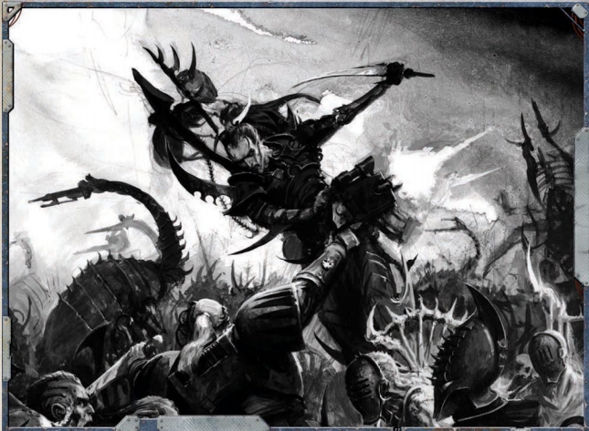
尽管灵族可以使用为人类设计的武器与护甲，但大多数灵族并不愿如此——灵族科技更契合其审美与身体比例，且大多数灵族视人类制造的战争装备为粗陋笨拙之物。灵族使用人类制造的装备并无特定减值，但人类护甲无法舒适地贴合灵族身体，而人类制造的武器通常显得笨重不便。
所有黑暗灵族角色均拥有以下特性、技能、天赋与能力：
通用技能
所有黑暗灵族，无论经由自然分娩还是其他方式降生，都自幼熟悉环绕自身的环境与文化。所有黑暗灵族角色拥有通用学识（黑暗灵族）（Int）、听说语言（黑暗灵族）（Int）与恐吓（S）作为受训基础技能。
敏锐感官
灵族感知与体验存在的强度与清晰度超越其他生物，他们能毫不费力地辨识最微小的细节。黑暗灵族则习惯于幽都永久的幽暗与潜伏的险境。所有黑暗灵族角色初始拥有强化感官（视觉、听觉）与偏执（Paranoia）天赋，以及黑暗视觉（Dark Sight）特性。
优雅无比
所有灵族都具有非人的敏捷，身手十分不凡——很少有生物能在身法与心智上如灵族般迅捷。所有黑暗灵族角色初始拥有猫落地（Catfall）与冲刺（Sprint）天赋，以及超自然敏捷（x2）特性。
非帝国出身
此角色并非在人类中长大，对帝国的文化与历史知之甚少。人类的律法、传统、宗教与迷信对此类角色而言是陌生而疏异的。此角色在涉及人类帝国的所有通用学识、禁忌学识与学术学识检定中承受–10减值。
灵魂之敌
色孽是灵族的祸根与末日。灵族称其为“饥渴女士”，这位混沌之神是灵族最强大的敌人，也是全宇宙所有灵族最深的恐惧。对黑暗灵族而言，这位饥渴女士是啃噬他们灵魂的永恒蛀虫。受色孽影响，感官刺激——尤其是他人痛苦带来的刺激——诱惑着黑暗灵族，却永远无法填满他们空洞的灵魂。对黑暗灵族来说，除了灵魂湮灭的威胁，以及自身灵魂滋生的恐惧，没有什么能真正让他们畏惧——灵魂被自身催生的神祇吞噬，是比任何凡俗危险都更可怕的劫难。黑暗灵族在游戏开始时拥有麻木（Jaded）与黑暗灵魂（Dark Soul）天赋。
异星心智
正如灵族的身体在诸多方面与人类不同，灵族的心智也与人类迥异。灵族感知存在的方式与人类不同——他们以远超人类心智所能轻易理解的强度与清晰度观察宇宙，其心智运作的速度对人类而言令人困惑。他们也能达到人类所无法企及的极端情绪与感受。以下描述了两个最为显著的区别。所有其他可能出现的问题应与GM讨论。
饥渴女士：虽然灵族知道所有混沌诸神都是可怕的威胁，但没有任何存在比对色孽更能威胁灵族的存续。对黑暗灵族而言，这种威胁具体体现为对灵魂的侵蚀——对其根本本质的持续损耗，这种损耗无法停止，只能延缓。黑暗灵族仍会正常获得腐化点，但不会获得变异（mutations）或恶意化形（malignancies）；相反，每一次失败的恶意化形检定都会让该角色获取额外命运点所需的痛苦点数量增加1点。同时，失败检定会伴随更明显的老化迹象，且在无法汲取痛苦时身体会变得更加虚弱——每当一次恶意化形检定失败，黑暗灵族探险者需指定一个除意志外、且此前未曾以此方式指定过的属性。在任何一局游戏结束时，若黑暗灵族角色未获得至少一个痛苦点，他将承受1d5点意志损伤，再加上每一个因恶意化形检定失败而选定的属性，会额外受到1d5点损伤。此损伤不会开始恢复，直到该角色在后续游戏中获得至少一个痛苦点为止。
堕落心灵：和腐化不同，失心对黑暗灵族而言无足轻重。理智与疯狂的概念，对这些扭曲的异形早已不再是需要考量的问题。对他们来说，沉溺欲望、满足灵魂深处非自然的饥渴才是首要关切。黑暗灵族角色不会获得失心点——他们对存在的认知和日常行为，已经完全超越了人类定义的“理智”范畴。
勿与异星言
该生物属于一个被其他物种怀着恐惧与憎恶看待的异形种族，其形态与思想和其他物种差异巨大，使得任何形式的社交互动都更具挑战性。
该生物在与人类打交道时，所有基于交际的检定承受-20减值，人类与之互动时同样承受该减值。这些减值不适用于已经与其熟识的个体。此外，任何异形出现在人类舰船上都会令船员感到不安：一名或多名异形玩家角色持续在舰上停留，会使舰船士气（Morale）降低2点。同时，由于黑暗灵族邪恶的名声，若黑暗灵族角色为获取痛苦点，或是出于任何在船员眼中无法正当化的原因给船员造成痛苦，每次事件都会使舰船士气再降低1点。
痛苦即力量
为延缓自身枯萎灵魂的缓慢消逝，黑暗灵族必须汲取他人的痛苦精粹，吞噬其痛楚与折磨以振奋身体、更新精神。当饱餐他人的痛苦时，黑暗灵族几乎势不可挡——获得超自然的伟力，并变得对危险毫不在意。
每当一名或多名活物（即非机器、非恶魔、或非“非生命”之物）在黑暗灵族角色感知加值米数范围内被杀死、被眩晕、遭受不致死的致命伤、遭受失血、恐惧或压制检定失败，或以其他方式遭受极端痛苦时，该角色获得一个痛苦点（在持续一段时间后获得一个痛苦点，具体取决于痛苦的性质与强度，由GM酌情裁定）。每当黑暗灵族角色累积八个痛苦点时，他会立即消耗这些点数以获得一个临时命运点，该命运点可正常使用，若在本次游戏结束时未被使用则消失。通过累积痛苦点获得的命运点不能被燃烧。
角色不能从任何行动或非行动事件（如残废、火焰或毒素武器品质的效果，或环境效果）中获得超过一个痛苦点，除非某些邪恶快感与天赋另有说明。例如，造成不致死的致命伤且眩晕一个生物仅给予一个痛苦点；即使是多重攻击（Multiple Attacks）行动或投掷手榴弹同时伤害数名敌人（或反复伤害同一敌人），单次行动也仅给予一个痛苦点。
在任何一次游戏结束时，若黑暗灵族角色未获得至少一个痛苦点，他将承受 1d5 点意志力损伤（在“异星心智”中因恶意化形造成的属性损伤之外）——在后续游戏中，此损伤不会开始恢复，直到他获得至少一个痛苦点为止。
不同的黑暗灵族从千变万化的痛苦与恐惧滋味中汲取不同程度的活力与满足，每个人选择将其天赋专注于这些目的。在角色创建时选择以下选项之一。
精巧折磨
由最精湛的刀工所施予的漫长、缓慢、精准的痛苦堪称美味，创造出一种深沉而弥漫的、无法理解的恐怖与最精心雕琢的身体痛苦交织的滋味。除通常获得痛苦点的条件外，此角色在每次对处于眩晕状态的活物造成伤害时，获得一个痛苦点。
丰饶屠戮
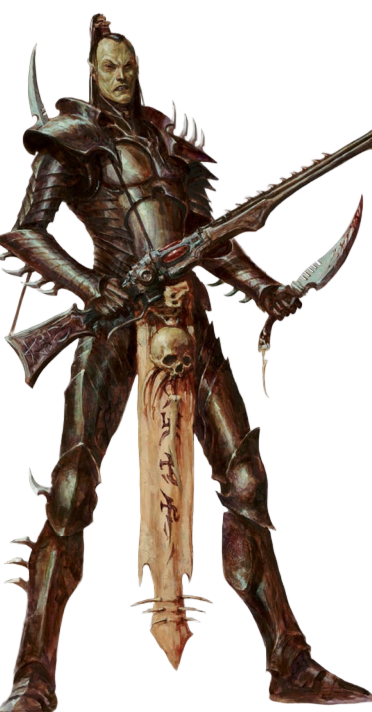
垂死敌人的最后一息是精妙绝伦的，而创伤的灼痛便是极乐。当此角色在近战中杀死一个活物目标，或对一个活物造成导致失血的致命伤并获得痛苦点时，他额外获得一个痛苦点。残酷终结
此黑暗灵族已与那些被他在更远距离上以其技艺所杀之人的独特痛苦相调和，能够更轻易地汲取那股力量。每当此角色自己的远程攻击杀死或眩晕一个活物，或使一个活物敌人遭受致命伤、失血，或恐惧或压制检定失败时，若该敌人在等于其感知属性的米数范围内，他便获得一个痛苦点。
恐惧萦绕
痛苦的许诺与痛苦本身一样甜美，而恐惧的期待是一剂强效灵药。当角色从附近生物恐惧检定失败或被眩晕而获得痛苦点时，他额外获得一个痛苦点。
施虐之喜
黑暗灵族不在乎谁受苦，也不在乎痛苦来自何处——只在乎痛苦本身充盈。每当此角色从盟友的痛苦中获得痛苦点时，只要该角色并非此痛苦的制造者，他便额外获得一个痛苦点。
与人类角色一样，黑暗灵族的属性也是逐一生成的。人类属性均以相同方式生成——掷2d10并将结果加上25，但黑暗灵族的每项属性均有不同的基础值。具体详见表4-1：黑暗灵族属性。
初始承伤：黑暗灵族角色掷1d5+1，并将结果加上两倍的初始坚韧加值，以确定其初始承伤。
初始命运点：所有黑暗灵族角色在游戏开始时拥有1点命运点。
“仅有蛮勇毫无价值。历尽磨难，方得强大。”
——瓦斯特兰·末日之刃，梦魇
新技能组：以下新技能组专为黑暗灵族角色及熟悉阴影枢纽者设计。
智力，技能组：黑暗灵族
通用学识技能允许探险者回忆关于特定世界、群体、组织或种族的一般信息、程序、分支、传统、知名人物及迷信。以下新增技能组已加入可用技能之列。本技能运作方式不变。
-黑暗灵族：涵盖黑暗灵族社会的社会与政治结构知识，包括阴谋团、巫灵斗教、血伶人秘会，以及梦魇、滑板暴徒甚至可怖的曼德拉等外部群体。此技能亦包含对黑暗灵族本性与历史的理解。
智力，技能组：网道
禁忌学识技能代表通常被某个组织或社会所隐藏、遮蔽或禁止的知识。以下新增技能组已加入可用技能之列。本技能运作方式不变。
-网道：关于灵族迷宫维度之秘密与隐匿本质的知识，通常仅由笑神的丑角及极少数博学的灵族所知。
智力，技能组：网道
探险者使用导航技能在两点之间规划航线。以下新增技能组已加入可用技能之列。本技能运作方式不变
-网道：此技能允许探险者利用被称为网道的众多世界间通道与路径，确定前往某地的最安全、最快捷路线。由于网道中许多路径被封锁、封闭或仅为严密保守的秘密，且网道本身并非连接每个世界，因此可能存在许多目的地无法在一次航行中抵达——甚至根本无法抵达。
智力，技能组：黑暗灵族语
听说语言用于以相同语言与他人交流。以下新增技能组已加入可用技能之列。本技能运作方式不变。
-黑暗灵族语：灵族古老语言中一种粗粝而短促的方言，在科摩罗的街道与荒原以及阴影枢纽等前哨站中尤为常见，以其对疼痛与恐惧类型的大量词汇而著称。
以下新天赋专为黑暗灵族角色设计。
前置：黑暗灵族，死眼射击，感知 45，痛苦即力量（痛苦即力量）
远距离击杀敌人的困惑、被弹雨笼罩的猎物的恐慌——这些景象令人愉悦。当一次以该角色为中心、半径等于其感知加值米数范围内的远程攻击对活物造成致命伤、眩晕或击杀，或致使其恐惧或压制检定失败时，该角色获得一个痛苦点。若角色同时有资格通过邪恶快感中的残酷终结获得痛苦点，则此效果与之累积。
前置：黑暗灵族，怜悯弱者，武器技能 40
黑暗灵族在战斗中凶残暴虐，嗜好暴力带来的野蛮快感，以及屠戮弱者所带来的权力感。当对处于眩晕或倒地状态的敌人进行近战攻击或贴身远程攻击时，该攻击获得确凿(4)。
前置：化学使用 +20，学术学识（化学）+20
黑暗灵族将下毒视为一门艺术，有人选择精通此道，成为最致命、最娴熟的用毒者。此角色可消耗一个命运点以自动通过一次化学使用检定，成功度等于其智力加值。此外，当使用任何带有毒素特质的武器时，黑暗灵族将其智力加值加入武器伤害。若武器尚未具有打倒品质，则为其添加打倒（1）；若已有，则提升其打倒品质 1 级。
前置：阴谋团武士
此黑暗灵族熟悉阴谋团的致命工具，能在战斗中有效使用它们。阴谋团武士擅长使用其组织武器，包括毒晶武器及所有原始近战武器。
前置：力量 35，意志 35
弱者受鄙夷，因他们无法独自对抗强者。此角色对力量不及自身者唯有轻蔑，当面对力量或意志属性低于自身、或其利润点或表面社会地位低于自身者时，在进行指挥、商业、欺诈和恐吓技能检定时获得 +10 加值。不幸的是，此角色亦难以掩饰对这类人的轻蔑，与这些人打交道时魅力技能检定上承受–10减值。
前置：痛苦即力量，腐化10+
黑暗灵族对痛苦的渴求与日俱增，他向更远处攫取以满足那邪恶的饥渴。此角色将其腐化点的第一位数字（以米计）加入获得痛苦点的范围。
前置：医疗（Medicae），智力 30
黑暗灵族常活捉俘虏，许多人勤学苦练以精通精准切割或射击之术，在不杀死敌人的情况下使其丧失行动能力，以便从这些可怜虫身上榨取更多痛苦。此探险者已精通非致命制敌之术，每当他对对手造成致命伤时，可进行一次挑战（+0）智力检定。若成功，他可减少相当于其智力加值的伤害，并对其目标造成每点智力检定成功度1点疲劳。此外，此角色在治疗自己造成的创伤时，医疗技能检定获得+30加值。
前置：黑暗灵族，痛苦即力量
黑暗灵族可将汲取的痛苦转化为战斗中更猛烈的凶残，在冲锋的动能中施以更恶毒的创伤。在一次遭遇中获得至少一个痛苦点后，此角色可消耗一个命运点，在遭遇剩余时间内获得狂暴冲锋天赋与兽性冲锋特性。
前置：黑暗灵族，痛苦即力量
黑暗灵族在吞噬低等生物的恐惧时，散发出一种恐怖而威严的力量。在一次遭遇中获得至少三个痛苦标记后，此角色可消耗一个命运点，在遭遇剩余时间内获得恐惧（1）特性，或将其已有的恐惧特性提升 1 级（最高至 3）。当从此恐惧特性获益时，他还可在所有恐吓与指挥检定中获得 +10 加值。
前置：痛苦即力量
黑暗灵族的身体能力因他人的痛苦而大幅增强。在一次遭遇中获得至少三个痛苦点后，此角色可消耗一个命运点，在遭遇剩余时间内获得超自然力量（x2）特性。
前置：痛苦即力量，折磨者之活力
黑暗灵族在饱餐敌人的恐惧后，在战斗中势不可挡。在一次遭遇中获得至少四个痛苦标记后，此角色可消耗一个命运点，在遭遇剩余时间内获得噩梦物质特性。
前置：痛苦即力量
黑暗灵族因他人的痛苦而重获活力，在汲取痛苦时将致命创伤化为琐碎不便。在消耗一个命运点恢复已失承伤后，此角色在遭遇剩余时间内每获得一个痛苦点便恢复 1d5 点已失承伤。
前置：痛苦即力量
黑暗灵族在痛苦之力的驱动下，思绪不受凡人生存之脆弱与恐惧的蒙蔽。在一次遭遇中获得至少两个痛苦点后，此角色可消耗一个命运点，在遭遇剩余时间内获得来自彼岸特性。
前置：黑暗灵族
此黑暗灵族生于权力与威望之中，自幼便被培养以精通残忍与险恶政治。与幽都中在羊水槽与生命子宫中培育的芸芸众生不同，此角色为自然生育，视自身高于那些他将努力统治的半生子可怜虫。此天赋仅可在角色创建时购买，之后任何阶段均无法获取。此角色可以最低费率购买交际属性：简单100 xp，中级250 xp，受训500 xp，专家1,000 xp。
“这些虫豸靠自身之力一事无成，只配在泥淖中挣扎，连最微不足道的胜利都无法企及。但他们手握的财富与权力，足以勾起我主人们的兴趣——单凭这点，就值得以我的利刃完成他们的目的。”
——安希尔·凯拉斯，影棘阴谋团
影棘阴谋团是已知向其他种族的富人与权贵出售暗杀劫掠服务的众多阴谋团体之一。他们愿意为了原材料、奴隶或是任何更玄奥的“报酬”展开劫掠与杀戮——他们的服务冷酷无情，行事始终裹挟着狡诈与隐秘；行动迅捷无比，除屠杀痕迹外几乎不会留下任何行踪。他们承接的任务规模千差万别：从特定时间地点的单次劫掠，到大规模的恐怖流血战役，乃至派出小队战士提供长期协助。
有时，阴谋团会借出单个特工协助客户行动。这些独行战士是同侪中的致命好手——尽管他们厌恶和低等生物混杂，却愿意为了完成任务暂时放下这份憎恶。即便如此，仍有不少特工不屑于屈尊用客户的低等语言交流，更倾向于使用精密的翻译装置，将自身复杂粗粝的黑话转换为客户粗鄙的母语。
 所有灵族的自然寿命都长达数个百年。尽管大多数黑暗灵族的生命都会被敌人或对手的刀锋、弹丸或是毒液骤然终结，但强者与狡诈者却能存续数千年，甚至可以借助血伶人的黑暗秘术，从致命创伤中逃脱。
所有灵族的自然寿命都长达数个百年。尽管大多数黑暗灵族的生命都会被敌人或对手的刀锋、弹丸或是毒液骤然终结，但强者与狡诈者却能存续数千年，甚至可以借助血伶人的黑暗秘术，从致命创伤中逃脱。
幸存下来并攀升至如此高度的黑暗灵族，是超脱于岁月的恐怖存在：他们的速度快过人类的思维，在无数受害者之痛苦的驱动下，足以完成令人骇然的壮举。他们能在致命高射速弹幕转瞬即逝的间隙中舞动穿梭，用近战武器或邪恶的异种枪械极速撕裂敌人，自身的力量与可怖威仪，更会随着每一次不可言说的暴力行径不断增长。
这黑暗的遗产如此强大，即便是黑暗灵族中的半生子普通突击部队，也能分得这份力量的一部分，将其用在自身无止境的攀升之路上，向着伟大领主与恐惧主宰的行列不断前进。
初始技能、天赋、特性与装备：
初始技能：杂技（Ag）、警觉（Per）、化学使用（Int）、通用学识（战争）（Int）、闪避（Ag）、无声移动（Ag）、听说语言（灵族）（Int）、听说语言（黑暗灵族）（Int）
初始天赋：堕落（Decadence）、扰人噪音（Disturbing Voice）、困难目标、阴谋团武器训练、近战武器训练（通用）、抵抗（毒素）
初始特性：敏锐感官、非帝国出身、优雅无比、痛苦即力量、勿与异星言、灵魂之敌
初始装备：极品工艺毒晶手枪或良好工艺毒晶步枪或普通工艺碎片卡宾枪、极品工艺单分子剑或普通工艺动力剑、阴谋团护甲、通讯微珠、翻译单元、可怖战利品或杀戮记录器、任意一种毒素2剂或任意一种战斗药物3剂
| 属性 | Simple | Intermediate | Trained | Expert |
|---|---|---|---|---|
| 武器技能WS | 100 | 250 | 500 | 750 |
| 射击技能BS | 100 | 250 | 500 | 750 |
| 力量S | 250 | 500 | 750 | 1000 |
| 坚韧T | 500 | 750 | 1000 | 2500 |
| 敏捷Ag | 100 | 250 | 500 | 750 |
| 智力Int | 250 | 500 | 750 | 1000 |
| 感知Per | 250 | 500 | 750 | 1000 |
| 意志力WP | 500 | 750 | 1000 | 2500 |
| 交际Fel | 500 | 750 | 1000 | 2500 |
| Rank 1 | |||
| 提升 | 花费 | 类型 | 前置 |
| 狂饮 | 100 | 技能 | |
| 隐蔽 | 200 | 技能 | |
| 欺诈 | 200 | 技能 | |
| 禁忌学识 (海盗) | 200 | 技能 | |
| 航行 (个人) | 200 | 技能 | |
| 听说语言 (高哥特语) | 200 | 技能 | |
| 听说语言 (低哥特语) | 200 | 技能 | |
| 双巧手 | 200 | 天赋 | Ag 30 |
| 快速拔枪 | 200 | 天赋 | |
| 抵抗(寒冷) | 200 | 天赋 | |
| 强韧体魄 | 200 | 天赋 | |
| 击倒 | 200 | 天赋 | |
| 航行 (个人) +10 | 300 | 技能 | 航行 (个人) |
| 技术应用 | 300 | 技能 | |
| 真生子 | 500 | 天赋 | 黑暗灵族, 仅限角色创建 |
| Rank 2 | |||
| 提升 | 花费 | 类型 | 前置 |
| 警觉 +10 | 100 | 技能 | 警觉 |
| 攀爬 | 100 | 技能 | |
| 贸易 (Chymist) | 100 | 技能 | |
| 贸易 (Voidfarer) | 100 | 技能 | |
| 通用学识 (黑暗灵族) +10 | 200 | 技能 | 通用学识 (黑暗灵族) |
| 欺诈 +10 | 200 | 技能 | 欺诈 |
| 指挥 | 200 | 技能 | |
| 驾驶 (悬浮器) | 200 | 技能 | |
| Interrogation | 200 | 技能 | |
| 恐吓 +10 | 200 | 技能 | 恐吓 |
| Literacy | 200 | 技能 | |
| 死眼射击 | 200 | 天赋 | BS 30 |
| Leap Up | 200 | 天赋 | Ag 30 |
| 钢铁神经 | 200 | 天赋 | |
| 快速反应 | 200 | 天赋 | Ag 40 |
| 抵抗(寒冷) | 200 | 天赋 | |
| Sure Strike | 200 | 天赋 | WS 30 |
| 异种武器训练 (任意黑暗灵族) | 300 | 天赋 | |
| 战斗大师 | 500 | 天赋 | WS 30 |
| 困难目标 | 500 | 天赋 | Ag 40 |
| Rank 3 | |||
| 提升 | 花费 | 类型 | 前置 |
| 杂技 +10 | 200 | 技能 | 杂技 |
| 警觉 +20 | 200 | 技能 | 警觉 +10 |
| 化学使用 +10 | 200 | 技能 | 化学使用 |
| 闪避 +10 | 200 | 技能 | 闪避 |
| 禁忌学识 (海盗) +10 | 200 | 技能 | 禁忌学识 (海盗) |
| 禁忌学识 (异形) | 200 | 技能 | |
| 恐吓 +20 | 200 | 技能 | 恐吓 +10 |
| 导航 (地表) | 200 | 技能 | |
| 学术知识(Beasts) | 200 | 技能 | |
| 学术知识(化学) | 200 | 技能 | |
| 无声移动 +10 | 200 | 技能 | 无声移动 |
| 快速装填 | 200 | 天赋 | |
| 强韧体魄 | 200 | 天赋 | |
| 双武器战斗(射击) | 200 | 天赋 | |
| 医疗 | 300 | 技能 | |
| 异种武器训练 (任意黑暗灵族) | 300 | 天赋 | |
| 仇恨 (方舟灵族) | 300 | 天赋 | |
| 腰射 | 500 | 天赋 | BS 40, Ag 40 |
| Mighty Shot | 500 | 天赋 | BS 40 |
| 手术精准 | 500 | 天赋 | Int 40, 医疗 |
| 折磨者之怒 | 500 | 天赋 | 痛苦即力量 |
| Rank 4 | |||
| 提升 | 花费 | 类型 | 前置 |
| 狂饮 +10 | 100 | 技能 | 狂饮 |
| 通用学识 (战争) +10 | 200 | 技能 | 通用学识 (战争) |
| 通用学识 (科洛努斯扩区) | 200 | 技能 | |
| 通用学识 (帝国) | 200 | 技能 | |
| 调查 | 200 | 技能 | |
| 欺诈 +20 | 200 | 技能 | 欺诈 +10 |
| 驾驶 (悬浮器) +10 | 200 | 技能 | 驾驶 (悬浮器) |
| 导航 (星际) | 200 | 技能 | |
| 航行 (飞行器) | 200 | 技能 | |
| 航行 (Spacecraft) | 200 | 技能 | |
| 缴械 | 200 | 天赋 | Ag 30 |
| 怜悯弱者 | 200 | 天赋 | S 35, WP 35 |
| 抵抗(灵能技巧) | 200 | 天赋 | |
| 双武器战斗(近) | 200 | 天赋 | |
| 魅力 | 300 | 技能 | |
| 禁忌学识 (网道) | 300 | 技能 | |
| 异种武器训练 (任意黑暗灵族) | 300 | 天赋 | |
| 强韧体魄 | 300 | 天赋 | |
| Bloodtracer | 500 | 天赋 | |
| Crack Shot | 500 | 天赋 | BS 50 |
| 闪电反射 | 500 | 天赋 | |
| 折磨者之意志 | 500 | 天赋 | 痛苦即力量 |
| 痛苦虹吸 | 500 | 天赋 | 痛苦即力量, 腐化 10+ |
| Rank 5 | |||
| 提升 | 花费 | 类型 | 前置 |
| 攀爬 +10 | 100 | 技能 | 攀爬 |
| 贸易 (Chymist) +10 | 100 | 技能 | 贸易 (Chymist) |
| 贸易 (Voidfarer) +10 | 100 | 技能 | 贸易 (Voidfarer) |
| 指挥 +10 | 200 | 技能 | 指挥 |
| 通用学识 (黑暗灵族) +20 | 200 | 技能 | 通用学识 (黑暗灵族) +10 |
| 隐蔽 +10 | 200 | 技能 | 隐蔽 |
| Literacy +10 | 200 | 技能 | Literacy |
| 禁忌学识 (网道) +10 | 300 | 技能 | 禁忌学识 (网道) |
| Interrogate +10 | 300 | 技能 | Interrogate |
| 医疗 +10 | 300 | 技能 | 医疗 |
| 导航 (网道) | 300 | 技能 | |
| 航行 (个人) +20 | 300 | 技能 | 航行 (个人) +10 |
| 残忍 | 300 | 天赋 | 怜悯弱者, 武器技能 40 |
| 强韧体魄 | 300 | 天赋 | |
| Assassin Strike | 500 | 天赋 | Ag 40, 杂技 |
| 双重射击 | 500 | 天赋 | Ag 40, 双武器战斗 (射击) |
| 异种武器训练 (任意黑暗灵族) | 500 | 天赋 | |
| Marksman | 500 | 天赋 | BS 35 |
| 灵巧侧步 | 500 | 天赋 | Ag 40, 闪避 |
| 迅捷打击 | 500 | 天赋 | |
| 折磨者之力 | 500 | 天赋 | 痛苦即力量 |
| 徒手战士 | 500 | 天赋 | WS 35, Ag 35 |
| Rank 6 | |||
| 提升 | 花费 | 类型 | 前置 |
| 通用学识 (科洛努斯扩区) +10 | 200 | 技能 | 通用学识 (科洛努斯扩区) |
| 通用学识 (帝国) +10 | 200 | 技能 | 通用学识 (帝国) |
| 禁忌学识 (海盗) +20 | 200 | 技能 | 禁忌学识 (海盗) +10 |
| 禁忌学识 (灵能者) | 200 | 技能 | |
| 禁忌学识 (亚空间) | 200 | 技能 | |
| 禁忌学识 (异形) +10 | 200 | 技能 | 禁忌学识 (异形) |
| 调查 +10 | 200 | 技能 | 调查 |
| 导航 (地表) +10 | 200 | 技能 | 导航 (地表) |
| 航行 (飞行器) +10 | 200 | 技能 | 航行 (飞行器) |
| 学术知识(Beasts) +10 | 200 | 技能 | 学术知识(Beasts) |
| 学术知识(化学) +10 | 200 | 技能 | 学术知识(化学) |
| 技术应用 +10 | 200 | 技能 | 技术应用 |
| 魅力 +10 | 300 | 技能 | 魅力 |
| Interrogate +20 | 300 | 技能 | Interrogate +10 |
| 医疗 +20 | 300 | 技能 | 医疗 +10 |
| 剑术大师 | 300 | 天赋 | 武器技能 30, 近战武器训练 |
| 遥远苦痛 | 500 | 天赋 | 死眼射击, Per 45, 痛苦即力量 |
| 反击 | 500 | 天赋 | WS 40 |
| Crushing Blow | 500 | 天赋 | S 40 |
| 异种武器训练 (任意黑暗灵族) | 500 | 天赋 | |
| 愤怒袭击 | 500 | 天赋 | WS 35 |
| 独立目标 | 500 | 天赋 | BS 40 |
| 折磨者之威仪 | 500 | 天赋 | 痛苦即力量 |
| Rank 7 | |||
| 提升 | 花费 | 类型 | 前置 |
| 狂饮 +20 | 100 | 技能 | 狂饮 +10 |
| 攀爬 +20 | 100 | 技能 | 攀爬 +10 |
| 杂技 +20 | 200 | 技能 | 杂技 +10 |
| 指挥 +20 | 200 | 技能 | 指挥 +10 |
| 通用学识 (战争) +20 | 200 | 技能 | 通用学识 (战争) +10 |
| 闪避 +20 | 200 | 技能 | 闪避 +10 |
| 驾驶 (悬浮器) +20 | 200 | 技能 | 驾驶 (悬浮器) +10 |
| Literacy +20 | 200 | 技能 | Literacy +10 |
| 导航 (地表) +20 | 200 | 技能 | 导航 (地表) +10 |
| 航行 (Spacecraft) +10 | 200 | 技能 | 航行 (Spacecraft) |
| 无声移动 +20 | 200 | 技能 | 无声移动 +10 |
| 隐蔽 +20 | 300 | 技能 | 隐蔽 +10 |
| 导航 (网道) +10 | 300 | 技能 | 导航 (网道) |
| 灵能感官 | 300 | 技能 | |
| 致残打击 | 500 | 天赋 | WS 50 |
| 双重打击 | 500 | 天赋 | Ag 40, 双武器战斗(近战) |
| 异种武器训练 (Any 黑暗灵族) | 500 | 天赋 | |
| Gunslinger | 500 | 天赋 | BS 40, 双武器战斗(射击) |
| Strong Minded | 500 | 天赋 | WP 30, 抵抗(灵能技巧) |
| 折磨者之活力 | 1000 | 天赋 | 痛苦即力量 |
| Rank 8 | |||
| 提升 | 花费 | 类型 | 前置 |
| 贸易 (Chymist) +20 | 100 | 技能 | 贸易 (Chymist) +10 |
| 贸易 (Voidfarer) +20 | 100 | 技能 | 贸易 (Voidfarer) +10 |
| 通用学识 (帝国) +20 | 200 | 技能 | 通用学识 (帝国) +10 |
| 通用学识 (科洛努斯扩区) +20 | 200 | 技能 | 通用学识 (科洛努斯扩区) +10 |
| 禁忌学识 (灵能者) +10 | 200 | 技能 | 禁忌学识 (灵能者) |
| 禁忌学识 (亚空间) +10 | 200 | 技能 | 禁忌学识 (亚空间) |
| 航行 (飞行器) +20 | 200 | 技能 | 航行 (飞行器) +10 |
| 航行 (Spacecraft) +20 | 200 | 技能 | 航行 (Spacecraft) +10 |
| 天赋异禀(杂技) | 200 | 技能 | |
| 强韧体魄 | 200 | 天赋 | |
| 魅力 +20 | 300 | 技能 | 魅力 +10 |
| 调查 +20 | 300 | 技能 | 调查 +10 |
| 学术知识(化学) +20 | 300 | 技能 | 学术知识(化学) +10 |
| 沙伊梅什门徒 | 500 | 天赋 | 化学使用 +20, 学术知识(化学) +20 |
| 异种武器训练 (任意黑暗灵族) | 500 | 天赋 | |
| Hotshot Pilot | 500 | 天赋 | 航行 技能, Ag 40 |
| 徒手大师 | 500 | 天赋 | WS 45, Ag 40, 徒手战士 |
| 铜墙铁壁 | 500 | 天赋 | Ag 35 |
| 闪电打击 | 1000 | 天赋 | 迅捷打击 |
| 折磨者之至尊 | 1000 | 天赋 | 痛苦即力量, 折磨者之活力 |
| 超自然敏捷 (x3) | 1000 | 特质 | WS 45, Ag 40, 徒手战士 |
“在这银河之中，再没有比找到一种新的杀戮方式更美妙的事了。”
——维斯·库安，低语之殁阴谋团执政官
黑暗灵族以其庞大诡谲的杀戮与施虐手段闻名银河，他们始终在寻找新颖而充满想象力的方式，扩充这座杀戮武库。这个社会由反复无常、冷酷无情的霸主随心所欲地推动，权贵阶层使用的兵器完全取决于当下哪一种杀戮方式最为时髦；而挣扎求存的底层，只能用手中有限的家伙，使出尽可能凶残的手段。
本节内容有两个目的：其一，为扮演阴谋团武士的玩家角色，以及其他寻求优雅或异种杀戮方式的使用者，提供合适的武器与护甲清单；其二，作为后文介绍黑暗灵族NPC的配套内容，详细说明本次冒险中可能被用来对付探险者的各类特殊武器。
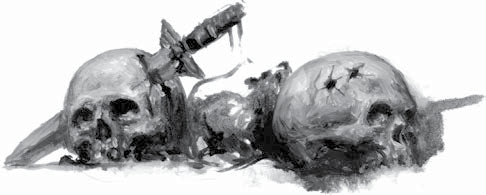
本节所列所有武器均标注了获取难度，适用于角色在黑暗灵族定居点中寻找物品——可用于确定阴谋团武士的初始装备，或用于获取在阴影枢纽乃至幽都本身中发现的物品。
在这些有限情境之外，黑暗灵族战争装备显著更难获得。若探险者在黑暗灵族避难所之外寻求本节中的物品，将所有物品的获取难度提高四个等级——即普通（Common）物品变为极其稀有（Very Rare），而稀有（Rare）物品变为唯一（Unique）。获取难度为极其稀有（Very Rare）、极度稀有（Extremely Rare）、近乎唯一（Near-Unique）和唯一（Unique）的物品，若仍可获取，均应视作唯一（Unique）处理。
以下是适用于附录中众多黑暗灵族武器与攻击的新武器品质：
某些尤为残忍或致命的武器会在受害者伤口中留下活体倒刺或碎片，造成剧烈疼痛甚至缓慢致死。当目标受到具有致残品质的武器造成的至少1点伤害（在扣除护甲与坚韧加值之后）时，其在剩余的战斗遭遇中或直到所有伤害被治愈前，视为处于“残疾”状态。若致残角色在单个回合内执行超过一个半动作，则该角色承受等于括号中数值（X）的撕裂伤。此伤害不受护甲或坚韧加值减免。
打倒武器专为穿刺与撕裂而设计，能够击倒最强大的敌人。若武器命中，它忽略目标拥有的等于括号中数值的超自然坚韧等级数。例如，打倒（1）武器忽略超自然坚韧（x2）的增益，并将超自然坚韧（x3）的增益降低一个倍数。
具有确凿品质的武器总能造成显著的创伤，并将伤害掷骰中低于括号中数值的任何结果视为该数值。例如，确凿（3）武器在计算伤害时，将任何1或2的掷骰结果视为3。
此武器的剪切锋刃能滑穿最先进的护甲，如同滑穿粗劣的锡皮。使用此武器进行攻击检定时，若攻击掷骰获得两个或以上的成功度，则该次攻击的穿甲值翻倍。
“完美的一击——精准如手术，落点如艺术，时机则带着绝妙的施虐感。那可怜虫至死都不知道死亡将至。”
——萨里克·赫沙克，点评同僚阴谋团武士的杀戮记录
尽管大多数黑暗灵族都是精湛的近战格斗者，但许多人选择从远处施放死亡——这往往出于自保意识或对敌人的鄙夷。即便是那些偏爱近战混战者，也常会携带某种副武器上阵，用于击倒逃跑者或向不值得动刀的对手致以最后的侮辱。
黑暗灵族种类繁多的枪械与其主人一样残忍恶毒——从毒晶步枪的淬毒针晶，到黑暗光矛所带来的彻底湮灭，应用尽有。
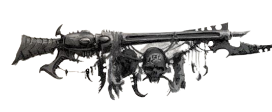
表4-2：阴谋团武器
| 毒 晶 武 器 | ||||||||||
|---|---|---|---|---|---|---|---|---|---|---|
| 名称 | 类别 | 射程 | 射速 | 伤害 | 穿甲 | 弹匣 | 装填 | 特殊 | 重量 | 获取难度 |
| 碎片卡宾枪† | 基础 | 60m | S/3/5 | 1d10+2 R | 3 | 200 | 2整轮 | 风暴，毒素 | 3kg | Scarce |
| 毒晶加农炮† | 重型 | 110m | –/–/10 | 1d10+5 R | 4 | 300 | 3整轮 | 撕裂，毒素 | 15kg | Rare |
| 毒晶手枪† | 手枪 | 50m | S/3/– | 1d10+2 R | 3 | 120 | 2整轮 | 毒素 | 1kg | Common |
| 毒晶步枪† | 基础 | 80m | S/3/5 | 1d10+2 R | 3 | 200 | 2整轮 | 毒素 | 2.5kg | Average |
| 手 雷 | ||||||||||
| 灵族等离子手雷 | 投掷 | SB×3 | S/–/– | 1d10+6 E | 4 | |||||
| † 这些武器在其条目中有额外规则说明。 | ||||||||||
毒晶武器（Splinter Weapons）
毒晶武器以强大的磁脉冲发射碎裂的水晶晶片。这些晶片上涂有剧毒且速效的毒素，可确保痛苦的死亡，或使潜在的奴隶丧失行动能力。阴谋团武士最喜爱的武器是毒晶步枪——常在劫掠者（Raider）或毒液（Venom）艇的护栏上移动射击。其手持型号毒晶手枪则是一种优雅的副武器，在幽都与阴影枢纽的刺客与街头斗士中备受青睐；尽管专为精准短射设计，其储液舱中的毒素却丝毫不减其致命性。有些黑暗灵族被其武器所引发的痛苦扭曲表情深深迷住，便会使用更大、更强的毒晶武器——其中包括碎片卡宾枪，天灾与真生子的最爱；以及毒晶加农炮，能在一轮齐射中扫倒一整群恐慌的猎物。
大多数毒晶武器都配有锋锐的刀刃，既作装饰亦作武器。配有此类刀刃的毒晶手枪在近战中被视为单分子刀刃，而配有刀刃的毒晶步枪或碎片卡宾枪则被视为单分子长矛（原始近战武器见《行商浪人》核心规则书第131页）。
毒晶加农炮通常配有悬浮吊舱与反重力稳定器，使高机动性的战士能在移动中更有效地使用它，或更长时间地保持对目标的瞄准。带有这些升级的毒晶加农炮为非常稀有（Very Rare）而非稀有（Rare），但使用者用它进行的任何射击都获得自动架设特性。
灵族等离子手雷(Eldar Plasma Grenade)
灵族在很久以前便完善了等离子在武器中的应用，制造出既稳定安全、又对敌人同样有效的装置。他们的等离子手雷便是一个典型例证——人类制造的等离子弹头依赖于未受约束等离子体的不稳定与破坏性本质，而灵族等离子手雷释放的是精准的热能与电磁力脉冲，不仅能灼烧敌人，还能使其陷入晕眩失神。
表4-3：异种黑暗灵族远程武器
| 暗光武器 | ||||||||||
|---|---|---|---|---|---|---|---|---|---|---|
| 名称 | 类别 | 射程 | 射速 | 伤害 | 穿甲 | 弹匣 | 装填 | 特殊 | 重量 | 获取难度 |
| 冲击手枪 | 手枪 | 20m | S/–/– | 2d10+5 X | 16 | 6 | 3整轮 | 打倒（1），确凿（2） | 2kg | Rare |
| 冲击枪 | 基础 | 60m | S/–/– | 2d10+10 X | 16 | 18 | 3整轮 | 打倒（1），确凿（3） | 4kg | Rare |
| 黑暗光矛 | 重型 | 140m | S/–/– | 2d10+16 X | 16 | 36 | 4整轮 | 打倒（1），确凿（4） | 16kg | Very Rare |
| 异种远程武器 | ||||||||||
| 分解炮 | 重型 | 140m | –/–/5 | 1d10+12 E | 12 | 30 | 4整轮 | – | 30kg | Very Rare |
| 热光矛† | 基础 | 50m | S/–/– | 1d10+15 E | 15 | 10 | 2整轮 | 精准 | 6kg | Very Rare |
| 巫术步枪† | 基础 | 180m | S/–/– | 1d10+1 I | 2 | 1 | 3整轮 | 精准，打倒（2） | 5kg | Unique |
| 液化枪† | 基础 | 20m | S/–/– | 2d10+2 I | 特殊 | 2 | 2整轮 | 火焰，毒素 | 4kg | Extremely Rare |
| 幻象手雷发射器† | 基础 | 30m | S/2/– | – | – | 6 | 6整轮 | – | 4kg | Rare |
| 粉碎者 | 基础 | 60m | S/–/– | 2d10+5 R | 2 | 12 | 2整轮 | 可靠，爆炸（3），撕裂 | 2kg | Rare |
| 刺针手枪 | 手枪 | 30m | S/–/– | 1d10+2 R | 3 | 18 | 2整轮 | 打倒（1），毒素 | 1kg | Extremely Rare |
| † 这些武器在其条目中有额外规则说明。 | ||||||||||
暗光武器（Darklight Weapons）
黑暗灵族从不被低等生物口中所谓的自然法则束缚，他们使用高能武器，从黑洞核心与其他致命天体现象中抽取一道连贯而诡谲的贪婪暗光之流。暗光与宇宙真质接触便会触发爆炸反应，光束所过之处，只剩焦黑荒芜。暗光本身活性极强，每次射击仅需极其微量——任何更大剂量都足以引发不可言说的浩劫，因此每个约束舱只能容纳最细碎的暗光微粒，由强力结界与力场牢牢禁锢。哪怕只是无防护直视暗光，它那违背常理的辉光也会永久灼伤双眼——这束邪异光芒之所以会带来这般痛苦，正是源于暗光对周遭真光的腐化作用。
黑暗灵族拥有多种形制的暗光武器，其中不乏威力恐怖的巨型鱼雷，但最常见的是能够实现野蛮精准毁灭的便携装置：冲击手枪（Blast Pistol）、冲击枪（Blaster）与黑暗光矛（Dark Lance）。其中任意一种都能撕裂最坚固的护甲，对活体血肉留下可怖创伤——微小的暗光微粒就能在其所接触的物质内部引发强力爆炸。
分解炮（Disintegrator Cannon）
分解炮利用从被奴役的恒星中窃取的微量等离子，是一种精密的武器——尽管内部能量翻涌沸腾，分解炮即使在持续射击后仍可以保持触感冰凉。分解炮最常见于安装在劫掠者与破坏者等载具上。
热光矛（Heat Lance）
这些强大的装置将激光武器的聚焦与精准与热熔武器的灼热威力相结合，创造出一种能在比大多数同类热熔枪更远的距离上熔化装甲板的武器，同时兼具灵族最精良激光武器的细腻精准。热光矛在短程（Short Range）及更近距离攻击目标时，穿甲值翻倍。
巫术步枪（Hexrifle）
数千年前，幽都曾遭遇一场性质极为特殊的瘟疫。尽管瘟疫本身早已被扑灭，但疾病样本仍以药剂瓶的形式保存在血伶人的实验室中，用以作为对付敌人的武器。每一把巫术步枪都是独一无二的，为血伶人量身打造，用以传播这种强效而奇异的瘟疫，但所有步枪的运作方式基本相同。步枪发射装有极微量疾病的水晶晶柱，命中时晶柱碎裂，使目标暴露于瘟疫之中。对除最强健之外的所有受害者而言，这短暂的暴露便足以让瘟疫开始其邪恶的工作——将血肉与骨骼化为玻璃，在原本活物所在之处留下一尊晶莹剔透、完美无瑕的雕像。
任何活物（不包括恶魔或机器）在扣除护甲与坚韧加值后，受到巫术步枪造成的一点或更多伤害时，必须立即通过一次艰难（–20）坚韧检定，否则受影响的肢体立即化为玻璃而丧失，承受肢体丧失的一切通常效果（若受影响部位为头部或躯干则死亡）。若该角色此检定失败三个或以上等级，则整个身体屈服于水晶瘟疫，直接死亡。消耗命运点以在此类死亡中幸存下来的角色仅部分结晶，并昏迷1d10+5分钟，其身体奇迹般地击退了疾病。
液化枪（Liquifier Gun）
这件由管道与软管构成的繁复装置喷射出一股高腐蚀性液体，能熔化其所触及的一切。通常由怪形、畸人及其他血伶人仆从携带，这些武器最常见的燃料是此类生物体内充当血液的腐蚀性液体。液化枪的有害载荷所造成的破坏完全取决于溅射到目标身上的液体量。
虽然严格来说并非火焰武器，但液化枪的运作方式几乎完全相同——包括被点燃的可能性；实际上，这代表了一定量的腐蚀性液体残留在目标身上，持续侵蚀血肉与护甲，因此造成 1d10 I 点伤害，并带有毒素品质，取代火焰的正常伤害。角色进行敏捷检定以避免液化枪时，每有一个失败度，液化枪的穿甲值便增加 2——失败越大，击中目标的酸液量就越多，因此对护甲的侵蚀也越快。内置在黑暗灵族怪物（如畸人或血肉龙兽）体内的液化枪永远无需装填，但每次发射时会对使用者造成 1d5 I 点伤害——此伤害不受护甲或坚韧加值减免——因为他喷出了自身体内充当血液的毒性物质。
幻象手雷发射器（Phantasm Grenade Launcher）
这些背挂式武器发射一连串微小而易爆的圆盘，释放出精细的精神活性蒸气雾，只需吸入一丝便能引发可怕的噩梦。这些手雷落点 10 米范围内的任何人必须通过一次困难（–10）坚韧检定，否则在《行商浪人》核心规则书第 294 页的表 10-4：The Shock Table上掷骰，坚韧检定每有一个失败度，结果便增加 +10。幻象手雷发射器永远不能装填其他类型的手雷。
粉碎者（Shredder）
粉碎者释放出一张扩张的单丝网状物，其上遍布微小的倒钩。此网将受害者缠绕在一张无形的网中，在其挣扎时将其切割。
刺针手枪（Stinger Pistol）
这是一种带有残酷目的的邪恶武器，刺针手枪通过其发射的细针输送令人恐惧的致命毒素。
“冰冷钢铁对温热血肉的轻抚是一种神圣的馈赠，一份在纯粹与简洁上无与伦比的体验。我已在数不清的对手身上遍尝它的回响，却从未亲身领受过这份体验。你是愿意成为第一个将这份体验赠予我的人，还是甘愿做又一个让我借你身躯间接感受这份馈赠的人？”
——据传为莉莉丝·赫斯佩拉克斯所言
在黑暗灵族中，凝视敌人垂死时的双眼备受推崇——尽管他们往往会用无数诡计与欺诈来铺垫这一刻，但杀戮本身，始终被视作两个个体之间能够共享的最亲密之举。对大多数黑暗灵族而言，在近战中直面对手，就是最直接的满足施虐饥饿的方式；幽都的街道上，早已浸满了那些太过软弱、无法在偏执警觉与施虐饥饿之间维持残酷平衡者的鲜血，永远殷红一片。
然而在富有而强大的黑暗灵族看来，普通的刀刃不过是孩童的玩物。淬毒之刃浸染着致命的毒药与腐蚀药膏，爪刃与长鞭跳动着满含恶意的能量火花，还有种种更玄奥诡秘的装置——这些都是他们珍爱的杀戮与掌控工具，更是身份威望与个人力量的象征。
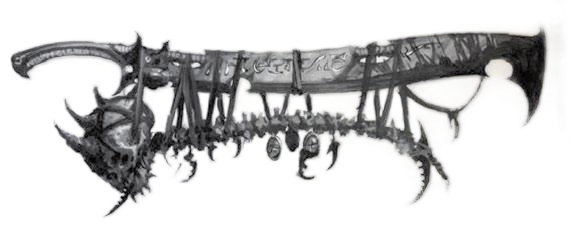
表4-4：异种黑暗灵族近战武器
| 名称 | 类别 | 射程 | 伤害 | 穿甲 | 特殊 | 重量 | 获取难度 |
|---|---|---|---|---|---|---|---|
| 痛苦鞭† | 近战 | 3m | 1d10+3 E | 6 | 柔韧，力场，撕裂，震击 | 2kg | Rare |
| 痛苦爪† | 近战 | – | 1d10+4 E | 7 | 力场，撕裂，震击 | 2kg | Rare |
| 电蚀鞭† | 近战 | 3m | 1d10+4 R | 8 | 柔韧，震击 | 2kg | Rare |
| 血肉拳套† | 近战 | – | 1d10+3 R | 2 | 毒素，不平衡 | 5kg | Extremely Rare |
| 地狱战戟† | 近战 | – | 1d10+5 R | 3 | 锋锐 | 4kg | Scarce |
| 空壳之刃† | 近战 | – | 1d10+3 R | 7 | 平衡，打倒 (1)，力场 | 3kg | Unique |
| 海德拉拳套† | 近战 | – | 1d10+2 R | 2 | 撕裂 (Tearing) | 1.5kg | Very Rare |
| 穿刺者† | 近战 | – | 1d10+3 R | 3 | 锋锐 | 2kg | Rare |
| 心灵相位拳套† | 近战 | – | 1d10 I | 0 | – | 4kg | Very Rare |
| 剃刀连枷 | 近战 | 3m | 1d10+2 R | 3 | 柔韧，锋锐 | 3kg | Rare |
| 掠夺者之牙† | 近战 | – | 2d5 R | 2 | 打倒 (1)，撕裂，毒素 | 1kg | Extremely Rare |
| 碎片网† | 近战/投掷 | 5m | 2d5 R | 1 | 柔韧，捕网，致残 (1d5)，震击 | 3kg | Rare |
| 毒刃 | 近战 | – | 1d10+4 R | 2 | 平衡，打倒 (1)，毒素 | 2kg | Extremely Rare |
| 巫灵刀† | 近战 | – | 1d10 R | 3 | 锋锐 | 0.5kg | Scarce |
| † 这些武器在其条目中有额外规则说明。 | |||||||
痛苦武器（Agoniser）
这些极其精密的近战武器通过强烈的痛苦压垮目标的感官，甚至能对中枢神经系统造成长期损伤。痛苦武器有多种形式，最常见的是鞭与带刺连枷，但爪指拳套也同样受青睐。极品工艺的痛苦武器在对活物造成致命伤时，除其他效果外，还会造成 1d5 点永久的感知损伤。
电蚀鞭（Electrocorrosive Whip）
电蚀鞭是一条浸透了毒素的聚合物抽击舌，手柄中装有高能神经电发生器。最轻微的触碰都极为痛苦，同时通过毒素与电击使敌人虚弱无力。任何受到电蚀鞭造成的一点或更多伤害（在扣除护甲与坚韧加值后）的生物，同时承受 1d10 点力量损伤。
血肉拳套（Flesh Gauntlet）
血肉拳套是一种带爪的手套，其上布满针状尖刺，还配备了装载强效电类固醇的密封小瓶，注射后会迫使细胞以非自然的方式不受控地快速生长。受害者会真正地“撑破自己的皮肤”，在不断膨胀增生的组织中爆裂开来，最终只留下一堆抽搐的过度增生肌肉、破裂皮肤与碎裂骨骼。即便不少型号的血肉拳套每次使用后都需要重新准备电类固醇，也丝毫没有削弱这件武器的致命性。
任何未通过血肉拳套毒素品质触发的坚韧检定的生物，将承受2d10+5点撕裂伤害——该伤害无视护甲与坚韧加值，替代常规的1d10点冲击伤害——因为受害者的身体会迅速膨胀并撕裂自身。由于这件武器是为输送特定的致命混合物专门设计的，永远无法装填新毒素，详见下文“毒素谱系”。最后，在触发一次带特殊毒素品质的坚韧检定后，血肉拳套必须重新校准才能生成更多致命混合物；毒素耗尽后，它会失去毒素品质，直到持有者花费一个半动作，成功通过一次普通（+10）的化学使用或技术应用检定。
地狱战戟（Hellglaive）
这些长柄双头武器是滑板暴徒的最爱，他们利用两端锋利的钩子将自己拉过拐角、越过障碍，而宽阔的刃头与对称的平衡则有助于滑板暴徒在飞行中的稳定。作为武器，它们同样有用——地狱战戟的平衡与锋锐刀锋使得足够熟练的滑板暴徒能在每次掠过时击倒多个敌人。
地狱战戟设计为双手武器使用，带有两个攻击端。因此，双手持用地狱战戟的角色始终被视为装备了一对具有其数据的武器（每只手各一把），并遵循《行商浪人》核心规则书第246页中双武器战斗的所有规则。地狱战戟对飞行滑板骑手的实用性使持有者在所有航行（个人）检定中获得 +10 加值。
空壳之刃（Husk Blade）
空壳之刃看起来由开裂、多孔的骨头制成，划过空中会留下淡淡的烟痕，接触刃面的水分会被瞬间蒸发。被这类刀刃劈砍或刺中后，受害者会缩成干枯的尸体，片刻间便化为尘土；即便只是侥幸被擦伤，伤者也会发现自身大量生命力已经被这件致命武器抽走。
任何生物受到空壳之刃造成的1点或更多伤害（扣除护甲与坚韧加值后），都会额外承受2d10+5点坚韧损伤。任何被空壳之刃造成致命伤的生物会立即死亡，几乎瞬间化为尘土，其肉体消亡后，垂死尖叫的回响仍会残留不散。
海德拉拳套（Hydra Gauntlets）
这些奇特的武器是海德拉的标志性工具，据称她们所挥舞的刃拳套是在现实之外、某个奇异而遥远的空间碎片中铸造的。每只拳套上的刀刃由一种不断自我更新的奇异晶体物质生长而成，会萌发出新刃以替换被削断或变钝的旧刃。
海德拉拳套只能由海德拉巫灵成对装备——尽管理论上可以单独使用一只，但这不仅粗俗，威力也会大打折扣。当装备了一对海德拉拳套的角色进行全力攻击（All-Out Attack）动作时，该角色可花费其反应动作，原本的武器技能检定中每有三个成功度，就用每只海德拉拳套各进行一次额外攻击，算作全力攻击动作的一部分。
穿刺者（Impaler）
穿刺者本身并不起眼——一把简单的双刃短矛，可深深刺入受害者的身体。穿刺者很少单独使用，大多数使用它们的是伊拉克纳巫灵，她们将其与碎片网配合使用。
在不熟悉其微妙之处的人手中，穿刺者仅算作单分子长矛（原始近战武器，见《行商浪人》核心规则书第131页），但只要持有者拥有近战武器训练（原始）天赋，便不会因此方式使用而承受惩罚。
心灵相位拳套（Mindphase Gauntlet）
心灵相位拳套与其说是武器，不如说是一种控制装置，只需一次触碰便能将生物定在原处。短暂的接触足以使拳套的放电麻痹肌肉、迟钝心智。
被心灵相位拳套击中的生物必须立即进行一次挑战（+0）力量检定与一次挑战（+0）意志检定。若任一检定失败，该生物被眩晕 1 轮，并每有一个失败度获得一级疲劳。若两项检定均失败，将两次检定的失败度相加，以确定该生物获得多少级疲劳。
剃刀连枷（Razorflail）
剃刀连枷是拉克雷巫灵的标志性武器，由多条互锁刀片通过缆绳连接而成，属于轻型兵刃。触发时刀片可瞬间分离，将单柄兵器转变为一柄多刃长鞭。在精通它的持有者手中，这种武器几乎无法招架，能劈透几乎任何防御。剃刀连枷通常成对使用，巫灵在战场上舞动时，周身会环绕着旋转不息的致命刀锋之墙。
掠夺者之牙（Reaver's Fang）
骸骨尖塔的贵族们相信，每一次死亡都应配有完美的侮辱，以及引发它的完美毒药。掠夺者之牙的三叉刃正是为满足后者需求而设计的。
掠夺者之牙可装载最多三种毒素以替换其毒素品质，而非仅一种，详见“毒素谱系”。然而，每次只能有一种毒药发挥其邪恶作用，因此武器使用者在每次攻击前必须选择一种毒药生效。
碎片网（Shardnet）
碎片网是一种覆盖着微小倒刺的金属网，倒刺刺入血肉，每一次挣扎都会撕裂伤口，同时施放电击，使受害者无法自卫，并在带刺的网中抽搐扭动。
碎片网的致残伤害仅在目标被捕网品质固定期间持续，但会在目标每次试图挣脱时触发，而这又可能使震击品质再次生效。
毒刃（Venomblade）
此武器是黑暗灵族贵族中财富与权力的常见标志。每把毒刃都有数千个微孔，持续渗出一种蒸馏的剧毒混合物。毒刃最轻微的划痕也足以击倒最强大的敌人。
巫灵刀（Wych Knife）
乍看之下，这些刀与平民的刀具或阴谋团武士的剥皮刀几乎无异。然而，其制造中的微妙细节——如锯齿的纹样、刀身的精确曲度或穿孔的位置——影响着其平衡与所造成的伤口，因此在专家手中，它们能造成严重的创伤，并能在除最坚固护甲之外的所有护甲上找到弱点。
不精通巫灵刀使用的角色，在所有方面将该武器视为单分子刀（原始近战武器，见《行商浪人》核心规则书第131页），而非使用列出的数据；但只要该角色拥有近战武器训练（原始）天赋，便不会因此方式使用而承受惩罚。
“没有比恐惧更精良的护甲——它能在敌人挥击的意志成形之前便止住刀锋，反倒让实体护甲成了无谓的负担。”
——海拉克斯领主的遗言
黑暗灵族或许迅捷而傲慢，但他们并非对护甲的好处视而不见——尽管他们偏爱不妨碍其天生迅捷的轻便甲胄，但即便是骄傲而优雅的巫灵，也少有不着甲上阵者。那些真正不着甲上阵者比大多数人更为傲慢，而历史会告诉我们，他们对自己不可战胜的假设是否正确。
表4-5：黑暗灵族护甲与力场
| 名称 | 覆盖部位 | 护甲点 | 重量 | 获取难度 |
|---|---|---|---|---|
| 异形皮外套 | 躯干 | 3 | 1kg | Plentiful |
| 异形皮披风 | 全身 | 2 | 3kg | Common |
| 阴谋团护甲 | 全身 | 4 | 5kg | Average |
| 幽魂板甲 | 全身 | 6 | 2kg | Rare |
| 巫灵套甲 | 全身 | 2 | 0.5kg | Common |
| 阴影力场 | – | – | 0.5kg | Near Unique |
| 克隆力场 | – | – | 0.5kg | Near Unique |
异形皮衣物（Xenohide Clothing）
这些衣物由竞技场野兽或奴隶（无论死活）剥下的皮制成，是阴影枢纽中黑暗灵族的常见穿着。材料的硬化特性有助于抵御潜在的刺客以及骸骨尖塔与暗影动脉中常见的其他危险。
阴谋团护甲（Kabalite Armour）
这种分段板甲套装为各类阴谋团武士所常用——从幽都底层挣扎爬上来的半生子杀手，到居于宫殿尖塔中倨傲的真生子。每套护甲由各类倒钩与挂钩固定，深深刺入穿着者的血肉，刺激其神经束。穿着者会因自身的痛苦变得感官敏锐，仅仅穿上这身护甲，就足以让自己为战斗做好准备。任何不习惯穿戴此类护甲的人，穿戴时必须通过一次挑战难度（+0）的坚韧或意志检定，否则会获得一级疲劳，还会因倒钩刺入肉中，忍不住不断通过咒骂、抱怨或呜咽表达不快。
巫灵套甲（Wychsuit）
巫灵套甲这类装备本质是灵活的全身紧身衣，以不拘一格的方式加装装甲板与加固面板。巫灵穿着的款式通常只防护他们习惯性朝向敌人的身体一侧，滑板暴徒则常穿戴装甲护领与护臂，许多劫掠者更偏爱带面罩的头巾与加厚垫肩甲。无论形制如何，即便这套护甲提供的防护力微乎其微，也很难击中穿戴它的黑暗灵族战士。
力场规则
“力场”涵盖了银河系中广泛的技术范畴，但所有个人防御力场都是保护使用者免受敌人攻击的装置。一个角色一次只能受益于一个力场，无论他装备了多少不同的力场。当穿着激活力场的角色被击中时，掷1d100。若结果低于或等于力场的防护等级，该次命中被无效化，对受保护角色不产生效果（尽管某些攻击可能对角色的周围环境或其他附近的角色产生影响，尤其是具有爆炸品质的武器）。
灵族力场往往非常可靠，很少过载。若力场确实过载，它将停止运作，直到使用者将其修复。大多数力场需要一次极难（–30）技术应用检定来修复。
幽魂板甲（Ghostplate Armour）
幽魂板甲由奇特的树脂材料制成，并注入了轻于空气的气体囊袋，每套幽魂板甲在提供可观防护的同时，重量远轻于任何同类甲胄。一套幽魂板甲的昂贵程度使其只有最富有、最具影响力的黑暗灵族才能获得。每套护甲还由力场进一步强化。
幽魂板甲的力场拥有20点防护等级，但若使用者在偏转来袭攻击的任何掷骰中掷出双数（个位与十位相同），则在抵挡该次攻击后过载。
阴影力场（Shadow Field）
阴影力场是一种玄奥的黑暗灵族装置，能创造出几乎无法穿透的防御。它在穿戴者周围投射出一团黑暗能量烟雾，几乎能抵御任何攻击，其中的战士也不易被瞄准。然而，一旦有人设法穿透这团烟雾光环，力场的不稳定性便会导致其几乎立即崩溃。
阴影力场是一个防护等级为80的力场。然而，若任何针对该防护等级的掷骰结果高于防护等级，力场立即失效，在修复之前不再提供任何保护。修复力场需要精细的校准，在使用者或其他角色花费至少一小时进行修理并在战斗外成功通过一次极难（–30）技术应用检定之前，它无法再次使用。
克隆力场（Clone Field）
克隆力场不投射连贯的能量场，而是投射出穿戴者的全息复制体，所有复制体外观完全相同，并以逼真的同步性完美移动。只有通过试错才能识别出真正的穿戴者，而很少有战斗者有足够时间在一群幻象中找到真正的威胁。
由于穿戴者周围环绕着不断变换的复制体，在克隆力场激活期间，他每轮可重掷一次失败的闪避检定，并且每轮可进行一次额外的闪避检定，额外闪避不消耗可用的反应。此外，穿戴者在成功的闪避检定上将成功度翻倍。克隆力场无法用于躲避不依赖视觉作为主要感官的实体的攻击。克隆力场不提供直接防护，因此不会过载。
“蝎子的蛰刺是致命的，但正是毒素使其如此。没有精选毒药的刀刃是赤裸的，只是它应有形态的苍白阴影。”
——斯利亚森·泰尔，毒师与化学家
在浸透鲜血的竞技场里，在黑暗之城致命的街道中，化学优势作为能多活一天、再赢一战的保障备受珍视。无论是对对手施毒，还是为自身注射战斗兴奋剂，黑暗灵族都会不惜一切代价夺取胜利。
表4-6：药物与毒素
| 名称 | 重量 | 获取难度 |
|---|---|---|
| 加速剂 | 0.1kg | Scarce |
| 尸魂菁华 | 0.1kg | Rare |
| 开膛素 | 0.1kg | Scarce |
| 谋杀恩赐 | 0.1kg | Scarce |
| 颤步剂 | 0.1kg | Rare |
| 灵魂回响 | 0.1kg | Extremely Rare |
| 精纯矾液 | 0.1kg | Scarce |
| 终息毒 | 0.1kg | Rare |
| 心火 | 0.1kg | Very Rare |
| 液态苦痛 | 0.1kg | Scarce |
| 梦魇药剂 | 0.1kg | Very Rare |
| 血潮溢散 | 0.1kg | Rare |
| 生机叛变 | 0.1kg | Extremely Rare |
尽管战斗药物与兴奋剂会大幅缩短使用者的预期寿命，但它们在黑暗灵族社会中广泛使用。时尚潮流与供需波动通常会影响某场战斗或实体空间劫掠中使用哪些药物，但某些药物在阴影枢纽居民中仍保持流行。
黑暗灵族战斗药物专为增强灵族生理机能而设计，在任何其他生物的体内均不起作用。任何非灵族角色服用下列任何一种战斗药物，都必须通过一次困难（–20）坚韧检定，否则立即被眩晕1d5轮，因为化学成分在它们并非设计用于增强的生理结构中痛苦地流转。若此检定失败四个或以上等级，角色还承受 1d10 点伤害（无视护甲与坚韧加值），因为他遭受了特别严重的副作用。
这些药物并非设计用于组合使用。灵族角色若在第一种药物仍生效期间尝试服用第二剂任何战斗药物，也必须进行上述检定，无论第二剂是相同药物还是新药物。无论他通过还是失败，角色只获得最近服用的一剂药物的收益。
除非另有说明，以下所列所有药物的持续时间均为 50+2d10 分钟。每服用一剂都会对角色造成身体与精神压力，使其衰老，并加速其本已空洞的灵魂的消耗。每剂药物在服用时造成 1d5 点腐化。
加速剂（Accelerai）
这种兴奋剂改变战士的肾上腺，产生一种更为强效的物质。加速剂提取自一种小型、多足、极具攻击性的掠食者的大脑，这种生物发现于“泰拉之光”号的残骸外壳以及漂荡于科洛努斯扩区的某些太空废船中。它能将使用者的攻击加速至惊人的节奏。在药物持续期间，角色在执行多重攻击动作时可进行一次额外攻击。效果结束后，角色获得一级疲劳，并必须通过一次挑战（+0）坚韧检定，否则在 1d5 天内其先攻承受 –5 减值，直至兴奋剂的有害副产物排出体外。
尸魂菁华（Corpse Obmulen）
尸魂菁华最初是在夺取阴影枢纽期间，于阵亡战士的尸体堆中被发现的。它似乎是更著名的暮光莲花的近亲，而且出人意料地似乎比黑暗灵族更早存在于盖兰天球之上。然而，自黑暗灵族到来之后，这种饮血植物便繁茂生长，以灰白的面纱覆盖了许多丢弃尸体的坑洞。尽管本身有毒，尸魂菁华仍是类固醇化合物中受欢迎的添加剂——它能渗透肌肉纤维，使其对使用时的压力与张力产生超人的抗性，使战士能够在长时间内发挥极致的体能。在药物持续期间，角色获得 +20 力量。效果结束后，角色获得一级疲劳，并必须通过一次困难（–10）力量检定，否则承受 1d10 点力量损伤，持续一天或直到他再次服用一剂尸魂菁华。
开膛素（Eviscerine）
开膛素是科洛努斯扩区某些世界上发现的稀有但看似无趣的蝮蛇叶的衍生物。尽管缝合螺旋秘会并未确切透露他们如何将这种带刺藤蔓转化为开膛素这般有效的药物，但这种原材料在阴影枢纽上仍然价格高昂。冷贸易集团如康索瓦纳之环以大量蝮蛇叶交换异形工艺品，并且深知不该过问这些狡诈的异形为何想要这种特定的植物。一旦精炼为可用药物，开膛素是偏好近距离杀戮的战士的最爱。它能提高大脑感知中心的肾上腺素敏感性以及突触与神经纤维的传导性，一剂开膛素使战士更能感知并躲避敌人的攻击与防御。在药物持续期间，角色获得 +20 武器技能。效果结束后，角色获得一级疲劳，并必须通过一次困难（–10）坚韧检定，否则在战斗中失去其反应，持续 1d10 小时或直到他再次服用一剂开膛素。
谋杀恩赐（Murder's Boon）
谋杀恩赐从被多种其他药物与毒素（包括尸魂菁华与液态苦痛）毒杀的奴隶的脑脊液中蒸馏而成，能放大战士的杀戮本能。在药物持续期间，战士的所有近战攻击获得确凿（4）品质。效果结束后，角色获得一级疲劳，并必须通过一次挑战（+0）意志检定，否则迷失于他所汲取的痛苦之中，在接下来的 1d5 小时内，其交际、智力与意志承受 –20 减值。
颤步剂（Shudderstep）
颤步剂由数种极为危险的成分调配而成，包括从特定的尤·瓦斯墓穴世界中收割的草，以及微量的阿里阿德涅螺旋蛛的静止毒素。颤步剂旨在过度刺激快缩肌纤维。一剂颤步剂能使战士以惊人的速度奔跑。在药物持续期间，角色获得超自然速度特性。效果结束后，角色获得一级疲劳，并必须通过一次挑战（+0）坚韧检定，否则因延迟的疲惫，他将昏迷 1d10+5 分钟。
灵魂回响（Soul Echo）
灵魂回响是一个被折磨至死、甚至超越死亡之存在的凝聚精华，几乎是纯粹痛苦，包含着一个被束缚于永恒痛苦中的灵魂最后的痛苦喘息。在阴影枢纽上，灵魂回响的唯一生产者正是德雷卡鲁斯本人，而他确切的玄奥工艺是被严密守护的秘密。使用此药物的角色立即获得1d10个痛苦点，并在服用战斗药物通常造成的腐化之外额外获得1d10 点腐化。角色在服用一剂灵魂回响后至少一小时内无法从另一剂灵魂回响中获益，即使他使用了解毒剂或其他类似能力清除体内药物；若他仍尝试使用更多灵魂回响，只会承受上述负面效果。
黑暗灵族是毒药与毒素多种应用领域的专家。幽都的整个区域都用于制造能以成千上万种不同方式致人死命的物质，许多贵族的宫廷中都有一位用毒大师，其天赋能将单纯的痛苦转化为无情的致命。黑暗灵族所使用的许多武器都会渗出、浸渍或以其他方式使用强效超剧毒，而大多数战士都有自己偏爱的毒药配方。毒素谱系是所有黑暗灵族都以艺术家的洞察力所欣赏的东西，在毒害对手、敌人或猎物时，个人审美与效果同样重要。
以下部分提供了黑暗灵族常用的多种毒药。这些毒药中的任何一种都可用作任何具有毒素品质的武器的替代弹药，暂时取代毒素品质的效果。或者，它们也可通过角色能想到的任何其他毒素投送方式来使用——黑暗灵族在毒素应用上的创造力可谓无穷无尽。
你的性命已如风中残烛……
黑暗灵族喜爱延长杀戮的过程，他们的用毒大师常以此为宗旨酿造最精良的毒素。毕竟，猎物凭什么有权利在黑暗灵族允许其痛苦结束之前就死去？许多黑暗灵族也喜欢比毒药通常所允许的时间更长地嘲弄猎物。时机在完美的杀戮中至关重要，能够在一个受害者被毒素施以恐怖作用前的最后几秒内送上一句精准的刻薄侮辱，被视为大师的标记。
任何良好工艺的黑暗灵族毒药，若购买者选择，均可配制成具有延迟效果。具有延迟效果的毒素行为如常，但在目标未通过坚韧检定后的一轮后才会造成伤害及其他有害效果。
极品工艺的毒素同样如此，不同之处在于制造者可将效果延迟至目标未通过坚韧检定后的任意时长（最长24小时，在制造或获取毒药时选择）。
精纯矾液（Essence of Perfect Vitriol）
精纯矾液是万能溶剂，能够溶解一切。由斯特里西斯为某种他们拒绝解释的原因制造，并与阴影枢纽的居民交易以用于其竞技场与暗影阴谋之中。没有任何物质能抵御这种液体的怒火，它必须储存在磁悬浮容器中，因为不存在能容纳它的物质容器。阴影枢纽的黑暗灵族在将一切掌控之物武器化的追求中从不气馁，他们巧妙地利用力场及其他异种输送系统，将这种物质产生的蒸气注入刀锋与弹丸，同时不会使其装备过快劣化以致无法使用。
抵抗精纯矾液的坚韧检定失败时，造成 1d10 点力量损伤，且坚韧检定每有一个失败度，伤害+1。
终息毒（Final Breath）
终息毒是一种靶向麻痹剂，提取自一种原产于焦痕星（Burnscour）的植物，随竞技场的几只野兽一起意外被带入阴影枢纽。它会导致呼吸系统迅速关闭，使目标很快无法呼吸。黑暗灵族最初发现这种植物的效果，是在一次多名负责清理利爪魔围栏的奴隶因吸入其致命花粉而死亡之后。阴影枢纽的黑暗灵族对这种不起眼植物给奴隶造成的痛苦死亡印象深刻，于是立即着手寻找将其有毒花粉转化为武器的方法。
抵抗终息毒的坚韧检定失败时，目标立即开始窒息，按《行商浪人》核心规则书第261页的规则处理。除非目标事先知道此毒并记得在其生效前深吸一口气，否则其坚韧加值在计算能屏息多久时按正常值的一半（向上取整）计算。毒素持续 1d10+15 分钟，或直到受害者接受治疗（如使用解毒剂，见《行商浪人》核心规则书第141页）。
心火（Heartfire）
心火是一种由栖息于盖兰天球某些区域的剃刀棘真菌产生的物质，在那些定居于天球许多神秘过程的冷却液竖井中的标本中浓度最高。显然这是一种针对掠食者的防御机制，这种毒药覆盖在棘刺上，并在受害者体内自我复制，以其血液污染一种动力学不稳定的化学物质，随时可能点燃。剧烈运动通常足以引爆中毒的血液，使受害者被自身血管与动脉中的火焰吞噬，烧尽血液中的氧气。
抵抗心火的坚韧检定失败具有持续效果。在没有大量医疗处理（如透析或其他净化或替换血液的方法）的情况下，角色将一直受此效果影响直至死亡。每当角色受到冲击或爆炸伤害，以及每当角色奔跑、坠落或倒地时，他必须通过一次困难（–10）坚韧检定，否则立即承受 1d10 点能量伤害，此伤害不受护甲或坚韧加值减免（火焰集中在胸部心脏与肺部附近）。
液态苦痛（Liquid Agony）
液态苦痛在裂爪阴谋团中参与对特别有价值目标的实体空间劫掠以及对内与对手战斗的贵族中颇受欢迎，是一种强效神经毒素，能将神经传导放大至极端的程度，使衣物的重量与空气的轻抚都变成折磨的感受。液态苦痛以蒸汽沙地蛇的粘稠体液为基础——这是一种栖息于深层沙漠的罕见分节蛇类。阴影枢纽深处的一些人会摄入微量液态苦痛以增强感官冲击，但过量使用过于常见，使那些可怜虫陷入永久的痛苦状态——刚好足够让一个饥饿的灵魂找到尖叫声的来源，饱饮这自我施加的痛苦。
抵抗液态苦痛的坚韧检定失败时，目标被眩晕，眩晕轮数等于其自身的感知加值。液态苦痛对已处于眩晕状态的目标无效。
梦魇药剂（Nightmare Philtre）
这种毒素会在受害者心中催生纯粹的恐惧，也仅有恐惧。尽管这种毒药的确切成分是缝合螺旋严加保守的秘密，但有流言暗传，萨莱恩·莫恩在她的人手剿灭了一支袭击她正在劫掠的人类定居点的拉克戈尔掠夺队后不久，就委托德雷卡鲁斯创造了这种毒素。据说，她将其中一头拉克戈尔的尸体作为礼物送给血伶人，以此诱他出手，而德雷卡鲁斯在数日后就将这剂地狱之梦的血清交给她作为回报。它通过化学作用干预并触发受害者的“战斗或逃跑”反应，让无法解释缘由的压倒性恐慌与恐惧席卷受害者——这种无端的恐惧，或许比惧怕某个具体事物更加可怕。多数情况下，受惊的精神甚至会为这份恐惧凭空捏造一个可怕幻影来自我辩解——而这种自欺的行径，恰好成为黑暗灵族汲取无端恐慌时美妙的伴奏。黑暗灵族通过无数经验总结得知，这种特制毒药并非对所有敌人都生效：即便是浓度最高的剂量，也完全无法影响星际战士，而作用在兽人身上，似乎只会激怒对方。
抵抗梦魇药剂的坚韧检定失败时，视为一次相同失败度的恐惧检定失败。因此，目标必须立即在《行商浪人》核心规则书第294页的表10-4：The Shock Table上掷骰。免疫恐惧或遵循不同恐惧规则的生物不受此毒影响。此外，当兽人受到梦魇药剂影响时，该药物总是触发“战斗”一侧的反应，使受害者在坚韧检定失败时自动进入狂暴，而非其通常效果（见《行商浪人》核心规则书第98页）。
血潮溢散（Sanguine Exodus）
这种毒素导致受害者开始迅速失血，其血液从每一处伤口涌出，仿佛试图逃离其身体。血潮溢散部分基于焦痕星及科洛努斯扩区某些其他死亡世界上极为常见的库拉米亚吸血虫（Culamia Bloodsucker）的唾液，在枯刃斗教的巫灵中颇受欢迎，因为它使他们能够以更大的优雅与更少的动作完成杀戮。
抵抗血潮溢散的坚韧检定失败时，目标立即遭受失血。
生机叛变（Vitae Rebellion）
生机叛变是一种残忍而野蛮的毒素，是在缝合螺旋实验室中制造的一种威力惊人的基因血清，出售给阴影枢纽上希望其杀戮具有某种爆炸性效果的黑暗灵族贵族。生机叛变会猛烈地改变受害者的生物化学，将关键体液转化为会相互剧烈反应的化学物质与化合物。最终结果是恐怖而壮观的——受害者在变异的血肉飞溅中爆炸。
抵抗生机叛变的坚韧检定失败时，目标承受 2d10 点爆炸伤害，此伤害无视护甲，但按正常规则受目标的坚韧加值减免。
“没有恶棍的故事不是好故事。我将为你呈现一个超越你想象、乃至超越你理解的反派——而你将在临死之际，以美妙的方式诅咒我的名字。”
——德雷卡鲁斯，缝合螺旋之主
本节包含冒险中出现的若干重要角色。有些是能协助探险者的伟大斗士，有些是必须铲除的邪恶敌人，而许多角色则视冒险的基调与探险者的行动而定，可能扮演任一角色。
居住于阴影枢纽中的大领主们掌握着庞大的权力，在他们号令之下，无数有智生灵饱受折磨。探险者或许能与某些冷酷无情的暗影之主进行谈判，甚至结成同盟，但切记不可忘却他们那令人恐惧的力量。
暮光领主
即便是最微不足道的执政官、魅魔与血伶人，也都是强大的个体——其财富、权力与影响力在科洛努斯扩区中，除行商浪人外几乎无人能及。他们每人都统治着成千上万（若非数百万）的其他存在，并拥有即便大多数行商浪人也会艳羡的庞大资源。即便是那些被逐出幽都者（如萨莱恩·莫恩），依然是实力雄厚、财力充沛的人物。
此类存在不限于其数据条目中所列的物品。这类个体很可能能够获得被堕落的黑暗灵族贵族视为“普通”的任何物品。
命运眷顾（天赋）
前置条件：仅限非玩家角色，必须拥有自由意志，不可应用于恶魔或其他非生命实体。
该 NPC 拥有等于其意志加值一半（向上取整）的命运点。他可以使用这些命运点，方式与探险者完全相同，甚至可以通过“燃烧”命运点来从死亡与毁灭中幸存。此外，正义之怒的规则也适用于此角色。
萨莱恩·莫恩有意营造出一种既飘忽不定又令人过目难忘的气场——她可怖的威严难以言喻，却又无从忽视。这位执政官身上同时兼具威慑与魅惑，让许多敌人措手不及，始终无法摸透这位古老存在的隐秘本质。莫恩已有数千年高龄——确切的寿数只有她自己知晓——她的一言一行、过往的见闻与行径，足以长久盘旋在低等生物的噩梦中挥之不去。和所有执政官一样，她拥有顶尖的致命武艺，但她真正的武器，是一颗在科摩罗上流社会的致命阴谋中反复磨砺出的冷静心智。
因此，她连同麾下所有部属被逐出幽都，如今更被逐出阴影枢纽，这件事令她深恶痛绝。在她被迫下达的指令下，她影棘阴谋团的战士们转而做起了佣兵，将自身战力出卖给低等生物，以此作为夺回昔日权位计划的一部分。只有在最罕见的场合，她才会屈尊亲自与这些猎物交谈。
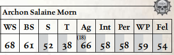
移动：6/12/18/36 承伤：22
护甲：幽魂板甲（全身 6）。 总坚韧加值：3
命运点：3
技能：杂技（Ag）+10，警觉（Per）+20，化学使用（Int）+10，指挥（Fel）+20，通用学识（黑暗灵族）（Int）+20，闪避（Ag）+10，恐吓（S）+20，无声移动（Ag），巧手（Sleight of Hand）（Ag）
天赋：权威气场，猫落地，战斗大师，致残打击，粉碎打击，黑暗灵魂，Die Hard，扰人噪音，异种武器训练（痛苦武器、空壳之刃、冲击手枪），困难目标，强化感官（听觉、视觉），Into the Jaws of Hell，钢铁纪律，麻木，阴谋团武器训练，闪电打击，闪电反射，雄辩大师，Mighty Shot，偏执，快速拔枪，快速反应，抵抗（毒素、灵能技巧），冲刺，灵巧侧步，Strong Minded，迅捷打击，过目不忘（Total Recall）
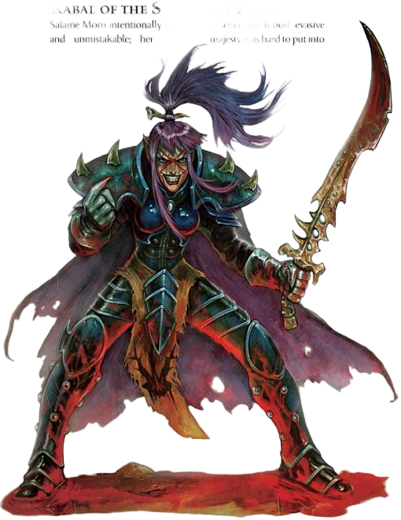
特性：黑暗视觉，痛苦即力量，命运眷顾，超自然敏捷（x3）武器：冲击手枪（手枪；20m；S/–/–；2d10+7 X；穿甲20；弹匣8；装填2整轮；打倒（1），确凿（2）），极品工艺痛苦鞭（近战；3m；1d10+10 E；穿甲6；柔韧，震击，撕裂），空壳之刃（近战；1d10+8 R；穿甲7；平衡，打倒（1）），3枚灵族等离子手雷（投掷；12m；1d10+8 E；穿甲4；爆炸（3），震击）
装备：阴影力场（防护等级80，失败时过载），3剂尸骸菁华，灵魂陷阱†
†灵魂陷阱（Soul Trap）：灵魂陷阱是一种可怕的装置，它将值得一战的敌人的灵魂捕获于刻在其宝石表面的吸血符文之中，并将其转化为主人可用的原始力量。每当拥有灵魂陷阱的黑暗灵族角色杀死拥有命运点的敌人时，持有者可通过一次挑战（+0）意志检定，获得超自然力量（x2）特性，或将其已有的超自然力量特性提升1级。
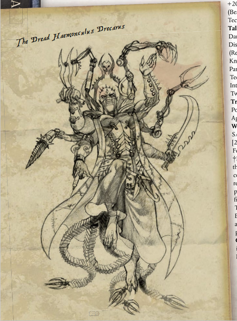
德雷卡鲁斯，泰萨沃伊姆之首席痛苦主宰，血伶人德雷卡鲁斯是缝合螺旋秘会之主，泰萨沃伊姆的首席痛苦主宰——这个头衔的含义早已被人遗忘，却至今仍能让阴影枢纽里最麻木的黑暗灵族贵族心生畏惧。人们对德雷卡鲁斯仅有的了解，是他是一位年龄无从估算的古老存在，自任何人有记忆以来，他就一直是缝合螺旋秘会的唯一主宰。尽管他的秘会曾在科摩罗扭曲的巢穴中占有显赫一席之地，但德雷卡鲁斯厌倦了执政官之间，乃至血伶人同僚之间的倾轧争吵，于是率领秘会迁入网道，以便全身心投入他们扭曲的研究。
在漫长的漂泊生涯中，缝合螺旋穿越科洛努斯扩区时遭遇了一群拉克戈尔掠夺者，他们受损的舰船被扎尔加恩·库尔的劫掠舰队救下。扎尔加恩一直渴望在阴影枢纽拥有听命于自己的血伶人秘会，便向这艘受损舰船提出了一个无法拒绝的条件，德雷卡鲁斯只得勉强同意，成为扎尔加恩的盟友与顾问。随着时间推移，扎尔加恩将越来越多的统治事务托付给德雷卡鲁斯，这位血伶人在阴影枢纽的权势也不断扩张。德雷卡鲁斯刻意推波助澜，加速两位执政官之间的战争，正是他向萨莱恩·莫恩提供了道具，帮助对方刺杀扎尔加恩的曼德拉。尘埃落定后，血伶人成了最终的赢家。随着萨莱恩遭放逐，扎尔加恩的灵魂被囚禁在“灵魂掠夺者”之中，德雷卡鲁斯如今已是阴影枢纽的实际主宰，他通过精妙操纵扎尔加恩留下的裂爪阴谋团施行统治，而这个阴谋团甚至从未怀疑过他们真正主人已经死亡。
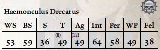
移动： 4/8/12/24 承伤： 24
护甲： 瘤皮（全身2）。 总坚韧加值：8
命运点： 2
技能：警觉（Per）+20，化学使用（Int）+20，指挥（Fel）+20，通用学识（黑暗灵族）（Int）+20，闪避（Ag），禁忌学识（变异体）（Int）+10，禁忌学识（异形）（Int）+10，审讯（WP）+20，恐吓（S）+20，读写（Int）+10，医疗（Int）+20，学术学识（野兽）（Int）+10，无声移动（Ag），巧手（Ag），技术应用（Int）+20，贸易（化学家）（Int）+20。
天赋：双巧手，Autosanguine，猫落地，化学阉割，黑暗灵魂，堕落，沙伊梅什门徒，顽强，扰人噪音，双重射击，异种武器训练（掠夺者之牙、刺针手枪），Gunslinger，灌注知识（Infused Knowledge），铁颚，麻木，Marksman，外科大师，偏执，Prosanguine，抵抗（寒冷、恐惧、高温、灵能技巧），迅捷打击，击倒，天赋异禀（化学使用、审讯、医疗），命运眷顾，过目不忘，双武器战斗（射击、近战）。
特性：异变体质，黑暗视觉，多肢，痛苦即力量，命运眷顾，超自然敏捷（x3），超自然坚韧（x2）。
武器：两把定制刺针手枪†（手枪；30m；S/–/–；1d10+8 R；穿甲3；弹匣18；装填2整轮；打倒（2），毒素），掠夺者之牙（近战；2d5+9 R；穿甲2；打倒（2），撕裂，毒素）。
†二元毒素： 德雷卡鲁斯的手枪中装填的毒药本身已足够致命，但组合使用时会产生更为壮观而可怖的效果。若一个生物在同一回合中被德雷卡鲁斯的两把刺针手枪都击伤，并且两次毒素品质的坚韧检定均失败，则忽略武器正常的毒素伤害——取而代之，受害者承受 2d10+5 点爆炸伤害，此伤害无视护甲与坚韧，且必须在《行商浪人》核心规则书第126页的表5-5：致幻效果上掷骰。
装备：大量药物、灵药、药膏与毒素（包括第116页“药物与毒素”中描述的每种至少一份），杂项器官与样本，特雷梅尔大公的最后一口气（密封于血瓷小瓶中），先知安德里亚斯结晶化的痛苦（存于一颗堕落的灵石中），一千名殉道者的蒸馏灵魂（盛于由他们的骨骼制成的烧瓶中）。
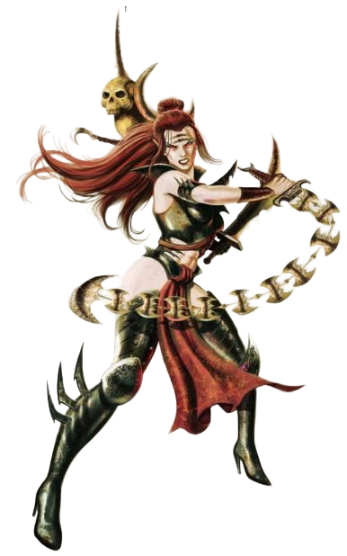
安雅拉，枯刃斗教魅魔在战斗中追求绝对完美是安雅拉的目标——任何达不到这一标准的成果对她而言都是浪费。竞技场的表演，不过是为了让旁人见证她的美丽与技艺。安雅拉的野心绝不会让她满足于当下——她渴望回到科摩罗，和斗教里其他那些所谓的同侪一决高下。不过就目前来说，枯刃斗教的竞技场综合体已经足以让她落脚，更何况德雷卡鲁斯和他的宠物机械贤者还能为她提供各式各样的猎物。
安雅拉是枯刃斗教的首席魅魔。相比之下，另外两位——海西亚与维索里克斯——不过是整日争吵的姐妹，也只是长长挑战名单上最新的两个挑战者，妄图夺走她对斗教的统治权。她们的前任无一例外失血而亡，还被安雅拉用一千道完美的切割毁容致残，这些切割或是出自她的阴谋，或是由她亲自动手。战斗中，安雅拉始终以平静而威严的姿态移动，一旦发起进攻，速度便会越来越快——一道银光闪过，紧接着便是一声痛苦的嘶吼，或是一滩飞溅的鲜血，这就是她攻击仅存的痕迹。她的移动形同舞蹈，在猎物身侧旋转腾跃。据说她最惊人的战绩，是未作丝毫停顿，仅用剃刀般锋利的指甲就有条不紊地杀死了二百一十一名人类奴隶。
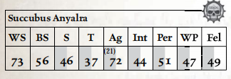
移动： 7/14/21/42 承伤： 18
护甲： 巫灵套甲（全身2）。 总坚韧加值：3
命运点： 2
技能：杂技（Ag）+20，警觉（Per）+10，魅力（Fel）+20，化学使用（Int）+10，通用学识（黑暗灵族）（Int）+10，欺诈（Fel）+10，闪避（Ag）+20，恐吓（S）+10，无声移动（Ag），巧手（Ag）。
天赋：Assassin Strike，双巧手，猫落地，战斗大师，粉碎打击，致残打击，黑暗灵魂，双重打击，异种武器训练（毒晶手枪、海德拉拳套、剃刀连枷、巫灵刀），困难目标，强化感官（听觉、视觉），闪电反射，怜悯弱者，精准打击，Preternatural Speed，剃刀完美†，冲刺，灵巧侧步，Sure Strike，迅捷打击，双武器战斗（射击、近战），徒手大师，徒手战士。
特性：黑暗视觉，痛苦即力量，超自然敏捷（x3）。
†剃刀完美： 安雅拉是枯刃斗教技艺的首席修行者，无人能在优雅、速度与精准上与之匹敌——无数敌人在她身后瘫倒在地，从最细微的致命伤口中失血。当安雅拉使用近战武器或徒手攻击进行Called Shot时，她的武器视为具有致残（5）品质。此外，她的徒手攻击造成撕裂伤害而非冲击伤害。
武器：两把极品工艺巫灵刀（近战；1d10+7 R；穿甲3；锋锐，致残（5）），一把极品工艺剃刀连枷（近战；3m；1d10+6 R；柔韧，锋锐，致残（5）），徒手攻击（近战；1d10+6 R；穿甲0；致残（5））。
装备：3剂加速剂。
扎尔加恩·库尔名义上是阴影枢纽的主人，但也仅仅是名义而已。多年前，他在与萨莱恩·莫恩的权力斗争中，被对方派遣的曼德拉击杀，此后他的灵魂便被囚禁在“灵魂掠夺者”扭曲的核心之中。当“灵魂掠夺者”汲取阴影枢纽中所有死者的力量时，扎尔加恩的刺客趁机发动袭击——彼时“灵魂掠夺者”正观察着这艘舰船饱受折磨的核心，沐浴在核心散发出的痛苦之中。也正因如此，“灵魂掠夺者”从垂死的扎尔加恩身上抽取到的亚空间回响格外强大。
自那一天起，扎尔加恩的本质便在虚空舰的核心中翻涌沸腾：他虽被囚禁于此，却无法向辜负自己的人复仇——因为阴影枢纽抽走了这艘舰船收集的全部能量。然而，当探险者将“灵魂掠夺者”与阴影枢纽切断连接后，扎尔加恩的回响终于能够指引“灵魂掠夺者”踏上复仇之路，向杀死自己的萨莱恩，以及背叛自己的盟友德雷卡鲁斯复仇——后者窃取了他的阴谋团，却从未取回他的灵魂将他复活。当探险者深入“灵魂掠夺者”的核心时，从死者灵魂中涌出的环境亚空间能量，甚至让扎尔加恩得以操控自己的尸体，如同地狱傀儡一般，以抽搐狂乱的动作向外发起猛击。
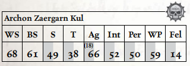
移动： 6/12/18/36 承伤： 22
护甲： 阴谋团护甲（全身4）。 总坚韧加值：3
技能：杂技（Ag）+10，警觉（Per）+20，恐吓（S）+20。
天赋： 战斗大师，致残打击，粉碎打击，黑暗灵魂，Die Hard，扰人噪音，异种武器训练（冲击手枪、痛苦爪），困难目标，强化感官（听觉、视觉），钢铁纪律，麻木，阴谋团武器训练，闪电打击，闪电反射，Mighty Shot，偏执，快速反应，抵抗（毒素、灵能技巧），冲刺，意志坚定，迅捷打击。
特性：黑暗视觉，来自彼岸，痛苦即力量，超自然敏捷（x3）。
武器：冲击手枪（手枪；20m；S/–/–；2d10+7 X；穿甲20；弹匣8；装填2整轮；打倒（1），确凿（2）），极品工艺痛苦爪（近战；1d10+9 R；穿甲7；震击，撕裂）。
探险者在阴影枢纽期间很可能会遭遇大量不同的黑暗灵族。本节包含了关于斗教、阴谋团与秘会中较为普通成员的信息。
为黑暗灵族武装
黑暗灵族用以向银河其他居民施加痛苦与死亡的方式花样繁多，令人眼花缭乱，而本节各条目中所列的武器仅代表了那致命武库中的一小部分。若 GM 希望为一队阴谋团武士增加额外的锋芒，或为一组巫灵的战斗增添趣味，“黑暗灵族军械库”中提供了多种黑暗灵族武器与装备的额外规则。
每一位阴谋团武士都是致命而施虐成性的杀手，精通刀剑与步枪，受残忍与野蛮的野心所驱动。他们在无数同类中脱颖而出，得以参与其阴谋团的实体空间劫掠，品尝过比低等黑暗灵族被迫赖以生存的匮乏而间接的折磨更为强烈的痛苦。
此数据代表一名来自影棘阴谋团、裂爪阴谋团或任何其他阴谋团的普通半生子黑暗灵族战士。在给定的一组阴谋团武士中，可能有一两人已积累了足够的财富与权力，得以使用并维护更强大或不寻常的武器。

移动： 5/10/15/30 承伤： 10
护甲： 阴谋团护甲（全身4）。 总坚韧加值：3
技能： 杂技（Ag），警觉（Per），化学使用（Int），通用学识（黑暗灵族）（Int），欺诈（Fel），闪避（Ag），恐吓（S）+10，无声移动（Ag），巧手（Ag）。
天赋： 猫落地，黑暗灵魂，死眼射击，困难目标，强化感官（听觉、视觉），阴谋团武器训练，闪电反射，怜悯弱者，冲刺。
特性： 黑暗视觉，痛苦即力量，超自然敏捷（x2）。
武器： 毒晶步枪（基础；80m；S/3/5；1d10+2 R；穿甲3；弹匣200；装填2整轮；毒素）或（近战；1d10+3 R；穿甲2），单分子刀（近战；1d5+3 R；穿甲2）。
装备： 各类可怖战利品，2个毒晶步枪弹匣。
与被流放的影棘阴谋团不同，裂爪阴谋团长期维持着一支庞大的真生子阴谋团武士骨干。真生子自幼便被教导以轻蔑与嘲弄看待周围的人，视自身为优越者。平心而论，这往往确实如此——真生子孩童在漫长而无情的教养中成长为杀手，其武艺足以匹配其傲慢与野心。
在裂爪阴谋团中，速射碎片卡宾枪与精良的长柄锯齿刃刀是最为时尚的武器之一。这些半生子战士难以企及的致命装备，构成了阴谋团中许多真生子的常用武装。然而，即便最无足轻重的真生子，其财富与权力也足以使其更频繁地携带更致命、更异种的武器上阵，许多人选择携带毒晶加农炮、粉碎者、冲击枪与黑暗光矛来彻底消灭猎物。

移动： 5/10/15/30 承伤： 12
护甲： 阴谋团护甲（全身4）。 总坚韧加值：3
技能： 杂技（Ag）+10，警觉（Per）+10，化学使用（Int），指挥（Fel），通用学识（黑暗灵族）（Int），闪避（Ag）+10，恐吓（S）+20，无声移动（Ag），巧手（Ag）。
天赋： 猫落地，战斗大师，黑暗灵魂，死眼射击，困难目标，强化感官（听觉、视觉），阴谋团武器训练，闪电反射，Mighty Shot，怜悯弱者，冲刺。
特性： 黑暗视觉，痛苦即力量，超自然敏捷（x2）。
武器： 碎片卡宾枪（基础；60m；S/3/5；1d10+4 R；穿甲3；弹匣200；装填2整轮；风暴，毒素），极品工艺单分子剑（近战；1d10+5 R；穿甲2；平衡），3枚灵族等离子手雷（投掷；12m；1d10+8 E；穿甲4；爆炸（3），震击）。
装备： 各类可怖战利品，2个碎片卡宾枪弹匣。
劫掠者骑乘着流线型、迅捷的喷气摩托，痴迷于在高速中杀戮——他们最渴望的莫过于在极速飞驰中夺去生命的快感。无论是在实体空间劫掠中屠戮哀嚎的低等种族，还是在街道高空的死亡竞速中开膛对手，劫掠者唯有将驾驶技术转化为杀戮才能找到快乐。
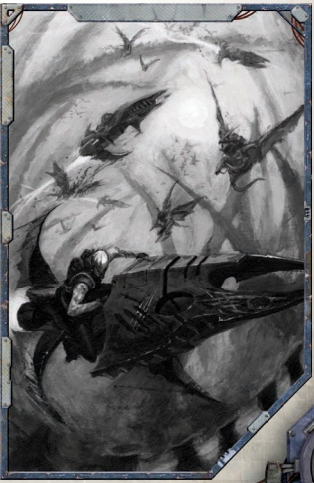
数个小型劫掠者教派聚集于枯刃斗教的竞技场。他们致命的运动在观众席上方的高空中进行，周围遍布剃刀般锋利的障碍物，往往与下方远处的角斗比赛同时进行。竞技场地面浸透鲜血的沙地上，不止一次冲突因鲜血飞溅、残肢与喷气摩托碎片从天而降而变得更加“生动”。有时，飞越影脊竞技坑上空的劫掠者会以杀戮式俯冲降下，屠杀角斗士甚至观众——这令那些尚未被开膛的观众大为愉悦。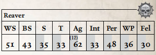
移动： 6/12/18/36 承伤： 9
护甲： 巫灵套甲（全身2）。 总坚韧加值：3
技能： 警觉（Per）+20，通用学识（黑暗灵族）（Int）+10，闪避（Ag）+10，驾驶（飞行器）（Ag）+10，恐吓（S）+10，航行（飞行器）（Ag）+10。
天赋： 猫落地，致残打击，黑暗灵魂，异种武器训练（毒晶手枪、毒晶步枪），强化感官（听觉、视觉），闪电反射，近战武器训练（原始），偏执，灵巧侧步。
特性： 黑暗视觉，痛苦即力量，超自然敏捷（x2）。
武器： 毒晶手枪（手枪；30m；S/3/–；1d10+2 R；穿甲3；弹匣120；装填2整轮；毒素）或（近战；1d5+3 R；穿甲2），单分子刀（近战；1d5+3 R；穿甲2）。
装备： 从猎物手中夺取的可怖战利品，战斗药物，劫掠者喷气摩托。
枯刃斗教的赫卡特里角斗士以精准的打击与所造成伤口之持久著称，斗教的每一名成员——从最年轻的入门者到魅魔本人——皆以其刀法的迅捷与精准而闻名。其中最强者能够击杀敌人而仅留下最微小的可见痕迹，若非最彻底的调查则无人能察。
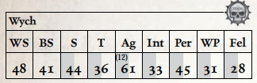
移动： 6/12/18/36 承伤： 10
护甲： 巫灵套甲（全身2）。 总坚韧加值：3
技能： 杂技（Ag）+10，警觉（Per），化学使用（Int），通用学识（黑暗灵族）（Int），欺诈（Fel），闪避（Ag）+20，恐吓（S）+10，无声移动（Ag），巧手（Ag）。
天赋： 双巧手，猫落地，战斗大师，黑暗灵魂，异种武器训练（毒晶手枪、巫灵刀），困难目标，强化感官（听觉、视觉），闪电反射，怜悯弱者，Precise Blow，冲刺，Sure Strike，双武器战斗（射击、近战），徒手战士。
特性： 黑暗视觉，痛苦即力量，超自然敏捷（x2）。
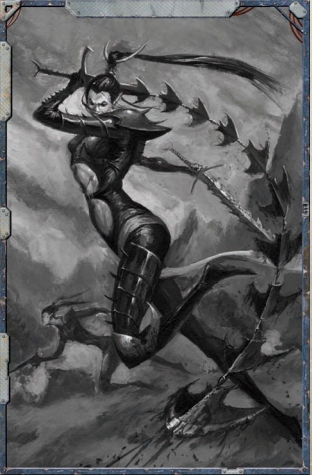
武器： 毒晶手枪（手枪；30m；S/3/–；1d10+2 R；穿甲3；弹匣120；装填2整轮；毒素）或（近战；1d5+4 R；穿甲2），巫灵刀（近战；1d10+4 R；穿甲3；锋锐），徒手攻击（近战；1d10+1 R；原始）。装备： 1剂战斗药物。
作为安雅拉最宠爱的侍女，血新娘是技艺巅峰的角斗士，是枯刃斗教传统放血技艺的大师。她们每一位都是壮丽的存在——优雅而致命，每一位都曾无数次被伟大斗士的鲜血所涂膏。鲜少有人能在安雅拉的血新娘面前站立并活着讲述此事，所有幸存者身上都带着血新娘致命技艺留下的细小疤痕。
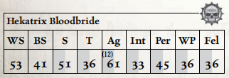
移动： 6/12/18/36 承伤： 13
护甲： 巫灵套甲（全身2）。 总坚韧加值：3
技能： 杂技（Ag）+20，警觉（Per），魅力（Fel），化学使用（Int），通用学识（黑暗灵族）（Int），欺诈（Fel），闪避（Ag）+20，恐吓（S）+10，无声移动（Ag），巧手（Ag）
天赋： 刺杀打击，双巧手，猫落地，战斗大师，黑暗灵魂，异种武器训练（毒晶手枪、海德拉拳套、剃刀连枷、巫灵刀），困难目标，强化感官（听觉、视觉），闪电反射，怜悯弱者，Precise Blow，冲刺，灵巧侧步，Sure Strike，迅捷打击，双武器战斗（射击、近战），徒手大师，徒手战士。
特性： 黑暗视觉，痛苦即力量，超自然敏捷（x2）。
武器： 毒晶手枪（手枪；30m；S/3/–；1d10+2 R；穿甲3；弹匣120；装填2整轮；毒素）或（近战；1d5+5 R；穿甲2），巫灵刀（近战；1d10+5 R；穿甲3；锋锐），徒手攻击（近战；1d10+5 R；穿甲0）。
装备： 1剂战斗药物。
精致杀戮（天赋）
枯刃斗教的战士精通以最微小的伤口杀敌之术——仅凭最细微、最精准的切割，便使猎物流血不止、瘫倒在地。当拥有此天赋的角色以近战武器或徒手攻击进行Called Shot时，其武器视为具有致残（5）品质。此外，该角色的徒手攻击造成撕裂伤害而非冲击伤害。
滑板（Skyboard）
这些单人反重力载具被滑板暴徒珍视为独立的象征。每一块滑板都经过高度个性化改造，许多是在战斗中赢取或作为战利品夺得的。滑板对最轻微的压力都极为敏感，能对骑手最细微的动作做出反应，需要超凡的技巧与反应才能有效操控。
骑乘滑板的角色视为拥有飞行（15）特性，并因滑板的装甲表面与不可预测的移动而在所有部位获得 +2 护甲点。由于需要对滑板进行绝对控制，骑乘滑板的角色在需要进行杂技或闪避检定时，必须以航行（个人）检定取代。最后，每块滑板都装有一对下挂式毒晶舱，其数据如下：滑板搭载毒晶舱（重型；50m；S/3/–；1d10+2 R；穿甲3；弹匣500；装填–；风暴，毒素）。滑板的获取难度为Scarce。
尽管在名义上隶属于枯刃斗教，野兽大师们与赫卡特里角斗士却是截然不同的存在。他们几乎全部为男性，且与斗教其他成员隔绝；野兽大师们更多地被视为一种必需之物而非受珍视的成员——因为唯有野兽大师能以如此残酷而高效的技艺将野兽与奴隶驱赶入竞技场。
每一位野兽大师都拥有强大而威严的气场，即便最凶猛、最致命的野兽，在野兽大师轻蔑的瞪视与他握紧鞭柄的手势面前，也会犹豫不前。野兽大师偏好使用能对目标施以虚弱性电击的武器——这使他们能够震慑其看管的生物使之屈服，并品味此类装置所施加的痛苦与无助。
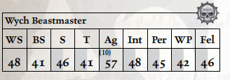
移动： 6/12/18/36 承伤： 12
护甲： 巫灵套甲与滑板（全身4）。 总坚韧加值：3
技能： 杂技（Ag）+10，警觉（Per），化学使用（Int），指挥（Fel）+10，通用学识（黑暗灵族）（Int），欺诈（Fel），闪避（Ag）+10，恐吓（S）+20，航行（个人）（Ag），无声移动（Ag），巧手（Ag），驯兽（Int）+20。
天赋： 权威气场，双巧手，猫落地，战斗大师，黑暗灵魂，扰人噪音，异种武器训练（毒晶荚舱），困难目标，强化感官（听觉、视觉），铁颚，麻木，闪电反射，近战武器训练（原始），怜悯弱者，冲刺，Sure Strike，击倒，双武器战斗（射击、近战），徒手战士。
特性： 黑暗视觉，痛苦即力量，超自然敏捷（x2）。
武器： 滑板搭载毒晶舱（重型；50m；S/3/–；1d10+2 R；穿甲3；弹匣500；装填–；风暴，毒素），痛苦鞭（近战；3m；1d10+7 R；穿甲6；柔韧，震击，撕裂）。
装备： 滑板，支配面具†
†支配面具：支配面具的佩戴者可重掷失败的恐吓与驯兽检定。
只要有黑暗灵族聚集之处，滑板暴徒帮派便必定会形成。流亡的恶徒、野性的青少年，以及那些鄙夷阴谋团统治之人——滑板暴徒帮派随意游荡于天空，以任何可能的方式生存，并对一切拥有权力、威望或特权者心怀怨恨。他们骑乘着尖啸的滑板，感官与反应被强力战斗药物所增强，手持锋锐的地狱战戟——滑板暴徒对任何闯入其领地之人而言都是难以预料的危险。
约有二十余个主要滑板暴徒帮派出没于裂爪阴谋团与枯刃斗教的领地，而更多帮派则在短时间内形成与瓦解，其成员或被更大、更强大的帮派吸收，或被抛至下方遥远的街道。这些帮派有时会加入裂爪阴谋团或枯刃斗教发起的实体空间劫掠，但每个帮派都视自身独立于这些强大组织之外。
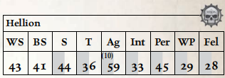
移动： 6/12/18/36 承伤： 11
护甲： 巫灵套甲与滑板（全身4）。 总坚韧加值：3
技能： 杂技（Ag）+10，警觉（Per）+10，化学使用（Int），通用学识（黑暗灵族）（Int），欺诈（Fel），闪避（Ag）+10，恐吓（S）+10，航行（个人）（Ag）+10，无声移动（Ag），巧手（Ag）。
天赋： 刺杀打击，双巧手，猫落地，黑暗灵魂，异种武器训练（地狱战戟、毒晶荚舱），困难目标，强化感官（听觉、视觉），闪电反射，怜悯弱者，冲刺，Sure Strike，双武器战斗（射击、近战）。
特性： 黑暗视觉，痛苦即力量，超自然敏捷（x2）。
武器： 滑板搭载毒晶舱（重型；50m；S/3/–；1d10+2 R；穿甲3；弹匣500；装填–；风暴，毒素），地狱战戟（近战；1d10+7 R；穿甲3；锋锐）。
装备： 滑板，1剂战斗药物。
天灾在阴谋团高耸的尖塔、巫灵竞技场综合体与血伶人潮湿的地牢之间穿梭飞翔，他们遍览黑暗灵族社会的全貌，并轻蔑地翱翔于这一切之上。每一位天灾都经历过痛苦之极的增强与改造手术——将巨大的翅膀移植于肩头，以合成肌肉与肾上腺素分配器增强其血肉，并掏空骨骼，使每一位天灾都能真正地飞行。即便经历了这些严酷的改造，天灾的晋升仍未完成——因为新转化的黑暗灵族必须凭鲜血浸染的、尚未愈合的翅膀飞向其新同族的鹰巢，在滑板暴徒帮派的险境与劫掠者及剃刀翼的高速追猎中幸存。唯有完成这场垂直的朝圣之旅，他们才能真正被称为天灾。
天灾为权贵担任信使，携带着以毒液密封的信函。收信人拥有唯一能解毒并打开信函的方法。这一角色赋予天灾极大的自由与权力——因为杀害正在执行任务的天灾，将招致最具创意与最痛苦的死亡惩罚。在战斗中，天灾偏好远程武器，不愿将脆弱的改造身体置于近战之怒中；一队天灾能迅速从意想不到的角度将火力投射至敌人。强大的执政官与魅魔的庇护使天灾能够负担一些最致命、最异种的武器——从剧毒碎片卡宾枪，到凶残的粉碎者、致命的冲击枪，乃至混乱冲击枪与热光矛。

移动（步行）： 5/10/15/30 承伤： 10
移动（飞行）： 12/24/36/72
护甲： 幽魂板甲（全身6，防护等级20）。 总坚韧加值：3
技能： 杂技（Ag）+10，警觉（Per）+20，通用学识（黑暗灵族）（Int）+10，闪避（Ag）+10，恐吓（S）+10，无声移动（Ag）+10，巧手（Ag）。
天赋： Bulging Biceps，猫落地，黑暗灵魂，死眼射击，困难目标，强化感官（听觉、视觉），腰射，阴谋团武器训练，闪电反射，Mighty Shot，怜悯弱者，冲刺。
特性： 黑暗视觉，飞行（12），痛苦即力量，超自然敏捷（x2）。
武器： 碎片卡宾枪（基础；60m；S/3/5；1d10+4 R；穿甲3；弹匣200；装填2整轮；风暴，毒素），单分子刀（近战；1d5+4 R；穿甲2），3枚灵族等离子手雷（投掷；12m；1d10+8 E；穿甲4；爆炸（3），震击）。
装备： 各类可怖战利品，2个碎片卡宾枪弹匣。
德雷卡鲁斯及其秘会拥有成千上万的助手，统称为畸人。这些堕落、扭曲的存在已不再像他们曾经身为的黑暗灵族，而更像是他们选择成为的可憎之物——为了抵御数个世纪堕落经验所带来的倦怠，他们诉诸于可怖的改造手术。
畸人有朝一日希望晋升为血伶人行列，然而他们之中是否有人做到过则不得而知。血伶人对自己的秘密极为谨慎，且本质上是不朽的，他们容不下对手，只有仆从、奴隶与臣属。然而，每一位畸人本身都是能干的折磨者、炼金术士与医师——因为很少有血伶人愿意屈尊从事体力劳动，而是指挥其仆从执行他们所指示的手术。有些畸人将他们主人黑暗科学的奇异专业成果带上战场，装备液化枪、巫术步枪，甚至更为怪异的装置，将死亡与痛苦带给敌人。
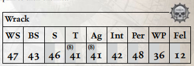
移动： 4/8/12/24 承伤： 19
护甲： 瘤皮（全身2）。 总坚韧加值：8
技能： 警觉（Per）+10，化学使用（Int）+20，通用学识（黑暗灵族）（Int）+10，闪避（Ag），审讯（Int）+10，恐吓（S）+20，医疗（Int）+10，巧手（Ag）。
天赋： 双巧手，Autosanguine，猫落地，粉碎打击，黑暗灵魂，扰人噪音，强化感官（听觉、视觉），麻木，近战武器训练（原始），怜悯弱者，双武器战斗（近战）。
特性： 异变体质，黑暗视觉，多臂，痛苦即力量，超自然敏捷（x2），超自然坚韧（x2）。
武器： 淬毒刀刃、爪与注射爪（近战；1d10+6 R；穿甲2；撕裂，毒素）。
装备： 手术工具，血瓶、胆汁、组织样本。
异变体质（Altered Physique）（特性）
该生物的解剖结构与生物化学成分已被彻底改变，以至于其与原始物种仅存表面上的相似。该生物坚韧、布满疤痕的肉体——被称为瘤皮（gnarlskin）——赋予其 2 点天生护甲（或为任何已有的天生护甲 +2），且该生物不受疾病、毒素或毒性效果伤害。此外，若该生物同时拥有痛苦即力量特性，则其每次获得一个痛苦点时自动恢复 1d5 点已失承伤。最后，拥有异变体质的生物无法从黑暗灵族战斗药物中获益。
畸人是其自身堕落野心与邪恶想象的产物，而怪形则是血伶人自身残忍与病态创造力的结果——施加于那些曾冒犯他们或仅仅是在错误时间出现在错误地点者身上。每一头怪形都是一座由过度刺激的肌肉与扭曲骨骼构成的庞大身躯，生长得不成比例，被塑造为某种怪物。每一头都被实施了前脑叶白质切除术，使其成为仅适合负重劳役或爆发极端身体暴力的无智奴隶野兽。
对血伶人而言，怪形不过是工具——板甲肌肉的保镖与突击部队，可凭一时兴致使用与消耗，并根据这些兴致进行有效强化。许多怪形还进一步被改造为带有武器化肢端，滴垂着毒液或喷射腐蚀性灵液。它们的无智状态使其在大多数时候温顺服从，按命令执行简单任务；但当其主人被激怒时，主人的怒火便会驱使它们进入杀戮狂乱，即便身受致命伤也变得几乎不可阻挡。
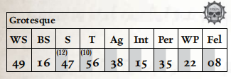
移动： 4/8/12/24 承伤： 40
护甲： 瘤皮（全身2）。 总坚韧加值：10
技能： 警觉（Per），恐吓（S）+20。
天赋： Autosanguine，狂暴冲锋，粉碎打击，黑暗灵魂，Die Hard，扰人噪音，无所畏惧，狂暴，强化感官（听觉、视觉），铁颚，麻木，近战武器训练（原始），怜悯弱者，双武器战斗（近战）。
特性： 异变体质，黑暗视觉，恐惧（1），Hulking，痛苦即力量，超自然敏捷（x2），超自然力量（x3），超自然坚韧（x2）。
武器： 屠刀（近战；2d10+14 R；穿甲2；失衡）。
装备： 兴奋剂注射器†
†兴奋剂注射器： 怪形在战斗开始时以一个自由动作自动进入狂暴。
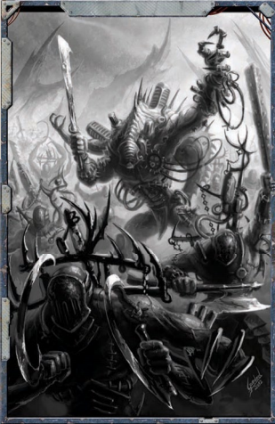
克罗诺斯寄生引擎是黑暗灵族以疯狂玄奥的科学创造出的可怕造物，这些笨重的昆虫形生物以灵魂虹吸的恐怖能量撕扯活物的生命力，并将窃取的生命能量传递给自己的主人，而主人们正沉醉于欣赏敌人被夺走时间后化作空壳的景象。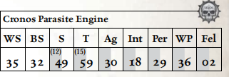
移动（步行）： 3/6/9/18
移动（悬浮）： 4/8/12/24 承伤： 60
护甲： 装甲甲壳（全身10）。 总坚韧加值：15
技能： 警觉（Per），闪避（Ag），恐吓（S）。
天赋： 粉碎打击，Die Hard，无所畏惧，狂暴，铁颚，近战武器训练（原始），怜悯弱者，迅捷打击，双武器战斗（射击、近战）。
特性： 兽性冲锋，黑暗视觉，恐惧（2），悬浮（4），多臂，痛苦即力量，体型（Massive），奇异生理（Strange Physiology），超自然力量（x3），超自然坚韧（x3）。
武器： 灵魂探针（近战；1d10+12；穿甲4；震击，时间窃取†），灵魂虹吸（基础；20m；1d10+8；穿甲4；喷射††，时间窃取†），灵魂漩涡（基础；30m；1d10+6；穿甲4；爆炸（5），时间窃取†）。
†时间窃取： 每当克罗诺斯寄生引擎对活物造成超过该生物意志加值的伤害（在扣除坚韧加值与护甲后），该角色必须以其选择的一项属性进行一次极难（–30）检定。检定每有一个失败度，该生物对该属性承受 1d10 点属性损伤。在任何一轮结束时，若该轮中有生物以此方式承受伤害，则克罗诺斯寄生引擎在 20 米内未攻击的、所有拥有痛苦即力量特性的生物获得一个痛苦点。
††喷射： 灵魂虹吸在所有方面等同于具有火焰品质的武器，唯二区别在于它不算作热武器，且不会点燃被其命中的目标。
枯刃斗教拥有无数奴隶——有些是令人畏惧的强大斗士，有些则不过是喂养黑暗灵族在竞技坑中释放的野兽的苦工。
在大多数黑暗灵族定居点里，灵族本身就是极为罕见的商品，极少有方舟灵族或流亡灵族能抵达阴影枢纽的角斗竞技场。大多数被俘的灵族会被强大的黑暗灵族当作战利品或贡品占有——他们强大的灵魂与激烈的情感，会在低等生物渺小的痛苦中被慢慢品味；另一些则会被交给血伶人，血伶人会将他们的血肉当作原材料，再把他们的灵魂蒸馏成强效灵药。
唯有那些被枯刃斗教俘虏的少数灵族，以及那些被赠予斗教魅魔的少数灵族，才能进入影脊竞技坑。他们中最强者已在无数战斗中幸存，在竞技场的仇恨与狂怒中迷失了自我，对自己的生命已毫不在意。他们被允许保留自己的魂石，但最终会被玷污、撕开、被杀死他的人吞噬，这是一种无与伦比的感受，也是对最精彩表演的奖赏。
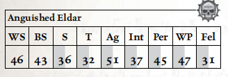
移动： 5/10/15/30 承伤： 10
护甲： 粗皮甲（手臂2，躯干2）。 总坚韧加值：3
技能： 杂技（Ag）+10，警觉（Per）+10，通用学识（黑暗灵族）（Int），通用学识（灵族）（Int）+10，闪避（Ag）+10，无声移动（Ag）。
天赋： 猫落地，异种武器训练（星镖投射器、星镖手枪、毒晶手枪），困难目标，仇恨（黑暗灵族），强化感官（听觉、视觉），麻木，闪电反射，近战武器训练（原始），冲刺，血手触碰†。
特性： 超自然敏捷（x2）。
†血手触碰： 此灵族经历了无休止的战斗，没有任何生物能毫发无损地承受这一切。为了生存，他拥抱了凯拉·门沙·凯恩的狂怒与凶残。作为一个全动作，灵族可汲取血手战神的永恒之怒，在战斗结束前获得 +10 武器技能与敏捷，且其所有近战攻击视为具有撕裂品质，但在此期间及之后的 1d5 小时内，其射击技能、智力与交际承受 –10 减值。
武器： 单分子剑（近战；1d10+3 R；穿甲2；平衡）。
装备： 魂石。
尽管在科洛努斯扩区中极为罕见，但黑暗灵族的实体空间劫掠几乎无所不及——遥远的钛帝国也不例外。钛族被视作与人类类似的、仅供娱乐与维持生命的动物，阴影枢纽的黑暗灵族有时会在劫掠中捕获钛族，更多是出于好奇而非其实际价值——因为钛族的灵魂是苍白而闪
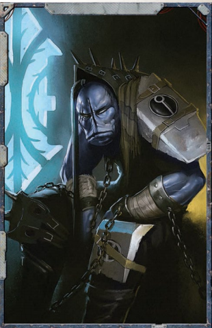
烁的，即便与人类灵魂微弱的火花相比也显得贫瘠。枯刃斗教的地牢中仍关押着数十名灰皮肤钛族战士，与其说是用于真正的角斗，不如说只是用来喂养野兽的饲料。尽管如此，他们在竞技场中的表现仍令安雅拉感到愉悦；她以慵懒的兴趣注视着这些纪律严明的战士在竞技场血腥的冲突中被逐渐消磨至仅剩寥寥数人，全靠智慧与同族中不寻常的凶残而幸存。
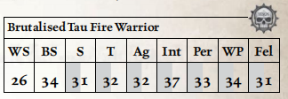
移动： 2/4/6/12 承伤： 10
护甲： 粗皮甲（手臂2，躯干2）。 总坚韧加值：3
技能： 警觉（Per），通用学识（钛族）（Int），听说语言（钛族）（Int）。
天赋： 异种武器训练（脉冲卡宾枪、脉冲步枪），强化感官（嗅觉）。
武器： 单分子剑（近战；1d10+3 R；穿甲2；平衡），Bonding knife（近战；1d5+3；原始）。
装备： 无。
鉴于人类在银河系中的庞大数量，他们占据了枯刃斗教地牢居民的最大比例，并且可以参与各类活动。无论他们是在与斗教的巫灵战斗，在抵御野兽的猛攻中挣扎，还是作为劫掠者表演飞行的移动靶——在竞技场内外，人类无处不在。
按照惯例，枯刃斗教往往会将那些无法提供多少娱乐价值的人类交易掉或另行处置——若受害者不能对巫灵或野兽构成哪怕最微小的挑战，竞技场的观赏性便会大打折扣，而一场迅速轻松的杀戮也换不来多少威望。那些心智或身体软弱者会被迅速交易给阴谋团或血伶人秘会，因为枯刃斗教寻求的是拥有力量与一丝怒火之人，以更好地满足其需求。因此，大多数身陷枯刃斗教地牢者都是斗士，早已带着激光灼烧、弹丸与刀刃留下的伤疤。他们以正义的仇恨与绝望的凶残战斗——那是早已将生命献于战斗之人的特质。

移动： 3/6/9/18 承伤： 10
护甲： 粗皮甲（手臂2，躯干2）。 总坚韧加值：3
技能： 警觉（Per），通用学识（帝国）（Int），恐吓（S），听说语言（低哥特语）（Int）。
天赋： 基础武器训练（激光、实弹），仇恨（黑暗灵族），近战武器训练（原始），钢铁神经，偏执，手枪训练（激光、实弹）。
武器： 单分子剑（近战；1d10+3 R；穿甲2；平衡）。
装备： 无。
数十年前，流浪贤者多莫斯·阿涅莱恩正伴随一支勘探者进入科洛努斯扩区寻找盖兰天球，其舰船在一次亚空间航行后执行维护仪式时遭到一大群黑暗灵族的袭击，经过短暂战斗后他被俘获。在接下来的岁月里，阿涅莱恩目睹他的弟兄们被肢解、剥皮，沦为仅剩以机械增强的骨架、被破碎心智所驱动的存在——然而唯有阿涅莱恩一人免于遭受折磨者最残酷的“关注”。他直到数十年后才得知原因——黑暗灵族发现他是幸存技术神甫中的领袖（即便仅凭其军衔也能看出），并且黑暗灵族在接触到领袖之前，已花费多年从这些下属的脑海中汲取并掠夺知识。
在近四十年中，随着同囚战友日渐减少，阿涅莱恩的心智转向内省，专注于自身所获得的知识而非面对周遭的恐怖——直到最终他的俘获者也找上了他。黑暗灵族花费了数年时间解锁他心智的秘密，并开始从中筛选任何有用的东西。多莫斯在未被斗教召唤去制造怪物以再次撕裂角斗士之时，便为枯刃斗教的奴隶战士们修补创伤。
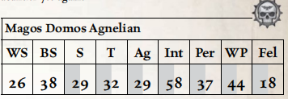
移动： 2/4/6/12 承伤： 12
护甲： 锈蚀机械披肩（全身4）。 总坚韧加值：3
技能： 通用学识（机械教）（Int）+10，通用学识（技术）（Int）+10，估价（Int）+10，禁忌学识（古代科技）（Int）+20，禁忌学识（机械修会）（Int）+10，读写（Int）+10，逻辑（Int）+10，医疗（Int），听说语言（低哥特语）（Int），听说语言（技术语）（Int）+20，技术应用（Int）+20，贸易（机械师）（Int）+10。
天赋： Autosanguine，基础武器训练（通用），Binary Chatter，化学阉割，身心残废†，Electrical Succour，电子植入体使用，Feedback Screech，金属吸引，麻木，Logis Implant，流明冲击，流明充能，机械附肢体使用（通用），近战武器训练（通用），Orthoproxy，血肉苦弱（3），过目不忘。
特性： 机械教植入体。
†身心残废： 多莫斯·阿涅莱恩已被黑暗灵族囚禁了很长时间，在其控制下状况不佳。他拥有 80 点失心，并患有一种单一急性障碍：已故同志（阿涅莱恩的旧导师，贤者普里迪乌斯·图里赞）。此外，他的所有机械教植入体及相关天赋均无法正常运作。
武器： 锈蚀机械触手（近战；1d5–1 R；穿甲0）。
装备： 无。
安亚·沈船长是众多在落脚港附近航线上讨生活的虚空海盗之一，她与她的舰船曾闯出过一番名声——直到它像科洛努斯扩区中许多其他舰船一样，消失得无影无踪。“敌意交易”号被裂爪阴谋团的舰船捕获并拖走，成为执政官收藏库中的又一件战利品，也为枯刃斗教的竞技场增添了一批新的奴隶，供其在短时间内取乐。
对沈和她的船员而言，被投入竞技场或许比其他任何等待他们的命运都更仁慈一些——至少在竞技场中，他们仍有一线生机，尽管渺茫，却足以让他们撑到找到逃出生天之法。安亚·沈曾躲过帝国海军的巡逻，避开竞争对手与受害者的报复，她一向以能从险境中脱身而自豪——尽管眼前的困境比往常更难破解。不过，她并非全无底牌——在她仿生手臂的隔层中藏有一枚指尖激光。她之所以尚未被迫交出它，更多是因为黑暗灵族乐于看到这个人类试图欺骗死亡的把戏，而非她自身的狡黠天赋；但她的俘获者或许恰好给了她逃脱所需的优势。

移动： 4/8/12/24 承伤： 15
护甲： 粗皮甲（手臂2，躯干2）。 总坚韧加值：3
技能： 警觉（Per），Barter（Fel），魅力（Fel），指挥（Fel）+10，商业（Fel），通用学识（帝国）（Int），通用学识（商人）（Int），通用学识（地下世界）（Int）+10，欺诈（Fel），闪避（Ag），估价（Int），禁忌学识（海盗）（Int）+10，审讯（WP），恐吓（S），调查（Fel），导航（星际）（Int）+10，航行（航天器）（Ag），学术学识（星象学）（Int），安保，巧手（Ag）+10，听说语言（低哥特语）（Int），听说语言（虚空俚语）（Int），贸易（虚空行者）（Ag）。
天赋： 权威气场，基础武器训练（通用），隐藏口袋（Concealed Cavity），堕落（Decadence），异种武器训练（指节激光），仇恨（黑暗灵族、帝国海军），钢铁纪律，麻木，浅眠，近战武器训练（原始、通用），钢铁神经，偏执，同行（罪犯），手枪训练（激光、实弹），抵抗（恐惧），迅捷打击。
武器： 单分子剑（近战；1d10+3 R；穿甲2；平衡），隐藏指节激光（手枪；3m；S/–/–；1d10+3 E；穿甲7；弹匣1；装填整轮；可靠）。
装备： 良好工艺仿生手臂（带小型隔层），3个指尖激光充电匣，一个填充了尖锐物品的安雅拉小雕像。
十多年前，塔恩还是“弯刀打击部队”的小队资深军士时，在一次裂爪阴谋团的劫掠中被俘——“弯刀打击部队”是一支以数艘快速打击舰为基地的小型帝国之拳战斗群，任务是平息卡利西斯星区内灵族的劫掠攻势。尽管这次劫掠最终被帝国之拳的反击阻止，仍有数名战斗兄弟被俘，卢德沃斯·塔恩是被带回阴影枢纽的俘虏中唯一的幸存者。
塔恩的作战装备早已被敌人剥夺，但他始终忠于帝皇；对一同被囚禁的人类俘虏而言，他既是令人敬畏的存在，也是虔诚献身的象征——这既因为他是阿斯塔特修士，也因为他是俘虏中少数一直坚守的领导者。塔恩在黑暗灵族中的经历在俘虏间广为流传，内容或许有些夸大：据说他曾被作为贡品赠予德雷卡鲁斯，供血伶人击碎这位战士钢铁般的意志、拆解他异于常人的血肉。可令德雷卡鲁斯恼怒的是，他两样目标都没能达成——帝国之拳的坚韧甚至超出了这位首席痛苦主宰能够撼动的极限；出于怨恨，德雷卡鲁斯将塔恩丢给了枯刃斗教，任他在竞技场中死去。
显然，塔恩没有死去——当被问及这段过往时，他通常只会给出一个阴郁的微笑，加上一句简短的回答：“帝皇保佑。”枯刃斗教这么多年来不断测试他战团引以为傲的、抵抗痛苦与绝望的极限，而他们努力取得的最好结果，也只有一堆塔恩敌人的破碎尸体。在战场上，他一如自己兄弟们的盛名所暗示的那般强大。
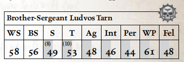
移动： 4/8/12/24 承伤： 25
护甲： 皮甲（手臂2，躯干2）。 总坚韧加值：10
技能： 警觉（Per）+10，指挥（Fel）+10，通用学识（帝国）（Int），通用学识（战争）（Int）+10，恐吓（S）+20，学术学识（帝国战术）（Int），听说语言（高哥特语）（Int），听说语言（低哥特语）（Int）+10。
天赋： 双巧手，基础武器训练（通用），Bulging Biceps，致残打击，粉碎打击，Die Hard，Disarm，Duty Unto Death，无所畏惧，Hardy，仇恨（黑暗灵族），强化感官（视觉、听觉），钢铁纪律，铁颚，闪电反射，近战武器训练（原始、通用），同行（阿斯塔特修士），手枪训练（通用），抵抗（毒素、灵能技巧），迅捷打击，True Grit，双武器战斗（射击、近战），徒手大师，徒手战士。
特性： 超自然力量（x2），超自然坚韧（x2）
武器： 2把单分子剑（近战；1d10+10 R；穿甲2；平衡），徒手攻击（近战；1d10+10 I；穿甲0）。
装备： 无。
纳什里克·哈克与一队钛族残部一同被俘，在众多同族相继殒命之后，她幸存了下来。克鲁特人的力量、敏捷、感官敏锐度——以及最重要的，其基因的可塑性——使她的族人被分往德雷卡鲁斯的实验室与枯刃斗教的角斗坑。前者之中，除德雷卡鲁斯外无人知晓他们的命运；后者之中，唯有纳什里克幸存——她的族人如同野兽一般被一次次驱入竞技场，无休无止。
纳什里克自己也远非完好无损。在早期的一场战斗中获胜后，她趁隙吞噬了敌人的尸体以充饥，却发现巫灵们被药物污染的血肉与她的生理构造产生了不良反应。毒素涌入她的身体，灼烧她的大脑，她竭力在迷失中维系自我，然而那种遗忘一切的无脑凶暴正一天天逼近。

移动： 5/10/15/30 承伤： 16
护甲： 粗皮甲（手臂2，躯干2）。 总坚韧加值：4
技能： 警觉（Per）+20，隐蔽（Ag）+20，恐吓（S），无声移动（Ag）+20，听说语言（克鲁特语）（Int），听说语言（钛语）（Int），生存（Int）+20，追迹（Int）+20。
天赋： 基础武器训练（原始、实弹），狂暴冲锋，狂暴，强化感官（全部），闪电反射，近战武器训练（原始），多语言者，冲刺，迅捷打击。
特性： 天生武器（喙），超自然感知（x2），超自然力量（x2）。
武器： 单分子剑（近战；1d10+10 R；穿甲2；平衡），喙（近战；1d5+10 R；原始）。
装备： 一根来自她曾经的塑形者头顶的残破翎羽。
“奈娅·特罗梅安身负诅咒。”——这几乎是所有见过她的人都会脱口而出的第一句话。她从帝国的掌控中逃脱，摆脱了塞菲利斯二号的苦役，搭乘矿石运输船与其他航船前往卡利西斯星区边缘，曾一次次避开那些降临在搭载者身上的灾祸，但这份好运没能延续到最近这一次航行：当她试图前往科洛努斯扩区时，所乘的船只遭到了黑暗灵族掠袭者的攻击。
俘获她的阴谋团在将她押送至幽都后不到一周，就被另一个阴谋团算计覆灭。在此之后，她辗转于黑暗灵族社会的另外数个阴谋团与斗教之间，但每一方都因互不相关的意外分崩离析——仿佛不幸本身就追随着这个年轻女人。如今，因为敌对巫灵斗教设下阴谋，试图在阴影枢纽抢占立足之地，她被判处进入枯刃斗教的竞技场。而奈娅本人只是静待一场新的灾祸降临到俘获她的人头上。
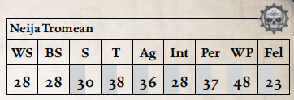
移动： 3/6/9/18 承伤： 13
护甲： 粗皮甲（手臂2，躯干2）。 总坚韧加值：3
命运点： 2
技能： 警觉（Per），密文（神秘学）（Int），通用学识（帝国）（Int），通用学识（卡利西斯星区）+10，欺诈（Fel）+10，禁忌学识（教派）（Int），禁忌学识（亚空间）（Int），恐吓（S），祷言（Invocation）（WP）+10，灵能感官（Per）+10，听说语言（低哥特语）（Int）。
天赋： 诅咒之身†，黑暗灵魂，无所畏惧，近战武器训练（原始），灵能等级 5，抵抗（灵能技巧），命运眷顾。
灵能： 传心学派（驯兽、强迫、欺瞒、心智探针、短距传心、恐惧术），念动学派（精准念动）。
†诅咒之身： 不论大小的厄运似乎总是伴随奈娅的旅途。当在奈娅周围 100 米内尝试消耗命运点重掷一次失败的检定时，掷 1d10。若结果为 1，命运点被消耗，但无法进行重掷。此外，若她成为探险者舰船上的乘客，每在舰上停留一周，便增加 5% 的几率（可累计）发生一次厄运——在《行商浪人》核心规则书第 284 页的表 9-14：厄运上掷骰，以确定她引发了何种厄运。
武器： 单分子剑（近战；1d10+3 R；穿甲2；平衡）。
装备： 灵能抑制器†
†灵能抑制器： 当此装置就位时，奈娅的灵能等级视为 0，且无法进行灵能聚焦检定。
瑞尔哈达尔·安塔瑞尔是科洛努斯扩区中声名显赫的私掠者与海盗，他曾在“悲忆号”上，于著名海盗王子凯卢辛·巴哈鲁多麾下服役，之后便与暮光之刃分道扬镳，追寻自己的命运。一个多世纪以来，这支名为“安塔瑞尔之鹰”的海盗团伙在劫掠中愈发嗜血凶残，甚至曾受雇于影棘阴谋团，也因此被暮光之刃与凯洛尔方舟世界排斥。然而灾难降临：他们的活动引来了裂爪阴谋团的怒火，后者在网道中伏击了安塔瑞尔的部队，掳走了大批灵族俘虏。
数十年来，安塔瑞尔一直是裂爪阴谋团之主最宠爱的玩物，但即便是这般珍贵的战利品，终有让人厌倦的一天。随着岁月流逝，这位海盗的日子越来越痛苦，他的斗志也在无尽折磨中消磨。在他用牙齿咬断裂爪阴谋团首席拉敏毒女的喉咙，又用毒刃砍倒爪领主宫廷的其余成员后，安塔瑞尔被弃置一旁，作为礼物送给安雅拉，任他在竞技场中自生自灭。出人意料的是，安塔瑞尔竟在那里活了下来：他的凶悍赢得了观众的欢呼，人们将他视作枯刃斗教巫灵十分青睐的对手。

移动： 6/12/18/36 承伤： 13
护甲： 粗皮甲（手臂2，躯干2）。 总坚韧加值：3
技能： 杂技（Ag）+10，警觉（Per）+10，指挥（Fel）+10，通用学识（黑暗灵族）（Int），通用学识（灵族）（Int）+10，闪避（Ag）+20，恐吓（S）+10，无声移动（Ag）。
天赋： 双巧手，猫落地，异种武器训练（星镖投射器、星镖手枪、毒晶手枪、巫灵刀），困难目标，仇恨（黑暗灵族），强化感官（听觉、视觉），麻木，闪电反射，近战武器训练（通用），抵抗（毒素），冲刺（Sprint），灵巧侧步，迅捷打击，双武器战斗（射击、近战）。
特性： 超自然敏捷（x2），血手触碰†。
†血手触碰： 此灵族经历了无休止的战斗，没有任何生物能毫发无损地承受这一切。为了生存，他拥抱了凯拉·门沙·凯恩的狂怒与凶残，并屈服于其诱惑。作为一个全动作，灵族可汲取血手战神的永恒之怒，在战斗结束前获得 +10 武器技能与敏捷，且其所有近战攻击视为具有 裂品质，但在此期间及之后的 1d5 小时内，其射击技能、智力与交际承受 –10 减值。
武器： 2把偷来的巫灵刀（近战；1d10+4 R；穿甲3；锋锐）。
装备： 魂石。
影脊竞技坑中容纳着来自科洛努斯扩区乃至更遥远之地的无数恐怖之物。本节列出了探险者可能在竞技场沙地上面对的若干可怕生物——这远非全部。
对枯刃斗教而言，那是辉煌的一天——他们首次从奴隶的闲谈中听说了时计角斗士这一概念。那个无意中提起此事的奴隶随后得到了“奖赏”：他被改造成斗教所制造的第一具此类生物。时计角斗士是活在借来的时间中的战士——每人都被装上了某种装置，当他自己个人的时钟归零时，装置便会杀死他。延长剩余时间的唯一方法便是杀戮。
枯刃斗教命令被俘的技术神甫制造了无数的时计角斗士。每一具都遭受了可怕的折磨，并被强制注射一种独特的战斗兴奋剂与止痛药混合物。他们体内的注射器在每次夺取生命时提供化学药物，但剂量仅能提供短暂的缓解。每个腺体中的存量都很小，而戒断症状则是致命的——他们的体液之间会发生剧烈反应，继而爆炸，带来痛苦的折磨。为了确保时计角斗士的死亡不被浪费，他们在战斗之间被保存在静止状态中。
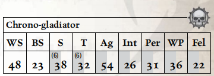
移动： 5/10/15/30 承伤： 16
护甲： 植入板甲（全身3）。 总坚韧加值：6
技能： 警觉（Per），恐吓（S）+10。
天赋： 双巧手，Autosanguine，粉碎打击，无所畏惧，近战武器训练（通用），双武器战斗（近战）。
特性： 超自然速度，超自然力量（x2），超自然坚韧（x2），滴答作响的时钟†。
†滴答作响的时钟： 枯刃斗教部署的时计角斗士被一种生理需求所驱动——他们改造过的身体会分泌特定药物，但只有在他们杀戮时才会释放。在杀死一个生物后，时计角斗士获得一级额外的超自然力量，并在 1d5 轮内免疫疲劳及所有不导致死亡或肢体丧失的致命伤效果。在此时间内任何进一步的击杀都会将当前持续时间延长 1d5 轮。若时计角斗士在增益效果结束后的 5 轮内未能获得一剂药物——无论是因无法杀戮还是因药物耗尽——它立即承受一级疲劳以及对躯干的 1d5 点爆炸伤害，此伤害无视护甲与坚韧加值。此伤害与疲劳每 5 轮重复一次，直至时计角斗士再次获得一剂药物。
武器： 多组植入爪（近战；1d10+8 R；穿甲3；锋锐，毒素）。
装备： 植入式兴奋剂诱导器（剩余 2d10 剂）。
在枯刃斗教的兽笼中，这些怪物占据着骄傲的一席之地——它们曾经不过是遥远无名原始世界上再平凡不过的卡诺龙。它们因其纯粹、体型与力量而备受青睐，被捕获后无数次被杀死，又每一次都被血伶人的劳作复活——血伶人毫不迟疑地对这些生物进行改造。
如今，血肉龙兽是血肉与毒液的混合体，其腐朽的肌肉被超类固醇与活体移植所更新，其血液被一种致命的非自然化学混合物所取代，其野兽心智则被德雷卡鲁斯自己的发明——蜘蛛状的“塑像矩阵”——所取代。
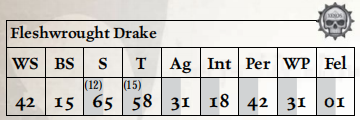
移动： 5/10/15/30 承伤： 55
护甲： 鳞片外覆瘤皮（全身4）。 总坚韧加值：15
技能： 警觉（Per）。
天赋： 狂暴冲锋，Die Hard，无所畏惧，愤怒突袭，强化感官（嗅觉），铁颚。
特性： 异变体质，致命天生武器，Enormous，来自彼岸，天生护甲（鳞甲与瘤皮），四足，体型（Enormous），毒素，超自然力量（x2），超自然坚韧（x3）。
武器： 强化撕咬（近战；1d10+14 R；穿甲4；撕裂，毒素），喉部搭载液化枪†（基础；20m；S/–/–；2d10+2 E；穿甲2；火焰，毒素）。
†喉部搭载液化枪： 如液化枪条目所述，此内置武器每次开火时对血肉龙兽自身造成 1d5 I 点伤害，此伤害不受护甲或坚韧加值减免——它将自己的生命之血呕向猎物。
无论好坏，蛛形纲形态在银河系中普遍存在，其历史之久远已非任何在世者所能追溯。无数兆亿种蜘蛛及类似生物存在于数不尽的世界与更遥远的疆域之中，网道亦不例外。阿里阿德涅螺旋蛛原产于横跨卡利西斯星区、科洛努斯扩区以及其间尖啸漩涡的残破扭曲的网道隧道，是一种凶残的多足生物，似乎不受正常时间流逝的束缚。它的伤口仿佛其血肉正在回溯到过去的状态而愈合，它的攻击似乎即便相隔数米仍能命中，而针对它的打击却不可思议地落空，仿佛从未发生过。
螺旋蛛被阴影枢纽的黑暗灵族当作狩猎消遣，是影脊竞技坑野兽大师们的地方最爱。观众们也喜爱这些生物所能造成的独特混乱与痛苦。此外，这些野兽还因其操控命运之网以滑过通常将角斗者困于竞技场中的不可穿透力场的习性，而使角斗更加刺激。这些生物在观众席中横冲直撞直至被制服的情况并非闻所未闻——这令任何不在其路径上的黑暗灵族都乐在其中。
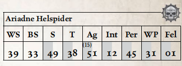
移动： 16/32/48/96 承伤： 9
护甲： 几丁质甲壳（全身3）。 总坚韧加值：3
技能： 杂技（Ag），警觉（Per）+10，隐蔽（Ag），攀爬（S）+20，闪避（Ag），灵能感官（Per），无声移动（Ag）。
天赋： Assassin Strike，强化感官（视觉），强化亚空间感知，快速反应，Sure Strike，天赋异禀（攀爬），灵巧侧步，亚空间感知。
特性： 兽性，黑暗视觉，致命天生武器，来自彼岸，多臂，天生护甲（几丁质甲壳），四足（8条腿），再生，Scrawny，奇异生理（Strange Physiology），超自然敏捷（x3），超自然感官（20米），时间掠食者†，亚空间武器。
†时间掠食者： 阿里阿德涅螺旋蛛在狩猎时似乎能够重织时间，寻找那些它命中目标且未受伤害的未来。每回合，阿里阿德涅螺旋蛛可重掷一次未命中的攻击检定或闪避检定。在战斗中遭遇螺旋蛛者会发现自己在时间围绕他们变化时被相互冲突的记忆所困惑，在任何涉及阿里阿德涅螺旋蛛的战斗结束时，角色必须通过一次普通（+10）意志检定或一次困难（–10）智力检定。任何未通过此检定的有智生物获得 1 点失心，每有一个失败度额外获得 1 点失心。
武器： 撕裂时间之颚†（近战；10m；1d10+4 R；静止毒素††），蛛网（基础；20m；S/–/–；捕网）。
†撕裂时间之颚： 由于其生理结构的时间错乱特性，阿里阿德涅螺旋蛛的攫取有时超出其触及范围。它可以对远达 10 米外的敌人进行近战攻击，如同与其相邻。由于这些攻击的悖论性质，试图闪避或招架它们的检定承受 –10 减值。
††静止毒素： 这种强效而奇异的毒素通过将受害者固定于存在的单一瞬间中发挥作用，直至其新陈代谢战胜它。缝合螺旋的血伶人珍视此生物的毒素，因为它能完美保存受害者。被阿里阿德涅螺旋蛛的颚部击伤的生物必须通过一次坚韧检定，攻击造成的每点伤害使检定承受 –5 减值。失败导致该生物被眩晕的轮数等于 1d5+2 减去受害者的坚韧加值，最低为 1。在被静止毒素眩晕期间，生物无法以任何方式被任何来源伤害——该生物被冻结于时间之中。
在黑暗灵族兽栏中所有令人不快的生物里，没有哪一种能超越利爪魔那纯粹的野兽凶性。利爪魔是一座由虬结肌肉堆成的肉丘，覆盖着耐久的灰色皮毛。它的每一处肢体都是致命的——从撕裂性的利爪，到骨刃般的尾巴，再到那颗巨大的红色头颅，其上布满淌着口涎的颚与过多的珠状眼睛。或许比其体格更令人震惊的，是它追捕猎物时的野蛮。利爪魔本身就是恐怖化身，几乎无需感受到野兽大师长鞭的粗暴触碰，便已是顶尖的猎手。然而一旦受伤，这头野兽便会陷入狂暴的切割狂乱，将攻击者化作可怖的红色肉浆，同时撕扯、咆哮着攻向周围的一切。
黑暗灵族自然沉醉于这种暴力之中，因此利爪魔备受众多野兽大师的珍视——包括枯刃斗教的野兽大师——既作为影脊竞技坑中的战斗兽，也作为实体空间劫掠中拖回新“饲料”的额外战力。关于科洛努斯扩区中利爪魔的更多信息，见THE KORONUS BESTIARY。
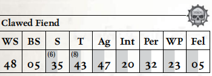
移动： 5/10/15/30 承伤： 38
护甲： 硬化皮肤（全身4）。 总坚韧加值：8
技能： 警觉（Per），攀爬（Str）+10。
天赋： 狂暴冲锋，兽性狂怒†，盲斗，战斗大师，粉碎打击，铁颚，钢铁神经，击倒。
特性： 野兽狂怒†，兽性，野蛮冲锋，黑暗视觉，恐惧（2）（Fear (2)），天生护甲，天生武器，体型（Hulking），Sturdy，超自然力量（x2），超自然坚韧（x2），超自然视觉（25米）。
武器： 利爪（近战；1d10+6 R；穿甲1；撕裂），尾爪（近战；3m；1d10 R；撕裂，柔韧）。
†野兽狂怒： 若利爪魔承受一点或更多伤害，它在战斗剩余时间内自动获得狂暴与闪电打击天赋。
奇美拉诞生于亚空间破碎的角落——在那里，凡人的梦境扭曲、生长，并迸发为活生生的噩梦生物。它们是野蛮的猫科猎手，经由黑暗灵族野兽大师的大量努力才得以维持于实体空间之中。尽管将这些生物维系于物质世界已属不易，更不用说将其置于控制之下，但奇美拉以一种自然野兽所无法企及的方式与黑暗灵族的施虐心智产生共鸣——野兽大师们常常带着成群的这些庞大、缥缈的野兽，驱策它们不断走向更深的屠杀。
在阴影枢纽的竞技坑中，很少有比一群奇美拉相位穿梭穿过实心墙壁，以利爪与打结血肉构成的抽击触手撕裂一群奴隶的血肉更显反常与可怖的景象了。这些可怜虫作为亚空间所生奇美拉的饲料，而黑暗灵族则饱饮他们的恐惧。关于科洛努斯扩区中奇美拉的更多信息，见THE KORONUS BESTIARY。
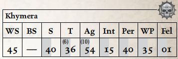
移动： 12/24/36/72 承伤： 21
护甲： 无 总坚韧加值：6
技能： 警觉（Per），追迹（Int），无声移动（Ag）。
天赋： 愤怒突袭，困难目标，强化感官（全部），迅捷打击。
特性： 兽性，恶魔（TB6），魔性威慑†，黑暗视觉，恐惧（3），来自彼岸，多臂，天生武器，相位，四足，体型（Hulking），超自然敏捷（x2），超自然坚韧（x2），亚空间不稳定。
†魔性威慑： 20 米内的所有生物在意志检定上承受–10 减值。
武器： 齿与爪（近战；1d10+4 R；穿甲0；撕裂），攫取臂（近战；2m；1d10+4 I；穿甲1；柔韧）。
与奇美拉和利爪魔相比，剃刀翼群反而显得相当平凡。这些大型鸟类乍看之下似乎对经验丰富的旅行者构不成威胁——而正是这一点使它们如此致命。剃刀翼的速度极快、敏捷惊人，能在飞行中胜过骑乘滑板的滑板暴徒；它们硬化的利爪、喙与锋锐如剃刀的羽毛能在瞬间剥去目标的护甲与血肉。剃刀翼群在一次掠过中将猎物化为骨血狼藉，随后带走其骨骼到别处吞噬，并非闻所未闻。
当她的野兽大师们在竞技场中释放这些优雅的羽翼杀手时，安雅拉总是格外关注。关于科洛努斯扩区中剃刀翼的更多信息，见THE KORONUS BESTIARY。
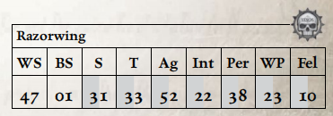
移动（步行）： 2/4/6/12 承伤： 10
移动（飞行）： 8/16/24/48
护甲： 硬化羽毛（全身2）。 总坚韧加值：3
技能： 闪避（Ag），无声移动（Ag）。
天赋： 狂暴，愤怒突袭，闪电打击，闪电反射，灵巧侧步，迅捷打击。
特性： 兽性，飞行（8），天生护甲，强化天生武器，体型（Scrawny）。
武器： 喙（近战；1d10+3 R；穿甲1；撕裂），双翼（近战；1d10+2 R；穿甲3；锋锐）。
多莫斯·阿涅莱恩的独特才能并未被浪费——他的知识宝库被反复梳理筛选，从中挖掘可用的价值。机械修会的秘密对黑暗灵族而言本就鲜有意义，毕竟他们本身的玄奥科技，在火星神甫的体系看来就等同于巫术。但思想掠夺者与模因手术刀追寻的从来不是现成学识，而是能为阴影枢纽带来全新冲击与体验的概念。
机仆化对黑暗灵族而言并非全然陌生的概念——怪形本身就是类似的、经过前脑叶白质切除的奴隶——但当“屠魔机仆”与“赎罪机甲”的概念从机械贤者多莫斯脑中被发掘出来后，立刻获得了阴影枢纽黑暗小圈子的认可。这种旨在制造恐怖与屠杀的自主杀戮机器，恰好迎合了利爪领主宫廷中嗜血的堕落欲望；这两个概念刚从贤者的心灵档案中被发现，德雷卡鲁斯的血伶人们便几乎立刻着手打造同类造物。屠魔机仆由犯下重罪、应当受残酷非常规惩罚的黑暗灵族血肉改造而成，是凶残、迅捷且毫无怜悯的生物，只追逐周遭一切生命的死亡，以此满足仍灼烧着它空洞灵魂的不洁饥渴。
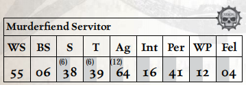
移动： 6/12/18/36 承伤： 12
护甲： 机械形态（全身4）。 总坚韧加值：6
技能： 杂技（Ag），警觉（Per），闪避（Ag），恐吓（S）+20。
天赋： 双巧手，Autosanguine，猫落地，致残打击，狂暴，困难目标，强化感官（视觉、听觉），冲刺，迅捷打击。
特性： 黑暗视觉，恐惧（1）（Fear (1)），来自彼岸，机械（4），致命天生武器，痛苦即力量，超自然敏捷（x2），超自然力量（x2），超自然坚韧（x2）。
武器： 植入式开膛刃（近战；1d10+6 R；穿甲3；锋锐，撕裂）。
装备： 兴奋剂注射器†
†兴奋剂注射器： 屠魔机仆在战斗开始时以一个自由动作自动进入狂暴。
本节提供完整规则，供GM在本冒险及后续战役中使用黑暗灵族优雅而致命的虚空舰与载具。
除了通过网道直接突袭世界表面开展实时劫掠外，黑暗灵族还会动用快速凶残的劫掠舰队；这些舰船在部分设计上与他们的方舟灵族和灵族海盗表亲相近，但在诸多其他方面截然不同。黑暗灵族瞧不上方舟灵族星舰设计里的优雅美学，他们的星舰是“过度”的极致体现——每一艘舰船都是一块画布，造船匠、执政官和血伶人都能在上面尽情挥洒自己想象中最邪恶的造物。舰船上层层布设酷刑室是司空见惯的设计，方便在航行中更好满足船员那非自然的饥渴，不过许多舰船还包含更富想象力的残暴奇观。
因此，尽管黑暗灵族舰船彼此间存在诸多表面相似性，但每一艘都是独一无二的造物，完全依照创造者与指挥官的特定欲望量身打造。要对这些舰船进行分类十分困难：哪怕帝国海军档案库中留存了大量冗长尘封的论著，都试图对这些不同构型做详尽分类，但每次与黑暗灵族的新接触，都总会不可避免地推翻其中部分理论。
这种学究式的分类方式，在海军基地和行政部的舒适环境中或许完全适用，但前线指挥官的需求则全然不同——帝国海军舰长和行商浪人都习惯用两种宽泛的称谓来指代这些千差万别的舰船：酷刑级巡洋舰与海盗级劫掠舰。
所有黑暗灵族舰船均适用以下详述的特殊规则。请注意，尽管黑暗灵族舰船与其方舟灵族表亲的舰船在设计上确实存在相似之处，但除非特别说明，黑暗灵族不使用或受益于其他《行商浪人》规则书（如《LURE OF THE EXPANSE》和《BATTLEFLEET KORONUS》）中灵族舰船的特殊规则。这些不同阵营共有的任何规则均在此完整列出。
卓越星际航海者：与其方舟灵族亲族一样，黑暗灵族是银河中最杰出的星际航海者之一，他们的舰船旨在最大限度地发挥其才能。在黑暗灵族舰船上的任何黑暗灵族成员，在进行机动动作的航行检定时均可重掷。
捕奴者：在黑暗灵族舰船上服役的战士是凶残、冷酷且嗜血的生物，而猎物的痛苦使他们更加致命。他们在劫掠和登舰行动中常常掳走大批船员。在登舰行动中，黑暗灵族舰船在任何命令检定上获得+10加值，并造成1d5+2船员人口损失和1d5+2士气损失。在打了就跑袭击中，黑暗灵族舰船在命令检定上获得+20加值，且可以选择改为造成1d10船员人口损失和1d10士气损失，而非造成一次致命打击——他们会围捕敌方船员并将其拖走。黑暗灵族舰船在任何登舰行动或打了就跑袭击中，对敌方船员人口和士气造成的损失数值，将等量恢复自身损失的船员人口和士气——受害者和奴隶的痛苦能够恢复并滋养黑暗灵族船员。
虚空鲨鱼：黑暗灵族舰船由各种奇异的科技驱动——从捕捉网道灵质之风的多排以太风帆，到以被奴役恒星的囚禁之怒燃烧的等离子引擎，再到将捕获黑洞的强大能量屈从于船员意志的引力脉冲引擎。无论如何，黑暗灵族舰船都迅捷而灵活，能够轻松超越并迂回包抄它们的猎物。黑暗灵族舰船在全速航行拓展动作中获得+20加值（或在使用《BATTLEFLEET KORONUS》中的NPC星舰行动规则时，在决定额外速度时额外投掷1d5并舍弃最低值），并且在转向之前无需移动至少一半航速。所有黑暗灵族舰船，无论类型或级别，均可转向最多90度。
阴影力场：与人类使用的粗笨虚空护盾不同，黑暗灵族将其舰船笼罩在一片墨黑色的黑暗之中，使其在寒冷黑暗的虚空中几乎不可见。这些力场甚至能迷惑星舰探测器的电磁探知，将舰船的热量与辐射排放从窥探的眼睛之前隐藏起来。对阴影力场正常运作的舰船发动的所有攻击，在命中检定上除其他减值外额外承受-40减值。以向虚空倾泻弹药为运作方式的宏炮，则仅承受-20命中减值。对受阴影力场保护的舰船进行任何涉及探测的拓展动作（如锁定或聚焦鸟卜）时，承受-30减值。最后，拥有阴影力场的舰船可以全速航行，且在静默航行状态下进行的任何机动检定获得+10加值。
拟态引擎：许多黑暗灵族舰船装备有奇异的装置，可以在接近过程中投射虚假的信号特征，诱使敌人以为接近的是盟友而非敌人。使用拟态引擎的黑暗灵族舰船必须处于静默航行状态（以便更好地隐藏在其所投射的假象之后），并可指定一个要伪装成的舰船级别。该级别必须与黑暗灵族舰船体型相近——劫掠舰可伪装为运输船、劫掠舰或护卫舰，而巡洋舰可伪装为轻型巡洋舰、巡洋舰、战列巡洋舰或大型巡洋舰。其他舰船可通过一次挑战（+0）的察言观色+探测检定来发现幻象中的不一致之处，从而探测到其背后的黑暗灵族舰船；不过，此前遭遇过黑暗灵族的船员在该检定上获得+20加值，因为他们知晓拟态引擎那些微妙的破绽。
傲慢与怨毒：黑暗灵族舰船没有虚空护盾，且其阴影力场始终处于激活状态，除非该系统已被禁用或摧毁。
以下规则适用于某些黑暗灵族武器，体现了其异星而独特的天性：
分解宏炮：与人类舰船的实体炮弹和粗制激光不同，黑暗灵族使用的是类似于其载具搭载的分解炮的武器——精密复杂的装置，可发射从窃取来的恒星核心中撕扯出的不稳定物质构成的齐射。分解宏炮配备先进的目标锁定系统，使用分解宏炮进行的所有攻击在射击技能检定上获得+10加值。
幻象光矛：这些武器驾驭一种名为“暗光”的不稳定能量——据称取自庞大的天体现象——来消灭敌人。即使最微量的暗光与物质接触也会发生爆炸性反应，而幻象光矛则在收束力场的严格控制下引导巨量暗光流束，造成灾难性的伤害。幻象光矛在攻击时，每个成功度额外造成+1d10伤害，最高上限为+2d10额外伤害。
攻击飞行器：拥有发射舱的黑暗灵族舰船搭载着其独特而致命的飞行器。如果你使用的是《BATTLEFLEET KORONUS》中的发射舱规则，则以下规则适用于黑暗灵族攻击飞行器：
猛禽拦截机：飞行器等级+15，速度12 VUs，中队规模12架。
折磨者轰炸机：飞行器等级+6，速度9 VUs，中队规模6架。
捕奴者突击艇：飞行器等级+11，速度12 VUs，中队规模5艘。
上述飞行器在编队低于半数时不受减值，且在来袭攻击飞行器波次中，目标舰船试图将其击落时，无视目标舰船通常获得的任何炮塔等级加值。
鱼雷：如果你使用的是《BATTLEFLEET KORONUS》中的鱼雷规则，则以下规则适用于黑暗灵族鱼雷：所有黑暗灵族鱼雷均使用追踪鱼雷规则，且在目标舰船试图击落来袭鱼雷齐射时，无视其通常获得的任何炮塔等级加值。黑暗灵族鱼雷分为两种变体：虚空鱼雷与水蛭鱼雷。
虚空鱼雷利用力场泡包裹的暗光脉冲，在敌舰上炸出一团烟雾缭绕的半球形物质。造成2d10+14伤害，且可重掷任何结果为3或更低的伤害骰。
水蛭鱼雷不造成伤害，而是附着在舰船装甲上，汲取舰船能量，使舰船的速度属性承受-2减值，并使所有增加速度的动作承受-30减值。该减值不叠加，但只要仍有一枚水蛭鱼雷附着，减值便持续生效。紧急修理拓展动作不再用于修理损坏的组件，而是立即移除1枚水蛭鱼雷，每两个成功度额外移除1枚附着的水蛭鱼雷。
“枢纽居民”一节中的劫掠者驾驶员属性表可用作任何载具乘员。唯一需要更改的涉及装备——除劫掠者喷气摩托上搭载的驾驶员外，任何驾驶员不应配备战斗药物；且由于阴谋团部队使用的大多数载具均由阴谋团成员驾驶，因此搭载阴谋团成员或血伶人仆从的劫掠者、破坏者或毒液艇的乘员应穿着阴谋团护甲（全身4），而非巫灵套甲。
舰体： 巡洋舰
级别： 酷刑级巡洋舰
尺寸： 各异；长约4.2公里，宽约1.3公里
质量： 约1800万吨
船员： 未知
加速度： 最大持续加速度8重力
酷刑级是两种常见黑暗灵族舰船中较大的一种。与所有灵族舰船一样，这些舰船用以自卫的传感器混淆技术也使准确识别几乎不可能——各类黑暗灵族巡洋舰经常被相互混淆，即便是可信的记录也往往需要在后续遭遇的新证据面前进行追溯性修正。酷刑级巡洋舰始终拥有强大的火力，尽管其具体武器装备的报告因遭遇而异，且黑暗灵族劫掠故意激发的恐惧也很可能使这些报告更加不一致。
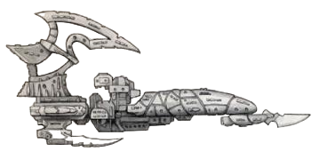
速度： 9 机动性： +28探测： +25 舰体完整性： 60
装甲： 19 炮塔等级： 1
虚空护盾： – 船员等级： 老兵（50）
武器容量： 舰首 4
士气： 100 船员人口： 100
必要组件
未识别异星推进系统、亚空间导航仪、指挥舰桥、灵族维生系统、灵族船员舱室、传感器阵列
附加组件
阴影力场发生器；
酷刑牢狱：这些迷宫般的复合体包含各种形式的堕落，其中的空气中翻涌着痛苦，回荡着成千上万奴隶的尖叫。若此组件被摧毁，舰船在每个战略轮次额外损失1d5士气，因为船员那不洁的滋养源泉被夺走了。
3组分解宏炮集群：宏炮；强度4；1d10+3；致命等级4；射程5；射击技能检定+10加值。
以下武器系统之一：
-2门幻象光矛：光矛；强度1；1d10+4；致命等级3；射程4；每个成功度+1d10伤害，最高+2d10。
-鱼雷发射管：强度4。这些鱼雷发射管装填有黑暗灵族虚空鱼雷和水蛭鱼雷。舰船携带24枚虚空鱼雷和8枚水蛭鱼雷。
-发射舱：强度4。该发射舱容纳4个猛禽拦截机中队、4个折磨者轰炸机中队和4个捕奴者突击艇中队。
舰体： 掠袭舰
级别： 海盗级护卫舰
尺寸： 各异；长约1.2公里，宽约0.1公里
质量： 约400万吨
船员： 未知
加速度： 最大持续加速度9.5重力
与其大型同类一样，海盗级护卫舰同样更接近于一系列大致相似的舰船的集合。迄今为止，对这些舰船进行准确识别仍不可能——事实上，“海盗”这个统称可能同样指向其船员或其活动，而非舰船本身。
众所周知，海盗级特别喜欢使用许多黑暗灵族虚空执政官青睐的拟态引擎系统——它们较小的体型使其能够在接近猎物时不受干扰地伪装成更为常见的护卫舰、驱逐舰、运输船和星系内舰船。在最大规模的劫掠中，一个由搭载拟态引擎的海盗级组成的中队常常被用来在猎物中渗透穿插，而舰队的其余部分则在黑暗的太空中静默滑行。这些海盗级承担着最大的风险，但也为其船员提供了最早播撒恐惧与恐慌、收获欺诈回报的机会。
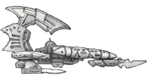
速度： 13 机动性： +45探测： +25 舰体完整性： 20
装甲： 15 炮塔等级： 1
虚空护盾： – 船员等级： 老兵（50）
武器容量： 舰首 2
士气： 100 船员人口： 100
必要组件
未识别异星推进系统、亚空间导航仪、指挥舰桥、灵族维生系统、灵族船员舱室、传感器阵列
附加组件
阴影力场发生器
酷刑牢狱： 些迷宫般的复合体包含各种形式的堕落，其中的空气中翻涌着痛苦，回荡着成千上万奴隶的尖叫。若此组件被摧毁，舰船在每个战略轮次额外损失1d5士气，因为船员那不洁的滋养源泉被夺走了。
分解宏炮集群：宏炮；强度4；1d10+3；致命等级4；射程5；射击技能检定+10加值。
以下武器系统之一：
-分解宏炮集群：宏炮；强度4；1d10+3；致命等级4；射程5；射击技能检定+10加值。
-幻象光矛： 光矛；强度1；1d10+4；致命等级3；射程4；每个成功度+1d10伤害，最高+2d10。
-鱼雷发射管： 强度2。这些鱼雷发射管装填有黑暗灵族虚空鱼雷和水蛭鱼雷。舰船携带12枚虚空鱼雷和4枚水蛭鱼雷。
舰体： 巡洋舰
级别： 未知
尺寸： 长约6.6公里，宽约1.6公里
质量： 约3000万吨
船员： 未知
加速度： 最大持续加速度7重力
灵魂掠夺者是一艘由灵能共振材料构成的巨型舰船，成千上万狂怒的灵体寄宿其中——这些灵体因其在亚空间中漂流的岁月以及作为阴影枢纽黑暗核心的任期而腐化堕落。这艘船由堕落的执政官扎尔加恩·库尔那暴怒的精魂引导（若称不上真正控制），不分青红皂白地攻击周围所有舰船。它并非真正意义上的黑暗灵族舰船，但已被改造以融合部分黑暗灵族科技；它所发射的具现化憎恨冲击波视作幻象光矛。
速度： 7 机动性： +20
探测： +35 舰体完整性： 100
装甲： 23 炮塔等级： 3
虚空护盾： – 船员等级： 老兵（50）
武器容量： 舰首 6
士气： 100† 船员人口： 100†
†亡者之舰： 由于灵魂掠夺者由一群尖啸的幽灵所驱动，它并非真正拥有船员。然而，当它在战斗中受损时，越来越多被困在其中的灵体开始撕扯着挣脱出来，掠夺者的部分区域随之黯淡。因此，其船员人口和士气始终等于其舰体完整性。它仍可正常进行（及抵御）登舰行动，并在需要进行需要以个体进行检定时，使用扎尔加恩·库尔的属性数据（扎尔加恩·库尔的属性表见第122页）。
必要组件
未识别异星推进系统、亚空间导航仪、指挥舰桥、灵族维生系统、灵族船员舱室、传感器阵列
附加组件
阴影力场发生器
6门幻象光矛： 光矛；强度1；1d10+4；致命等级3；射程4；每个成功度+1d10伤害，最高+2d10。
本节旨在配合扩展规则《INTO THE STORM》中的载具规则使用。本节详述了黑暗灵族所使用的一些先进而致命的优雅载具——这些载具在《灵魂掠夺者》冒险中均可能出现。即使没有《INTO THE STORM》扩展书，这些信息也可作为背景参考，并为载具提供属性数据。这些载具大多为开放式悬浮艇，因此适用于多种载具的规则在此一并说明。
开放式： 敌人可通过Called Shot 攻击，以载具乘员和乘客为目标进行攻击。
悬浮： 该载具悬停于战场上方，可无视通常会阻碍移动的地形。若载具因损伤而完全无法移动，则视作坠毁摧毁，而非瘫痪。
掠袭者既是优雅的驳船，又是凶猛的竞速载具，是黑暗灵族最常见的载具之一，用于高速将成群的阴谋团武士或巫灵送入战场。与其他种族的战斗载具不同——甚至与其方舟灵族表亲的快速重力坦克也不同——黑暗灵族并非在坦克和炮艇的装甲外壳中进入战斗，而是悬挂在迅捷而布满刀锋的驳船两侧，随时准备在顷刻间降入狂怒的战斗之中。
类型： 悬浮艇
战术速度： 35米
巡航速度： 350公里/小时
机动性： +25
结构完整性： 20
体型： Enormous
装甲： 正面18，侧面15，后方15
乘员： 驾驶员、炮手
运载容量： 10名携带装备的战士
武器（二选一）
-炮手操作的黑暗光矛（朝向：正面；射程160米；S/–/–；3d10+10 X；穿透20；弹夹50；装填3整轮；打倒、确凿[4]）
-分解炮（朝向：正面；射程150米；–/–/5；1d10+12 E；穿透12；弹夹150；装填3整轮）。
特殊规则
开放式： 见上文。
悬浮： 见上文。
危险搭载： 掠袭者的乘客常常悬挂在载具两侧，即便其狭小的甲板也几乎不提供任何保护——这使得船上的战士可以毫无阻碍地从载具上降落到敌人中间。当敌人对掠袭者进行全自动攻击动作 时，每第三次命中将击中一名乘客，而非载具本身。然而，乘客可通过一次挑战（+0）的杂技检定，以自由动作从掠袭者上登岸；若乘客检定失败，则片刻的犹豫会使登岸动作耗时增加至半动作。
获取难度： Extremely Rare
破坏者是黑暗灵族最具代表性的炮艇，乍看之下不过是一艘加强火力的掠袭者。两者之间的区别微妙却显著。破坏者在所有方面均与掠袭者相同，只有以下差异：
·装甲正面24，侧面21，后方15。
·乘员增加至1名驾驶员和3名炮手。每名炮手各操作一门黑暗光矛或分解炮。
·运载容量降至0，并移除危险搭载特殊规则。
毒液艇深受那些力求最快抵达战场者，以及不屑与低等战士为伍者的青睐——它是一种小巧、迅捷、轻量的运输载具，比掠袭者更快、更灵活。仅搭载寥寥数名战士，乘坐毒液艇奔赴战场的战士依靠自身技艺和骤然降临带来的震慑来压倒敌人——他们沉醉于猎物在大队劫掠部队抵达之前所体验到的最初恐惧时刻。
类型： 悬浮艇
战术速度： 40米
巡航速度： 380公里/小时
机动性： +35
结构完整性： 18
体型： Hulking
装甲： 正面18，侧面15，后方12
乘员： 驾驶员
运载容量： 5名携带装备的战士
武器（二选二）
-驾驶员操作的双联毒晶步枪（朝向：正面；射程80米；S/3/5；1d10+2 R；穿透3；弹夹500；装填2整轮；毒素、双联）
-乘客操作的毒晶加农炮（朝向：正面；射程110米；–/–/10；1d10+5 R；穿透4；弹夹300；装填3整轮；撕裂、毒素）。
特殊规则
开放式： 见上文。注意驾驶舱为驾驶员提供8点 AP。
悬浮： 见上文。
闪烁力场： 这种高度先进的光学扭曲力场使毒液艇难以被有效瞄准——载具看上去几乎在随机地闪烁隐现，仿佛随时会消失。载具的体型不给予攻击者任何命中加值，也不对驾驶员的闪避尝试施加任何减值。此外，任何攻击者均无法通过瞄准获得针对拥有闪烁力场的载具的命中加值，因为其不规律的隐现使得有效瞄准成为不可能。
乘客操作武器： 标注为乘客操作的武器只能由载具乘客舱中的角色使用，使用该乘客的射击技能进行攻击。
危险搭载： 当敌人对毒液艇进行全自动攻击动作时，每第三次命中将击中一名乘客，而非载具本身。然而，乘客可通过一次挑战（+0）的杂技检定，以自由动作从毒液艇上登岸；若乘客检定失败，则片刻的犹豫和笨拙的着陆会使登岸动作耗时增加至半动作。
获取难度： Very Rare
劫掠者喷气摩托深受其主人的喜爱与个性化定制，是速度与致命性的终极结合。对一名劫掠者而言，仅仅杀死敌人，或以轻松优雅的姿态进行极速飞驰，都是不够的——同时做到两者，才是对劫掠者技艺的真正考验。劫掠者喷气摩托的一切都为这一目标而生：从为提升速度和空气动力学而精简重塑的底盘，到装饰其上、沾满无数受害者血迹的凶残刀刃。
类型： 悬浮艇
战术速度： 50米
巡航速度： 400公里/小时
机动性： +30
结构完整性： 8
体型： Hulking
装甲： 正面15，侧面12，后方10
乘员： 驾驶员
运载容量： 无
武器
驾驶员操作的毒晶步枪（朝向：正面；射程80米；S/3/5；1d10+2 R；穿透3；弹夹200；装填2整轮；毒素）。
特殊规则
悬浮： 见上文。
刀刃翼板： 劫掠者喷气摩托本身就是一件武器，在技艺高超的骑手手中尤为致命。在对生物进行冲撞动作时，劫掠者喷气摩托造成1d10+5 R伤害，穿透4；若行驶速度至少达到其战术速度的两倍，则伤害提升至2d10+5 R。在撞击该生物后，它可使用剩余移动力继续移动。若骑手在进行此冲撞动作的驾驶（悬浮器）检定时自愿承受额外-20减值，则可选择命中的部位，如同该攻击为Called Shot。注意，这意味着劫掠者有可能击落开放式载具上的乘客和乘员。
暴露： 敌人可通过Called Shot动作以劫掠者喷气摩托的驾驶员为目标。此外，当敌人对劫掠者喷气摩托进行全自动攻击动作时，每第三次命中将击中驾驶员，而非载具本身。
获取难度： Rare
剃刀翼战斗机由那些积累了足够财富和声望、得以脱离死亡竞速的少数劫掠者驾驶，是一种致命的飞行器，旨在成为针对地面一切移动物体的致命掠食者。它装备有多种武器，其中最致命的工具是那些奇异的导弹——这些导弹能产生奇异而致命的效果，以满足飞行员扭曲的品味。
类型： 飞行器
战术速度： 40米/20 AUs
巡航速度： 1,750公里/小时
机动性： +40
结构完整性： 25
体型： Enormous
装甲： 正面20，侧面20，后方20
乘员： 驾驶员
运载容量： 无
武器（三选三）
-驾驶员操作的双联毒晶步枪（朝向：正面；射程80米；S/3/5；1d10+2 R；穿透3；弹夹500；装填2整轮；毒素、双联）
-两门驾驶员操作的黑暗光矛（朝向：正面；射程160米；S/–/–；3d10+10 X；穿透20；弹夹50；装填3整轮；打倒、确凿[4]）
-四枚从以下列表中选择的驾驶员操作导弹：单分子镰导弹、坏死毒素导弹、碎裂力场导弹。
特殊规则
飞行器： 在飞行器模式下，该载具利用空气动力学原理保持升空。空中飞行时，它必须始终保持至少一半巡航速度，否则将坠毁于地面。若载具因损伤而完全无法移动，它将坠落地面并在撞击中摧毁。
重力掌控： 对所有灵族而言，重力不过是一种可供先进技术操纵并为其所用的东西。剃刀翼战斗机可在任何时候以悬浮模式运作（遵循上文所述的悬浮规则），而非飞行器模式。
联装驾驶员操作武器： 分类为“驾驶员操作”的武器可由驾驶员在一次标准攻击动作中全部同时开火，可瞄准射程内任意数量的目标，且目标之间相距不超过1个AU（约100米）。每件武器分别进行攻击检定和伤害检定。
单分子镰导弹： 这些奇异的装置在地面上方引爆，释放出一股与地面平行的扁平力场脉冲。这股无限薄的脉冲能像最锋利的刀刃一样切穿血肉和护甲，留下一地肢解的尸体。单分子镰导弹具有以下参数：重型；射程250米；S/–/–；3d10+5 R；穿透4；弹夹1；装填–；爆炸（8）。单分子镰导弹无法影响目标上方或下方的任何物体，且总是命中爆炸范围内所有目标的躯干部位。若攻击检定获得两个或更多成功度，则命中爆炸范围内所有目标的头部。
坏死毒素导弹： 这些导弹含有大量剧毒。导弹引爆时，外壳碎裂成数千枚涂有毒素的锋利碎片。坏死毒素导弹具有以下参数：重型；射程250米；S/–/–；2d10 R；穿透4；弹夹1；装填–；爆炸（8）、打倒（1）、撕裂、毒素。
碎裂力场导弹： 这些导弹包含两套依次工作的系统，以精心计时的方式引爆以达到最大效果。第一次爆炸抽走周围区域的所有热量，将不幸处于半径内的一切化为冰冻雕像。瞬息之后，一股动能冲击波从导弹中爆发，将那些雕像击碎。碎裂力场导弹具有以下参数：重型；射程250米；S/–/–；3d10 I；弹夹1；装填–；爆炸（8）。被碎裂力场导弹击中的任何生物必须在掷伤害骰之前进行一次挑战（+0）的坚韧检定；若失败，则被冻成冰雕，1d5轮内无法移动。被冰冻的目标也更易受到重击，在受到造成冲击伤害的攻击时，其坚韧加值视为0。
获取难度： Near Unique
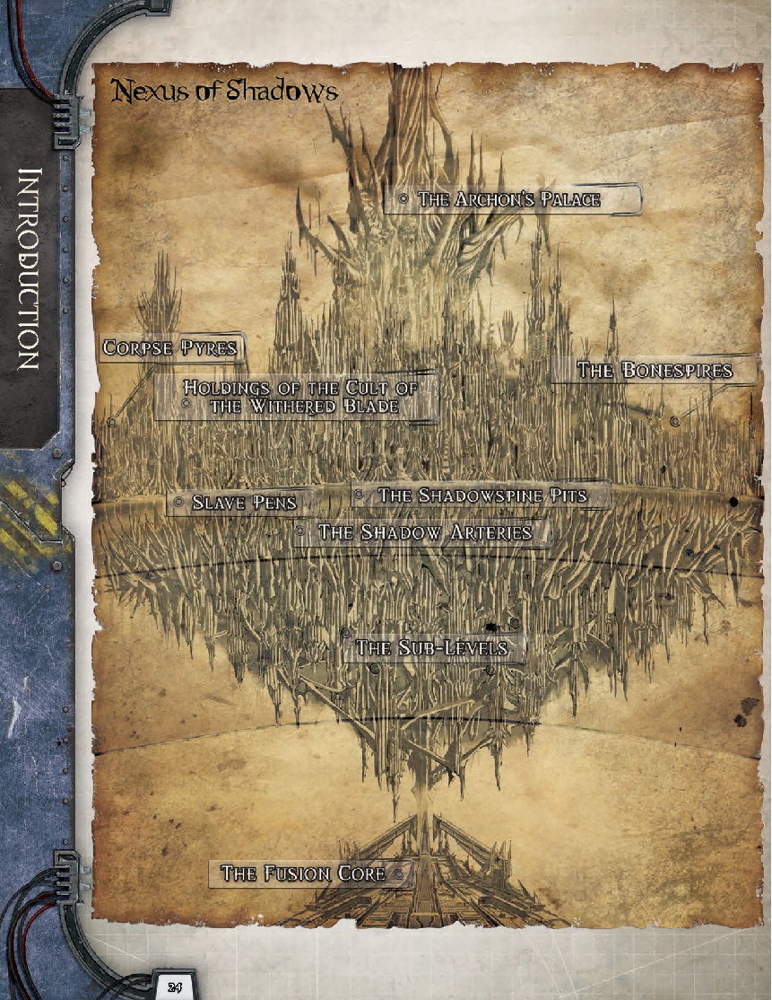
五、阴影枢纽地理志
“终有一日，帝国仅有的遗存，也将成为阴影枢纽这样的地方；从一个种族被遗忘的荒芜骸骨上，滋生出异星的城市，还有堕落的异形教团。他们对那一度统御银河的伟大帝国一无所知。”
——安亚·沈，敌意交易号大舰长
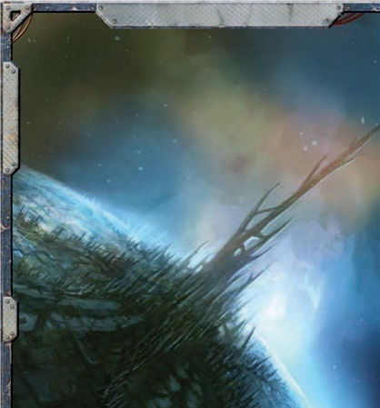
阴影枢纽是一座幽暗而危险的人造世界，由黑暗灵族掌控并部分开发，居民全是扩区里最凶恶的异形。自萨莱恩·莫恩在网道中发现其坐标，与执政官扎尔加恩·库尔结盟，夺取并定居此地以来，这座城邦便不断滋生扩大，逐渐成长为黑暗灵族及与其贸易往来者共用的常用港口。作为一处基地，它为劫掠邻近的科洛努斯扩区、卡利西斯星区、乃至尖啸漩涡提供了绝佳且隐蔽的据点；而且因其坐落于网道之内，它更便于通往分散于朦胧星域乃至更遥远疆域的数百个世界。就连来自幽都科摩罗的奴隶贩子，也会在阴影枢纽买卖货物，或是在其竞技场中观赏血腥竞技以消磨时光。在黑暗灵族中，它作为蓄奴大城而闻名遐迩。奴隶来自帝国邻近星区守备薄弱的世界，以及扩区中众多多年来不受帝国舰队庇护的零散人类世界。对于许多从毗邻光晕星区的区域中被掳走的帝国臣民而言，枢纽就是那可怖的终点站。他们将在骨坑中为奴至死，或在竞技场中流血而终。虽然耳目灵通的行商浪人能在科洛努斯扩区的许多港口、甚至卡利西斯星区内的某些地方，听到关于阴影枢纽存在的流言，但其真正的位置却是一个严加保守的秘密。即便是与黑暗灵族贸易的异形，也必须由枢纽的侦察兵引导，穿过网道支离破碎且险象环生的曲折迷宫，才能抵达枢纽。很少有外星种族真正理解网道，而方舟世界灵族则不愿利用卡利西斯星区和科洛努斯扩区周边那腐朽破碎的网络，哪怕只是其中一小部分。黑暗灵族——尤其是那些被科摩罗放逐的流亡者——则更为大胆，愿意拿舰船和奴隶的损失冒险，在网道幽暗的连接通道与黑暗角落中寻找通路。但即便如此，他们也必须步步谨慎。真正有本领能定期抵达阴影枢纽这种地区的人屈指可数。枢纽位于网道中一个尤其不稳定的区段，极易受到亚空间入侵和现实坍塌的影响，在科摩罗地位稳固的黑暗灵族大多避而远之。然而，正是这种危险，使枢纽成为了流亡者理想的目的地：来自科摩罗的放逐者们，例如“影棘阴谋团”，便发现此地是极佳的行动基地。毕竟，比起科摩罗那些伟大执政官们必将施加于冒犯者的酷刑，现实本身随时可能分崩离析的风险，又算得了什么呢？
且不论其隐秘性和抵达枢纽大门所需的艰险，阴影枢纽本身还拥有强大的防御体系，能够抵御来自轨道的攻击。即便有一支舰队抵达枢纽，也会面临由防御塔和阴影力场构成的复杂防御网络——这套系统不仅能彻底扰乱攻击舰艇的方位感，还能在光芒与炮火的交织中将天空中的敌人一扫而空。数个世纪以来，这套防御网络一直守护着枢纽，击退了来自其他黑暗灵族阴谋团和异形掠袭者的进犯企图。对这套网络的掌控权，始终是枢纽之主的权柄象征；而掌握其激活钥匙的派系，就能支配每一艘希望降落或离开的舰船。
以上种种因素叠加，使得阴影枢纽数个世纪以来一直隐匿于帝国的门阶之侧；它是一个阴影笼罩的秘密，黑暗灵族借此可肆意掠夺人类世界，以满足其阴暗的欢愉。
阴影枢纽正是建立在“盖兰天球”之上。盖兰天球是一件早已被遗忘的科技时代的古老遗物。它体积约为一颗小型卫星，表面遍布高塔与天线，其结构围绕着一个坚实的内核构建而成。该内核是某颗富含矿物的小行星的残骸，随着球体不断增建新的层级，其自动化系统正逐渐侵蚀着这颗小行星。无论是盖兰天球上的外星居民，还是少数曾有机会研究它的帝国探险者，都不知其真正用途。有人推测，它建造出来是为了对某个星系或星区进行长期研究，主要目标是在数千年间持续收集信息。人们迄今所发现的少量信息表明，天球具备自我维持的系统与修复功能，且表面布满了无数传感器与通讯阵列——这些迹象都说明此理论有一定道理。在机械教之中，也有人声称曾在拉斯世界某台受损的沉思者中，发现一段以古代二进制象形图文编码的、关于盖兰天球的记录；而技术语言学者之间则为此争论不休，激烈探讨着这段记录究竟是表明天球出自人类之手，还是仅仅描述了机械教在过去某个时候曾遭遇过该天球，亦或只是M38一次冷却剂泄漏在沉思者崇高记忆中留下了污痕。
天球是如何进入网道的，同样是个谜。它被遗弃了不知多少个时代，可能曾漂流穿过某扇网道门，甚至可能是其沉思者中的古老程序与协议将某次网道破裂视为天体现象，希望加以研究，便将它牵引至网道门附近。另一种可能是，某种未知的力量出于不可揣度的目的，将其移入了网道。进入网道后，天球便在各个区域之间飘移了无数纪元，最终被困于古老力量与外星能量场的交汇处。如今，它漂浮在一个相对稳定的位置上，成为那个被遗忘的启蒙时代的又一块残骸。
率先重新发现盖兰天球并决定将其加以利用的，正是萨莱恩·莫恩与她的阴谋团。被逐出科摩罗后，这位执政官率领她的舰队在网道中漂泊多年，劫掠各个世界，寻找能据为己有的领地。而盖兰天球拥有隐蔽的地理位置与古老的科技，正是建立新家园的完美地点。不幸的是，对萨莱恩而言，天球的防御系统与庞大的机仆守卫军团过于强大，仅凭她的阴谋团无法攻克。于是，萨莱恩与扎尔加恩·库尔的“裂爪阴谋团”结为同盟。他们合力肃清了天球中古老的人类防御力量，摧毁了无法控制的部分，并将无法居住的区域封存。
尽管他们的部队已夺取了一处登陆场，并关闭了老旧的轨道防御系统，但黑暗灵族仍花费了数年时间，才在天球中开辟出建造城市的区域。随着越来越多黑暗灵族来到枢纽，不断有新的区域被清理出来，扫除古老的自动化防御设施。黑暗灵族常常驱赶成千上万的奴隶进入某片区域，以探明其中的危险，或者只是为了耗尽炮塔的弹药，以便将其摧毁。其他异形种族也被允许作为贸易团成员在枢纽定居，不过这些外星种族必须自行清理出可供居住的区域。黑暗灵族及其盟友这场肆意征服的持久影响是，枢纽的许多区域至今仍残留着战斗的痕迹，天球战斗机械的残骸在幽暗的街道上随处可见。偶尔，天球古老的守卫者会再度抬头反抗，但黑暗灵族通常能迅速将其镇压。
在黑暗灵族抵达并建立港口后不久，枢纽就开始作为贸易枢纽和劫掠基地运作。由于毗邻科洛努斯扩区和卡利西斯星区，它为奴隶贩子打开了全新的机遇之门：那些以往因网道残破而遥不可及、或过于危险而无法劫掠的世界，如今变得触手可及。阴影枢纽在奴隶的脊背上迅速膨胀壮大，财富也随之累积。尽管科摩罗的大多数黑暗灵族至少表面上都很鄙弃这座诅咒之地及其中的流亡者。但科洛努斯扩区的异形与尖啸漩涡的叛徒则没有这样的顾忌，他们发现枢纽是贸易和聚集的理想之地——这里远离帝国掌控、且对帝国爪牙充满敌视。萨莱恩欢迎这些派系进入她的城市，既是因为她看重他们带来的财富与影响力，也是因为他们为她提供的额外保护，防范那些试图从她手中夺走城市的人。不幸的是，对萨莱恩而言，最终将她赶下台的并非外部势力也非外来种族。最终，是她的伙伴扎尔加恩·库尔篡夺了她的权位，并在她来得及对他采取同样行动之前，将她放逐回网道之中。对枢纽的许多居民而言，这场权力更迭无关紧要，尤其是对奴隶们：执政的是哪位黑暗灵族，在他们眼中并无分别。

裂爪阴谋团控制了阴影枢纽，但若没有“枯刃斗教”及其领袖安雅拉的协助，它便无法维持这种统治。萨莱恩影棘阴谋团的影响力依然在这座城市中徘徊不去，而城中众多黑暗灵族的忠诚变幻莫测，若萨莱恩出现可以轻易重返权力之巅的迹象，他们便极有可能再次倒向她的派系。
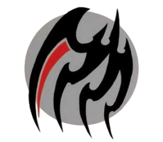
“背信弃义是我族与生俱来的权利，也是我们存在的本质。因此，我们必须紧紧抓住渴望之物，直到指甲迸裂、利爪渗血。”
——扎尔加恩·库尔，裂爪阴谋团执政官
在漫长的几个世纪里，扎尔加恩·库尔一直是科摩罗的宠儿，但命运之轮终将不可避免地转向对他不利的一面，他在幽都中激怒了许多更为强大的派系。为了避免阴谋团被摧毁，他选择率领阴谋团流亡，并立即开始寻求新的避难所，以便巩固力量。为此，他找到了萨莱恩·莫恩——她的影棘阴谋团当时刚发现了盖兰天球，并向她提供了夺取天球急需的武力支援。扎尔加恩与萨莱恩结盟时，带来了大批战士与奴隶，以及一支拥有众多舰船的劫掠舰队，其规模不逊于萨莱恩已有的力量。不久之后，扎尔加恩甚至引诱了一位名叫德雷卡鲁斯的血伶人及其秘会“缝合螺旋”，让他们定居于阴影枢纽，为各阴谋团提供独特的服务。这些力量联合起来，完全足以在天球中开辟出一片区域，作为他们的新家园。
此后，裂爪阴谋团的力量日益壮大，尤其是在萨莱恩被驱逐、她的阴谋团大部分被摧毁之后，扎尔加恩的势力完全掌控了枢纽。裂爪阴谋团吸收了大量影棘阴谋团的战士与奴隶，而萨莱恩在枢纽之外的许多盟友与联系人，也转而与扎尔加恩建立了新的合作关系。因此，裂爪阴谋团已成为枢纽内规模最大的势力，实际掌控街道以及扭曲高塔之上的天空。探险者在枢纽中遇到的几乎每一个黑暗灵族，要么隶属于该阴谋团，要么与之关系密切，并且只有在其允许下才能现身。
扎尔加恩不可违抗的命令从他居住的金字塔内传达给他的阴谋团，尽管自萨莱恩在他们初次争夺枢纽的冲突中，派遣刺客试图刺杀他以来，就再也没有人见过他离开过他的要塞。尽管如此，仍有众多领主与队长以他的名义，在“暗影动脉”、“骸骨尖塔”以及枢纽的其他区域行事。尤其值得注意的是，德雷卡鲁斯是阴谋团的对外代表；有重要事务需要处理时，通常是这位血伶人出面。
裂爪阴谋团的战士与枢纽的其他居民截然不同，他们身着血色盔甲，并使用经过特殊改造的、带有刃状结构的碎片武器。无论他们去往何处，本地居民与访客都会保持警惕并避开他们，以免遭受这些异形的残忍对待。裂爪阴谋团的所有成员，甚至包括侍奉他们的奴隶，都知道正是他们的执政官统治着枢纽，并以相应的高姿态自居。在阴谋团之外，探险者遇到的任何人都会警告他们：挑战裂爪阴谋团的战士绝非明智之举，因为没有人有胆量或者愚蠢到足以阻止他们为所欲为。然而，尽管支配着阴影枢纽，裂爪阴谋团却几乎懒得去巡查城市的每一个角落，也很少屈尊踏足天球地表之下，或定居点的边缘地带。

“早在你诞生之前，我便已踏上追寻完美之道；在你湮灭之后，这条道路仍将延续不止。唯一的问题是，你的死亡，能否成为通往完美杀伐之道的又一级阶梯？”
——安雅拉，枯刃斗教魅魔
矗立于裂爪阴谋团阴影之下的，是枯刃斗教及其魅魔安雅拉。这个巫灵斗教构成了奴隶贸易的中坚力量，自她们在枢纽定居初期与萨莱恩和扎尔加恩结盟以来，便一路崛起、繁荣兴盛。尽管其人数与影响力不及裂爪阴谋团，但枯刃斗教对城市运转同样至关重要——正是“影脊竞技坑”中的角斗表演，以及她们所豢养的猛兽与奴隶，吸引了大量贸易，维系着枢纽的生存，也满足了枢纽中黑暗灵族居民邪恶的欲求。与扎尔加恩及其阴谋团不同，枯刃斗教并不过分关注竞技场高墙之外发生的事情。她们只对商人、以及获取和训练用于格斗的奴隶感兴趣。这其中的一部分原因，在于她们要提供黑暗灵族赖以生存的施虐式娱乐。而扩区的其他居民也出于病态的好奇心被此吸引。安雅拉对导致扎尔加恩与萨莱恩反目的权力游戏并无真正的兴趣（尽管当时她确实发现自己被卷入了两位执政官之间的纷争），如今扎尔加恩幽居金字塔，而裂爪阴谋团也不对她的内务横加干涉，对此她十分满意。
真正令枯刃斗教感兴趣的，是斗教在影脊竞技坑中举办的血腥角斗，以及为这些赛事寻觅合适的奴隶与猛兽。如果探险者能提供此类战斗用生物，斗教非常乐意与他们交易；并且如果探险者与斗教达成交易，还会受邀亲眼见证他们的“货品”在角斗中的表现。然而，安雅拉通常对帮助萨莱恩回归，或废黜扎尔加恩的野心持冷淡态度，这只是因为那会打破现状。与许多黑暗灵族领袖一样，安雅拉更倾向于静观其变，待到看清谁将接近胜利，再将筹码押在希望掌控枢纽的一方身上；只要她的奴隶贸易和珍贵的角斗赛事不受干扰，她就不会亲自下场。
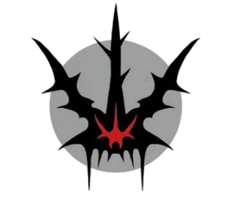
“如有必要，筹谋可持续百年，但出手须在一瞬之间。一旦行动，便永不停歇，直至夺取胜利——或战死方休。”——萨莱恩·莫恩，影棘阴谋团执政官
萨莱恩战败并逃入虚空之后，扎尔加恩将影棘阴谋团的大部分黑暗灵族收编入自己的麾下。然而，城中仍有少数潜伏者，还残存着对影棘阴谋团的一丝忠诚，倘若萨莱恩归来，他们仍会向她效忠。这些因素是否会在冒险过程中发挥作用，由GM决定；他可以利用这些残存的忠诚者（无论是黑暗灵族还是枢纽的其他居民），在探险者陷入困境或主动寻求帮助时，为他们提供援助。这类忠诚者通常是个体行动，其中一些人甚至效力于裂爪阴谋团，对枢纽的统治保持沉默，隐藏自己真实的感受。这些人不太可能主动冒险或置自身于险境（毕竟，若抱有如此崇高的理想，他们就活不到今天了，况且这种忠诚理想对于背信弃义的黑暗灵族而言本就是异端），但若给予恰当的激励，他们或许能提供情报或隐秘的协助（例如在金字塔内开启传送门，或在探险者被俘时偷偷递送武器）。
次要派系
枢纽中也散居着少量外星种族与人类，他们各自怀揣着不同的目的和理由，来到银河系的这个黑暗角落。GM可以选用这些派系中的任意一个或全部，来协助或阻碍探险者在枢纽中的雄心壮志。为方便GM使用，每个派系都设有专门章节，详述其目标，以及它们作为盟友或敌人时可能与探险者产生互动的方式。
GM也可以在枢纽的政治与贸易中引入其他团体，因为几乎所有在科洛努斯扩区有利害关系的种族，都有可能在这座黑暗灵族城市中扮演一定角色。这可能包括更侧重贸易的派系，如人类掠夺者或奴隶贩子，甚至可能是从尖啸漩涡中崛起的异端科技教派的特工——他们前来研究盖兰天球并试图掌控其力量。
由于尖啸漩涡及其污染世界近在咫尺，枢纽中还栖息着黑暗诸神的信徒。他们从那受诅之地的深处前来，寻求奴隶或财富，或是为了更邪恶的目的与黑暗灵族结盟。裂爪阴谋团对尖啸漩涡居民既无特别的偏爱，亦无特别的憎恨，只要对方愿意交易，且不会动摇阴谋团的统治地位，便允许他们进入城市。只要他们不向阴谋团开战，阴谋团也不会干预他们的行为。因此，在“暗影动脉”不乏幽暗的角落，墙壁上涂满亵渎的符号，混沌教派在那里扎根。
在这些叛徒中，有虚假黎明教派的信徒。虚假黎明教派是一群由被废黜的辛提拉贵族赫纳里斯·蒂尼斯领导的乌合之众，被关于“灵魂掠夺者”的传说吸引至枢纽。赫纳里斯相信，“灵魂掠夺者”的晶体船壳中囚禁着灵魂，并打算这些灵魂作为祭品献给欢愉黑暗之主。他的教派自抵达枢纽以来便不断壮大。起初，教派成员只是一群衣衫褴褛的流放卡利西斯贵族及其仆从。多年来，随着流浪者与异端分子——有的来自尖啸漩涡世界，有的是为了逃离帝国的迫害——在枢纽中找到了避风港，教派人数以微小但稳定的幅度增长。即便如此，赫纳里斯仍无力触及“灵魂掠夺者”，更遑论通过他所相信的仪式将其摧毁。他坚信他的仪式能够将它虚幻的囚徒送入亚空间、投入色孽张开的怀抱。迄今为止，他的宏大计划仍停留在纯粹的构想阶段，部分原因在于他的教派内部纷争不断，对毁灭诸神的忠诚并不统一；部分原因在于，尽管他醉心于异端钻研，却缺乏真正的巫术力量。
当探险者到来时，他将他们视为守秘者赐予的礼物，是实现目标与荣耀其神明的通途，因而会努力利用他们的力量并与他们结盟。即便他不能立刻得知他们的意图，他也会对他们行商浪人的身份，以及他们与卡利西斯星区之间可能存在的联系产生兴趣。任何具备辛提拉或卡利西斯贵族相关学识的探险者，都可能都会认出蒂尼斯家族的名号，并且可能比赫纳里斯所希望的更了解他本人以及他被放逐的原因。
目标：虚假黎明教派希望将“灵魂掠夺者”中的灵魂献祭给色孽，以博取恩宠，让神明的目光投向他们。为此，他们需要掠夺那艘舰船，获取其中囚禁众多灵魂的水晶与石头，然后在一场复杂的仪式中将其摧毁。虚假黎明教派对奈娅·特罗梅金尤其感兴趣，赫纳里斯相信她正是执行仪式所需的关键神秘学人物——尽管奈娅对他的阴谋毫无兴趣，也不认同他对毁灭之力的忠诚。
作为盟友：赫纳里斯并非什么伟大的战士，他只是一个瘦削、衰老的男人，虽然举止和破败的华服能证明其贵族血统，但家族昔日的资源已经所剩无几。他的教派算不上一支军事组织，都是形形色色的不三不四之徒——他们背弃了帝国社会，栖身于阴影枢纽的外围，在那里可以自由地崇拜他们的黑暗诸神。赫纳里斯对玩家角色们最大的价值在于，他在枢纽生活多年，深谙此地的诸多秘密。赢得赫纳里斯的支持至少需要通过一次挑战（+0）魅力检定，但与帝国有公开关联的探险者在此检定中受到–30减值，而公开献身混沌的探险者则获得+30加值。无论魅力检定的结果如何（或其他社交互动结果如何），赫纳里斯都会提供支持——但如果他无法确信探险者对毁灭诸神的虔诚，他会从一开始就谋划背叛。
作为敌人：这个教派正不遗余力去夺取“灵魂掠夺者”，尽管赫纳里斯希望荣耀只归于自己的教派，但如果他的战利品即将从指缝间溜走，他可能会被迫从尖啸漩涡及其他黑暗诸神的信徒那里寻求援助。这可能会将一些极其邪恶的个体与生物引至枢纽，给探险者和赫纳里斯本人都带来麻烦——如果他不得不直面一位真正的混沌冠军的话。
资产：赫纳里斯手下约有20名衣衫褴褛的教众随时听令，另有约200人名义上向他效忠，但只有在方便且符合自身利益时才会服从命令。这些力量散布于阴影枢纽各处，大多盘踞在暗影动脉，他们能听到许多原本可能被忽视或遗忘的消息。他可以在数日内将这些乌合之众集结成一支小型军队，尽管其中受过训练的士兵寥寥无几。赫纳里斯及其追随者使用《行商浪人》核心规则书第373页“叛徒”的数据，但赫纳里斯的交际与智力属性获得+10加值，并受训于通用学识（黑暗灵族）、通用学识（阴影枢纽）和听说语言（黑暗灵族）技能。
尽管裂爪阴谋团是枢纽中的主导势力，但与幽都及其他黑暗灵族定居点之间的秘密贸易，意味着许多来自外界的阴谋团与斗教的代理人都会途经阴影枢纽。他们中的大多数是执政官麾下的低级仆从，自身并无实权。不过，其中也有一些喜欢亲力亲为的贵族，或是没有固定基地、将船只停泊于枢纽补给整修的海盗。这些黑暗灵族在异形政治网络中是自由的行动者，可能根据自己的微小目标与野心，协助或阻碍探险者。
GM可以将这些异形作为一个次要派系来使用，作为NPC的来源，以影响玩家角色盟友的行动以及城中其他黑暗灵族的行为，同时也可强化这样一个概念：黑暗灵族并非拥有单一领袖或单一动机的统一种族。在这些异形之中，可能有仍倾向于萨莱恩的贵族，也可能有曾被扎尔加恩迫害、愿意为探险者提供些许协助以推翻扎尔加恩的人。同样，也有些人可能纯粹出于利益驱动，成为探险者自身野心的黑暗倒影——船长与海盗没有主人，也不受誓言制约，唯一能约束他们的只有他们自己在船上立下的誓言。
异星工艺品与禁忌科技的贸易利润丰厚，扩区中有众多个人和组织将这些物品走私运入帝国，通常经由卡利西斯星区。在枢纽中，这些势力被统称为“康索瓦纳之环”，因为其领导者是一位名为西里萨·康索瓦纳的女性。她是前帝国海军的军械官，也是一名资深海盗。通过与落脚港的联系人合作，西里萨已在阴影枢纽中生活了数月之久——她沿着奴隶贸易的踪迹追查至此，并意识到此地能提供的异星科技与古老工艺品蕴含着巨大的财富。在这短短的时间内，她将各路拾荒者与其他商人组织成一个松散的联盟，开始将货物运回落脚港，同时清除了数名拒绝加入她的“朋友圈”，却仍然在枢纽兜售货物的冷贸易商[违禁走私商]。
尽管西里萨已能够从天球中提取科技并与黑暗灵族交易，但她尚未捞到真正的大笔财富，她一直在寻找一个契机，以使在枢纽中生活的艰辛变得值得。最近，她听说了“灵魂掠夺者”及其力量的故事——不过她并不知道那是一艘舰船，只知其被藏在金字塔的某处。她已将窃取“灵魂掠夺者”视为自己在枢纽行动的终极目标，待她从天球废墟及其黑暗灵族居民那里掠夺尽所能获取的财富之后，就会动手。她相信，凭借这样一件工艺品，她足以为自己买下一颗卫星或一艘船舰，从此安度余生；她对这件物品本身毫无兴趣，只在乎它能换来的金钱。
如果探险者的到来让她得知他们也在追寻“灵魂掠夺者”，她便会提前推进自己的计划。在枢纽的所有居民中，如果探险者曾到访过落脚港，或在科洛努斯扩区中闯出名声，她是最有可能认出探险者的人。即便她不认识他们，凭借她庞大的人脉网络，他们也很可能拥有共同的朋友（或敌人）。
目标：康索瓦纳之环追求的无非就是财富。西里萨想要的是“灵魂掠夺者”所能带来的丰厚回报。如果事与愿违，她无法独自掌控那艘异形船舰，她也会满足于参与夺取“灵魂掠夺者”所获酬劳中的一部分。西里萨还希望将她在冷贸易中的同僚安亚·沈从影脊竞技坑中解救出来，以偿还她欠沈舰长的旧债。当然，她更愿意在不激怒枢纽中的黑暗灵族的情况下完成此事（至少在她决定带着装满财宝的船队最终离开枢纽之前）。
作为盟友：由于在枢纽居住的时间尚短，西里萨能向玩家角色提供的关于枢纽的信息有限。然而，凭借她与科洛努斯扩区的联系，她的资源相当可观，能在外部支援方面提供大量帮助。作为盟友，她可以从枢纽之外为玩家角色获取物品，或帮助他们搭乘康索瓦纳之环代理人的运输船与舰艇，在城中不被察觉地移动——当然，这一切都是有偿的。西里萨会相当慷慨地提供信息，但要赢得她足以投入真正资源的支持，需要通过一次困难（–10）魅力检定。如果探险者在此检定中失败（或其他社交互动不理想），西里萨仍会提供支持，但仅仅是将探险者视为另一批可交易的对象，待时机方便时就会顺手打劫。
作为敌人：康索瓦纳之环将牟利置于一切之上，如果出卖或背叛探险者看起来能赚到更多王座币，他们便会采取这一路线。然而，他们不愿承担过度的风险，面对压倒性的力量时通常会选择撤退。
资产：西里萨使用《行商浪人》核心规则书第373页中“虚空海盗船长”的数据。她拥有两艘剑级护卫舰和一艘耶利哥级朝圣者飞船（见核心规则书第194-195页）。她还有两支由五名誓言保镖组成的小队，负责保护她的安全并在阴影枢纽中执行任务（誓言保镖的数据见核心规则书第372页）。
阴影枢纽是一个完全人造的类行星天体，其表面交织着错综复杂的结构、高塔和支撑架，一直延伸至内部那个充斥着轰鸣机器和嘎吱作响引擎的核心。这座由早已被世人遗忘的建筑师设计的巨构，曾经拥有井然有序的表面与舱室、功能明确的塔楼与传感器阵列，以及彼此共生的制造设施群落。在漫长岁月中，天球孤悬于虚空中，逐渐衰败与混乱。期间它偏离了古老的设计初衷，人造世界的大片区域陷入黑暗、沦为废墟，或因发疯的机器、或因不断制造与组装无用结构的沉思者故障程序，而变得扭曲畸形——故障沉思者无休止地制造并组装着毫无必要的部件其目的无非是让原本就杂乱无章、充斥着密室与高塔的区域变得更加错综复杂。除了天球自身受损的系统，还有被时间缓慢侵蚀的结构与系统，它还曾在漫长孤寂的虚空航行中遭受损伤。小行星与太空碎片的撞击在其表面凿出孔洞或击倒塔楼，辐射与天体能量将某些区域的生命彻底抹除，使之对任何闯入者都变得致命；在某些区域，天球还搭载了外星乘客——那些乘着漂浮碎片或残骸而来的生物，此后在天球的黑暗角落中繁衍兴盛。
当然，盖兰天球最大的变化，便是黑暗灵族的到来。在这些施虐成性的异形抵达并将此天球据为己有之前，它不过是一艘庞大无比的幽灵船，在虚空中飘荡，只有无智的野兽与半疯的机器。是萨莱恩与她的黑暗灵族看到了这座受诅世界的潜力。他们攻克了其最初的防御，在天球保存最完好的区域开辟出一片立足之地，从而创建了日后阴影枢纽的雏形。
他们随后占据了众多塔楼与其他建筑，在其上增建、构筑自己的结构，直至播下了城市的第一批种子。以此为起点，他们向外、向下扩展，穿越天球中废弃与空置的空间，驱赶着漫无目的的机器与外星掠食者。每当遇到顽强抵抗，或接触到对生命有毒的区域，或遇到防御过强的自动化系统时，他们便转向另一个方向。毕竟，天球中有着成千上万公里的舱室、走廊与层级可供探索与占据，没有必要不惜代价浪费资源攻克某个特定区域。经过多年扩张，黑暗灵族城市与盖兰天球废墟之间形成了一种奇异的交织融合。黑暗灵族将许多现有结构与系统扭曲以适应自身目的，同时完全忽略其他部分，即便在其定居点的核心地带，也有许多建筑被原封不动地遗弃。
其他外星种族的到来进一步扩展了枢纽的边界，这些新物种与派系在废墟中占有了各自的区域，通常远离黑暗灵族城市，坐落于能提供更好保护，尤其是能确保隐私的偏远地区。即便经历了黑暗灵族数十年的扩张与定居，天球的大部分区域仍未被探索、无人关注，尤其是下层区域，那里古老的机器仍在掌控一切，只有傻子才敢深入。
阴影枢纽中最宏伟强大的要塞，正是执政官扎尔加恩·库尔的宫殿。早在萨莱恩与扎尔加恩最初占据天球时，此地便已被选定为宫址，直到现在它仍是枢纽最令人叹为观止的建筑。这里是裂爪阴谋团的权力中心，更是黑暗灵族统治阴影枢纽的心脏。整座宫殿戒备森严，望之可怖——幽暗的塔楼高耸于城市上空，墙面缀满弯曲的刃状飞扶壁，顶端矗立着参差不齐的锯齿尖刺。城中只有最受宠的居民能获邀进入宫殿，而其中仅有最幸运者能活着离开。大多数活在执政官宫殿阴影下的居民，根本无需操心和枢纽统治者直接往来——他们只需和低
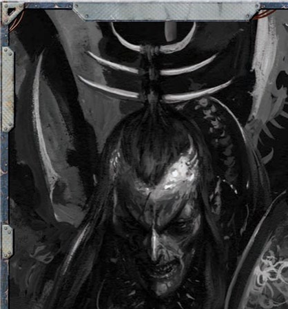
阶黑暗灵族或其他异形交易，始终远离黑暗灵族政治中致命的阴谋算计。扎尔加恩·库尔的宫殿望之可怖，它既是扎尔加恩统治阴影枢纽的象征，也是他的权力宝座。尽管他与枯刃斗教并肩统治，还依赖对方提供奴隶、主持角斗，但阴影枢纽真正的军事力量始终由他直接掌控。此外，扎尔加恩·库尔还掌握着激活“剃刀之网”的钥匙——这是枢纽强大的轨道防御网络，由武装塔楼与致命阵列构成——这让他得以完全掌控所有进出枢纽的航运。这座金字塔同时也是裂爪阴谋团在阴影枢纽的主要驻军地与军械库，数以千计的阴谋团武士驻扎在金字塔下层，还停放着数十辆喷气摩托与掠夺者战车，能在瞬息之间驶出，碾碎城中任何反抗。想要进入金字塔面见阴谋团的统治者，来访者必须穿过驻军区域才能抵达内殿。这是扎尔加恩精心设计的流程：任何与他打交道的人，都必须先亲眼见识他军事力量的规模，看清他随时可调遣的部队与军备数量。
金字塔高耸于枢纽之上，从天球上黑暗灵族领地的几乎任何位置都能望见它——这是一个冷酷的提醒：裂爪阴谋团的目光始终笼罩此地，支配着每一个活在它阴影中的人。扎尔加恩选中这里，既是因为它的规模，也因为它本就具备完善的防御设施。它外形宽阔钝重，像是一枚巨大的齿，如今布满了黑暗灵族修建的尖塔，早已完全掩盖了原本的形貌。这座金字塔本是盖兰天球最初的建造者修建的三座巨型指挥舰桥之一，用来安置军官与舰长，以类似舰船操控的方式引导天球穿越太空。因此，它和虚空舰的舰桥有许多共同特征，只是规模要宏大得多。萨莱恩初次抵达天球时，就注意到这三座金字塔十分适合安置她的阴谋团，用来打造新的城市中心。然而，当她与扎尔加恩重返此地建立黑暗灵族定居点，经过更细致的勘察后，她发现三座金字塔中，一座已经大半损毁，向内坍塌坠入天球深处；另一座过于靠近辐射区，并不适合作为城址。这个因素比其他任何条件都更直接地决定了阴影枢纽在盖兰天球上的最终位置。
最初，萨莱恩与扎尔加恩共同管理这座金字塔，两个阴谋团各据一方。枢纽建成初期，整座建筑空间充裕，双方势力各自排布，无需频繁碰面引发冲突。随着黑暗灵族的影响力在天球上不断扩张，城市逐步发展，金字塔的控制权之争愈发凸显——尤其是那些仍与天球防御网络保持功能连通的区域。起初，两位执政官各自拓展领地，修建塔楼、延伸舱室，把金字塔改造成了由扭曲走廊与高塔构成的噩梦迷宫，各处由蛛网般的栈桥相连。最终，持续的紧张局势与暗流涌动的政治博弈演变为公开冲突，扎尔加恩将萨莱恩和她的影棘阴谋团逐出了金字塔与枢纽。
扎尔加恩接管金字塔后，吞并并占据了影棘阴谋团原本控制的区域。历经多年经营，他的裂爪阴谋团早已巩固了对这座建筑的掌控，将其打造成枢纽中最易守难攻的区域，几乎无法从外部攻破。金字塔的外层与下层是裂爪阴谋团的驻军区，由训练坑、居住区、奴隶围栏与武器库共同构成一片庞大区域。这里管控严苛、巡逻密集，入侵者与擅闯者通常会被格杀勿论。哪怕是奉命行事却不慎迷路的奴隶，遇上巡逻队也会被射杀——黑暗灵族根本不会等候解释，而且向来乐于把这当成活靶练习。德雷卡鲁斯还在这些区域重新激活并强化了天球的不少原始防御设施，尤其是下层那些连阴谋团仆从都不愿久留的区域。这些防御设施从炮塔到经德雷卡鲁斯疯狂技艺改造的生物储藏库应有尽有，覆盖了金字塔防御体系的诸多盲点。即便没有防御工事与巡逻队，金字塔的外壳与下层对不熟悉布局的闯入者而言，本身就是一座令人晕头转向的迷宫。除了黑暗灵族增建的新走廊与舱室外，其余大部分区域要么被彻底封死，要么在夺取金字塔的初期战斗中被毁，从未得到修复。想要找到通往内殿的可靠路径，唯一的办法要么是尾随巡逻队，要么设法接入金字塔受损控制台中仍处于休眠状态的古老控制系统。
金字塔的上层原本是引导天球穿越虚空的传感器阵列与通讯塔群的所在地。黑暗灵族占领此处后，大多将这些塔楼与观测穹顶改建为执政官宠臣的宅邸，或是空中部队的驻防地。黑暗灵族修建了标志性的尖塔，又在金字塔整个顶端搭建起复杂的桥梁网络，让整座建筑外观如同一支缠满蛛网的骸骨之爪，伸向漆黑的天空。塔楼同时也是金字塔防御最坚固的区域：除了驻防在此的空中部队，还布设了数十座炮塔与炮穹，配备的武器足以打击轨道上的舰船。对黑暗灵族而言，这些塔楼连同其中的宅邸就是一座游乐场——裂爪阴谋团会在此款待重要访客，还会在城市高空举办私密的特殊角斗活动。
规模最大的中央塔楼还是“死亡世界花园”的所在地：这里汇集了来自十几个世界最危险、最具攻击性的植物，经精心筛选打造出一座美丽却致命的花木园，由德雷卡鲁斯及其秘会成员负责照管。在花园上方的栈桥上，阴谋团的宾客们围观这些可怕的植物吞噬、毒杀、溶解被投入这片优雅地狱的惊恐奴隶。其余塔楼中则收藏着无数阴森藏品，其中就包括德雷卡鲁斯多年劫掠与实验积累下的庞大珍奇动物收藏馆与畸形标本馆。
金字塔下方的深层密室是最难进入的区域，由缝合螺旋设置的大量检查站与防御工事层层保护。除了血伶人制造的奴隶，这些密室中几乎没有其他奴隶；而被送到这里服役的不幸者，最终都会沦为血伶人实验台上的牺牲品。扎尔加恩的内殿位于金字塔核心，在裂爪阴谋团割让给缝合螺旋的幽暗领域上方数公里处。“灵魂掠夺者”——裂爪阴谋团最伟大的战利品，也是他们支配阴影枢纽的关键——也安放在此处。很久以前，扎尔加恩在金字塔上破开一处洞口，将这艘船舰移入城中封存隐藏。正是“灵魂掠夺者”赋予扎尔加恩击败萨莱恩的优势（见“哀恸故事”），还为金字塔运行庞大防御网络提供了所需的动力。“灵魂掠夺者”为“剃刀之网”供能，失去它，枢纽在很大程度上将不设防。
这艘船舰长近七公里，宽达数公里，占据了内殿的大部分空间；连接船舰的走廊与舰艏共同构成扎尔加恩中央塔楼的地基，让这座塔楼高耸于所有其他塔楼之上。从金字塔到船舰内部的过渡界限清晰分明：冰冷灰色的塑钢墙壁配有钝头压力门与厚重舱壁，覆着黑暗灵族风格的装饰与尖顶，渐渐过渡为焦黑腐朽的拱门、布满扭曲雕刻的凹槽支柱，还有镶嵌着宝石、散发着病态光晕的装置，标志着从一个噩梦领域迈入另一个噩梦领域。
据说扎尔加恩就居住在这艘异星船舰的核心之中，那里的空气中弥漫着低语，奇异的不安感沉重笼罩着每一寸空间。只有他最宠信的追随者能够踏入“灵魂掠夺者”，德雷卡鲁斯忠诚的畸人在每一处入口肃立警戒，奉命格杀任何胆敢打扰执政官的人。因此，极少有人知道船舰内部究竟藏着什么，见过超过一隅舱室的人更是少之又少。但居住在金字塔内殿的人都清楚，这艘船舰中蕴藏着一股力量——所有住在附近的人都能感知到这份力量。甚至有流言传开，说这艘远古船舰不知为何，已经反过来掌控了执政官本人。
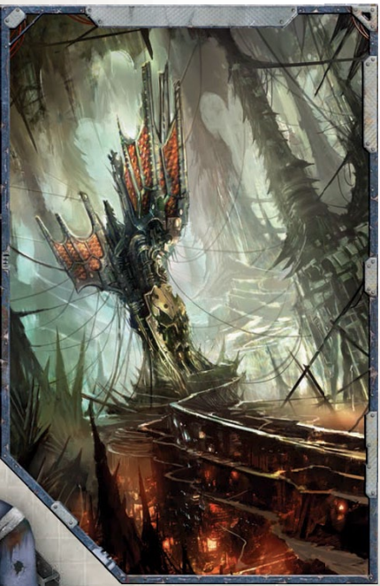
灵魂掠夺者“灵魂掠夺者”发现于光晕群星之外被遗忘的深渊，是一艘异星设计的船舰，蕴藏着古老而可怖的力量。扎尔加恩最初是在寻找盟友对抗萨莱恩时，偶然得知了这艘船的存在。这位执政官常年和各式各样的异形与虚空生物打交道，交易从奴隶到秘密的一切事物，以此寻找对付对手的优势，或是可供利用的弱点。其中一笔交易的对象是一名斯特里西斯商人，对方为他提供了这艘异星船舰的位置——它被发现于光晕群星的远方。这名商人描述说，这艘船不知被什么占据，寄宿着一个强大而愤怒的灵体，正好可以供执政官用来对付敌人；他还声称，自己的船员因为太过恐惧，根本不敢尝试打捞这艘船。听完这番描述，扎尔加恩隐约猜到了这艘失落之船的身份，于是派出舰船前去回收。当船队拖着这艘船返回后，他亲自踏上甲板，检视了船舰优雅的设计，还有点缀在船舰内部、数千颗微光闪烁的石头，他的猜测得到了证实。这艘船受损过于严重，无法正常穿越虚空；在黑暗中漂浮了无数岁月，它早已被腐化侵蚀。但对于执政官而言，它却再完美不过。在血伶人德雷卡鲁斯的协助下，扎尔加恩成功驾驭了船内的能量并将其化为己用，随后将这艘船命名为“灵魂掠夺者”，以此纪念它掌控死亡能量的黑暗新力量。
“灵魂掠夺者”是灵魂的导管，能让理解它的人从死亡中引导能量。它也是一座巨大的精神力量储藏库，船内数千颗奇异的发光石头都可以被汲取能量，用来驱动黑暗灵族的科技——这类能量的流动在网道之中尤为顺畅。在与萨莱恩的争斗中，扎尔加恩依靠“灵魂掠夺者”为金字塔的防御和“剃刀之网”供能；哪怕萨莱恩已经摧毁了原本赋予“剃刀之网”杀伤威力的发生器，扎尔加恩依旧获得了击败她所需的关键优势。战事结束后，他将这艘受损的船舰整合进自己的宫殿，把它的力量和城市的其他部分相连，为自己带来了前所未有的控制力。裂爪阴谋团利用“灵魂掠夺者”扭曲的水晶与骨骼结构作为精神能量导管，这种能量从枢纽发生的每一次死亡中汲取力量，为统治的阴谋团提供了近乎无限的能源，也让他们能铁腕掌控城市中发生的一切。
在裂爪阴谋团统治枢纽的巨大金字塔之外，黑暗灵族的城市塔楼与幽暗金属峡谷向四面八方延展开来。这片区域里，异形聚居的第二大建筑群便是影脊竞技坑。这里是枯刃斗教的领地，既是他们举办残酷角斗的场地，也是支撑枢纽运转的繁荣奴隶贸易中心。枯刃斗教将天球引力喉管周边的竞技坑改造为一系列逐级下降的层级，一直深入这颗人造卫星的核心。每个层级上，他们都会举办角斗、安置奴隶、训练角斗士，部分层级还被用来豢养野兽、繁育怪物。这些区域通过古老的巨型防爆门与舱壁和其他竞技区隔开，但若枯刃斗教打算放出其中的怪物，便可随时开启通道。黑暗灵族将引力喉管的诸多古老机制融入角斗坑设计，只要拉动杠杆，就能扩展或合并竞技场，甚至打开通往天球燃烧核心深处的门户，将奴隶与野兽惨叫着投入死亡。
引力喉管最初的建造目的，是让盖兰天球吞噬小行星，将其送入深层熔炉转化为原材料。它宽达数公里，是天球侧面一处巨大开口，周围环绕着一圈悬浮阵列与磁力抓钩塔——如今大多被黑暗灵族改造成了居住区或观赏角斗的看台。由于盖兰天球过往吞噬的小行星大小悬殊，直径从仅数百米到一两公里不等，引力喉管并没有用单一闸门覆盖通往天球内部的隧道，而是由数十道可独立开启的闸门组成，下层还有更多闸门，一路延伸至盖兰天球的核心。所有闸门都嵌在天球的上层结构中，边缘是陡峭斜坡，通常还环绕着齿状结构用来捕获碎片，这让每一道闸门都天然形成了适合竞技战斗的坑洞。枯刃斗教充分利用这些闸门和层级，打造了数十个竞技场，其中包括一座被称为“血门”的中央大竞技场，可随时开启、关闭或是进行其他操控。
盖兰天球原本用来捕获吞噬小行星及其他大型太空碎片的古老系统大多保存完好，多年来枯刃斗教早已掌握了利用这些系统调控竞技场重力的方法。借助这一功能，他们无需通过内部走廊与舱室转运，就能将物体从下层移至上层，运输野兽时尤为便利——黑暗灵族可以直接将野兽悬浮到角斗场中央。这套系统也让枯刃斗教能举办独特的对决：他们可以随意增强或减弱重力。有时，斗士们要在竞技场中挣扎，身体的重量被增至骨骼濒临断裂的临界点；有时，斗士们能以缓慢的弧线跃过竞技场地面，在半空中相互砍杀。在某些“表演”中，奴隶会被直接抛入竞技场，在快速变化的重力条件下被猛烈甩动，四处飞散，相互碰撞，同时还要撞上黑暗灵族投入这片血肉碎块旋涡中的任何东西。下注者会押注哪名奴隶能活得更久，或是一头猛兽能不能在近乎失重的环境里抓住预定数量的奴隶——此时猛兽只能在失重空间里扑腾，想要抓住同样晕头转向的猎物并不容易。
和执政官的金字塔一样，引力喉管周边的尖塔，以及众多闸门下方的层级里，也驻扎着大量黑暗灵族战士。此处厅堂里满是枯刃斗教的巫灵与野兽，他们在此训练，巡逻自己的领地。与执政官的宫殿不同，竞技场内关押的奴隶数量极其庞大，远超过枢纽的其他任何区域。奴隶们抵达枢纽后，往往最先被带到影脊竞技坑，这里也是黑暗灵族与其他异形之间大部分奴隶贸易的交易地点。安雅拉监管着这里的大部分交易，部分层级和闸门被预留作奴隶贸易专用：买家有专门的观览区域，黑暗灵族在此展示货物，让奴隶展现自身能力。最危险的奴隶或野兽都被关押在下层，远离黑暗灵族与竞技场的日常运作，只待处置时机成熟。将它们关押在下层闸门也意味着，只要安雅拉认为某个奴隶或野兽难以控制，就随时可以打开闸门，将其投入天球的燃烧核心。
黑暗灵族的城市已经蔓延到天球的相当大一部分区域，这群异形改造了原建造者的造物，使其适配自身的需求。骸骨尖塔就是这类改造产物之一——黑暗灵族因它破碎残毁的外观如此命名。骸骨尖塔外形如同野兽腐烂的骨骸，从干枯血肉与腐朽皮革中穿刺而出。它们原本是庞大传感器塔群、通讯中继站与图像阵列的一部分，曾经支持盖兰天球研究周边的虚空；如今，骸骨尖塔已是最强大、最富有的黑暗灵族的领地。那些尚未赢得殊荣、无法与执政官一同驻跸金字塔的黑暗灵族，只能栖身于枢纽阴影街道上空的高塔中，住在专为适配自身黑暗天性设计的花园与宅邸里。和金字塔上方的塔楼一样，骸骨尖塔呈现出阴森可憎的样貌，表面遍布刃状阳台、扭曲尖刺，还有从黑色塑钢主干上伸出的针状结构。如同闪烁剃刀铁丝
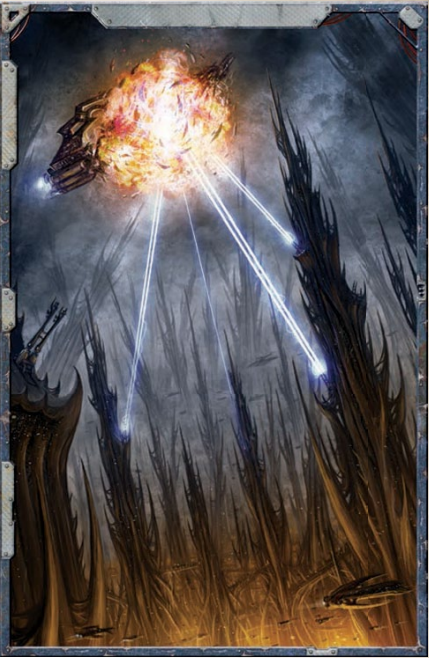
般的桥梁在尖塔间伸展，将彼此连接；部分塔楼紧密聚集成簇，那是权贵领主与商人的领地，与下方城市的其他区域完全隔绝。许多来到阴影枢纽的重要访客，终生都只见过某位领主的塔楼花园——他们在此签订契约、交割货物，既从不涉足尖塔群深处，也从未踏入执政官的金字塔。骸骨尖塔绝非安全区：塔楼领主或许不会为枢纽本身的命运博弈，但在争夺贸易利益、抢占位置最优的尖塔时，他们的凶残丝毫不亚于任何执政官。清理并改造一座现成尖塔既耗时又耗费不菲，因此多数领主更倾向于直接从对手手中夺取塔楼来扩张地盘。大多时候，领主之间不会爆发公开战争——因为裂爪阴谋团会迅速处置任何可能给城市带来大规模动荡的事件；但除此之外，任何阴谋手段都不会被禁止。因此，一名领主往往会耗费数年时间，用刺杀、破坏贸易、暗中袭扰一步步削弱对手，直到能在不引发大规模公开暴力、不损害枢纽秩序的前提下，彻底制服对手、夺取目标。
萨莱恩与扎尔加恩最初建立阴影枢纽时，必须先攻克盖兰天球的自动化防御系统。萨莱恩派出一队精锐战士摧毁了为防御网络供能的电力中继站，顺利完成了这项任务，还在金字塔周边，以及未来黑暗灵族城市的选址区域开辟出一片无防御地带。城市建成后，金字塔的原有防御系统被腐化，黑暗灵族修复了电力中继，转而利用这套网络保卫城市。经过数十年扩建，这套防御网络不断得到增强，大量受损或能量耗尽的中继站与武器都被替换为黑暗灵族的科技产物。在萨莱恩与扎尔加恩共同统治期间，二人共享这套防御系统的控制权——他们的脆弱联盟要求，必须两人共同授权才能启动电力中继。当两位执政官的冲突最终公开化，萨莱恩不愿冒险：她命自己的精锐副官再次摧毁了发电机，认定此举已经让自己不受防御系统的威胁，随后便率领舰队驶近城市提供支援。可她不知道，扎尔加恩早已为这套防御系统准备好了新的能量源：“灵魂掠夺者”。最终，萨莱恩的舰队大部被毁，扎尔加恩登上了权力之巅。
裂爪阴谋团至今仍使用“灵魂掠夺者”为这套网络供能——该网络会对陷入其中的舰船产生割裂效果，因此得名“剃刀之网”。扎尔加恩对网络的启动与运作方向拥有完全控制权。“剃刀之网”的炮塔、能量电池与发射器实际遍布全城，只是防御系统的主体仍集中在金字塔周围。迄今为止，裂爪阴谋团仅动用过“剃刀之网”寥寥数次，且通常只是用它来杀鸡儆猴，或是通过武力展示促成更有利的交易；但它的威胁始终真实存在，除了最鲁莽的掠袭者之外，所有人都对它望而却步。
隐匿在骸骨尖塔的阴影中，地处执政官巍峨金字塔高处之下，是枢纽里遍布碎屑的街道。这些街道被称为“暗影动脉”，是进出枢纽的秘密通道；无论是异形还是人类，都能在这里躲开黑暗灵族无孔不入的监视，避开他们领主与贵族的权谋算计。
但倘若有人觉得，暗影动脉对整座城市生活的重要性不如骸骨尖塔或是竞技场，那就大错特错了——正如它的名字所示，大量关键的信息与货物都经由这些通道流入流出这座城市。这里也是访客避开黑暗灵族与其他外部势力干扰，开展交易的绝佳场所；很少有地方能比这座由敌对异形掌控、藏在空间褶皱里的城市废墟街道，更能躲开帝国的视线。因此，异形与黑暗诸神的信徒在此摩肩接踵，那些找不到其他容身之所，或是因无法言说的罪行被通缉的男女流亡者在此自由游荡。最卑劣的恶习与消遣都能在这里悄无声息地进行，暗影动脉完全是法外之地，枢纽的统治者几乎从不关心这里发生的一切，只要这里的活动不损害他们的贸易，也不会让他们折损过多兵力。行走在暗影动脉中的人需要自行承担风险，也得接受自己可能永远无法走出去的事实。
从物理结构上讲，暗影动脉位于盖兰天球表面以下的最上层舱室中，这里的大气要么来自天球如喘息般运作的风箱，要么由从虚空舰上回收的部件维持，要么由怪诞玄奥的异星机器生成。这片幽暗区域没有星光，通道仅靠零星分布的天球发光板，或是居住者点燃的摇曳火焰照亮。当年黑暗灵族建立枢纽时，他们定居在天球的塔楼与上层区域，忽略了较低层级与高架结构之间的“街道”——这些舱室或是深陷在天球壳体内部，或是在地面几乎甚至完全没有露出存在痕迹。随着时间推移，越来越多种族与居民抵达枢纽，这些区域逐渐被占据，塔楼（也就是后来所说的骸骨尖塔）的住民与下方住民之间形成了清晰的分界，暗影动脉由此诞生，这里也成了所有抵达枢纽却得不到黑暗灵族领主或贵族眷顾，只能降落在天球表面而非塔楼的外来者的第一落脚点。
自最初被占据至今的数十年里，暗影动脉不断向城市下方延伸扩张，各处区域被不同派系抢占控制，划分出粗陋的边界。此地大部分区域早已被拆解为废料，再加上动脉本身本就破败不堪，使得在那些不受派系或权贵掌控的区域里，隧道中堆满碎石与垃圾，还四处充斥着从货船底舱带入枢纽的害虫。这些区域也盘踞着盗贼与匪徒——这些枢纽的弃民靠搜刮上方抛下的废弃物，以及捕杀误闯巢穴或是靠得太近的愚笨旅行者维生。在暗影动脉的更下方，天球的走廊已是一片真正的荒野，越过暗影动脉的烟雾迷障后，各类恐怖的存在便随处可见。
盖兰天球的大部分表面，以及其下方的巨大人造洞窟，依然不在黑暗灵族的掌控之中。这些黑暗地带从异形城市向四面八方延展数百公里，覆盖了大片数千年都无人踏足的广袤区域。尽管曾有天球访客组织探险队进入这些古老荒野，但黑暗灵族大体上对其置之不理——仅按需从领地边缘向外扩张，将核心精力放在城市的防御与贸易上。因此，这些黑暗区域里究竟藏着什么，没人说得清；不过可以推测，部分区域里天球的古老系统仍在运转，古旧的机器依旧咔嗒作响、研磨不停，执行着永无休止的任务。也有可能，太阳辐射损伤、强辐射或是剧毒物质，已经让部分区域对任何生物都完全无法通行。还有些区域早已被寄生虫侵占——这些寄生虫是天球在数千年的虚空漂流中一路积攒而来的——对贸然闯入者而言，它们的致命程度丝毫不逊于遍布毒雾或是分布着腐蚀性湖泊的区域。
最终呈现的结果是，枢纽宛若一簇摇曳在黑暗荒野中的文明之火——只不过是一种最为扭曲的文明。来到枢纽的访客极少需要冒险踏入边缘荒地，因为即便在那些早已被遗忘的厅堂或地窖中能觅得获利机会，所得也远不足以抵消这些区域潜藏的种种危险。但人们依然有很多理由离开城市：或许是为了逃离黑暗灵族，或许是要寻找一条需要借助旧隧道或隐藏舱室的秘密通路。偶尔，也会有人被放逐到边地作为惩罚——不过这种情况通常只针对黑暗灵族，而且只有当宣布刑罚的领主或贵族觉得看着自己的同族被放逐很有趣时，才会做出这样的决定。大多数违规者会被直接处死，流放奴隶则被认为是一种浪费，因为奴隶的死亡不会被黑暗灵族看到，也无法供他们取乐。误入边地也并非不可能——因为枢纽没有明确的边界或是城墙，尤其是在暗影动脉深处。旅行者很容易迷路，要是运气不佳，就会接连数日徘徊在远离城市的区域，直到跌入辐射区，或是成为某个深邃黑暗中掠食者的猎物，才会反应过来自己早已走错了路。不管是有意还是无意踏入边地的旅程，都完全可以构成一场完整（尽管极度危险）的独立探险，而由GM选定的任何异形恐怖生物，都可能潜伏在这片荒原中静待猎物上门。
盖兰天球的核心是中空的——这是一处规模达到天文级别的巨大开阔空间，外围环绕着一层由机器、引擎与发电机组成的壳体，这些装置都被嵌入最初开凿出天球的小行星之中。有多条隧道向下通往这一核心，其中最著名的是枯刃斗教用作竞技场的引力喉管。走入隧道的人可能在转出某条走廊后，骤然发现自己站在一座巨型深渊的边缘，向下望去，映入眼帘的首先仿佛是一轮炽烈燃烧的太阳。这颗“太阳”就是聚变核心本身：古老的机器在此分解小行星与其他碎片，提取可用矿物，供给天球的维修与建造工程。十余台单独每台都足以驱动一整艘星舰的引擎，被悬浮阵列与磁力吊架的格栅结构固定在一起，将白热的火焰汇聚到同一个焦点，把岩石与碎片熔解、燃成尘埃与蒸气。
即便是黑暗灵族，也仅对聚变核心的意义有浮光掠影的了解——只要它不对自己的定居点构成威胁，他们便完全不在意核心如何运作。事实上，正是这颗核心维持着天球的生机，通过修复系统、维护结构完整性来延缓天球的衰败。在毫无防护的情况下接近核心，无异于试图靠近一颗微型恒星；哪怕站在数百公里之外的观景栈桥上——也就是外壳与内部虚空衔接的位置——热浪也已经几乎让人无法忍受。若要进入核心精密的运作区域展开研究，探险者需要开启引力喉管，乘坐舰船靠近；即便这样，当他们接近天球这颗炽热心脏时，虚空护盾也会抵达承受极限。基于这些原因，再加上定位与抵达天球本身的难度，自从人类的双眼最后一次凝视这颗核心、并得以理解它宏伟而可怖的设计以来，已经过去了无法计数的悠长岁月。
当萨莱恩和她的阴谋团开辟出后来成为枢纽的区域时，他们和当地守卫者——受命守护早已逝去的主人的古老机器大军——展开了数十场战斗。这些守卫者行动迟缓、满身锈蚀，远不是拥有先进技术与战术的黑暗灵族的对手。当这群异形清扫出后来成为枢纽的隧道与舱室时，已有数以千计的守卫者被摧毁。战斗结束后，枢纽几乎每一处角落都堆满破碎的机械残骸，堵塞了通道，也堵住了门户。最终，黑暗灵族驱使奴隶将这些残骸搬出城市，运到了如今被称为“尸骸焚场”的地方——这里正是枢纽居民的垃圾倾倒场。
尸骸焚场也吸引着拾荒者。尽管在瓦砾中搜寻是份危险的工作——尸体与碎屑随时可能突然滑动，将不慎闯入者淹没在死者残骸的海洋里，但这里也能带来丰厚的回报。完好的武器与先进科技就藏在坑穴之中，埋在不断变化的残骸地貌之下。异形掠食者也成群结队涌来尸骸焚场，给那些寻宝时停留过久的人增添了又一层威胁。当这些机会主义者挖掘古老科技与宝藏时，说不定就有饥饿的眼睛和垂涎的獠牙，正死死盯着他们的一举一动。
盖兰天球本身被设计为高度自动化的设施，数百万台作业机器都由全局系统统一调度——最初这么设计或许是为了减轻活体船员的工作负担，让舰长们可以专注于星辰研究任务，或是执行其他早已被遗忘的特殊使命。漫长的时间侵蚀与设施老化，更不必说黑暗灵族造成的人为破坏，已经摧毁了曾经统御天球的大部分沉思者网络；如今在天球的许多区域，机器都陷入沉眠，等待着奇异失踪的船员归来。中央统治系统的集群被天球上的部分技术异端称为“中央星群”，至今仍在维持一定程度的运转，保障着天球核心功能的运行：包括自我修复与维护，以及对聚变核心的控制。星群并不固定位于某个单一地点，相反，它会在需要的位置与时间调用各系统，仅临时激活对应区域，直至任务完成。如果能获得更多能量，星群就能完全苏醒，重新恢复对整座天球的控制——但要实现这一点，它必须为聚变核心补充新鲜燃料，比如一颗体积足够的小行星或是一艘虚空舰，可黑暗灵族早已切断了它通往引力喉管的所有连接。
星群已经察觉到黑暗灵族及其城市的存在，也将他们识别为入侵者，只是它没有足够的力量将对方驱逐。而在黑暗灵族看来，他们并不将星群视为具备自主思维的机器，只把它当成一套对入侵者存在的预设响应机制，认为它根本不构成威胁。哪怕有未知的自动化防御系统突然在“安全”区域激活，杀死了几名战士，他们也只会将其视作这座古老衰竭机器的随机故障，是设计之初就留下的缺陷。迄今为止，无论是黑暗灵族、人类还是异形，都没有人能够掌控星群——它的核心系统隐藏在纵横数万公里的隧道与舱室深处的秘密房间中，无从寻觅。
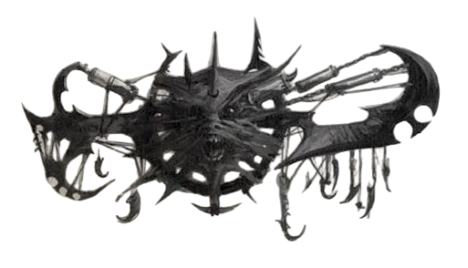
阴影枢纽地域广袤，从骸骨尖塔的高耸塔楼，到次级层级与边地的幽暗深处，分布着绵延数公里的隧道、舱室与区域。无论探险者行至何处，GM都应当向他们展现两种区域的鲜明对比：一类是黑暗灵族的统治区，融合了异星与人类的设计风格；另一类是黑暗灵族掌控之外的区域，古老腐朽的走廊逐渐变为被尘土碎屑堵塞的舱室，往往已经数百年无人踏足。在冒险进行期间及冒险结束后，每当探险者穿行阴影枢纽时，GM都可以通过表0-1：阴影枢纽遭遇表获取遭遇灵感。
表0-1：阴影枢纽遭遇表
| 1d100掷骰 | 遭遇 |
|---|---|
| 01–12 | 活跃防御系统 |
| 13–18 | 异形拾荒者 |
| 19–24 | 伏击 |
| 25–27 | 血坑 |
| 28–41 | 黑暗灵族巡逻队 |
| 42–45 | 黑暗灵族猎手 |
| 46–50 | 失修区域 |
| 51–58 | 精英黑暗灵族巡逻队 |
| 59–64 | 精英巫灵小队 |
| 65–69 | 逃脱的野兽 |
| 70–73 | 逃脱的奴隶 |
| 74–79 | 被遗忘的防御系统 |
| 80–82 | 高贵访客 |
| 83–88 | 边地掠食者 |
| 89–92 | 辐射区 |
| 93–00 | 巫灵狩猎队 |
盖兰天球的城市外围布设了大量防入侵防御系统，其中多数至今仍能完美运转。若探险者保持对陷阱的警觉，可通过一次挑战（+0）警觉检定发现它们，并通过一次挑战（+0）技术应用检定将其解除。若探险者未能迅速解除防御系统，它们将以等同于探险者数量的炮塔开火。每座自动化炮塔 BS 30，在被任意一位探险者的攻击命中后停止运作。炮塔使用以下数据：（重型; 90m; –/–/5; 1d10+7 I; Pen 2; Clip 50; Reload 2 Full）
枢纽里满是依靠奴隶贸易残渣和商人丢弃的废品为生的人。探险者会在此遇到一群拾荒者——可以是任何种族，甚至是人类——他们正在次级层级搜寻一切有价值的东西。这些拾荒者对探险者小队构不成真正威胁，一旦遭遇攻击就会狼狈撤退。不过如果探险者愿意和他们打交道，尤其是愿意交易这些不幸者随身携带的“垃圾”，或许就能得到有助于达成目标的信息，比如前往“灵魂掠夺者”的路径。这些拾荒者可能无门无派，也可能是西里萨的手下，正在为冷贸易搜寻工艺品；或是赫纳里斯虚假黎明教派的信徒，在这里进行某种粗糙的仪式（详见次要派系中关于枢纽次要派系的更多信息）。
一群盗贼与匪徒伏击了探险者，意图轻松劫掠——但他们严重低估了目标。这是一群人数为探险者两倍（若探险者等级为4或以上，则为三倍）的渣滓，他们会选择有利位置埋伏，随后发起突袭。这些渣滓是懦夫，若死亡人数过半便会逃走。此类亡命之徒的数据参见《行商浪人》核心规则书第371页“人渣”。
在枢纽的部分区域，黑暗灵族会堆积家奴或是竞技场战死选手的残骸，留待日后处理。玩家角色将会发现这样一处场所——一个堆满尸体的坑洞。GM可以借这场遭遇引入NPC，比如掩埋在尸体堆中尚存一息的奴隶，也可以借此提供线索——某具尸体上的物品能帮助探险者在阴影枢纽中找到正确路径。此外，当探险者发现这片屠杀现场后，GM应当要求每位探险者进行一次恐惧检定（恐惧1）。
一队裂爪阴谋团武士正在为执政官巡逻某区域，或正前往城市另一部分。巡逻队中阴谋团武士的数量应为探险者的两倍；若探险者等级为4或以上，则为三倍。对于特别强大的探险者小队，GM可为巡逻队增加重武器与载具。这些黑暗灵族对探险者并非天生敌对——除非他们已被告知要搜索这样的群体，但他们会质疑任何异形在枢纽中的存在。探险者必须通过一次普通（+10）魅力、欺诈或胡诌（Blather）检定以规避巡逻队的审视，否则须进行一次对抗黑暗灵族警觉的无声移动（Silent Move）或隐蔽（Concealment）检定以避免被发现。若探险者任一检定失败超过3个等级，阴谋团武士便会开火。
黑暗灵族有时会冒险越过城市边界寻求娱乐——追捕逃脱的奴隶，或在天球的防御系统中试炼技艺。这是一队裂爪阴谋团武士或枯刃斗教巫灵，人数与探险者相等，并伴有两只用于狩猎的奇美拉。这些黑暗灵族对探险者并非天生敌对——除非他们已被告知要搜索这样的群体，但他们会质疑任何异形在枢纽中的存在。探险者必须通过一次困难（–10）魅力、欺诈或胡诌检定以规避巡逻队的审视，否则须进行一次对抗黑暗灵族警觉的无声移动或隐蔽检定以避免被发现。若探险者任一检定失败超过3个等级，黑暗灵族或其野兽便会攻击。
探险者遭遇天球受损且黑暗灵族从未修复的区域。可能是坍塌的地板或天花板、卡住的门，或堵塞隧道的巨大碎屑堆。若时间充裕，探险者通常能够自行穿过这些区域。然而，若他们在被追捕或时间紧迫，这可能成为重大障碍。要在时限内通过障碍，每位探险者须通过一次挑战（+0）攀爬、扭曲身形（Contortionist）或杂技检定以设法通过，或一名拥有适当装备的探险者须通过一次常规（+20）爆破检定以炸开碎屑或相邻墙壁（不过，爆炸显然会产生大量噪音）。
探险者遭遇一队裂爪阴谋团真生子，正在为执政官巡逻某区域或前往城市另一部分，是否立即攻击取决于探险者的行动。真生子的人数应与探险者相等；若探险者等级为5或以上，则为两倍。对于特别强大的探险者小队，GM可为小队增加额外的重武器与载具。这些黑暗灵族对探险者并非天生敌对——除非他们已被告知要搜索这样的群体，但他们会质疑任何异形在枢纽中的存在。探险者必须通过一次艰难（–20）魅力、欺诈或胡诌检定以规避巡逻队的审视，否则须进行一次对抗黑暗灵族警觉的无声移动或隐蔽检定以避免被发现。若探险者任一检定失败超过3个等级，暴力随即爆发。
道路被一队枯刃斗教血新娘阻挡，是否立即攻击取决于探险者的行动。血新娘的人数应与探险者相等；若探险者等级为5或以上，则为两倍。对于特别强大的探险者小队，GM可为小队增加额外的特殊武器。这些黑暗灵族对探险者并非天生敌对——除非他们已被告知要搜索这样的群体，但他们会质疑任何异形在枢纽中的存在。探险者必须通过一次艰难（–20）魅力、欺诈或胡诌检定以规避巡逻队的审视，否则须进行一次对抗黑暗灵族警觉的无声移动或隐蔽检定以避免被发现。若探险者任一检定失败超过3个等级，巫灵便会攻击。
一只或数只从笼中逃脱或被释放的生物正在次级层级的隧道中游荡。此遭遇可包含一只奇美拉；若探险者等级为3或更高，则为每位探险者分配一只奇美拉。
探险者遭遇3d10名逃脱的奴隶（使用受折磨人类的数据），他们一直躲藏求生。因为害怕被发现，他们愿意竭尽所能帮助玩家角色——前提是不被出卖——用自己知晓的关于阴影枢纽与黑暗灵族的零散信息换取自由。此外，探险者也可以选择利用这些奴隶博取黑暗灵族的好感，将他们送回原主人手中接受惩罚。但奴隶们几乎不可能自愿回到满是折磨的生活中去。
在枢纽内部，有些区域因战斗而损坏了天球的古老防御系统，但这些系统仍有足够的功能对过路人构成临时威胁。这些武器通常散落在明显发生过冲突的遗址周围，若探险者进入区域时通过一次挑战（+20）警觉检定，便能发现它们。不幸的是，鉴于这些炮塔已遭受的损伤，解除它们需要一次艰巨（–40）技术应用检定。若探险者检定失败，或在触发炮塔注意后逗留过久，它们将以等同于探险者数量的炮塔开火。每座自动化炮塔BS为25，在被探险者攻击命中或在1d5轮后停止运作。炮塔使用以下数据：（重型; 90m; –/–/5; 1d10+7 I; Pen 2; Clip 50; Reload 2 Full; 不可靠）
这是一队前来与黑暗灵族开展贸易的人类或异形使团。他们大概率不愿和被黑暗灵族追捕的探险者扯上关系，但玩家角色可以将他们用作掩护，或是劫持为人质。如果使团成员是人类，GM可借此将来自科洛努斯扩区或卡利西斯星区的NPC引入剧情，也可以将他们和队伍此前打过交道的帝国组织建立关联。另外，如果GM还没有为这种场合提前准备好NPC，也可以让西里萨或赫纳里斯参与这次会面。
比那些逃出竞技场的野兽更危险的，是永久栖息在枢纽之外或之下的生物。这些恐怖之物形态各异，GM可使用奇美拉的数据来代表，并将WS、S和T各+20，承伤 + 10以体现其野化状态；或使用自行选择的生物。
天球中有许多区域对生命有毒，甚至进入本身便十分危险。当探险者到达此区域时，他们会意识到高强度的辐射（虚空服指示器或灵能探测器会发出警报）。穿越此类区域每小时需通过一次困难（–10）坚韧检定，以抵抗获得一级疲劳——这种疲劳只能通过医疗处理与仪式净化来消除。净化过程需要一次普通（+10）医疗检定，并在辐射区外至少停留一整天。因此类疲劳而陷入昏迷的角色将屈服于辐射并死亡。
探险者遭遇一队黑暗灵族巫灵，在城市深处掠行，是否立即攻击取决于探险者的行动。这些黑暗灵族对探险者并非天生敌对——除非他们已被告知要搜索这样的群体，但他们会质疑任何异形在枢纽中的存在。探险者必须通过一次困难（–10）魅力、欺诈或胡诌检定以规避巡逻队的审视，否则须进行一次对抗黑暗灵族警觉的无声移动或隐蔽检定以避免被发现。若探险者任一检定失败超过3个等级，，巫灵便会立即发起敌对行动。巡逻队中巫灵的数量为探险者的两倍；若探险者等级为4或以上，则为三倍。对于特别强大的探险者小队，GM可增加额外的异种武器。
为了避免在总目录上剧透模组，仅在此放上模组的更详细目录。
“他们是悬于我们银河的灾祸，是所有异形敌人中最卑鄙、最施虐成性的一支，对任何在虚空中追求利益与财富之人都是莫大的威胁。无论发生什么，若他们的舰船阴影遮蔽了你的航路，祈求你死在战斗中的舰桥之上吧——以免‘幸运’眷顾你，让他们把你活着带走……”
——多莫斯·阿涅莱恩机械神甫，勘探者
黑暗灵族是科洛努斯扩区的一场瘟疫；劫掠者、捕奴者、海盗，甚至行商浪人都饱受其荆棘鞭挞与锋刃之苦。任何穿越巨口、航行于科洛努斯扩区虚空的人，都学会了恐惧那些舰船邪异的剪影，以及他们对一切生命——包括他们自己——那似乎永无止境的残忍。唯有警惕与火力才能将这群可怕劫掠者最恶劣的暴行拒之门外——然而从落脚港的巢穴到流浪港的商业大厅，流传着无数关于船员失踪、舰船在他们的突袭中惨遭蹂躏的故事。在卡利西斯星区内，帝国海军保护着亚空间航路和星区世界免受最严重的劫掠侵害——尽管一些前哨和孤舰仍然会消失在这些污秽异形的手中，但大多数公民睡得安稳，甚至从未知晓有这样一支堕落的种族徘徊于头顶的群星之间。
在科洛努斯扩区则截然不同——这片无法之地既没有一支能够守卫未知荒原的舰队，也没有一个紧密控制的、可以在危难时相互呼应的世界网络。扩区是黑暗灵族的游乐场，在那里，他们与无数其他异形威胁一起，几乎可以肆无忌惮地劫掠世界、夺取舰船，然后悄无声息地消失在来时的黑夜之中。黑暗灵族的力量因一个事实而更加深不可测——没有人确切知道他们来自何处、去往何方，也无法解释这些异形那不可思议的能力：凭空出现，然后带着掠夺来的货物和奴隶同样迅速地消失无踪。一些行商浪人相信，扩区的某个地方一定存在着一个黑暗灵族世界，他们从那里发动劫掠——但它究竟在何处，又是如何躲过如此长时间的探测，这依然是一个尚未解开的谜团。
《灵魂掠夺者》是一部由三部分组成的冒险，聚焦于扩区的黑暗灵族及其领袖之间的权力斗争。它将探险者们带入一场宏伟征程，深入网道深处的一座黑暗灵族城市心脏地带——在那里，他们必须执行一场大胆的盗窃行动，窃取一件拥有古老而巨大力量的工艺品，在此过程中提升盟友的地位、推翻敌人。这场冒险使探险者们与黑暗灵族及其扭曲的行事方式直接接触，让他们同时体验到与如此危险的异形缔结契约和交易所需承担的风险与可获的利润。这还让他们有机会在黑暗灵族庞大的贸易网络（主要经营奴隶贸易）中分得一杯羹——该网络遍布科洛努斯扩区、卡利西斯星区以及更远的地方，为那些不被严格道德所束缚的人许诺了巨额利润。然而，完成这样一项征程绝非易事——正如探险者们将发现的那样，黑暗灵族作为盟友时与作为敌人时一样阴险狡诈。
本次冒险发生在科洛努斯扩区及灵族网道的废墟之中。冒险的核心舞台是一座名为“阴影枢纽”的黑暗灵族城市——它坐落于网道中一个巨大的人造小行星之上，已成为数十个异形种族与黑暗灵族自身之间的贸易中心。由于冒险大部分发生在阴影枢纽，游戏主持人几乎可以将其设定在任何地方，而不必局限于科洛努斯扩区。若主持人愿意，他可以让玩家从另一个入口进入网道，或从星区、星域乃至银河系其他位置发现通往阴影枢纽的路径。《灵魂掠夺者》将阴影枢纽呈现为一个完整设定，使主持人能够在本冒险之外继续使用它——尤其是当探险者们取得成功之后，他们可以再次回到其阴影笼罩的街道和黑暗尖塔之间，与黑暗灵族进行贸易和往来。
本冒险的三个部分构成了一项宏伟征程，为主持人提供了一个衡量探险者们进程与成功的框架——当他们深入阴影枢纽、应对黑暗灵族的阴谋与诡计之时。这项征程可根据主持人的需求进行调整，既可拆分为更小的段落，也可根据探险者的行动以新目标加以扩充。宏伟征程各项目标的详细分解见本冒险每一章的末尾。
本冒险中穿插了众多主持人指导边栏，为主持人提供建议和进一步细节，说明如何进行一场遭遇或应对玩家角色的行动。这些边栏可能会给出遭遇结果的建议和解决方案，或揭示某个事件背后的设计思路，以帮助主持人更好地主持冒险。主持人指导边栏还提供了如何根据主持人所带的探险者团队来调整冒险强度等级的具体细节。鉴于本冒险的开放性以及大量可能的结果和对抗，本冒险没有设定或预设的等级或利润点要求。相反，主持人可以根据玩家角色的能力来调整遭遇的难度。
《灵魂掠夺者》分为三个清晰的章节，每一章都承接前一节的事件。冒险始于探险者们遇见萨莱恩·莫恩——影棘阴谋团的执政官，因昔日同僚的背叛而流亡科摩罗及如今的阴影枢纽。与她结成联盟后，探险者们必须潜入黑暗灵族城市，窃取其权力核心——一艘名为“灵魂掠夺者”的古老异星舰船。不幸的是，萨莱恩的计划有着连她那狡诈的异星头脑也无法预见的缺陷，而她的误算使探险者们付出了自由的代价——他们被俘获并拖入影脊竞技坑，沦为奴隶角斗士。在第二章中，探险者们必须召集竞技坑的奴隶们为己所用，掀起一场全面暴动以图逃脱。最终，在第三章中，探险者们必须穿越饱受战火蹂躏的阴影枢纽，再次抵达灵魂掠夺者，偷走这艘强大的舰船——然后抵御那些企图夺走他们奖品的敌人，与此同时，某种黑暗的智能开始在这艘受诅咒的舰船上苏醒。
第一章：暗影女王
冒险的第一部分涉及探险者们与执政官萨莱恩·莫恩的首次接触，以及他们与她达成的交易细节。缔结这样的联盟并非易事，但探险者们有多种方式可以遇见黑暗灵族，并使双方找到足以合作的有力共同动机。一旦探险者们敲定交易，他们便加入萨莱恩的叛军舰队，在她的计划中占有一席之地——为她夺取阴影枢纽的控制权。该计划的核心是探险者们与萨莱恩潜入城市，从她的头号对手——裂爪阴谋团领袖、阴影枢纽的统治者扎尔加恩·库尔的宫殿中偷走灵魂掠夺者。灵魂掠夺者是一艘以死亡之力本身为燃料的古老异星舰船，是扎尔加恩权力的基石；失去了它，城市的防御将崩溃，萨莱恩与她的叛军舰队便可发动全面入侵。
探险者们必须运用智谋、潜行或武力前往执政官的宫殿——沿途很可能卷入城市众多派系的阴谋与诡计之中。一旦他们抵达执政官宫殿并潜入或强行闯入，就必须开始准备让灵魂掠夺者起航——布设炸药将其从系泊处炸开，以便他们自己的舰船能够钩住它，将其从宫殿中撕裂拖出，带离网道，返回实体空间。然而，事情并未如玩家角色所预期的那样发展。德雷卡鲁斯——名义上受雇于扎尔加恩、实则自真正执政官陨落以来一直在幕后统治其帝国的血伶人——已对他们的渗透有所准备。当他们即将达成目标之时，德雷卡鲁斯出手干预，导致探险者们被监禁奴役，萨莱恩的计划也遭遇重大挫折。
第二章：鲜血、钢铁与沙土
冒险的第二部分讲述探险者们作为枯刃斗教——阴影枢纽第二大派系，亦是裂爪阴谋团的亲密盟友——的奴隶角斗士所经历的磨难。即便身为奴隶，玩家角色们仍有希望见证萨莱恩的计划实现，完成他们征服阴影枢纽的宏伟目标。作为角斗士，他们需要通过赢取斗教周围黑暗社会中的青睐与声望、在竞技场中赢得战斗来逐步走向自由，从而策划逃脱。竞技坑也是一个结交新盟友的地方：被黑暗灵族俘虏、被迫在其无尽的施虐游戏中战斗的人类与异族。连同这些盟友一起，探险者们必须制定赢得自由的计划，收集所需资源与支持。然而，玩家角色们起初单纯的自由诉求很快便升级为一场全面暴动——在探险者们的帮助下，角斗士与奴隶们挣脱枷锁，转而对抗他们邪恶的主人。
第三章：灵魂漩涡
冒险的第三部分始于暴动的烈焰将阴影枢纽点燃。在这场混乱中，探险者们继续他们偷取灵魂掠夺者的使命，从而让萨莱恩的叛军舰队得以入侵阴影枢纽。然而，探险者们并非唯一利用暴动所造成的杀戮与破坏的人——城市中的其他派系也可能会趁此机会攫取权力或清算旧账。贯穿这一切疯狂的是，玩家角色们必须前往执政官宫殿，完成他们未竟的事业。
将灵魂掠夺者撕裂挣脱会带来不可预见的后果——其黑暗能量苏醒，死去的执政官带领被困于灵魂掠夺者中的无数尖叫灵魂军团，向所有对不起他的人以及任何不幸靠近的人发起疯狂报复。最终，探险者们必须在灵魂掠夺者将阴影枢纽烧为灰烬——连同他们承诺的利润一起化为乌有之前，击败执政官扎尔加恩·库尔的回响与灵魂掠夺者本身！
尘埃落定之后，如果探险者们成功了，灵魂掠夺者便再次陷入沉寂，而他们所选择支持的派系（无论是萨莱恩·莫恩、奴隶们，还是他们自己）已赢得了对阴影枢纽的绝对控制。探险者们将因其努力而获得丰厚的回报，以及分得这座城市及其繁荣贸易网络利润的机会。
无论这场宏伟征程最终是否为探险者们带来利润，他们都必须完成伟大的壮举才能在这场冒险中存活下来——而那些关于他们疯狂野心的传说，将在科洛努斯扩区的群星之间久久回响。
“我族之权术，较之汝等人类之‘帝国’，有如君王之野望较之幼童之私求。然而，即便是君王或女王，也会时不时发现自己需要孩童之物……”
——萨莱恩·莫恩，影棘阴谋团执政官
《灵魂掠夺者》的核心是执政官萨莱恩·莫恩夺回阴影枢纽、摧毁其对手以控制这座黑暗灵族前哨站的计划。对主持人而言，这意味着探险者们如何遇见萨莱恩、他们与她的关系、以及他们与她及她的阴谋团所达成的交易类型，都将对剧情及其最终结局产生全局性影响。因此，冒险的第一部分聚焦于玩家角色与萨莱恩的会面、夺回她城市的计划制定，以及探险者们与这位黑暗灵族执政官之间某种协议的达成。主持人随后可利用这一基础来影响冒险的其他方面、萨莱恩及其他重要NPC的反应——更不用说冒险的最终结局以及探险者们可能为自己争取到的任何奖励了。
探险者们有多种方式可以遭遇萨莱恩·莫恩及其阴谋团，主持人应选择一种适合其团队性质、契合其野心与角色愿望的方式——无论他们是被财富需求、复仇渴望还是对帝皇的信仰所驱使。由于萨莱恩是一名异形，而且是危险的异形，某些探险者团队可能难以与她打交道，或难以信任她到足以听她说话的程度——宁愿先开枪，之后再为他们的杰作赞美帝皇。因此，在冒险开始之前，主持人应考虑萨莱恩与团队相遇的最佳方式，以及如何在执政官与探险者们之间培养一定程度的共识（若非真正的信任）——从而让他们帮助她推进计划，由此启动冒险。
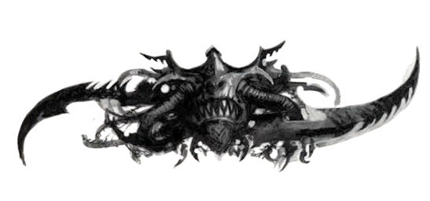
“人类在缺乏夺取所欲之物的力量时才会使用诡计，但灵族——无论他们拥有多大的力量——总是令人恼怒地狡诈。忘记这一点，后果自负。”
——审判官伊萨米拉·提拉斯克
冒险始于探险者们遇见黑暗灵族执政官萨莱恩·莫恩，并与她结成某种联盟或达成交易。此事如何发生、在何处发生，以及探险者们为何会选择与一名异形海盗做任何交易——这很大程度上取决于他们自身的动机。但萨莱恩是一名狡猾的谈判者，并被对对手的深切复仇欲望所驱使。当她认定探险者们就是能帮她得到所求之物的人时，她会确保他们最终接受她的思维方式。
以下列出了探险者们可能与萨莱恩接触的多种不同方式，以及她可能向玩家角色提出的交易与条件。为帮助主持人决定其玩家与萨莱恩产生牵连的最佳方式，这些不同的可能性被分为两类：遭遇黑暗灵族的途径，以及萨莱恩试图利用的动机类型——以让探险者们帮助她实施计划。主持人应在冒险开始前考虑每一种遭遇和动机，选择最适合其团队的那些。他还可以将它们作为整体引入黑暗灵族的灵感来源，视需要加以修改以适合其战役需求，或将他自己现有的NPC融入其中。
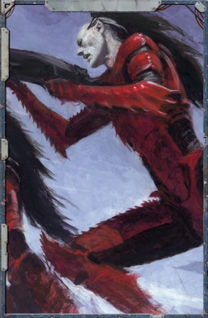
黑暗遭遇科洛努斯扩区是一片广阔而危险的地域，在探险者们的旅行中，他们有多种方式可能遭遇萨莱恩。她可能在听闻他们的威名后主动策划与玩家角色的会面，或者其他人可能将这位行商浪人及其舰船出卖给执政官。以下几种具体的遭遇可用于将探险者们引入萨莱恩的阴谋：
异常遭遇
在从亚空间脱离跃迁后不久，探险者们的舰船被困入一处天体异常现象中——那看起来像虚空中一个旋转的光之井。多艘其他舰船也被此现象捕获，同样被锁定在围绕它的轨道上。这其中便包括萨莱恩·莫恩的舰船——一艘黑暗灵族酷刑级巡洋舰 “痛苦承诺号”（酷刑级巡洋舰）。主持人在此类场景中必须始终小心，决不能让萨莱恩真正任由探险者们摆布；她身边总有战士随行，且她似乎从未像探险者们那样真正受困于局面——尽管其中相当一部分源自她天生的自信（见“扮演萨莱恩·莫恩”边栏）。萨莱恩主动提出协助逃离这一现象；她拥有解救两艘舰船所需的知识。不幸的是，还有数艘海盗舰船也被困在该异常的引力牵引中——他们正盼望着劫掠新进入这座牢笼的舰船。探险者们必须与萨莱恩合作，瘫痪这些舰船（通过登舰行动、舰对舰战斗，或两者结合），以便从每艘海盗船上偷取一个关键组件——萨莱恩实施逃脱计划所需之物。这些海盗舰船使用《行商浪人》核心规则书第194页的 “薄暮级私掠船” 属性表。
如果主持人愿意，甚至可以设定萨莱恩策划了迫使探险者们依赖她帮助才能逃脱的整个局面。也许是她将他们的舰船引诱进了异常之中，并且尽管表面上身陷困境，她始终掌握着事态的发展。如果主持人确实选择让萨莱恩在幕后制造了探险者们的麻烦，那么他应确保她的双重欺骗在冒险的后期才显露出来——而非让探险者们有机会过早发现自己被愚弄，从而转向对付执政官，断送他们到达阴影枢纽的一切可能。
萨莱恩会在探险者们脱离异常或被送回舰船之前与他们达成交易，以确保他们明白她是在帮他们一个忙，并期望得到相应的回报。虽然探险者们可能出于纯粹的善意帮助执政官，但萨莱恩并不那么信任他人，也没有那么天真——她会确保在给予帮助之前让他们明白代价。不过，主持人不必觉得需要强行推动此事。如果探险者们愿意与萨莱恩合作，或至少听听她能提供什么，主持人只需在他们开始打退堂鼓时提醒他们任何已达成之协议即可。一旦萨莱恩获得了探险者们的倾听，她便通过向他们提出条件来敲定交易（见“黑暗欲望”边栏，其中列举了她可能用来激励他们的若干方法与诱惑）。
恶名远扬
每一位行商浪人都背负着或好或坏的名声——这名声如舰船的亚空间尾迹般如影随形，所过之处无远弗届。这种名声的波及范围远超许多行商浪人自身的认知，也会落入最意想不到的耳中。无论出于何种原因，萨莱恩·莫恩已听闻了探险者们及其事迹，并认定他们正是她夺回阴影枢纽所需要的那类人。这或许是因为，在科洛努斯扩区的所有居民中，萨莱恩认为玩家角色恰好适合这项任务——他们过往的成就及与他人打交道的秉性意味着，他们兼具对其事业的潜在同情心与完成它所需之技能的组合。同样可能的是，在她的叛军舰队所有成员之中，她仍然既缺少一艘舰船，也缺少一队能够击破阴影枢纽防御并将灵魂掠夺者撕裂拖出的船员——而探险者们只是手边最近的可能来协助她的舰船。无论原因为何，萨莱恩都试图安排与探险者们的会面，以尝试与他们达成交易。
萨莱恩对探险者们同样心存戒慎，正如他们很可能对她感到不安一样——她希望在见面之前先评估她潜在盟友的实力。因此，她派遣了一名人类中间人——斯卡拉格·埃吉尔，她叛军舰队中的一名海盗船长——在探险者们停靠于合适港口时，带着一份神秘的提议接近他们。斯卡拉格邀请他们前往当地一家鱼龙混杂的场所，以确认他们是否适合这项任务。探险者们有机会给斯卡拉格留下深刻印象——他们可以通过一次挑战（+0）的魅力检定以言辞赢得他的好感，或通过一次艰巨（–40）的狂饮检定以其他方式证明自己的胆色。若他们在其中一项检定上成功，探险者们便说服了斯卡拉格，证明了自己的价值。若失败，他则坚持要先视察他们的舰船——探险者们必须以适当方式向他展示舰船的力量。一旦斯卡拉格被说服——无论以何种方式——他便带他们去见萨莱恩，讨论这项工作的具体细节。斯卡拉格不会主动透露萨莱恩是一名黑暗灵族执政官，但如果探险者们获得他的好感后问起，他也不会刻意隐瞒。
主持人还可以利用这种引入方式，将《灵魂掠夺者》中的征程与另一场冒险联系起来。也许探险者们之前的某次征程实际上就是萨莱恩交给他们的任务（在这种情况下，她可能会更直接地接近他们）。或者，她可能派遣像斯卡拉格这样的中间人在探险者们完成一项短期征程时观察他们（该征程可由主持人和探险者们共同创建，或完全是另一场冒险的一部分）。在该冒险结束时，中间人便告诉探险者们，有一位感兴趣的势力观察到了他们的技艺，并希望与他们见面。
血之兄弟
探险者们与萨莱恩的遭遇可能完全与执政官的阴谋计划无关。主持人可以利用一名现有的NPC——无论是盟友还是对手——将玩家角色引入叛军舰队，然后才让他们与萨莱恩会面。数年来，这位执政官一直在集结力量以夺回阴影枢纽——起初招募黑暗灵族盟友，当这些来源枯竭后便将目光投向更远的地方。由于在与将她逐出阴影枢纽的裂爪阴谋团交战之后，她自己的阴谋团仍然元气大伤，她需要部队和舰船来实现她的计划。数年来，她一直在操控和招募来自扩区各地的海盗与叛军——只挑选那些足够强大、能为其计划所用之人。尽管这些舰船和船长中有许多几乎配不上这一名号——不过是嗜血的异形和追求利润的堕落人类——但一些强大的个体可能已察觉到这场联盟中蕴藏的真正财富潜力。
与探险者们有联系的这位NPC便是这样的个体——他连同他的舰船（自己的或以其他方式获得的）一同加入了执政官的阵营。他向玩家角色发出邀请——也许是作为回报人情——将他们带入他所认为的获取巨大财富的机遇之中。如果他是一名对手，则这可能是某种微妙的计策——旨在让探险者们置身于进攻阴影枢纽的先头部队中，并期望他们在战斗中陨落时夺取其王朝。这位NPC几乎可以是探险者们此前接触过的任何人——不过他应当是探险者们信任之人，或是一位拥有相当权势的人物（如另一位行商浪人），其邀请更难以拒绝。
一旦探险者们加入叛军舰队并与萨莱恩首次会面，她便会立刻认识到他们在其计划中的潜力，并向他们提出有利的条件。她还视他们为发起进攻所需之最后一块拼图，随即推动其计划付诸行动。主持人随后既可以让将探险者们带到萨莱恩面前的那位NPC淡出背景，也可以——更有趣地——随着冒险的推进，利用他使事态复杂化。当然，如果这位NPC是另一位行商浪人，他很可能坚持要参与偷取灵魂掠夺者的计划，并试图在探险者们渗透阴影枢纽时加入他们。这可能导致各种复杂局面——尤其是当这位NPC亲眼目睹现任执政阴谋团的力量后，选择倒向裂爪阴谋团一方时。
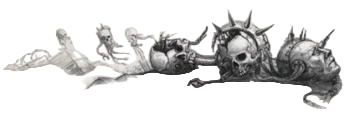
威胁与条约
虽然萨莱恩更倾向于以财富和权力的许诺来引诱探险者们结盟，但在某些情况下，她可能会决定通过胁迫来获取他们的帮助。主持人只应在与黑暗灵族结盟完全违背团队动机的情况下才考虑这条路径。例如，如果探险者们与国教或审判庭的净化派系关系密切，他们可能永远不会自愿为异形工作——尤其不会为像黑暗灵族执政官这样危险而令人厌恶的存在。在这种情况下，主持人可以设置一种局面，使玩家们必须执行执政官的命令——因为这代表了两害相权取其轻。
胁迫手段应足以促使探险者们采取行动，但也不应简单地激起他们直接攻击萨莱恩。没有哪个玩家群体喜欢被命令做事，或感到自己无力改变命运——因此主持人应尽力设计一种局面，让他们相信执行萨莱恩的命令将为他们带来机会——既实现自身切实的目标，或成就更大的善举。主持人可以通过多种方式实现这一点：萨莱恩可能知晓探险者们所丢失的某件贵重物品的下落，并拒绝透露——直到他们偷取了灵魂掠夺者。这应当是对他们具有巨大价值之物（例如他们的贸易特许状、失落的挚爱，或圣德鲁苏斯的圣物），且没有执政官的帮助他们基本上无法获得。她也可以暗示裂爪阴谋团即将对他们的一颗世界发动攻击——这将威胁到他们的利润点——但同样在探险者们协助她之前保留关键信息。无论是什么，主持人都应维持这样一种印象：如果探险者们前往阴影枢纽并试图偷取灵魂掠夺者，他们最终将有机会既得到自己想要之物，又向萨莱恩报一箭之仇——为她操纵之仇。特别狂热的探险者们也可能被摧毁阴影枢纽——或至少破坏黑暗灵族贸易网络——的机会所诱惑。
机神之泪
机械教长期以来一直对盖兰天球抱有浓厚兴趣，数个世纪以来多次派遣探索者进入科洛努斯扩区寻找它。其中最近的一次是多莫斯·阿涅莱恩机械神甫——他虽然找到了失落已久的天球的位置，但也落入了居住其上的黑暗灵族之手，被奴役为奴。多莫斯的远征距今尚不算太久远，在卡利西斯星区的机械教中仍留有人们的记忆——在拉斯世界及其他地方，仍有众多机械神甫对他的失踪感到疑惑。主持人可以利用这一情节线索，将探险者们引向与萨莱恩的会面及渗透阴影枢纽的联盟——无论是作为执政官叛军舰队的正式成员，还是作为机械教营救多莫斯并定位盖兰天球任务的一部分。
主持人可以从探险者们收到来自机械教前往拉斯世界的邀请开始，然后与卡利西斯机械教的高层成员会面。探险者们随后需要追寻线索，拼凑出多莫斯离开卡利西斯星区进入扩区时所留下的踪迹——这需要在机械教世界进行一次挑战（+0）的调查检定，或通过多莫斯的日志进行一次困难（–10）的逻辑检定，然后进行一次艰难（–20）的导航检定以实际抵达他所知的最后一个目的地（不过如果探险者们在前两次检定中均获成功，则此检定获得+20加值）。这些检定可视需要重复进行，但探险者们在每次失败后应遭遇复杂情况、阻力或其他阻碍。
使用这种引入方式的好处在于，它允许主持人在玩家角色抵达阴影枢纽之前便介绍关于天球的信息，并使玩家们在最终见到多莫斯时对他更具同情心。它还可以独立展开为一场冒险，并且是将当前设在卡利西斯星区或其附近的战役转入科洛努斯扩区的良好过渡方式。
一旦探险者们沿着踪迹进入扩区，他们便会遭遇萨莱恩——要么是偶然发现了叛军舰队的所在地，要么是在开始过多地打听盖兰天球相关问题时引起了她的注意。从这时起，事情便可根据探险者们的性质向前发展——可能导致他们改变计划（放弃寻找多莫斯，转而通过与执政官结盟寻求利润），或利用此类联盟作为营救失落机械神甫的手段。这条路径对于不愿与异形合作的团队也可能很有用，因为营救失落的机械神甫对于效忠帝皇或万机神的信徒而言是一个值得称道的目标——而萨莱恩的存在及其阴谋则是实现这一目标所必需的“必要之恶”。其他NPC——无论是来自探险者们自身的历史，还是来自被困于阴影枢纽上并在本书中描述的那些——都可以代替多莫斯，作为启动冒险的类似推动力。
黑暗欲望
萨莱恩·莫恩曾与数十个异形种族打过交道——包括人类——并且对什么能够驱使这类生物有着敏锐的理解，即便她并不总能理解其中缘由。她向探险者们提供恰到好处的诱饵，以让他们去做她想让他们做的事——无论她是否真的打算兑现。
血钱
引诱探险者们与萨莱恩达成交易的最直接方式便是利润。通过夺取阴影枢纽并摧毁裂爪阴谋团，萨莱恩将能够向玩家角色提供数额可观的财富（前提是他们对财富的来源不太挑剔）。对许多船员而言，这大概已经足够了，她无需再多做些什么——即便她确实需要以不同方式说服他们帮助她，金钱仍然可能是任何交易的一部分。具体数额及财富形式由主持人决定（关于窃取灵魂掠夺者及帮助萨莱恩夺取权力所带来的利润点奖励，更多指导请参见后文的“利润与成就”），不过它很可能根植于阴影枢纽利润丰厚的奴隶贸易之中。
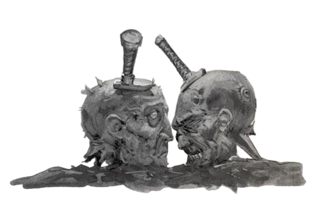
主持人指导：扮演萨莱恩·莫恩
执政官萨莱恩·莫恩是贯穿本冒险的重要NPC，她如何对待探险者们——以及探险者们如何对待她——将对事件的发展产生重大影响。扮演萨莱恩时，需记住的关键在于：她是一名异形，来自一个自我中心且施虐成性的种族，该种族与人类几乎没有任何共同道德观念。虽然可以相信她不会背叛探险者们——除非这直接且毫无疑问地对她自己有利——但她从未将他们视为平等的存在。尽管她需要他们的帮助，但她始终视他们为完成其任务的工具，而非真正的盟友。萨莱恩完全被夺回阴影枢纽控制权、向扎尔加恩·库尔复仇的欲望所吞噬——这始终是她一切动机的核心。她愿意冒险、忍受不适，甚至可能为达成这一目标而表现出一定程度的谦卑——但她不会为此出卖自己的性命。只要探险者们对她有用（在冒险的大部分时间里应当如此），她便会将他们视为有价值的工具——给予恰到好处的尊重与亲切，以让他们顺从她的意志起舞。
在扮演萨莱恩时，主持人应尝试反复提醒探险者们她对他们而言有多么异质——以防他们忘记了自己是与一名黑暗灵族缔结了契约。除了她那人类无法企及的残酷之美与优雅之外，她对人类文化的理解也相当有限。主持人可以利用这一点制造“翻译之失”的时刻——她误解探险者们，或被探险者们所误解。这在涉及道德问题时最为明显，因为萨莱恩认为酷刑、杀戮以及享受他人痛苦并无任何不妥。事实上，许多人类概念——如同情心与怜悯——对她而言是不可理解的；如果探险者们反对奴隶制或冷血谋杀，她甚至可能以为他们在开玩笑。此类文化冲突的插曲有助于强化一个事实：萨莱恩的野心与施虐癖并非如邪恶人类身上的那样是“变态特征”——而是根植于她的常态乃至生理层面。她与所有其他黑暗灵族一样——不仅仅是享受他人的痛苦，而是主动需要痛苦来维系自身。无论这些误解是激起玩家们的兴趣、憎恨还是怜悯，它们都能在战役中提供有趣的扮演机会。
复仇盛宴
所有行商浪人都有仇敌和未了的旧账——无论是针对曾亲身亏待他们的个人或组织，还是几个世纪前曾侮辱其王朝之人。萨莱恩可以在掌控阴影枢纽之后，为完成这份复仇提供协助。凭借其资源，以及复兴后的影棘阴谋团和枯刃斗教的援助，她将能够为行商浪人的事业借出可观的武力或技艺超群的刺客。主持人甚至可以设定她在提出此条件时，已经研究过探险者们及其仇敌，并手头备好了若干名字。如果主持人的战役中有一两个一直给探险者们制造麻烦的NPC，那么以刺杀这些个体或摧毁其权力基础作为交换，可能比单纯的金钱更具吸引力。当然，一旦萨莱恩掌控了阴影枢纽并派出了刺客，接下来会发生什么便由主持人决定了——甚至可能独立成一场冒险。
禁忌科技
黑暗灵族在技术的使用和理解上，不像帝国及其公民普遍偏狭的观念那样受到相同的限制。主持人可以利用获取强大异星科技（无论是个人武器、虚空舰组件，还是其他东西）的机会来收买探险者们采取行动——如果单纯的金钱财富显得太空洞的话。如果主持人愿意，这可以成为将科技引入其战役，或强化探险者们舰船的好方法——而且与所有经异形之手触及的事物一样，它也伴随着自身的一系列问题与冒险可能。如果主持人选择如此，他甚至可以向探险者们提供他们否则永远无法获得的东西——例如一艘可运作的黑暗灵族载具或舰船——让他们可以将其纳入王朝，并在未来的征程中使用。然而，即便拥有此类装置——更不用说使用了——也是被严令禁止的行为，探险者们应当被警告不要将其带入帝国空间。
未知世界
萨莱恩曾在科洛努斯扩区及更远的地方广泛游历，到过许多人族舰船从未见过的所在。在此期间，她收集了数百份星图及通过网道的秘密路线。如果探险者们对财富不太在意，或不愿从阴影枢纽的奴隶贸易中获利，她可能会向他们提供其中一些星图。这些星图显示什么、通往何处，由主持人决定——但它们可能标记出众多尚未定居、值得开发的世界，或古老而被人遗忘的宝藏所在地。这些星图也可能揭示扩区内网道的奥秘——配合适当的灵族科技与地图，甚至可能让探险者们利用网道抵达某些遥远的目的地，缩短航行时间，甚至减少他们暴露于亚空间的风险（以及由此带来的危险）。
执政官萨莱恩·莫恩已聚集了一支由黑暗灵族、异形雇佣兵和人类海盗组成的小型军队，以协助她夺回阴影枢纽。这支舰队的规模与组成由主持人决定，可大可小。舰队的目的是赋予萨莱恩足以对抗裂爪阴谋团的力量，并在最后一章中她的舰队与防御阴影枢纽的部队交锋时，呈现一场盛大的战斗。这也使萨莱恩在与玩家角色打交道时更具存在感与权势，同时也让她自己的阴谋团显得势力削弱、艰难求存。这支叛军舰队应是一支杂牌部队——由各式舰船与船员组成，其成员可来自科洛努斯扩区或更远地域的几乎任何住民。主持人还可以利用舰队重新引入那些可能在其战役早期出现过的种族或NPC，或那些他希望在日后用作进一步冒险情节线索的种族或NPC。然而，探险者们应在舰队中脱颖而出——作为拥有权势与资源的重要人物（毕竟，这正是萨莱恩选择他们渗透阴影枢纽的原因），拥有最令人印象深刻的舰船和最精锐的船员。
叛军舰队
一旦玩家角色与萨莱恩结识（通过上述一种或多种方式），她便邀请他们参加其盟友的议事会议（包括她阴谋团的残余力量以及她所聚集的海盗与叛军舰队），并告诉他们她夺回被如此卑劣地夺走的城市的计划。主持人可以让这次首次会面以多种方式进行——取决于玩家角色们是如何加入黑暗灵族舰队的——不过萨莱恩会试图留下令人难忘的第一印象，并在这次会面中展示她的力量：通过对舰队的绝对支配，以及展示她应当统治阴影枢纽的理由。因此，这次会议很可能在她的舰船 “永恒折磨号” 上的觐见厅中举行。当玩家角色首次被她的护卫带进这些厅室时，主持人可以朗读或转述以下内容：
你们被戴着面具的异形护卫引领进一座巨大的拱顶厅室，他们手中弯曲凶残的能量长戟和黑色无情之眼仔细追迹着你们的一举一动。在阴影与寒冷坚硬星辰构成的巨大穹顶之下，一位体态柔韧的异形军阀端坐于荆棘与利刃构成的王座之上——她幽灵般苍白的皮肤与优雅的美貌，与她周围地板上和墙壁上装饰着的扭曲受难面孔雕刻形成鲜明对比。两侧伫立着两名高大、披甲的护卫，她以威严的目光俯视着你们与周围之人；环顾觐见厅，你可以看到其他船长和舰主在执政官面前三五成群地聚集——同样对黑暗灵族的存在感到不安，但仍准备与这个女人及其种族结盟，以换取利润、荣耀与巨大奖赏的机会。
在首次与萨莱恩的正式会面中，主持人应与探险者们确立交易的基本条款，在他们与执政官之间订立契约。利用上述提到的动机与奖励，主持人应确保探险者们离开时，明白他们为何要帮助黑暗灵族（他们将从这笔交易中得到什么、如何得到），以及他们需要为萨莱恩做什么——作为她夺回阴影枢纽欲求的一部分。因此，只要能达到这一目的，这次会面可根据主持人的意愿可长可短。
除了确立探险者们与萨莱恩的契约之外，主持人还可以利用这次会面向玩家们提供关于萨莱恩及阴影枢纽的一些背景故事——这些内容涵盖于 “哀恸往事” 之中。主持人不必觉得需要立即将整个故事告诉玩家们，但可以使用其中任何部分或全部，让探险者们了解他们将涉足的是什么，并促成他们与执政官之间某种程度的相互理解。作为结盟的一部分，萨莱恩还会揭示她夺回阴影枢纽的计划，以及她希望探险者们在这一黑暗设计中扮演的角色。详情见下文的“计划”。
哀恸往事
影棘阴谋团的执政官萨莱恩·莫恩在数十年前因在族人中失宠而被逐出科摩罗，被迫流亡。她花了多年时间在网道和虚空中漂泊，为她的阴谋团寻找新的家园。最终，她发现了一颗古老的人造卫星（一件在漫长岁月中失落的人类造物，被称为盖兰天球），它部分被困在网道之中。她无法独自攻克这颗卫星的防御，即便攻克后也无法抵御攻击——因此她与裂爪阴谋团及其执政官扎尔加恩·库尔结盟。两位执政官共同夺取了这颗卫星，将其命名为 “阴影枢纽” ，并建立了一个强大的基地，用以劫掠科洛努斯扩区、卡利西斯星区和尖啸漩涡周边区域的住民，并与之进行贸易。
然而，像任何有志于攀登执政官高位的黑暗灵族一样，萨莱恩并不满足于分享她的战利品——她试图将扎尔加恩的阴谋团吞并进自己的势力。她的计划之一，是邀请枯刃斗教加入执政官们对阴影枢纽的管理——借口是该斗教将带来更多奴隶，并帮助组织竞技比赛以吸引更多商人和盟友。与枯刃斗教联手后，萨莱恩开始积蓄力量，以对抗并摧毁扎尔加恩。扎尔加恩本人也并未闲着——他知道萨莱恩终有一天会对他动手，或者他可能已准备好对她动手——于是开始修复和激活天球上强大的防御塔网络，表面上是为了保护阴影枢纽免受劫掠者的侵袭（尖啸漩涡来的掠夺者从不缺乏），但同时也为了让自己能够控制所有进出阴影枢纽的舰船。
这种力量的积累本可能持续多年——双方相互进行小规模攻击——若非某样东西进入了阴影枢纽，改变了一切。在寻求盟友以对抗萨莱恩的过程中，扎尔加恩与各种异形和虚空生物打交道，交易从奴隶到秘密的一切。其中一笔交易来自一个斯特里克斯商人——他带来了一个消息：在光晕群星之外遥远的地方，某样东西正处于沉睡之中——那是一艘异星舰船的残骸，设计优美、年代古老到无法估量，在孤独的千年中已被腐蚀腐化，但仍然蕴藏着力量。其核心处有一台装置，镶嵌着数千枚微微发光的石头，散发着令人生畏的力量。扎尔加恩在将其取回后立即认出了这艘古舰，并将其安放在其宫殿的中心。
凭借灵魂掠夺者，扎尔加恩能够引导在阴影枢纽内部或附近发生的每一次死亡所释放的能量，并将其转化为供其阴谋团使用的原始力量——更重要的是，为他一直在建设的防御网络供能。对此进展毫不知情的萨莱恩采取了行动——她命令舰队攻击裂爪阴谋团，以为两位执政官仍共同控制着防御网络。她还采取了进一步预防措施，派其精锐士兵瘫痪为网络供能的发电机。她与枯刃斗教结盟，并作为最后的手段，派遣一名邪恶的曼德拉潜入扎尔加恩的宫殿刺杀他。
然而，不知何故，尽管她对对手执政官发动了全方位周密的攻击，计划仍然在她周围崩塌。当萨莱恩发起攻击时，她的副手和斗教盟友告诉她已处于非活跃状态的防御塔突然激活，在她的舰队中撕开了一条血路。更糟的是，扎尔加恩似乎以某种方式在她的刺客手中存活了下来——通过血伶人德雷卡鲁斯下达命令。当精密的计划土崩瓦解时，枯刃斗教选择倒戈，与裂爪阴谋团进行了谈判，然后退回了它们自己所在的城市区域。寡不敌众且无援军到来，萨莱恩被迫撤退，将阴影枢纽的控制权留给了裂爪阴谋团。即便在将残存部队撤回阴影中时，萨莱恩·莫恩也发誓她将归来，夺回阴影枢纽，并施行她痛苦的复仇。
计划
萨莱恩的计划是夺回阴影枢纽并杀死扎尔加恩·库尔——然而只要他控制着灵魂掠夺者，这座城市及其堡垒便近乎坚不可摧。萨莱恩知道，如果她在灵魂掠夺者仍处于激活状态时对城市发动攻击，扎尔加恩不仅可以利用它为防御网络供能，还能增强剃刀之网的输出——她的舰队将难以登陆，更不用说在随后的战斗中获胜了。除了防御网络带来的问题之外，扎尔加恩还可以利用灵魂掠夺者唤醒盖兰天球自身的防御系统，并为其阴谋团的武器供能。更糟的是，正如她在第一次战败后从城中间谍处所探知的那样——萨莱恩的军队被杀得越多，扎尔加恩的部队在保卫城市中死亡得越多，执政官可用于其武器的能量就越多，因为灵魂掠夺者会将死者的精华转化为原始力量。
鉴于灵魂掠夺者的关键重要性，萨莱恩设计了一个计划，在发动攻击之前将其从战局中剔除——从而将优势重新拉回自己一方。虽然有可能摧毁灵魂掠夺者，但萨莱恩对此可能产生何种影响一无所知——而且无论如何，她自己也觊觎这件异星工艺品的威力。因此，她想偷走它，将其拖离城市，并在弄清扎尔加恩如何利用它吸收死者之力后，将其转而用于自己的目的。这是一个大胆的计划——它无异于将一艘虚空舰从嵌入扎尔加恩金字塔中心的基座上撕裂出来，拖出城市，然后拖出网道，以确保其与天球的连接被完全切断。一旦灵魂掠夺者被移除，萨莱恩的舰队便可发动攻击——当然，它仍须与裂爪阴谋团的虚空舰交战，但凭借出其不意，胜利将触手可及。
为实现这一目标，萨莱恩告诉探险者们，他们需要渗透进入阴影枢纽，找到进入执政官宫殿的方法。灵魂掠夺者矗立于宫殿的中心——其舰体固定在高耸于金字塔周围的塔楼之间，这些塔楼构成了执政官宫殿的核心。必须在该舰船的底部和侧翼周围布设炸药，以摧毁将其固定于原位的支撑结构和通道网络，并将其从为剃刀之网供能的网格上切断。探险者们还必须进入这艘受诅咒舰船那孤寂的厅堂，在内部放置一台萨莱恩提供的装置——她声称该装置既能干扰舰船可能拥有的任何自动化防御系统，又能为她提供关于灵魂掠夺者的关键信息。萨莱恩以亲身经历警告探险者们，这艘舰船扭曲的走廊和广阔空旷的厅室既难以导航，又令人极度不安——她甚至可能公开质疑探险者们是否适合这项任务，尤其是如果她认为他们需要额外的推动才会同意这次任务时。一旦他们同意，她指示他们在一个主厅室中寻找一个镶嵌宝石的基座——所有通道最终都应通向那里——并将装置放置其上。
一旦装置和炸药就位，探险者们的舰船必须冲向宫殿，穿过执政官的防御，将巨大的拖缆钩上灵魂掠夺者的舰首。然后必须将舰船撕裂挣脱并拖走——使裂爪阴谋团失去该工艺品的近乎无限之力。在探险者们乘舰船逃脱的同时，萨莱恩的叛军舰队便可开始进攻。
萨莱恩选择探险者们执行这一大胆而勇猛的计划有两个原因：首先，他们是少数拥有足够力量与技艺抵达执政官宫殿并布设炸药的人；其次，他们的舰船是叛军舰队中最好的之一——也是唯一有野蛮力量成功将灵魂掠夺者拖入虚空的一艘。
萨莱恩和她的一些精锐战士会陪同探险者们前往阴影枢纽地表——虽然他们无法帮助探险者们潜入宫殿，但如有需要，他们可以在萨莱恩前去完成其他任务之前，在城市中协助探险者们——例如试图操纵枯刃斗教不介入随后的战斗，以及瘫痪剃刀之网的备用电源。然而，如果探险者们过于引人注目，或卷入任何持久交火中——尤其是与裂爪阴谋团部队的战斗——萨莱恩和她的战士们可能会在主持人的酌情决定下，简单消失在阴影之中。
萨莱恩的计划虽然概念上很完善，但部分建立在错误的情报之上。她与几乎所有人一样，以为扎尔加恩仍在指挥裂爪阴谋团，而不知晓实际上是德雷卡鲁斯在统治该阴谋团。德雷卡鲁斯背叛了他的雇主，在多年前的刺杀行动中，他将扎尔加恩的灵魂封在了灵魂掠夺者内部，使其被困其中。德雷卡鲁斯并不比他那位前任“主人”少一分傲慢或堕落，但他远更为精于算计。他为灵魂掠夺者及其核心配备了持续监控的装置，以确保他所背叛的执政官那充满复仇欲的亚空间回响永远不会逃脱。当探险者们在本章稍后意外唤醒扎尔加恩的灵魂时，德雷卡鲁斯会立即察觉到他们的渗透。主持人不应在第一章结束前向探险者们透露任何这些事实，但应将其牢记于心，并可以利用这些信息在整个故事中埋下伏笔和暗示。
“如果你去不了科摩罗，或者去了会发现太多‘老友’在等着‘问候’你，那么阴影枢纽倒不算是个坏地方。在这里，你可以远离大贵族们的阴谋，消磨闲暇时光，专注于真正重要的事情。在这里，你可以遇见大量迷人的新物种，并了解关于它们的诸多事情：它们如何生活，如何死亡，如何将它们拆解。而最重要的是，如何榨取出它们最动听的尖叫。”
——血伶人 阿纳斯塔·斯凯涅
一旦探险者们与萨莱恩敲定了计划，他们便准备进入阴影枢纽，开始渗透行动。叛军舰队集结完毕，在网道入口处待命，只有探险者们的舰船（载有萨莱恩和她的一些精锐战士）向内驶入。进入网道的过渡与进入亚空间截然不同。一如既往，灵族找到了一种比人类所用任何方法都远更优雅和精致的方式。当他们的舰船滑过网关（隐藏在某个偏远星系的荒野中，他们只有在萨莱恩的引导下才能抵达）时，虚空的无尽黑夜微微变幻，群星闪烁继而消失，一种不自然的寂静笼罩了探险者们的舰船。前往阴影枢纽的旅程并不漫长，但随着他们的舰船前行，探险者们隐约感觉自己正在各个节点和额外网关之间闪烁跳跃——这些网关在黑暗中无法看见，但萨莱恩知晓它们的位置。最终，悬停在面前的夜色中的，是一颗乍看之下像是一颗小型卫星的物体。
当探险者们接近阴影枢纽时，主持人应朗读或转述以下内容：
如同一粒灰色沙砾遗落在黑暗的海滩之上，阴影枢纽悬于虚空之中。它的表面是粗糙的钢铁与阴影，遍布塔楼，被深密的人造峡谷纵横切割，其表面被一颗看不见的太阳所照亮。随着你们的舰船逐渐靠近，这颗天球那庞大无比的尺寸变得清晰起来——比帝国舰队最庞大的舰船或帝皇最宏伟的太空要塞还要大上许多倍。再靠近一些，你们现在可以辨认出蔓延在其表面的黑暗灵族城市：扭曲的黑暗塔楼与畸形建筑簇拥在一起，如同腐尸上的腐肉。尽管只占据了这颗天球的一小部分，这座城市仍然可与斯辛提拉最大的巢都相媲美，在其阴影笼罩的街道之下无疑隐藏着无数层结构。在城市上空那无空气的低轨道真空中，你们的舰船与数十艘其他舰船会合——其中大多数在设计上都是异星风格——它们正在进入或离开这座城市。
从此刻起，冒险如何展开取决于玩家角色们选择的战术——以及他们是希望以商人的姿态大步走入进行贸易，尽可能悄无声息地潜入，还是干脆尝试一路轰出一条通往宫殿的路。这三种都是可行的选择，探险者们可能希望尝试的任何其他数量的可能性也同样可行。“偷船不止一条路”描述了一些探险者们可能用来达到目的的方式——利用社交手腕、潜行或武力——但主持人不应因玩家有其他想法而受限于这些选项。
为了抵达扎尔加恩·库尔的宫殿，探险者们需要穿越这座城市。裂爪阴谋团从不允许任何非本阴谋团的舰船在其金字塔附近着陆或停靠。然而，阴影枢纽的外围区域在很大程度上是不受管制的，该城的统治者显然不屑于插手此类事务。除那些公开敌对的舰船外，很少有舰船在阴影枢纽找不到停泊之处。与帝国的港口不同，这里没有官方规程，也没有港务长等着迎接探险者们，盘问他们的来意或索要钱财。这颗天球也没有大气层，因此探险者们可以将舰船开到任何他们敢于接近的位置，不过更实际的做法可能是将舰船置于低地球同步轨道，然后乘坐空降艇着陆。
一旦他们抵达，萨莱恩·莫恩和她的战士们（一支八名阴谋团武士的小队）便离开去完成她们自己的目标，但为探险者们留下了一种联系她们的方式，并可在需要时或根据主持人的决定前来援助他们（在城市范围内）。探险者们也可能在抵达后立即遭遇阴影枢纽的一些派系（见“枢纽居民”），这取决于他们着陆时有多谨慎。探险者们随后可以选择他们想要如何抵达宫殿并布设炸药。主持人可以利用下面提供的指南来引导玩家角色的行动，根据需要使用其中任何或全部遭遇，或者如果合适的话，甚至可以从其他方法中借用一些遭遇。
在本节中，探险者们应当体验阴影枢纽，结识一些次要派系（或至少意识到它们的存在），然后前往执政官的宫殿。本节的时长可根据主持人和玩家的意愿可长可短，但阴影枢纽的危险与无法无天应当对探险者们显而易见——尤其是如果他们必须穿越暗影动脉的话。在主持本节之前，主持人应花些时间熟悉“阴影枢纽地理志”。主持人在此期间以及任何其他穿越城市的旅途中，可随意使用“阴影枢纽遭遇”中提供的遭遇。
暗夜窃贼
抵达执政官宫殿最简便的方式，也是萨莱恩所推荐的方法，便是使用潜行——试图在未被察觉的情况下穿越城市或经过边地。虽然这不会带来像一路枪林弹雨或试图欺骗裂爪阴谋团高层成员那种危险，但它意味着要走在偏僻的区域和像暗影动脉这样的地方——而这些地方本身便给旅行者带来它们的危险。与其他任何城市一样，阴影枢纽是流言与谎言的巢穴，每条街上都有间谍和信息贩子——因此悄无声息地通过可能比探险者们预想的更具挑战性，他们可能需要做的不仅仅是藏身于阴影之中。
如果玩家角色在任何时候选择使用潜行来尝试抵达执政官宫殿，主持人可以在沿途使用以下任何或全部遭遇来考验他们，此外也可以使用“阴影枢纽遭遇”中的一些遭遇。可以推测，裂爪阴谋团并未主动搜寻他们——每天都有旅行者来来往往于阴影枢纽——因此除非探险者们大张旗鼓地抵达，或者他们的舰船特别引人注目或名声在外，否则他们应该能够在暗影动脉或边地的任何地方着陆而不引起怀疑。
敌人的敌人
探险者们并非唯一对灵魂掠夺者感兴趣的势力。康索瓦纳之环和虚假黎明教派都知晓它的存在，并渴望将其劫掠一空，尽管出于截然不同的原因。新来者总会引起阴影枢纽中某些势力的注意，当探险者们着陆时，线人会将这些消息传递给这两个派系。康索瓦纳之环最初对探险者们感兴趣是因为他们是商人。当然，如果他们发现探险者们对灵魂掠夺者感兴趣并寻找进入金字塔的入口，他们会将此视为一个机会，最终将执政官珍贵的异星工艺品弄到手。虚假黎明教派长期以来垂涎灵魂掠夺者及其储存的灵魂，用以献祭给他们黑暗的神祇，但始终无法进入金字塔——他们既缺乏黑暗灵族的青睐，也缺乏强行闯入或潜入的武力或专业技能。当他们得知探险者的存在时，他们视此为守秘者的征兆，表明他们的机会已经到来，于是试图与探险者结盟并利用他们，以便有机会将灵魂掠夺者据为己有。
主持人可以利用这两个派系中的任何一个或两个来使事态复杂化，并为探险者提供支持。在他们抵达后不久，两个派系的代理人便会在暗影动脉中接近他们，提供协助，或者如果他们认为财富能左右探险者，便许诺获利的机会。如果萨莱恩与探险者们在一起，她了解康索瓦纳之环（在她统治期间，该组织是城市中的重要势力），并告诉探险者们如果他们愿意可以去与之打交道，因为他们对执政官毫无好感，而且可能会证明有用。她对虚假黎明教派一无所知，不过她能感知到他们身上的混沌污染——即便探险者们不能——并建议他们在与任何追随邪神之人打交道时保持谨慎。主持人应允许探险者选择如何应对这两个派系，而这些团体会在探险者们抵达阴影枢纽后监视他们，寻找机会将玩家角色的存在为己所用。虚假黎明教派不会向执政官出卖探险者的存在——因为他们担心招致黑暗灵族的怒火（如果引起了统治阴谋团的注意的话），而康索瓦纳之环的代理人则没有那么挑剔。不过，他们与裂爪阴谋团没有正式联盟，如果这能让他们更接近洗劫灵魂掠夺者以获取工艺品的话，他们很可能会将信息传递给他。
康索瓦纳之环和虚假黎明教派的详细信息、其领袖与目标，以及如何使用它们的指南，可在“次要派系”章节中找到。
掠食者与猎物
虽然德雷卡鲁斯本人并未察觉探险者的存在——他们在城中的抵达和行动尚未引起他的关注——但有些人可能会将玩家角色的死亡视为对其主人的效忠。无论玩家角色多么小心，他们的着陆都很可能被注意到。传感器探测到探险者的舰船，敏锐的头脑会将行商浪人可能来到阴影枢纽的原因以及他可能与之结盟的旧势力联系起来。拉维尔·迪斯克便是这样一个头脑——一名黑暗灵族贵族，曾与萨莱恩结盟，但现在坚定地站在扎尔加恩一边（因此也默认站在德雷卡鲁斯一边，尽管他并不知道他的执政官已被替换）。拉维尔急切地想讨好他的主人，并洗刷任何与萨莱恩过往关联的污点，他已成为一个残忍而狡猾的投机者。探险者的到来促使他采取行动，他习惯在他们抵达后不久便找上他们。虽然不如骸骨尖塔中许多其他贵族那般富有或强大，但拉维尔确实拥有自己的手段，并用它们来使探险者的任务更加困难。
探险者们已经引起了拉维尔的怀疑，他们需要至少成功通过一次艰难（–20）的魅力检定或欺诈检定才能说服他他们与萨莱恩·莫恩无关（显然，如果他遇到他们与萨莱恩在一起，该检定应更加困难）。
如果拉维尔在与探险者的接触后对团队产生了好感，他会邀请他们参加裂爪阴谋团贵族们在死亡世界花园举办的社交晚会之一（见“痛苦盛宴”）。如果他们拒绝，或者他因其他原因对探险者产生了负面印象，拉维尔决定先取下他们的人头献给执政官，之后再问问题（如果还会问的话）。为此，他动用了阿里阿德涅螺旋蛛——一只脾气特别暴躁且经过改造的个体，他称之为“剥皮者”。剥皮者是以高昂代价从枯刃斗教购得的狡猾杀手，并被配备了一件由缝合螺旋的疯狂科学所创造的实验装置，迫使它顽固地猎杀特定个体。这头野兽不仅在战斗中令人恐惧——其力量能像刺穿纸张一样穿透甲壳护甲，其速度能闪避子弹——而且还是一个出色的追踪者，对于其体型而言极为隐蔽。拉维尔将其释放到阴影枢纽中猎杀探险者，在将它派往任务之前，将探险者的灵能印记植入其脑海。野兽随即消失在城市中，潜入暗影动脉和下层区域搜寻探险者，以完成其主人的愿望。不过，在拉维尔的指示下，这并非一次快速击杀——收集探险者的性命只是他献给执政官的一部分礼物，他希望野兽先玩弄这些猎物，给他们带来痛苦，将他们逼入绝境，在他们身上制造恐惧，最后再给出致命一击。
主持人可以利用这头野兽从探险者们着陆到金字塔的整个旅程中尾随他们，甚至如果到那时他们还未解决这场猫鼠游戏，也可以进入宫殿的厅室。最初，这头野兽（使用阿里阿德涅螺旋蛛属性表，但在武器技能、坚韧和力量上+30，并额外增加20点承伤）只会攻击一次然后撤退——挑落单的探险者或那些偏离团队的人下手，试图用突然的撕咬造成伤害，然后像来时一样迅速消失。这头野兽异常迅捷和隐蔽，在攻击后会尽力隐匿。野兽的存在更多是为了扰乱探险者的计划，而非对他们构成重大威胁——迫使他们放慢行进速度，或试图在它再次攻击之前将其猎杀。为此，主持人应将野兽主要用于背景之中——远处传来它沙沙爬行的脚步声，隧道尽头瞥见它的阴影随即迅速消失，它巨大的蛛网堵塞了前方的潜在通路。只有当探险者在与黑暗灵族或阴影枢纽其他居民的战斗中被严重伤害时，这头野兽才应构成真正的威胁——在他们试图抵达安全地带时发起攻击。
在某个时刻，这头野兽会发动一次全力攻击（很可能是在他们进入金字塔之后），让玩家角色有机会在事件推进至第二章之前将其击杀。如果野兽失败了，拉维尔会继续对探险者保持兴趣，并可能尝试其他方式将他们带到他的主人面前。
未行之路
金字塔位于阴影枢纽的中心，城市在其周围蔓延铺展。这意味着到达金字塔最直接的路线是穿越城市，要么穿行于暗影动脉，要么走骸骨尖塔的高架通道和天桥，因为从空中接近由于剃刀之网的存在几乎不可能。唯一另一种在不被察觉的情况下抵达金字塔的方式是从下方而来，利用那些在暗影动脉之下看似无尽延伸的深层区域。虽然暗影动脉深入到天球表面之下，但它们仅仅触及了深层区域的表层，隧道和厅室向下延伸数公里才到达聚变核心和这个人造世界中心的巨大空洞。如果探险者们选择此路，他们可以尝试找到一条穿过城市下方隧道迷宫的路，然后在与金字塔相接处找到返回地面的通道。这不是一项容易的任务，因为大多数通往天球内部的隧道已被黑暗灵族封闭，以限制逃脱的奴隶和其他逃犯可以藏匿的地方，并防范天球古老防御系统的危险，这些防御系统可能仍会从深处派出玄奥的机器。因此，要找到一条路，探险者们需要找到进入的方法，在深层区域的机器、掠食者和防御系统中存活下来，然后再次找到出路，理想情况下是在金字塔下方的某个位置。
找到进入的方法要么需要大量的搜索（萨莱恩很可能会以任务的时间敏感性为由建议不要这样做），要么需要某个能引导他们找到入口的派系的帮助。这种帮助可以通过多种方式获得，因为每个派系都有自己的议程和目标，有些索要金币，另一些则要求服务或秘密。无论他们选择拜访哪个团体，都会有后果，因为有些团体乐于为探险者保密，而另一些则可能立即将他们意图的信息出卖给黑暗灵族（关于阴影枢纽各派系及其议程的详细信息，见“次要派系”）。除了从某个派系获得进入城市下方深层区域的途径之外，另一种选择是在城市边缘之外着陆，从那里进入天球内部。如果探险者们确实想走这条路，那么找到通往金字塔的路会更加困难，因为他们从如此遥远的地方出发，必须穿越数公里的隧道和厅室才能找到一条通往城市下方的路。要开始这段穿行于深处之下的旅程，探险者们必须成功通过一次艰难（–20）的导航（地表）检定才能找到进入深层区域的路。如果任何一位探险者对阴影枢纽极为熟悉，或者探险者们能找到一位当地NPC作为向导，他们在此检定上获得+30加值。
一旦探险者们进入阴影枢纽的深层区域，他们便需要找到通往金字塔下方的路。主持人可以利用第21页表0-1“阴影枢纽遭遇”中的遭遇，以及阴影枢纽地理志中的细节，为他们的旅程创造挑战。玩家角色在隧道迷宫中寻找路径所花费的时间，也为任何想要伏击探险者的派系或敌人提供了绝佳机会，使他们能够在远离上方任何援助的地方采取行动。深层区域最大的危险是迷路，除非探险者们费尽心思规划路线，带上强大的鸟卜仪（那种需要机仆搬运的类型）或接入天球古老系统以寻找地图，否则负责侦察探险者们曲折路径的人必须进行一次极难（–30）的导航（地表）技能检定。如果探路者通过了此检定，在探险者们到达金字塔底部之前，在表0-1“阴影枢纽遭遇”上掷骰并解决遭遇。如果他失败了，在表0-1上掷骰并在解决遭遇后，主持人应告知探险者们他们在隧道巢穴中迷失了数小时，然后重复此过程，其间插入任何其他适当的挑战。
宏炮胜于雄辩
对某些团队而言，探险者们可能会诉诸武力抵达宫殿，一路轰开阻碍，在城市中杀出一条血路，然后撞开执政官的大门。萨莱恩强烈建议不要进行正面的全力进攻，因为毕竟如果她的舰队都被剃刀之网击溃了，探险者们孤零零的一艘舰船又有多大机会呢？不过她也承认，一定程度的武力使用是可以接受的，只要不招致过分的注意（至少要让防御者来不及做出有效反应）。只要探险者们不挑起公开战争，并且巧妙选择攻击的地点和时机，他们就有可能强行闯到宫殿大门前。
如果探险者们选择在任何时候使用某种程度的公开武力来抵达宫殿（例如在开放环境中杀死他们遭遇的黑暗灵族巡逻队，或者不试图掩盖战斗或其惨烈后果），主持人可以使用下文列出的任何或全部遭遇来处理暴力的升级。只有对阴影枢纽的严重攻击才会引起阴谋团的直接关注，而在暗影动脉和骸骨尖塔中的战斗不会引发裂爪阴谋团的直接反应，除非战火蔓延到竞技场或金字塔。事实上，骸骨尖塔的贵族们经常互相争斗，并常常雇佣雇佣兵对其他塔楼发动突袭。话虽如此，虚空舰的攻击显然会引起注意并招致更直接的报复，因为光矛和宏炮对整座城市构成威胁，更重要的是，对安置裂爪阴谋团和灵魂掠夺者的宫殿构成威胁。如果探险者的舰船（或任何其他舰船）招致了剃刀之网的攻击，它必须闪避来自防御塔的火力（见“剃刀之网”）。
武装响应
如果探险者们开始横行无忌，使用大量火力来解决他们的问题，他们最终可能会招致黑暗灵族的回应，尤其是如果他们在没有采取适当且成功的措施来掩盖所发生之事的情况下杀死了一支或多支黑暗灵族巡逻队的话。虽然一定程度的破坏是可以接受的，尤其是在针对阴影枢纽的其他住民或在暗影动脉深处时，但枯刃斗教和裂爪阴谋团对于针对其战士和领地的攻击几乎没有容忍度。记录黑暗灵族回应升级的一种简单方式是，主持人将遭遇掷骰的频率提高至正常情况的两倍（关于本章中为探险者创建随机遭遇的指南，见表0-1“阴影枢纽遭遇”）。
除了遭遇追捕杀害其同胞的凶手的敌对黑暗灵族的概率增加之外，主持人还可以让黑暗灵族为探险者设下埋伏。在枯刃斗教或裂爪阴谋团的两支或更多巡逻队失踪或被发现在死亡后，黑暗灵族便开始追查肇事者。随着时间的推移，信息会逐渐传回黑暗灵族那里，除非玩家角色极其勤勉地掩盖自己的踪迹（避免与阴影枢纽的任何住民接触，停留在废弃区域或深层区域，战斗后清理尸体，并采取其他预防措施）。这场伏击可以发生在任何地方，但伏击者的人数应至少为探险者人数的三倍，具体为阴谋团武士或巫灵（取决于哪个组织决定做出回应）（见阴谋团武士和枯刃巫灵属性表）。如果探险者特别精锐（等级5或以上），带来了大量随从，或装备精良（携带大量重武器和弹药），主持人应将伏击者设置为裂爪阴谋团真生子战士或血新娘（见真生子战士和血新娘的属性表）。伏击的黑暗灵族部队会精心选择地形，封锁出口，并在探险者两侧布置交叉火力或钳形机动。
如果探险者在此次或任何其他与黑暗灵族巡逻队的遭遇中被击败，黑暗灵族不必杀死他们，而应将他们拖到德雷卡鲁斯面前进行简短审问，并给探险者（以及玩家）一个机会了解血伶人现在已秘密成为阴影枢纽真正主人的事实。在此次遭遇之后，主持人可以将情节推进至“命运的黑暗转折”。如果他们杀死了黑暗灵族或逃脱了陷阱，那么他们之后遇到的每一支黑暗灵族巡逻队都会默认对他们极度怀疑，并且他们将被无情猎杀，一直到金字塔的核心区域。
意外盟友
在阴影枢纽中，有些人对黑暗灵族毫无好感，有些人则公开斥责这些异形的黑暗行径和冷酷天性。在与黑暗灵族的战斗遭遇中，这些派系中的某一个可能会前来援助探险者，或者以此为契机试图与他们结盟。主持人可以利用这一点作为康索瓦纳之环或虚假黎明教派等派系介入的契机（详见“敌人的敌人”章节），或者引入其他新的盟友和NPC。阴影枢纽中的每个人都有其议程，天真在这座黑暗扭曲的城市中转瞬即逝，因此任何援助探险者的人都是为了自己的目的。这些团体中的任何一个都可能卷入探险者的计划以推进自己的议程。如果萨莱恩与探险者同行，她会对任何可能有助于即将到来的攻击的盟友产生浓厚兴趣，削弱敌人的地位并为她重返权力铺平道路。
如果探险者在战斗遭遇中遇到困难，或者他们的团队并非特别擅长战斗，主持人可以利用此遭遇为他们提供NPC来源以帮助他们击败在试图进入金字塔时可能遇到的任何黑暗灵族。如果主持人愿意，他甚至可以让第二章“鲜血、钢铁与沙土”中的一些角斗士NPC在此刻加入玩家角色，让探险者们在被掳为奴隶之前先认识他们，并在日后制定逃脱计划时更容易结盟。虽然阴影枢纽内某个派系或NPC的帮助在第一章中直接帮助了他们，但这些盟友可能在冒险后期证明对玩家角色有更大的价值——当他们与舰船和船员隔绝，只能依靠阴影枢纽内的人支持时。除非玩家角色刻意避免与阴影枢纽的居民接触，主持人至少应为他们提供一次获得某个派系青睐或与他们遇到的人达成临时协议的机会。如果“敌人的敌人”章节中详述的两个派系都不是探险者能忍受与之结盟的对象，请记住阴影枢纽中充满了寻找机会向上爬的人——不惜任何代价——派系在其阴影领域中每日兴衰更迭。
意外盟友也是冒险中紧张感的绝佳来源，因为探险者永远无法完全确定他们是否能够信任那些接受过援助的人。正如萨莱恩应该始终显得随时可能背叛一样，主持人应给予玩家充足的空间去推测探险者可能随时被周围之人背叛的可能性。如果探险者们发现自己同时利用了多个派系的支持，或者正向阴影枢纽的居民打听关于萨莱恩的信息——每个人都在警告他们其他人的不可信赖——主持人甚至可以助长这种猜疑。本质上，盟友的引入——无论他们是在交火中赶来援助探险者，还是在前往灵魂掠夺者的旅途中与他们相遇——都是主持人在剧情中按需揭示新方向或新选择的绝佳机会，将探险者引向有趣的方向，或在他们陷入某个特定挑战时为他们提供替代路径。
破门而入
金字塔的主门是一座巨大的建筑，可从暗影动脉进入，位于盖兰天球表面之下。虽然阴谋团的部队很少使用它（他们更喜欢从一座尖塔飞往另一座尖塔，而不屑于弄脏他们的脚踩在地面上），但它的守卫不少于四座炮位，每座炮位配有六名装备重武器的裂爪阴谋团真生子战士。这些炮位俯瞰着一片平坦的庭院，庭院中几乎没有掩体。除此之外，大门是多层的，三层中的每一层都必须被分别摧毁或突破（通过一次挑战（+0）的爆破检定和适当的装备，或通过探险者们的其他某种巧思）。五只怪形被铁链拴在门后，以阻挠任何入侵者（怪形的属性表见第127页）。最后，在探险者开始攻击后每5轮，一艘搭载10名真生子战士的掠袭者便会从驻军处抵达，以保卫入口或清除任何入侵者。这些战士会追击入侵者进入要塞，必要时会弃车徒步穿越要塞追捕探险者。
剃刀之网
剃刀之网是一个极其危险的防御武器网络，能够将低轨道的虚空舰撕碎，并摧毁任何未经执政官许可在城市中飞行的物体。与剃刀之网对抗是不切实际的，因为虚空舰每摧毁一门宏炮，就会有另外三门从黑暗灵族城市的尖塔和盖兰天球的古老表面上冒出来。在每个战斗轮次中，如果一艘舰船被剃刀之网锁定为目标，其驾驶员必须进行一次艰巨（–40）的航行（航天器）+机动性检定。每次检定中每有一个失败度，舰船便会受到剃刀之网的一次命中，使用分解宏炮集群的属性。这些命中视为具有等于航行（航天器）+机动性检定失败度数的成功度。
正面冲锋
对扎尔加恩·库尔金字塔的正面攻击几乎注定失败，至少从空中进攻是如此，因为剃刀之网的力量会迅速瘫痪或摧毁探险者的舰船。除了剃刀之网，执政官的宫殿始终由两艘酷刑级巡洋舰守卫。主持人可以利用萨莱恩·莫恩和其他NPC来告知探险者空中攻击的成功几率微乎其微，而且更重要的是，这对他们最宝贵的财产，他们的虚空舰，构成了巨大风险。
一个略微更可行的计划是徒步攻击宫殿，瘫痪剃刀之网，然后在裂爪阴谋团的全部力量降临到攻击者头上之前，呼叫一艘舰船将灵魂掠夺者拖拽出来。虽然萨莱恩不相信蛮力能够破解这个特定的难题，并试图劝阻探险者不要做出如此鲁莽的举动，但他们仍然可以尝试。如果探险者能在城市中的某处确保登陆，也许是在距离金字塔数公里的范围内，并且有部队在后方支援，他们便可以尝试突破宫殿相当强大的地面防御。任何明显的人员和武器集结都会招致阴谋团的怒火。
如果探险者仅以一支由少数精锐部队组成的闪电突击队登陆，放弃重型武器、坦克和火炮，他们可以在基本不受阻碍的情况下抵达金字塔。像这样一支较小的部队也可以快速行动，以至于执政官的间谍和侦察兵可能不会注意到他们的登陆，在数小时之内探险者就可以发动攻击。萨莱恩不会参与这样的攻击，但如果探险者坚持要这样做，她也不会阻止他们，而是留在城市中观察结果并加以利用。战斗的重点应是炸开通往金字塔下层的巨大压力门，主持人应让入口由执政官最精锐的真生子战士把守。
如果探险者击败了守卫大门的部队，他们随后将被迫进行一场且战且退的战斗以抵达灵魂掠夺者，因为执政官的部队正在集结力量，越来越多的战士从四面八方涌入。在向灵魂掠夺者冲刺的过程中，主持人还可以使用“鲜血与阴影堡垒”中的遭遇，因为探险者会在途中误入陷阱和巡逻队。血伶人德雷卡鲁斯，泰萨沃伊姆之首席痛苦主宰和缝合螺旋的主人，负责指挥金字塔的防御，并释放他所能调动的每一个生物来阻止探险者的前进。
探险者们总可以尝试运用他们的智谋和诡计来抵达宫殿，通过言辞说服进入黑暗灵族控制的城区，并请求觐见执政官。黑暗灵族不像帝国那样尊重贸易特许状，他们也不承认行商浪人的权利，因此探险者们需要证明自己是强大的人物，值得这些异形花费时间和注意力，然后才能获准进入宫殿。即使如此，他们大多数时候也会处于监视之下，甚至可能在进入金字塔时被要求交出武器。凭借娴熟的言辞和大胆的自信，探险者可以利用这种策略一路到达灵魂掠夺者那里，不过很可能在某个时刻他们必须诉诸潜行或武力来实现真正的目标。
如果玩家角色选择在任何时候尝试通过言辞说服黑暗灵族进入宫殿，主持人可以使用以下任何或全部遭遇。即使他们在抵达时就宣称自己是伟大而荣耀的行商浪人，德雷卡鲁斯也不会立即对他们产生兴趣（要让血伶人从他污秽的“艺术表达”中抽身需要很大的努力）。相反，他们必须先赢得一位贵族的青睐才能被邀请进入宫殿，这意味着他们需要涉足黑暗灵族政治这个恶臭的泥潭。不过，一艘宏伟的舰船和一船有利可图的货物，可以让他们在这条道路上迈出第一步。
残酷竞技
在裂爪阴谋团内部，有数十位贵族拥有自己的随从和利益，他们都效忠于扎尔加恩，并按照德雷卡鲁斯的指示守卫着他的城市。这些贵族相信德雷卡鲁斯是他们执政官值得信赖的得力助手。从他们在骸骨尖塔的堡垒中，他们俯视着城市，并从奴隶贸易中获利，同时基本上无视非黑暗灵族的元素和暗影动脉中发生的事。然而，如同任何地方的领主一样，他们总是对增加自己的权力和财富感兴趣，来自合适之人的合适言辞可以为他们打开大门，让探险者分享利润的前景，或有机会将他们的影响力扩展到阴影枢纽乃至更远的地方。探险者一抵达，他们便可以尝试与黑暗灵族贵族开启谈判，如果他们请求觐见执政官，便会被引荐给他的下属。
如果探险者选择尝试以魅力打入金字塔以窃取灵魂掠夺者，主持人应让他们与扎尔加恩的某位贵族打交道。主持人可以使用迪拉克·尼尔，或者他可以创建自己的黑暗灵族贵族作为第一个接触点（见第70页）。这是主持人让探险者沉浸于黑暗灵族堕落生活方式的机会，同时也是展示这些异形是多么异质、完全没有任何可识别的人类道德的机会。为了给阴影枢纽的黑暗灵族贵族留下印象，玩家角色必须提供他们想要的东西，无论是信息、贸易、奴隶，还是用于竞技场的怪物。献上奴隶是最直接的获得觐见的方式，但对许多探险者来说可能在道德上令人反感。这正是狡猾的谈判者大显身手的地方，主持人应允许探险者使用社交技能来达成更有利的交易，或者如果玩家能够为他们的主人想出有吸引力的贡品，就提供其他有趣的东西以获得进入骸骨尖塔的资格（例如，承诺提供适合劫掠的世界的位置、关于卡利西斯星区帝国防御的信息、一只特别稀有和致命的异星野兽用于竞技场战斗或作为致命宠物饲养，或者灵族废墟和网道入口的位置）。
一旦他们做出了合适的贡品，探险者们便会被邀请前往影脊竞技坑的血门，观看奴隶、角斗士和野兽之间的战斗。这是一场残酷而恐怖的表演，在此期间探险者可以下注，或试图从他们的黑暗灵族主人那里挤出更多信息。活动以黑暗灵族安排一场血新娘与探险者从他们的船员或团队中选出的冠军之间的比赛而告终。比赛的目的在于以冠军的鲜血和痛苦来巩固他们的交易，一场漫长而凶残的战斗被视为此类谈判的吉祥陪衬。主持人应让玩家角色在坐在看台上时，用他们的冠军进行战斗，并让黑暗灵族贵族们看起来对结果以及每一次命中或失误都极为重视。如果探险者的冠军能够击败血新娘，他们在谈判阶段的任何社交检定中获得+10加值。注重利润的探险者也可以将此视为机会，在他们认为合适的时候追求贸易协议，他们在竞技场期间能够确保的每一项合作利润承诺，都会为最终渗透进入阴影枢纽上流社会黑暗核心的检定提供+10加值。在此活动期间，探险者每参加一小时，还可以进行一次艰难（–20）的调查检定，以了解阴影枢纽或统治它的黑暗灵族领主的一个秘密。
在交易结束时，探险者可以尝试赢取参加德雷卡鲁斯活动之一或进入骸骨尖塔的邀请。为此，他们必须进行一次艰难（–20）的魅力检定，并根据他们已确保的交易、战斗结果以及他们初始礼物的价值获得相应的加值。如果他们失败了，在获得另一份能引起他们主人那无魂之眼注意的礼物后，他们可以再次尝试此检定。
一桩小事
裂爪阴谋团的贵族、领主和夫人们总是在为了地位和统治权而相互竞争。虽然探险者们遇到的某些黑暗灵族可能愿意与他们进行贸易或接受他们的钱财，但大多数黑暗灵族将这些异星外来者及其舰船视为争夺阴影枢纽及其财富的无尽斗争中的又一颗棋子。扎尔加恩多年来一直异常隐居，裂爪阴谋团内部有些人认为这预示着一个新执政官时代的到来，尽管他们不敢在德雷卡鲁斯面前说出这种叛逆之言，因为德雷卡鲁斯传达着扎尔加恩的许多法令。此事件可以在探险者们与黑暗灵族完成介绍之后发生，也可以在他们开始达成交易、买卖奴隶或其他商品、服务和秘密之后发生。主持人应安排一位黑暗灵族贵族接近探险者，尤其是如果他得知了他们对获得觐见执政官宫殿内某位官员的机会感兴趣，并向他们提出一个提议。这可能是拉维尔·迪斯克，或是裂爪阴谋团中另一位类似的权贵。作为对他的帮助和向合适之人说几句好话的交换，他希望探险者们除掉他的一个对手，另一位在骸骨尖塔拥有堡垒的黑暗灵族船长。他不在乎他们如何完成任务，只希望他的敌人死去，为他自己的势力接管这位贵族的产业开辟道路。
主持人可以根据探险者所拥有的技能以及到目前为止他们所面临的困难程度，将此任务的完成设计得尽可能简单或复杂。在最基本的形式中，这意味着以某种方式进入骸骨尖塔中的一座塔楼，然后杀死领主及其大部分私人护卫。骸骨尖塔有守卫，但守卫的精锐程度或危险性不如守卫执政官宫殿的那些士兵。为了抵达目标，探险者必须欺骗或潜入经过至少两组各十名阴谋团武士，除非他们能找到与这位贵族会面的借口。黑暗灵族领主非常精通欺骗的世界，在合适的耳朵里说合适的话，在合适的背上捅合适的刀子，是他们最强大的工具，因此大多数人都多疑，并且随时由精锐战士保护。除非特殊情况，一位黑暗灵族贵族始终由至少五名真生子战士护卫（真生子战士属性表也可用于任何相关的黑暗灵族贵族）。
主持人也可以利用这次简单的暗杀作为一堂关于黑暗灵族背信弃义本性的课程。除非他们足够谨慎，找到一种具体的方法来确保雇佣他们的贵族信守承诺，否则他至少会试图勒索他们再做某种其他形式的帮忙，即使他们杀死了目标，甚至可能为了自己的利益将他唆使的罪行暴露给德雷卡鲁斯或其他大领主。聪明的探险者可以通过引入第三方、寻求骸骨尖塔中其他有既得利益的贵族的帮助，或保留黑暗灵族阴谋的证据来保护自己免受这种情况的侵害。如果探险者成功并且还设法让他们的贵族联系人信守承诺，他们就离赢得觐见执政官的机会更近了一步。如果他们失败了并被俘，或者被出卖并被带到执政官面前，主持人可以在他选择的情况下利用这个机会将情节推进至“命运的黑暗转折”。
痛苦盛宴
一旦探险者们在处理与黑暗灵族的关系上取得了进展，无论是通过讨好骸骨尖塔的贵族还是通过贸易增加城市的财富，他们的存在消息便会传到裂爪阴谋团的贵族和有地位者耳中。鉴于他们的执政官隐居不出，这些领主和夫人们便自行举办炫耀的活动，在这些活动中他们可以策划阴谋、进行交易和背叛，同时享受他们的奴隶和对手的痛苦。探险者们被邀请参加金字塔顶部死亡世界花园中的一场盛大活动，届时众多黑暗灵族贵族以及主持人希望出席的任何城市中的其他有权势人物都会参加（尤其是那些可能已经与玩家角色或次要派系有联系的人物）。每位贵族都希望利用探险者达到自己的目的，可以通过多种方式做到这一点，包括向探险者透露可能导致他们与对手发生冲突的秘密或建议。
这次遭遇以一顿饭开始，但在饭局结束后，真正的痛苦盛宴便开始了。贵族们走到俯瞰花园的阳台上，开始今晚的娱乐活动。令牌被藏匿在花园各处，奴隶们被派进去寻找。每位黑暗灵族贵族都提供了一名奴隶，谁的奴隶能在植物杀死他们所有人之前找到最多的令牌，谁就是赢家。探险者们也被邀请参加比赛，但他们必须提供自己的奴隶或随从。如果他们参加游戏，贵族们会留下适当的印象，并可能认为探险者是在他们相互之间迷宫般的阴谋中值得利用的棋子，将秘密托付给他们，希望这些秘密能在致命的宫廷中导致对手的垮台。探险者可以通过赢得比赛来获得额外的好处（甚至可以通过偷偷给随从一件武器或鸟卜仪来帮助他在花园中行动、使用灵能帮助他生存，或想出其他某种微妙的提供帮助的方法来使胜算偏向自己）。探险者可以尝试以言辞摆脱提供自己的人来完成这项任务，但这需要一个适当充分的理由，并通过一次成功的普通（+10）的魅力、喋喋不休或欺诈技能检定来说服主人，证明他们的理由不仅仅是多愁善感、忠诚或心软。在此期间，探险者每人还可以进行一次挑战（+0）的调查检定，试图从他们邪恶的主人口中挖出秘密。每次成功的检定，探险者都会获得一条关于阴影枢纽的信息碎片，从某位领主特定的黑暗嗜好选择到一条秘密通道的位置不等。
如果探险者们知晓死亡世界花园中隐藏的通往金字塔的秘密入口（或在活动期间得知了它的存在），他们甚至可能通过言辞说服获得亲自参与的机会，但这需要探险者们进行一些说服，因为他们的主人对所有新来者都持怀疑态度（事实上，对其他人更加怀疑），并且好奇他们为何要置自身于危险之中。探险者必须提出一个令人信服的理由，并进行一次艰难（–20）的魅力或欺诈检定来说服像拉维尔·迪斯克这样的NPC（如果他在场且并非公开敌视他们）让他们进入死亡世界花园，不过如果他们能够在派对上与这些道德堕落者打成一片，并且没有给自己招致不必要的注意，也没有对黑暗灵族主人那令人厌恶的残暴行为退缩，那么他们在此检定上获得+20加值。无论哪种情况，关于穿越这座危险温室的具体细节，见“死亡花园”章节。
无论探险者们是走过扎尔加恩金字塔雄伟的正门，还是从地下隧道偷偷潜入，一旦他们跨过门槛进入宫殿的塔楼，他们便会意识到这座城市发生的转变。古老钢铁和石料的锈蚀墙壁被弯曲的异形拱门和奇异的不对称走廊所取代。随处可见扭曲的符文和突出的刀刃增添了危险与不安的感觉。金字塔分为三个区域：外层隧道和厅室、塔楼与尖塔，以及灵魂掠夺者所在的内核。为了到达灵魂掠夺者并进入这艘古老舰船，探险者们必须穿行于一个或两个外部区域，通过巡逻队和扎尔加恩的副手们的阻截。他们前往金字塔的方式会影响他们如何推进，以及他们是战斗通过、潜行绕过守卫，还是声称要觐见扎尔加恩（无论他们是否真的有此意）。主持人可以使用0-1“阴影枢纽遭遇”在探险者前往灵魂掠夺者的途中生成随机遭遇，迫使他们应对道路上的各种危险和障碍。除了这些随机遭遇之外，主持人还可以根据探险者试图进入金字塔的方式使用另外两种遭遇，无论是从下方（使用城市或深层区域）还是从上方（使用骸骨尖塔的走道或乘空抵达，无论是否受邀）。
痛苦迷宫
金字塔的外层厅室已被黑暗灵族大量改造，与其原始设计已无多少相似之处，这些异形用暗色钢铁和扭曲的建筑覆盖了墙壁。除了玩家角色可能遭遇可能暴露他们行踪的黑暗灵族巡逻队或奴隶之外，这些外部区域的整个部分已被改造成疯狂迷宫和痛苦陷阱。主持人可以利用这两种障碍来增加探险者抵达灵魂掠夺者的难度，尤其是当他们匆忙行动并在向目标贸然推进时误入其中。
疯狂迷宫
黑暗灵族喜欢折磨异形的脆弱心智，正如他们喜欢折磨异形的肉体一样，疯狂迷宫便是这其中的典型代表。它们由一系列走廊和厅室组成，通过虚假的拐角和隐藏的通道进行了改造，同时伴有危险且令人不安的景象，光是观看便令人痛苦。误入此类迷宫的奴隶或入侵者很容易被扭曲的墙壁和地板搞糊涂，他的眼睛欺骗他走向锋利的突出物，同时他无法发现门或通往安全的通道被墙壁的弧度所隐藏，只有从特定角度才能看到。如此一来，便有可能在这样的地方徘徊数小时，一次又一次地绕圈走过同样的房间。如果探险者误入疯狂迷宫，他们需要进行一次极难（–30）的智力检定才能逃脱，除非他们能制定计划绕过迷宫（例如切穿墙壁或使用技术来克服它，例如机仆和其他机械实体受此类迷宫心理把戏的影响较小）。失败意味着在再次进行检定之前至少再徘徊半小时，并且团队中每个成员获得一点失心值，因为黑暗灵族的建筑正在磨损他们的心智。失败度超过三度意味着随机选择的一名探险者受到了尖刺墙壁、隐藏的剃刀线或其他适当可怕的危害的物理伤害，必须进行一次艰难（–20）的坚韧检定，否则受到1d5点伤害，此伤害不受坚韧或护甲减免。
痛苦陷阱
痛苦陷阱是黑暗灵族对金字塔的又一残酷添加物，几乎可以在任何地方找到，尤其是在奴隶必须工作的地方，因为这些异形喜欢看着他们的财产跌跌撞撞进去，并陶醉于此类陷阱所灌输的持续恐惧之中。这些陷阱通常伪装成普通的地板或墙壁部分，尽管它们也可以被融入家具或门中，唯一表明其存在的迹象是近距离检查时可见的精细银色纹路（需要一次困难（–10）的警觉或搜索检定才能发现，以及一次挑战（+0）的安保检定来解除）。当被触碰时，痛苦陷阱会激活，向目标的大脑发送冲击，使他痛苦地抽搐。痛苦陷阱的效果需要通过一次挑战（+0）的坚韧检定来抵抗，失败则造成1d5级疲劳。痛苦陷阱通过护甲和衣物起作用，不过受影响的探险者每有5点护甲点数（向下取整）作用于接触陷阱的部位，便在坚韧检定上获得+10加值。除了极其不适之外，受痛苦陷阱影响的探险者会痛苦地尖叫，除非他压抑自己（如果探险者正试图潜入灵魂掠夺者，这可能很重要）。角色可以通过一次普通（+10）的意志力检定来抵抗尖叫的冲动。
死亡花园
金字塔的上层区域遍布塔楼和防御平台，这里驻守着一批黑暗灵族守军，同时也是最受执政官青睐者的游乐场。虽然探险者不太可能来到此处，除非他们试图通过谈判获得觐见扎尔加恩的机会，但他们可能通过联系人得知，在塔楼顶部、花园所在的死亡世界花园中有一条通往灵魂掠夺者的秘密通道。如果探险者能够到达这个平台，无论是通过连接宫殿顶部许多塔楼的带顶盖通道潜行，还是通过邀请来目睹那里发生的某件可怕事件，他们都可以尝试进入花园并找到隐藏的入口。
死亡世界花园名副其实。其中收藏了黑暗灵族所能找到的最具攻击性的植物群，采集自科洛努斯扩区及更远的地方。要下降进入花园，探险者必须突破覆盖其上的抑制力场（保护观众免受其危险），这需要一把钥匙，除非他们以某种方式通过说服获得了进入花园的许可。塔楼守卫的每个成员都持有一把钥匙的复制品。这队真生子战士专门负责保护死亡世界花园，因为那里有通往灵魂掠夺者的入口，其数量等于探险者人数，每有一位等级5或更高的探险者便额外增加一名真生子战士（真生子战士的属性表见第123页）。这些守卫分散在悬于死亡世界花园上方的阳台上，但每1d5分钟会远程相互报告一次。或者，主持人可以允许玩家角色进行一次极难（–30）的技术应用检定来绕过黑暗灵族的门锁（如果进行尝试的探险者极为熟悉黑暗灵族技术或本身就是黑暗灵族，则检定降为挑战（+0）的技术应用检定）。失败会触发警报，引起塔楼守卫的迅速反应，以及通常闲置在阳台上的一对怪形——提醒人们德雷卡鲁斯不喜欢为了以执政官之名处理内部政治事务而被打断他的实验。一旦进入花园，能见度降至最低，因为植物密布，空气变得潮湿，昆虫四处爬行和飞行。主持人可以将花园视为一个单一的动态挑战，探险者必须克服它才能找到通过的路。在这种情况下，探险者在花园中的每一轮，每个人都应进行一次挑战（+0）的警觉、搜索或生存检定，以确定他是否能够应对其中的危险。任何检定失败的探险者会受到1d10+6点撕裂伤害，来自具有攻击性和毒性的植物、真菌和昆虫，它们会对闯入者表现出敌意或掠食性。一旦队伍在警觉、搜索或生存检定上累积的成功度数量等于探险者人数的两倍时，他们便发现了通往灵魂掠夺者的秘密入口，并逃离了这座致命的花园。
如果主持人觉得这还不够具有挑战性，他还可以添加特定的植物来攻击探险者，或使用其他《行商浪人》扩展中已经详述的那些，例如《科洛努斯异形手册》。温室中包含大量植物，因此探险者可能会遇到任何来自科洛努斯扩区甚至更远地方的适当可怕的植物群。在探险者通过隐藏的竖井离开死亡世界花园后，他们可以下降进入金字塔并爬下到达包含他们的目标，灵魂掠夺者的厅室。
漫长下降
要以潜行方式进入，探险者首先必须找到进入相邻塔楼的方法，然后通过1d5支巡逻的天灾编队。这些天灾在执政官宫殿周围疾飞，监视所有穿过悬于尖塔之间狭窄桥梁的人。在这些巡逻队中，每名探险者对应一名天灾，每有一位等级5或更高的探险者便额外增加一名天灾。一旦探险者通过谈判、欺骗或战斗通过了这些羽翼守卫，他们必须攀爬向下进入死亡世界花园。这需要每位探险者进行一次艰难（–20）的攀爬检定。如果探险者穿着适当的攀爬装备，检定失败仅仅意味着被另一支天灾巡逻队发现，每名检定失败的探险者会额外增加一名天灾。然而，如果任何未系安全带的探险者检定失败超过三个失败度，他可能会发现自己正面临向花园的100米自由落体。
在穿越金字塔之后，探险者们终于来到了灵魂掠夺者面前。它如同一只巨大而干枯的飞蛾，悬挂在脚手架和走道构成的蛛网之中，其优雅的形态已然病态。当探险者们最终到达宫殿核心时，主持人可以朗读或转述以下内容：
如同一柄利刃刺入金字塔的心脏，灵魂掠夺者从下方的黑暗中升起，直抵宫殿的尖顶。它古老的异星舰体布满了凹坑和疤痕，这是它在虚空中漂流了无数纪元的结果，尽管在如此漫长的腐蚀与腐朽之下，那流畅的线条和弯曲的建筑仍然可以轻易辨认。这艘舰船长达六公里、宽达数公里，被包裹在脚手架和支撑结构的网中，其中几处通向舰体上的裂口和敞开的门户，允许进入舰船内部。这里还有一种奇怪的躁动不安感，如同数千个声音在相互低语，却隐于无形之中。
所有探险者在灵魂掠夺者面前都会感到不安，不过那些拥有灵能感知技能的人会敏锐地察觉到这艘舰船强大的灵能灵光以及从其散发出的原始力量。从这时起，任何抵抗或黑暗灵族巡逻队似乎都消失了，一旦他们踏上灵魂掠夺者本身，似乎根本没有守卫。这是因为这是一个陷阱。探险者们不知道，而且阴影枢纽中几乎所有人都不知道，扎尔加恩已经死了数十年，被萨莱恩雇佣的曼德拉所杀，他的灵魂被困在灵魂掠夺者之中。自其主人死后，德雷卡鲁斯便一直在控制着裂爪阴谋团，他是为数不多知道执政官备受折磨的灵魂仍在徘徊的人之一。虽然疯狂而几乎失去知觉，扎尔加恩仍然向德雷卡鲁斯低语，策划阴谋并发出警告。德雷卡鲁斯大体上无视灵魂的胡言乱语，但他长期研究他所称的“掠夺者装置”——该装置困住了执政官扭曲的回响——并拥有众多专门机器，持续监控灵魂掠夺者神秘核心输出的能量。
探险者必须在内部建筑群的三个位置布设炸药，以从物理上拆解灵魂掠夺者使其脱离束缚，然后登上舰船本身，安放萨莱恩·莫恩交给他们的神秘“切断装置”——据称该装置将切断从灵魂掠夺者到剃刀之网的能量流。
为了找到三个炸药的每个安放点，探险者必须通过一次挑战（+0）的导航（地表）检定。如果此检定失败，他们会遭遇一个疯狂迷宫或痛苦陷阱（见第42页的“痛苦迷宫”）。一旦他们到达该位置，探险者必须通过一次困难（–10）的爆破检定来布设炸药，使其能在远程指令下引爆。如果他们检定失败，探险者在准备工作上花费了太长时间，虽然他们确实正确安放了炸药，但探险者被一组数量与团队人数相等的阴谋团武士发现。探险者必须迅速而悄然地消灭这些敌人，以免引起裂爪阴谋团其他防御者的注意。
在安放炸药之后，探险者必须采取最后一步，登上灵魂掠夺者以安放萨莱恩的切断装置。当探险者进入灵魂掠夺者时，朗读或转述以下内容：
当你们从扎尔加恩宫殿那布满尖刺、阴森可怖的走廊穿过敞开的门进入灵魂掠夺者时，一种不对劲感扑面而来。舰体所由构成的材料已经腐化，被亚空间的有毒触碰所感染。虽然黑暗灵族宫殿是一个充满难以言喻恐怖的场所，但灵魂掠夺者走廊那优雅的弧线和异形的曲线已被其在虚空中奇异而孤独的漫漫长夜扭曲至疯狂。你们穿过走廊，仿佛只过了几秒钟，又仿佛过了数年，时间的旋涡随着大厅的曲折而扩张和坍缩。最终，你们到达了一个巨大的厅室，似乎是通道的终点，这与萨莱恩·莫恩的描述相符。
即使到达了正确的房间，一个直径约200米的巨大圆形厅室，探险者仍须找到安放萨莱恩装置的合适位置，她将其描述为“一个巨大的基座，镶嵌着宝石”。拥有灵能感知技能的玩家会自动探测到基座，并在进入厅室时获得一种明显的不对劲感。如果没有玩家拥有灵能感知技能，探险者仍可以通过搜索房间来找到基座。除非时间紧迫，探险者在搜索1d10+5分钟的叙述时间后找到基座。
当探险者们接近基座时，他们注意到它已经生长并包裹住了裂爪阴谋团一位执政官的尸体——扎尔加恩·库尔。朗读或转述以下内容：
你们面前是一具黑暗灵族的尸体，身穿裂爪阴谋团的配色，其盔甲和装备上饰有各种标志着执政官身份的装饰。显然他已经死去多年，干燥的皮肉在其带刺的盔甲和人皮披风下显得空洞而灰暗。在某些地方，他的皮肤似乎已与承载其尸体的基座融为一体，离他最近的宝石在环境光中微微发光。在你们将萨莱恩的装置安放在基座上之后，发光的石头暗了一瞬，然后突然又恢复了光芒。执政官的眼睛现在被与发光宝石相同的幽灵光芒所点亮，仿佛在注视着你们，他凹陷面容上的黑暗眼窝中闪烁着不自然生命的火花。从尸体中渗出的恶意，如同那令人恶心的光芒一样确定无疑，突然而不可阻挡地如同一块巨石般压在你们身上。就在你们感受到这精神重压造成的影响时，一阵邪恶的咯咯笑声划破空气，你们可以听到匆忙的脚步声正在接近。
在这场战斗中，探险者们被裂爪阴谋团的部队在人数和火力上完全压制，德雷卡鲁斯已命令他的士兵活捉这些胆大妄为的闯入者而非杀死他们，以便让他们为自己的僭越行为付出代价。此外，探险者的存在或萨莱恩装置的整合唤醒了灵魂掠夺者沉睡的心脏，只要他们留在其影响范围内，便会迅速消耗他们的活力。最后一个复杂情况是，进入该厅室的唯一入口正是黑暗灵族正在使用的那一个，任何其他存在的入口都因年久失修而被封死。
黑暗灵族士兵从第一波开始，在每轮开始时一波一波地抵达，并持续无限地抵达，直到探险者被击败。主持人可以按照所呈现的顺序使用这些波次，如果他们在五轮之后仍然存活，则开始随机掷骰，或者从一开始就通过表1-1“裂爪阴谋团部队”上掷骰来随机化顺序。此外，灵魂掠夺者的苏醒对唤醒它的人，即探险者，造成了巨大的精神压力。为了反映这种消耗，每位探险者在每轮结束时获得一级疲劳。关于如何进行这场战斗遭遇的建议，参见“俘虏探险者”部分。
主持人指导：俘虏探险者
本章的结尾要求探险者被黑暗灵族俘虏并交给枯刃斗教。第二章以探险者被俘虏为前提，并围绕他们为解放自己并重返任务所做的努力展开。然而，主持人在决定探险者（暂时）失败的具体情况时应考虑其特定团队。有些玩家可能更倾向于被告知，一旦走廊里挤满了裂爪阴谋团的战士，胜算便是压倒性的；而另一些人可能希望战斗到底，只有在最后一颗骰子掷出、他们倒在无数敌人的血泊中、在攀登到尸山顶部后被击败时才接受失败。还有一些人可能会寻找并找到针对这一可怕困境的巧妙解决方案，例如一条逃生之路。事实上，这种无限的可能性正是跑团游戏需要主持人的原因。在本节中，主持人应记住他是在给玩家们一颗苦药丸，并尽量灵活地以适合其特定团队的方式处理这一挫折。
主持人在进行最后一场战斗时应牢记几个关键点。首先，他应避免直接杀死玩家角色，并尽量让他们的敌人活捉他们。方便的是，这在本次战斗中非常合理。黑暗灵族更喜欢活捉猎物，以便从中汲取尽可能多的养分。在围绕灵魂掠夺者的战斗中，当舰船汲取他们的精华，德雷卡鲁斯和他的战士发起攻击时，主持人可以让战士们从唯一的入口涌来并切断退路，清楚地表明这是一场玩家角色无法获胜的战斗，无论他们让多少战士尖叫着死去（尽管有些团队可能想要尝试，并且应当被允许这样做）。如果在最后一场战斗中有一名或多名探险者被杀，黑暗灵族使用他们的技术将他们从死亡边缘带回来也是合理的，以便他们可以遭受进一步的折磨。如果一名玩家角色确实死亡了，主持人应允许该探险者在战斗中存活下来，而无需消耗命运点（如有必要，任何致命伤害中固有的致命结果，例如斩首，应被血伶人的黑暗科学所逆转，尽管可能伴有后果）。如果主持人选择，这种俘虏可以作为第一章的一种安全网。在团队前往灵魂掠夺者的旅程中，在任何时候团队会遭受失败或死亡的情况下，黑暗灵族都可以将他们拖回德雷卡鲁斯面前。这可能导致第二章比预期更早开始，但这不应在本冒险的总体情节中造成任何重大问题。
虽然冒险文本假定探险者会以某种方式在第一章“暗影女王”结束时被囚禁，但这并非总是必须如此。在此刻偷取灵魂掠夺者是不切实际的，但他们仍然有可能逃脱陷阱或以某种方式提出一个巧妙的计划，使他们避免被俘。如果玩家确实提出了一个特别好的计划（例如他们派遣强大的仆从代替他们进入金字塔，或者他们事先规划好逃生路线并确保其不受损害），主持人应允许玩家角色逃脱，同时记住裂爪阴谋团的力量相当强大，并且德雷卡鲁斯在他们激活萨莱恩的装置时便会立即意识到他们的存在。如果玩家设法克服了困难，主持人将需要相应地修改第二章的事件（更多详情见“主持人指导：自由之人”）。
在探险者被击败后，德雷卡鲁斯下令缴去他们的武器，并将他们拖到扎尔加恩·库尔的尸体前。他感谢他的前任主人提醒他这些异形及其背叛行为，然后开始与尸体进行一场单方面的对话。朗读或转述以下内容：
当你们看着逃脱的希望逐渐消失时，血伶人缓缓向你们走来。即使在他冷漠地审视你们时，他的一只手也在用手术刀懒散地处理着一个异形的重要器官，鲜血喷溅在周围人身上。他转向那具正被舰船奇异物质缓慢吸收的尸体。“我亲爱的执政官，您近来可好？我希望我能更常来拜访您，但我忙于我的研究……以及您仁慈地留给我照看的帝国的治理工作。当然，我没有料到您会以这些……个体作为另一份礼物送给我，我也不需要他们中的任何一个用于我目前的实验，但我想心意才是最重要的。不过，我相信安雅拉会在竞技坑中好好利用他们，而且我很感激他们试图偷窃这艘迷人舰船的事先警告。”尸体超然地坐着，它那骷髅的笑容向你们和血伶人咧嘴笑着，空洞的眼窝中燃烧着奇异而神秘的光芒。血伶人挥动他众多手臂中的一只，示意一些守卫，守卫们抓住你们，将你们拖向你们的命运……
这结束了冒险的第一章，探险者被铁链拖向竞技场和枯刃斗教的所在地，萨莱恩在阴影枢纽中的某个遥不可及之处，而叛军舰队正在等待开始他们的攻击。然而，尽管他们在此时没有机会使用它们，探险者们确实因其在本节中的辛勤工作而获得朝向宏伟征程的xp。他们还因完成本章中的某些目标而获得经验值。
表1-1：裂爪阴谋团部队
| 1d5 | 结果 |
|---|---|
| 1 | 每名探险者对应一名裂爪阴谋团真生子战士 |
| 2 | 每名探险者对应两名阴谋团武士 |
| 3 | 每名探险者对应一名畸人 |
| 4 | 每两名探险者对应一只怪形 |
| 5 | 一只时计寄生兽 |
·与萨莱恩·莫恩达成安排：100成就点
·成功进入阴影枢纽：125成就点
·发掘关于阴影枢纽或其居民的每一条有价值秘密：50成就点
·在探索阴影枢纽期间建立的每一个友好联系人：50成就点
·与当地组织（如康索瓦纳之环、虚假黎明教派或黑暗灵族贵族）达成的每一项贸易协议：100成就点
·在被俘虏之前成功抵达灵魂掠夺者：250成就点
经验值
探险者们为了到达这里已经经历了很多，在完成之前他们还将经受更多的考验。以下是探险者们可能已经克服的一系列事件，以及反映其难度的相应经验值：
·与萨莱恩·莫恩达成交易：50经验值
·抵达阴影枢纽：50经验值
·克服表0-1“阴影枢纽遭遇”中的一项挑战：100经验值（5次遭遇最多500经验值）
·通过欺骗、潜行或虚张声势进入骸骨尖塔：50经验值
·参加影脊竞技坑的一场比赛：100经验值
·在竞技坑中击败一位黑暗灵族冠军：50经验值
·为一位黑暗灵族贵族效力：100经验值
·参加痛苦盛宴：100经验值
·穿越痛苦迷宫：100经验值
·穿越死亡世界花园：100经验值
·抵达灵魂掠夺者：200经验值
·在灵魂掠夺者内部谈判达成“和平”投降：100经验值
·在灵魂掠夺者的伏击中击败至少十名阴谋团武士或真生子战士：100经验值
·在被击倒之前击败至少一只怪形：100经验值
·在被击倒之前击败至少一只时计寄生兽：100经验值
“说到底，黑暗灵族不在乎你如何死去，甚至不在乎你战斗得多么出色。不要自欺欺人地认为在他们的竞技场中流血有什么高尚或荣耀可言。当他们欢呼和嘘叫时，他们赞叹的并非你在战斗中的英勇。他们真正渴望的是刀刃切入你血肉时，你脸上扭曲的痛苦表情。”
——卢德沃斯·塔恩，帝国之拳战团战斗修士
第二章“鲜血、沙土与钢铁”的帷幕拉开时，探险者们正处于囚禁之中——他们在试图偷取灵魂掠夺者时被裂爪阴谋团俘虏。玩家角色有多种方式可能触怒黑暗灵族，但无论是战败还是误入陷阱，最终结果大体相同：他们被剥夺所有财物，由扎尔加恩·库尔（或者更准确地说，由德雷卡鲁斯以他的名义）赠予枯刃斗教，开始作为奴隶的新生活。本节记述了他们从新主人手中逃脱的努力，同时也为探险者提供了一个完全不同且确实令人不快的视角来审视黑暗灵族，让他们有机会亲眼目睹他们扭曲的社会如何运作，以及它是如何依赖奴隶和他人的痛苦来维持运转的。这也是一个机会，让他们遇见其他遭受了与探险者相似命运的人——他们要么是带着不同野心来到这座城市却沦为囚犯的旅人，要么是在对周边地区和星区的劫掠中从虚空彼岸的遥远世界被运来的货物。这些同囚之人在关键时刻可以为探险者提供重要的帮助。
尽管探险者的新目标是逃离奴役，但他们来到阴影枢纽的使命和原因始终未变。逃脱为他们提供了另一次偷取灵魂掠夺者的机会。即使他们在束缚中受苦，寻找通往自由的道路或利用命运的新转折为自己谋利，他们周围和竞技坑之外的事件仍在继续展开。萨莱恩和她的叛军舰队继续为入侵做准备，等待着攻击的信号。再加上探险者逃脱的自然欲望以及在竞技场中长期逗留可能对他们的健康产生明显的不利影响，萨莱恩持续策划以及他们在其计划中的不可或缺角色，应该足以推动玩家角色采取行动。
探险者们已被黑暗灵族俘虏，如今在黑暗灵族社会中处于可悲的奴隶地位。如同在他们之前的无数人一样，探险者们现在只能任这些施虐成性的异形宰割。这次俘虏是如何发生的，取决于他们在第一章“暗影女王”中的行动、他们最初对阴影枢纽发起攻击的具体性质，以及他们距离偷取灵魂掠夺者有多近。本章假定黑暗灵族利用其优越技术、数量或知识，在战术上胜过探险者并迫使他们投降，尽管玩家角色也可能是在战斗中被击败，被黑暗灵族从死亡中救出，以便日后作为这些污秽异形的娱乐对象遭受折磨。最终结果大体相同，尽管具体细节可能有所不同，这些差异可能以主持人决定的方式影响他们的处境。探险者现在处于黑暗灵族的权力之下，至少在本章开始时，他们必须服从异形的命令，沿着他们面前的道路前进，直到找到机会挣脱自由。
作为奴隶，探险者的所有个人财物都被没收。此外，由于剃刀之网所确保的统治地位，探险者的舰船无法在不被摧毁的情况下移动来帮助他们，或者被致命的防御塔驱逐出阴影枢纽。无论如何，探险者的舰船及其船员无法直接帮助他们。探险者无法物理上放弃的物品，如仿生义体、集成武器或类似增强装置，会被异形留在原处，但任何非生理或异种的功能（集成武器系统等）如果被黑暗灵族发现，则会被停用。这不会对设备造成永久性损害，但探险者在奴役期间将无法调用其特殊品质，除非他们能找到方法来替换被盗走的部件。对于探险者用来运作的任何仿生义体，如肢体或增强感官（眼睛、耳朵等），这些仿生义体保持运作。
拥有其他危险天赋（如灵能者和导航员）的探险者也会被剪除羽翼、限制能力，以免给他们新的主人带来任何麻烦。黑暗灵族在与那些能够调用亚空间力量的人打交道方面拥有丰富经验，并开发了全套用于对付此类个体的邪恶技术。这种抑制技术可以有多种形式，从神秘的异形项圈或皮下植入物，到由来自帝国光芒之外的异星材料制成的纹身和束缚装置。无论使用何种装置来阻止灵能者使用其能力，其设计方式都使得如果未按适当程序移除，很可能会对佩戴者造成严重伤害。这可能是因为它已被移植到他的皮肤上，或缝合到他的重要器官中，如心脏或大脑。它甚至可能以某种方式连接到亚空间本身，将灵能者试图聚集的任何力量在他能够使用之前导流出去，如果他试图将其撕下，则会使他暴露于被附身和亚空间全部愤怒的危险之中。此类装置也很少完全可靠，主持人可以让它们在某些情况下间歇性或仅部分地工作，允许灵能者或导航员在主持人选择的情况下使用其能力，或在有大量灵能能量可供他汲取力量的情况下使用。黑暗灵族通常也有绕过自己装置的方法，因为他们享受亚空间能给灵能者带来的痛苦，有时允许灵能者在竞技场中使用他们的能力以获取他们黑暗的娱乐。通常，特定的灵能抑制装置都配有可以远程停用它的对策，获取钥匙或通行口令对于灵能抑制器或导航员的亚空间枷锁来说，可能是逃脱计划的关键部分。
当探险者被带进囚笼时，黑暗灵族将他们的装备和武器与其他奴隶的财物存放在一起，锁在一个宝库中，偶尔会将特别稀有的战利品分发给斗教的成员。任何奴隶拥有任何真正引起黑暗灵族兴趣的东西都是罕见的。即使是精心制作的武器和黑暗科技时代的稀有造物，对他们来说也只是有缺陷的人类垃圾，不如他们自己的武器和盔甲。这些装备可以在探险者逃脱时再次找回，或者在逃脱过程中如果他们能找到的话也可以找回，但就目前而言，它们被毫不客气地丢在一起，锁在枯刃斗教领地的深处。
直入正题
将本章的大部分内容作为独立冒险来进行是完全可行的。任何探险者遭遇黑暗灵族劫掠者（无论是在阴影枢纽还是其他任何地方）并被击败的情况，都可以轻松衔接到这个场景中。第三章中偷取灵魂掠夺者的计划，甚至可以在探险者被囚禁期间由他们自己制定，不过这显然需要主持人做一些工作，在他们被奴役期间引入第一章中的重要角色（如萨莱恩·莫恩），并确保叙事仍然流畅连贯。
主持人指导：自由之人
本章的设计前提是探险者在第一次尝试偷取灵魂掠夺者时被黑暗灵族俘虏。在第一章中，有多种方式可以实现这一点，玩家角色在战斗中战败或未能到达裂爪阴谋团金字塔的任何时候，都可能导致他们成为奴隶。黑暗灵族对所有人类的蔑视如此之深，以至于他们不认为探险者是真正的危险（即使他们设法到达灵魂掠夺者并接近成功偷取它），在他们被俘后，便与其他新俘虏的奴隶一起被送往竞技场，而不是将其视为可信的威胁。根据主持人和他的团队的情况，以及他是否想探索捕获玩家角色之外的替代方案，他可以对本节进行修改，以反映探险者在第一章中逃脱捕获或以某种方式在被带到竞技场之前设法摆脱黑暗灵族的结果。
这可以通过两种方式之一实现。第一种是主持人可以偏离第二章“鲜血、沙土与钢铁”的大部分内容，允许探险者逃离执政官的伏击并返回城市中躲藏以制定新的计划。第二种方式是让探险者伪装成奴隶潜入枯刃斗教，作为夺取灵魂掠夺者计划的一部分。
在第一种情况下，探险者将需要制定一种新的方式来抵达灵魂掠夺者，面对裂爪阴谋团的军团和全面运作的剃刀之网，这绝非易事。这项任务将变得更加困难，因为在金字塔中的伏击之后，黑暗灵族将处于戒备状态并积极搜索他们。玩家角色还将错过从竞技场中招募的援助以及本章末尾他们可以发起的暴动所造成的转移注意力的机会，他们将需要在其他地方聚集盟友和资源。主持人可以允许玩家在他们选择的情况下走这条路，制定一种新的方式来到达灵魂掠夺者。本章中详述的一些NPC（显然不是全部）可以被重新用作在暗影动脉或更深处底层勉强度日的群众成员，他们可能像任何奴隶角斗士一样愿意反抗反复无常和压迫性的黑暗灵族。
第二种结果将以与探险者被强行捕获几乎相同的方式进行，除非他们将拥有以自己的方式和计划进入俘虏状态的优势。萨莱恩·莫恩或其他NPC可能会建议这条路径，以为夺取灵魂掠夺者创造关键的转移注意力的机会。如果探险者确实决定以奴隶身份潜入枯刃斗教，他们应因此获得一些优势。为他们藏匿用于暴动的武器、在斗教内忠于萨莱恩·莫恩的联系人，或任何数量的其他小优势，都可以帮助表明即使在他们忍受邪恶斗教的鞭挞时，探险者也是自己命运的主人。
一旦探险者被黑暗灵族俘虏，他们便被送往影脊竞技坑，交由安雅拉和枯刃斗教看管。德雷卡鲁斯对他们如此轻蔑，甚至没有审问他们，因为他已经从阴影枢纽外的间谍那里得知了他们与萨莱恩的牵连。由于过度自信，他无法想象他们如何能对他的权力构成威胁，尽管他们已经如此接近偷取灵魂掠夺者。因此，在他们被带离金字塔后，探险者们与其他新到的奴隶一起被扔进竞技坑，交由安雅拉用于她的血腥运动。在那里，他们被关在围栏中，等待枯刃斗教的领袖决定他们的命运以及他们即将开始的对黑暗灵族服侍的新生活。当他们第一次进入或在枯刃斗教的监禁中醒来时，朗读或转述以下内容：
你们被缴去武器和其他财物，戴上镣铐，与数十名其他人类和异形一起被拖入一个巨大的露天坑中，周围环绕着一圈锈迹斑斑的带血尖刺。你们身上仍带着与德雷卡鲁斯和他的战士们战斗留下的伤疤，至少在目前，你们处于黑暗灵族枯刃斗教的掌控之中。当这群囚犯不安地移动和低语时，其他一些人向你们投来偷偷的目光，注意到你们王朝的徽记和服饰。一个黑暗的影子突然在坑边移动。站在你们上方的是一个飘渺的女性黑暗灵族身影，她雪白的皮肤与黄铜色、蓝绿色和黑色的盔甲以及她那双无魂之眼的冰冷黑暗形成鲜明对比。就在你们注视时，她的眼睛扫过蜷缩的奴隶人群，最后落在你们和你们的同伴身上。
在她决定如何处置探险者之前，安雅拉想要测试他们的能力，看看他们是否能在竞技场中上演一场好戏，或者他们是否拥有枯刃斗教可能利用的其他才能。探险者脱颖而出，并因其潜力和技能迅速与其他奴隶分开。被带进影脊竞技坑的大多数人几乎只适合做体力劳动（那种黑暗灵族绝不会自降身份去做的劳动）或作为尖叫袋在竞技坑中流血而死。尽管人类拥有明显的缺陷，安雅拉对天赋有很好的眼光，对那些有潜力在竞技场中上演精彩表演的人也是如此，她在探险者身上看到了这些品质并想要测试。
当安雅拉与探险者会面时，她只对他们为她的斗教在游戏中的表现能力感兴趣。她对探险者可能策划的任何阴谋都不感兴趣，对他们与萨莱恩的关联也只是表现出短暂的好奇，她认为萨莱恩与扎尔加恩不相上下，但如果危及她自己的地位，她也没有兴趣支持。探险者们在进入她的竞技场之前是什么身份都无关紧要（如果他们试图向她宣扬他们的高贵血统，她会提醒他们这一点），她只根据他们在战斗中的价值来关注他们。
主持人指导：扮演安雅拉
安雅拉领导着枯刃斗教，掌管着它的竞技场和那些在那里战斗的战士（无论自愿与否）。自萨莱恩仍在阴影枢纽掌权之时起，安雅拉便一直控制着其大部分奴隶的培育和流通。一个奴隶看到的第一个地方（通常也是最后一个）便是枯刃斗教战斗坑的内部。由于安雅拉在阴影枢纽中对痛苦这一至关重要的商品拥有支配地位，她在很大程度上免受黑暗灵族最恶劣的政治斗争和阴影枢纽统治权争夺的影响，因为她的角色太有价值而无法篡夺，她的斗教太忠诚而无法削弱或颠覆。就安雅拉而言，她满足于让执政官们玩他们的权力游戏，为一个空洞的阴影枢纽之主头衔争吵不休，而她则继续从竞技场的生意中致富，并为她的游戏和娱乐获得大量新鲜血肉。作为一名精湛的战士和战斗的鉴赏家，安雅拉本身便是一位完全的专业人士，只关心她的游戏和她对完美杀戮的无尽追求。
影脊竞技坑的第一条规则……
在被带到影脊竞技坑并且安雅拉见过他们并认为他们可能比其他新奴隶更有潜力之后，探险者们要接受一系列试炼，以测试他们对枯刃斗教的价值。这些试炼测试他们的战斗技巧、精神力量以及他们的痛苦影响观众的方式。他们还会被单独挑出来，看看他们是否拥有其他可能对斗教有用的才能，无论是在竞技场内还是之外。安雅拉本人不会到场见证这些试炼，因为探险者们尚未在她在影脊竞技坑中正在训练或准备迎接死亡的数千名奴隶中获得她的关注，但如果他们表现出色，消息便会传到她那里，他们便会踏上在斗教中获得青睐的第一步，从而获得逃脱或渗透金字塔所需的额外自由和机会。这些试炼由尤纳兰监督，她是一名血新娘，也是安雅拉最喜爱的冠军之一。
所有奴隶都要进行的第一项试炼是血之试炼，以确定他们作为战士的价值。那些在此阶段脱颖而出的人可能会引起斗教的注意，尽管这种注意是福是祸并不总是清楚。黑暗灵族将所有新奴隶配对（每位探险者应与一名随机NPC奴隶对战，目前不应让他们互相战斗）。在来自上方的驱赶引导下，奴隶们一对一对地进入一个较小的相邻坑中，位于主坑下方，其他聚集的奴隶可以在那里观看。主持人可以将探险者与任何其他奴隶配对，无论是来自人类还是异形。如果主持人想让这场遭遇更具挑战性，他可以选择一个天然皮糙肉厚的异形（如克鲁特或绿皮）来与相应的探险者对战，或者他可以让他与一个熟悉的面孔配对，例如他在阴影枢纽中早些时候遇到的NPC盟友。一旦奴隶们独自在下方坑中，他们的捕获者远程释放他们的镣铐，并命令他们徒手战斗至死（不过实际上，黑暗灵族会将两人分开，通常在一名战士被打晕后复活失败者）。那些拒绝战斗的人首先被威胁处死（并被告知只有一名奴隶会被允许活着离开坑），如果他们坚持和平主义，则被远程武器击倒。
为了解决战斗，主持人有两种选择。他可以进行一系列一对一的徒手战斗遭遇，使用奴隶角斗士属性表，或者他可以以较不详细的方式处理事情。对于这种更简单的方法，主持人应让每位玩家角色与他的对手进行一次对抗武器技能检定（同样使用该属性表）。在简单方法中，主持人应根据角色扮演为探险者提供加值（例如，探险者引诱一个更强大的敌人撞向坑的尖刺边缘，武器技能检定可能获得+10加值）或根据适当的技能和天赋，这些技能和天赋能提高他们徒手战斗的能力。那些赢得对抗检定的探险者成功将敌人打晕并被带走，而另一对则被带进坑中。那些被击败的人被他们的黑暗灵族处理者毫不客气地拖出坑，并在其他地方苏醒，在耐力试炼开始时恢复意识。主持人可能想知道，也正是在这个时候，战斗者们会重聚，获胜者会意识到，失败者很可能已经存活下来，除非他们在血之试炼中受到了特别残暴的对待。
无论主持人使用哪种方法，每位在血之试炼中赢得战斗的探险者为团队赢得一点好感度（Favour），但也可能发现自己在竞技坑中面对更具挑战性的敌人（关于好感的规则见第后文）。
就这点本事？
在经历了与其他奴隶的战斗之后，探险者们接下来要接受意志的考验，看看他们能承受多少折磨，以及他们是否适合成为酷刑和竞技坑中最恶劣娱乐的好材料。黑暗灵族只为大多数游戏挑选最好的候选者，因此必须确切了解他们能将一个奴隶逼到何种程度才会死亡，然后需要修复或替换。在重新聚集到一个新大厅并再次戴上镣铐后，探险者们被带进一个可怕的房间，这里似乎曾经是天球的某种流体回收设施，其机器、漏斗和涡轮机被黑暗灵族扭曲用于他们自己可怕的目的。在这里，探险者们遭受精神和肉体的折磨，以测试他们的极限并评估他们对枯刃斗教的价值。这项测试有两种形式：痛苦试炼，一项耐力和承受痛苦的测试；以及恐惧试炼，一项面对恐惧时的精神坚韧和理智的测试。
痛苦试炼包括让受害者遭受黑暗灵族所施行的各种常见酷刑。探险者们被按入水中，遭受电击，被高温和火焰灼烧。他们的痛苦在每一步都被斗教仔细记录。主持人可能应避免详述这些试炼的细节，玩家角色克服这些试炼的确切反应和策略也应同样保持模糊。只需进行一次极难（–30）的意志力或坚韧检定来看探险者们表现如何便足够了。与简化版的血之试炼一样，如果探险者拥有任何使他们更难被杀死、伤害或击垮的天赋，即使这些天赋通常不授予承受酷刑的特定加值，他们也可以在此检定中获得适当的加值（此类天赋包括Die Hard、Unshakeable Faith、Duty Unto Death和Hardy等天赋）。那些通过检定的人保持清醒，并在痛苦面前表现出一定程度的力量，而那些失败的人则表明他们对黑暗灵族的用途有限。每位在痛苦试炼中成功的探险者为团队赢得一点好感度，但也可能发现自己被单独挑出来，在竞技场中遭受不断升级的折磨。
心灵杀手
在肉体痛苦的试炼之后，黑暗灵族的俘获者将探险者们带到恐惧试炼。这项测试由黑暗灵族创造，用以衡量他们奴隶的精神力量，看看他们在不彻底粉碎俘虏心智的情况下能将其扭曲到什么程度。这是一项原始恐惧的测试，探险者们被暴露在某种真正恐怖的事物面前。这种折磨可以采取主持人选择的任何形式，如果黑暗灵族了解关于探险者的任何信息（也许是从他们渗透阴影枢纽扭曲贵族圈的努力中获得的），他们便利用这些信息来对付他们。恐惧试炼的常见例子包括：将奴隶扔下重力滑槽，使其通过某种神秘力场悬浮在聚变核心上方，或强迫他们目睹另一名奴隶的惨死。同样地，他们也可能被扔进一个坑中，面对一个可怕的敌人，如基因窃取者或奇美拉，而他们不知道这个生物被其主人用无形的链条牵着。最终结果是，探险者必须进行一次恐惧检定（见《行商浪人》核心规则书第294页），面对恐惧等级为1的生物或事件。探险者通常从天赋或特性中获得的恐惧检定加值均适用于此检定，并且应根据探险者和恐惧对象的具体情况应用加值和减值。
通过此试炼的探险者证明，即使他的身体是虚弱的（例如，如果他未能通过痛苦试炼），他的心智仍未被恐惧所蒙蔽。在恐惧试炼中成功的探险者为团队赢得一点好感度，但可能会发现自己被扔向越来越可怕的生物，因为黑暗灵族屏息观看他们吹嘘的勇气在某种压倒性的恐惧源面前粉碎。
 血雾
血雾
在经历了改造后的生产设施的恐怖之后，探险者们首次体验竞技场，并有机会看到观众对他们的反应。这不是授予每个奴隶的“荣誉”（许多人不被认为值得进入竞技场），但探险者显然比那些通过试炼的普通士兵高出一筹。虽然黑暗灵族观众对他们的痛苦远比他们的战斗技艺更感兴趣，但看台上可能有其他异形甚至人类会对探险者在战斗中所展现的力量、狡诈和风采感兴趣。
黑暗灵族将每位获得进入竞技场“特权”的探险者和奴隶聚集在一起，送入竞技场。一旦进入，每位角斗士都可以选择武器：单分子剑（近战；1d10+2 R；穿透2；平衡）、大锤（近战；2d10 I；穿透0；原始、失衡）、单分子匕首（近战；1d5+2；穿透2）、异形工艺弓（远程；射程30米；S/–/–；1d10+2 I；弹夹1；装填半动作；原始、可靠）和12支箭。主持人应至少派两名人类奴隶（使用受折磨人类属性表）与探险者一同出场，并可根据团队的战斗能力增加更多人数。那些进入竞技场的人必须面对一只可怕的利爪魔，他们必须用原始武器击败它。利爪魔应首先攻击 NPC 竞技场斗士，只有在杀死 NPC 之后才专注于探险者。如果探险者面临被击溃的危险，主持人可以选择再派一波奴隶来协助他们，在生物的注意力转向新来者时给他们喘息的机会。
探险者杀死野兽获得一点好感度，但如果他们能在必要的杀戮之外使其承受更多痛苦，则获得两点好感度。如果团队被利爪魔完全打败，他们会被带离竞技场，由黑暗灵族酌情医治（至少应稳定伤势并处理任何立即威胁生命的伤口），然后被送入奴隶围栏。

“你们的恐惧、你们的痛苦、你们的煎熬。这些都归我们所有。”
——枯刃斗教箴言
试炼和初次战斗结束后，探险者们真正的奴隶生涯便开始了。到目前为止，他们只有机会展示自己的战斗能力，但在为枯刃斗教执行其他任务时，那些擅长言辞而非武力的角色同样有发挥空间。枯刃斗教乐于羞辱有本事的战士，包括强迫他们做杂役，因此他们并不严格区分普通奴隶和角斗士，除非是那些在竞技场外难以控制的战士。任何战士都可能被叫去拖走竞技场中的尸体或擦洗刑架上的血迹，正如任何没有战斗能力的奴隶也可能被扔进竞技场去杀死一头卡诺龙，手里只有他正在清洗的手术刀。因此，在不参加竞技坑战斗的时候，探险者可以自由出入影脊竞技坑的大部分区域（其本身便是一座巨型监狱），接触其中的其他囚犯，并可能被召唤为他们的黑暗主人执行各种令人厌恶的差事。
在冒险的这一阶段，探险者可以在影脊竞技坑中相对自由地活动，黑暗灵族狱卒只关注特定区域的安全以及竞技坑的出入口。如何利用他们在竞技场内外所获得的影响力，取决于探险者自身的巧妙操作。
试炼结束后，主持人首先要做的，是让探险者们熟悉他们作为枯刃斗教奴隶的新生活，确保他们了解自己被囚禁的处境细节，以及这对完成任务所带来的困难与机遇。玩家们无疑迫切想要逃脱，策划起义的机会也很快就会出现。与枯刃斗教领地内的NPC见面、参加竞技场战斗、为俘获者执行各类任务，都会推动这一进程，也能让主持人不露痕迹地向玩家传递信息，省去他们事无巨细地自行打探的麻烦。
自由之梦
探险者们一旦意识到自己落入了黑暗灵族之手，几乎立刻就会开始琢磨逃跑的办法。但他们的核心使命并未改变，仍然必须在叛军舰队抵达并发动进攻之前，从裂爪阴谋团的金字塔中“解放”灵魂掠夺者。如果失败，萨莱恩的计划便无法推进，他们预期中的交易和利润也将化为泡影，更不用说弥补之前付出的代价了。主持人在这一阶段应明确传达一种信息：第一次尝试受挫并不意味着失败，这只是一个暂时的曲折，是换个角度解决问题的机会，也是一道需要跨越的障碍。让探险者有机会结识新盟友、打开新局面、制定偷取灵魂掠夺者的新计划，有助于提醒他们：即使身处逆境，他们仍然是自身命运的主宰。
通往自由的第一步，是遇见多莫斯·阿涅莱恩。探险者结识这位德高望重的技术神甫之后，便可以认真筹划逃脱的事宜。他掌握着大量关于枯刃斗教的情报，并能提出不少可行的计划。他还会明确告知探险者：紧闭的大门和高耸的坑壁，加上巫灵和阴谋团武士的巡逻，使得手无寸铁的奴隶发动正面进攻无异于自寻死路，他们必须做好充分的准备，等待最佳时机。
多莫斯告诉探险者，他一直渴望自由，尤其是自由探索盖兰天球及其众多神秘技术奥秘。尽管没有力量付诸行动，他早已反复思考过无数种逃跑方案。他告诉探险者们，要想真正逃离，他们需要武器、其他有能力的奴隶的支持，以及足够大的混乱来转移注意力。
朗读或转述以下内容：
那堆古老的锈迹，曾经或许是一位火星神甫，因你提到逃脱而苏醒过来。他急促地咯咯作响，似乎在对自言自语。“我们这儿有什么，普里迪乌斯？这真的是回归万机神光辉拥抱的道路吗——什么？不，我们现在没有时间去思考那些公式，我的朋友！我们必须行动！”他以出人意料的敏捷开始移动，检查着探险者们，偶尔戳戳捅捅，然后停了下来，显然很满意。“确实。正如普里迪乌斯所说，你们有着一副吉相，他建议我，我们逃脱的概率性机会从未如此之高。我对此事的思考也一致。你们能做到——你们能策划我设想中的起义。你们的成功几率相当可观。你们将得到我的帮助——当然还有普里迪乌斯的全力协助，尽管他有时有点刻薄。”
多莫斯详细说明，解释了他们的一些选择。首先，他解释说，即使他们是奴隶，他们也可以赢得枯刃斗教的好感度，并利用这种影响力来帮助他们策划叛乱。他凭借自己的用处在地狱般的环境中生存了数十年，如果探险者在竞技场中赢得荣耀，或在围绕竞技场的诡谲社交圈中赢得青睐，他们便可以利用这种社会货币，以微小但重要的方式推进他们的计划。
多莫斯首先建议，他们应当发动奴隶起义，这需要争取某些关键人物站到他们一边。他还提出，为起义本身获取武器，可以通过赢得竞技场某位赞助者的外部支持，或查明武器库存的位置来实现。最后，他明确指出，信息是他们挣脱自由的关键，虽然他能提供关于影脊竞技坑布局和组织的基本信息，但任何禁区密码、巡逻守卫信息或开启兽栏的密码，都可能对他们的胜利至关重要。
遗憾的是，正如多莫斯所指出的，所有这些都可能需要一些时间，而目前探险者需要参与枯刃斗教的邪恶游戏，以实现他们的计划。因此，本节的时长可以由主持人根据玩家角色的行动来决定，可长可短，最终在探险者认为自己已做好准备、已为自己争取到最大成功机会时达到高潮。
主持人指导：血匠多莫斯
 多莫斯·阿涅莱恩，被奴役的机械教贤者，是冒险这一部分的重要NPC，也是探险者在枯刃斗教的角斗士和奴隶中能够结交的最重要的盟友。多莫斯来到盖兰天球是为了寻找远古科技和一个失落时代的秘密，但他找到的只有奴役和痛苦，其中最令人煎熬的莫过于他知道无数秘密和失落的古代科技遗迹就在他脚下，却无法去探索。
多莫斯·阿涅莱恩，被奴役的机械教贤者，是冒险这一部分的重要NPC，也是探险者在枯刃斗教的角斗士和奴隶中能够结交的最重要的盟友。多莫斯来到盖兰天球是为了寻找远古科技和一个失落时代的秘密，但他找到的只有奴役和痛苦，其中最令人煎熬的莫过于他知道无数秘密和失落的古代科技遗迹就在他脚下，却无法去探索。
多年来，他一直在枯刃斗教的奴役下受苦，他的技艺被用来修复角斗士，为黑暗灵族改造天球的机器。他独自一人无法逃脱，一直在等待重返帝国的机会，或者更好的选择是重返他对天球的研究。多莫斯可以帮助探险者成为本章末尾起义的催化剂，并在领导奴隶反抗黑暗灵族、点燃阴影枢纽的战火方面提供重要帮助（这也会意外地给玩家角色提供再次偷取灵魂掠夺者的绝佳机会）。当探险者第一次来到竞技坑时，他们就会遇见他，并且很快就会明显看出，他是这里最年长、最受尊敬的奴隶之一，同时也是最疯狂的人之一，尽管这种疯狂相对无害，他会在缝合病人伤口或用废旧材料为肢体无法保全的人制作临时义肢的同时，与他已故的导师“普里迪乌斯贤者”进行频繁的“对话”。
多莫斯是探险者在枯刃斗教奴隶中首要的联络人和盟友，他可以引导玩家角色制定逃脱计划，并帮助他们联合奴隶反抗黑暗灵族。他还可以为探险者提供武器和异形技术，在他们于竞技场中受伤时为他们治疗，制作某些常见的物品，甚至可以在肢体或器官受损或毁坏时进行替换，不过这对玩家角色来说意味着用多莫斯所能捡拾到的各种奇怪装置来替换残破的手臂、腿或眼睛。由于他极度缺乏物资，由这位机械神甫制作的任何物品，包括机械义体替换物，都算作劣质工艺。如果多莫斯能获得更好的材料，他便能制作更好的物品。
主持人指导：萨莱恩的行动
在被黑暗灵族俘虏之后，探险者们或许有理由怀疑萨莱恩现在身在何处，以及她为何不立刻赶来救援。当然，精明的探险者可能会正确推测，这种英雄主义行为对黑暗灵族来说是不可接受的，但对这些异形狡诈本质不太了解的人，可能想知道她为何不向探险者们提供援助，毕竟他们对她的计划成功至关重要。
通过他们安放在灵魂掠夺者上的装置，萨莱恩观察到了他们的失败和被俘，她已经开始调整计划以应对这一新发展。主持人可以让她在探险者被囚禁期间提供援助，派遣工具或信息帮助他们逃脱，但她非常小心，不会把自己置于直接危险之中。主持人也可以选择让萨莱恩保持沉默。他们可能在竞技场的看台上瞥见她，试图争取在场某个派系的支持，或者他们根本见不到她。无论哪种结果，都很容易加剧他们对萨莱恩可能背叛的怀疑。
探险者在囚禁期间能做的一切，最终都取决于枯刃斗教的残酷兴致。走私武器和装备、为其他奴隶做事、窃取大门和机器的密码，一切都取决于他们的俘获者的心情。探险者通过在竞技场内或之外证明自己的价值来获得好感度，他们必须积累好感度，以便在奴役的规则中为自己争取足够的空间，使起义成为现实。主持人可以将好感度作为指南，让玩家角色有机会获得对其逃脱计划至关重要的特定物品和信息。一旦他们拥有了所需的武器、密码、盟友和秘密，他们便可以开始逃脱。团队中的任何成员都可以花费好感度，无论最初是谁获得的。
获得好感度
通常，探险者通过以下三种方式之一获得好感度（不过特殊情况如试炼也会奖励好感度）：
竞技场中的荣耀
如果探险者能在竞技场中上演一场凶残的表演，击败强大的敌人，并做出引人注目的展示（最终给对手，也可能包括他们自己，带来最大程度的痛苦），黑暗灵族便会再次使用他们参加比赛，从而确保他们的持续生存。竞技场中的荣耀可能吸引其他观看比赛的团体（如克鲁特雇佣兵战帮、兽人Freebooters、人类海盗和奴隶贩子，以及众多其他种族）。与黑暗灵族不同，这些团体对探险者的战斗高超记忆和他的痛苦同样感兴趣。这些异形可能来自阴影枢纽或更远的地方，可以成为有用的盟友并帮助探险者逃脱。关于设置比赛的详情见“影脊竞技坑”。主持人应使用以下指南来奖励好感度：
·胜利或死亡：在竞技坑中赢得一场战斗至少给予探险者一点好感度，即使他们中只有一人保持清醒（或活着）走出来。只要他们击败了所有敌人。
·近身格斗：当探险者仅装备近战武器或具有原始品质的武器赢得竞技场战斗时，他们获得额外一点好感度。
·缺人缺枪：当探险者在人数明显处于劣势或面对比自己强大得多的敌人（如血新娘这样的资深角斗士或血肉龙兽这样的怪物敌人）时赢得战斗，他们获得额外一点好感度。
为黑暗主人服务
在竞技场之外，探险者（尤其是那些在竞技场中并不出众的人）也可以通过满足枯刃斗教及其尊贵客人的需求来使自己为人所知。这可能意味着完成任何数量的任务（有些和竞技场战斗一样危险）来获得黑暗灵族的青睐。关于为斗教服务以及探险者如何通过完成任务获得好感度的详情，见下文“为邪恶服务”。主持人应使用以下指南来奖励好感度：
·工作出色：为他们的黑暗灵族主人完成斗教内的一项任务，给予探险者一点好感度。
·超出预期：虽然黑暗灵族通常不奖励奴隶的主动性，但如果探险者能以超出预期的结果完成任务，他们获得额外一点好感度。
·痛苦结局：黑暗灵族最看重痛苦，如果探险者在完成任务的过程中设法让某人遭受不必要的痛苦，他们获得额外一点好感度。
背叛与欺骗
无论是在竞技场中的位置还是作为家养奴隶，探险者都可以尝试通过背叛和操纵来动摇他们的俘获者，利用黑暗灵族的秘密和联盟来对付他们。这是一场非常危险的游戏，因为黑暗灵族是背叛和谎言的大师，他们的政治往往是致命且最终性的。尽管如此，狡猾的探险者可能会尝试了解关于他们主人的秘密，或发现黑暗灵族贵族之间联盟和契约中的紧张点，以操纵事件为己所用。关于他们可能被要求执行的任务以及在此期间可能遇到的人物的详情，见“局中之局”。主持人应使用以下指南来奖励好感度：
·谎言与丑闻：探险者可以发现一个秘密并利用它来对付他们的主人或其客人，从而获得一点好感度。当他们得知涉及某个团体或联盟的秘密时，他们获得额外一点好感度。
·连环计：有些秘密需要时间才能成熟，并可以用来揭露更多的秘密。利用他们所学到的对付黑暗灵族来揭露额外的秘密知识或交易，除了新知识所给予的任何好感度之外，还给予探险者额外一点好感度。
使用好感度
探险者可以使用好感度来获取武器、秘密或操纵事件，最终使探险者能够逃脱。可以想象，探险者以多种形式获得好感度，好感度不一定等同于某人欠探险者一个人情，或玩家角色从主人那里获得额外特权。好感度始终是一种“软”权力形式，可以代表达到目的的多种不同方式。好感度代表着在竞技坑奴隶中的地位，但它也代表着将一句话传到合适的人耳中的能力、偷听到一条信息的机会，或者有时仅仅是恰好在正确的时间出现在正确的地点的运气。探险者永远无法获得控制或直接要求他们的黑暗灵族俘获者的能力，但探险者可以利用好感度进行巧妙而高度精妙的操纵，以得到他们想要的结果。关于可以通过好感度获得的物品、服务和信息的详细列表，见表2-1好感度。
表2—1：好感度
| 好感度消耗点数 | 效果 |
|---|---|
| 2 | 探险者获得一种绕过某个力场、防爆门或其他围堵设施的方法。此信息可在起义期间用于释放更多奴隶并加速逃脱，或从兽栏中释放野兽以制造混乱。 |
| 2 | 探险者获得关于影脊竞技坑布局的信息，包括特定个体或物品的位置、某区域巡逻路线、武器藏匿点的位置或固定防御设施的位置。 |
| 2 | 探险者获得一件物品，其获取难度从随处可见到普通不等，可供自己或枯刃斗教俘虏的任何NPC立即使用。 |
| 2 | 探险者可以在给定的竞技场战斗中，用任意其他角斗士替换一名奴隶角斗士。 |
| 3 | 探险者影响他们下一场在竞技场中的对手。在掷骰之前，探险者可以选择表2-3“竞技场敌人”或表2-6“竞技场险情”的掷骰结果。 |
| 3 | 探险者可以获得一件物品，其获取难度从普通到稀缺不等，供自己或任何NPC囚犯立即使用。 |
| 5 | 探险者利用好感度来利用黑暗灵族最伟大、最令人不安的资源，血伶人及其对生与死的不自然掌握。如果一名探险者在足够引人注目的情况下战死，并为观众献上一场特别扭曲的死亡，而死者没有命运点可用来避免死亡（或不愿消耗命运点），团队可以花费五点好感度。如果这样做，这名探险者会引起缝合螺旋的注意，出于某种难以理解的原因，秘会决定将他复活，或复活成某种类似的东西。这名探险者遭受1d5点永久交际伤害和1d5点对其他随机属性的永久伤害，并以毁容的形态回归，同时“获赠”一种奇怪的新增强（见表2-2“秘会之赠礼”）。以此种方式使用的好感度不计入探险者必须获得并消耗于逃脱努力的总数。 |
表2-2秘会之赠礼
| 1d5掷骰 | 增强 |
|---|---|
| 1 | 恐怖肢体：探险者获得一条独特的血肉塑造肢体，永久嫁接在他身上，以替换失去的肢体，或仅仅因为血伶人的一时兴起。用此肢体进行的攻击，可能是一只手、一个带刃附件或更玄奥的东西，具有以下参数：1d10 R；撕裂。然而，此肢体的邪恶本质对任何见到它的人都是显而易见的，也许除了它那疯狂的创造者。 |
| 2 | 恐惧之眼：探险者的一只眼睛被替换为一个奇异的异形器官，它颤抖着，脉动着神秘的力量。任何与此眼进行眼神接触的生物都必须进行恐惧（1）检定。 |
| 3 | 毒素回响器官：探险者被植入一个器官，使他能够从手掌复制并分泌毒素。每当探险者受到毒素影响时，他可以进行一次普通（+20）的坚韧检定。如果检定成功，他的近战攻击获得毒素品质，效果为他所复制的任何毒素（见“毒素谱系”），持续1d5天或直到他模拟一种新毒素。 |
| 4 | 药物注入器：探险者在背部获得一个微小的金属与肉体混合器官，使他能够快速将战斗药物注入体内。探险者可以在战斗前将最多三剂任何战斗药物装入此器官，并随时以自由动作使用它们。此外，探险者可以使用专为异形设计的药物而获得其正常效果，而无需成功通过坚韧检定才能使用（见“药物与毒素”）。 |
| 5 | 表皮甲壳：探险者的某个身体部位（随机选择）被安装了一种实验性的、可移动的皮肤护甲，提供额外的防护。探险者在该身体部位获得+3护甲点数。此护甲加值会加到该部位的任何其他护甲上。然而，许多接受此增强的人发现它非常恼人，因为移动的甲片不断自行调整到新的位置。 |
自由之路
在探险者能够逃离影脊竞技坑并继续他们移除灵魂掠夺者的使命之前，他们需要做好充分的准备。探险者在尝试逃脱之前必须获得或消耗的好感度没有固定数额，主持人应根据他希望本节冒险持续的时间来设定这一限度。每一点好感度都可以用于使逃脱更容易，主持人应确保玩家角色在认真尝试挣脱自由之前至少在奴隶中结交盟友，但主持人也可以设定一个固定的好感度数额，探险者必须在逃脱机会出现之前通过努力获得并消耗。25点好感度是一个合理的设定水平，能使大多数探险者团队为自由而努力。主持人可以将其呈现为玩家角色需要完成的工作量，以制造一场大规模混乱来启动起义，或创造逃脱的机会。
如果探险者能够从枯刃斗教的奴隶中招募到一些盟友，他们逃脱的机会便会大大增加。这些NPC来自各种不同的背景，有些是信仰帝国的坚定帝皇仆人，有些是来自尖啸漩涡的混沌信徒，还有些是被黑暗灵族掠袭者从科洛努斯扩区俘虏的异形。作为枯刃斗教的奴隶，探险者可能被叫去与这群形形色色的囚犯并肩作战，也可能被叫去与他们为敌，迫使他们面对自己根深蒂固的仇恨，或处理与帝国及其众多敌人之间的恩怨。这些同囚者中的每一位都可以帮助探险者逃脱影脊竞技坑，也可以帮助他们偷取灵魂掠夺者，前提是探险者能够赢得他们的支持。在许多情况下，探险者与某个异形或叛徒NPC之间唯一的共同点，便是摆脱奴役的共同愿望，以及对枯刃斗教或裂爪阴谋团的憎恨。
下文详述的NPC构成了潜在盟友和敌人的群体，他们既可以帮助探险者逃脱，也可以使他们的计划复杂化。一旦探险者遇到多莫斯并权衡了胜算，他便认定探险者是他逃脱的最佳机会。为此，他建议他们尝试招募其他奴隶加入他们的事业，并列出他认为最能干、最熟练的人员名单，这些人能提高他们的胜算。主持人可以利用多莫斯作为关于奴隶及其动机的信息来源，甚至可以安排引荐（因为多莫斯在这里的时间比其他任何奴隶都要长），但赢得这些奴隶的支持则需要探险者自己努力。获得一名奴隶的支持可能涉及许多不同的事情，因为每个奴隶除了逃脱之外，还有自己的目的。每个奴隶还带来了专业技能和不同工具的获取渠道，以协助逃脱，以及日后协助偷取灵魂掠夺者的额外支持。
无论好坏，每个奴隶都将自己的仇恨和信念带入了囚禁之中。这意味着当探险者聚集盟友并煽动起义时，他们必须应对一些奴隶拒绝与其他奴隶合作，甚至如果他们感到被排除在探险者的计划之外，便转向黑暗灵族的情况。如果探险者不谨慎行事，他们可能会发现自己被已经结交的盟友排斥，或被困在由固执之人带入竞技场的旧恨之间。这意味着探险者每结交一个盟友，也可能同时树一个敌人，这个敌人可能因为各种原因对他们的计划造成致命影响。这些敌人可以通过多种方式处理，但通常需要在竞技场的沙地上采取直接而永久性的解决方案。
卢德沃斯·塔恩，被俘的帝国之拳军士修士
卢德沃斯·塔恩是一名星际战士，也是他的帝国之拳小队在与黑暗灵族掠袭部队交战中，败方仅存的幸存者。塔恩是经历过数十年战争的老兵，脸上布满深深的伤疤，但双目依旧锐利。作为一件珍贵的战利品，他先被献给扎尔加恩及其血伶人德雷卡鲁斯，但在血伶人无法击垮他的意志之后，他被送往竞技坑，交由枯刃斗教处置，在竞技场中战死。他的力量和威名在阴影枢纽的居民中堪称传奇，许多异形前来观看这位战士战斗，同时买卖他们的奴隶。枯刃斗教的人类奴隶们敬畏这位巨人，他在许多人心中已成为希望与帝国力量的象征。塔恩战斗是为了不让他的战团因接受失败而蒙羞，并期盼有朝一日能够逃脱，回到他的兄弟们身边。塔恩是帝皇和帝国的狂热仆人，虽然他是一股强大的助力，但如果探险者与异形走得太近，或与混沌的仆从有所往来，他也可能成为一个危险的敌人。在这种情况下，一旦重获自由，他很可能会转而攻击那些他认为不洁之人，砍倒与玩家角色合作的异形和其他盟友，使探险者陷入必须在星际战士面前选边站的危险境地。
与其他大多数角斗士不同，塔恩在竞技坑中的比赛间隙被关押在竞技场附近的牢房中，由连他都无法挣脱的精金镣铐束缚。探险者可以不太费劲地探访他的牢房，但将他从其中释放出来则完全是另一回事。
招募条件：卢德沃斯·塔恩与任何奴隶一样渴望逃脱，为此他最想要的是找回他的动力盔甲和个人武器。这些物品作为战利品存放在安雅拉的私人房间中。任何能取回它们的人都会赢得他的尊重，并大大提高塔恩的战斗效率。
支持方式：塔恩是一台战斗机器，尤其是在装备了武器和盔甲之后，虽然他并非不朽，但他的力量可以证明是巨大的财富。这使得逃离影脊竞技坑更可行，更不用说偷取灵魂掠夺者的尝试了。他的支持也更容易说服其他帝国忠诚者加入叛乱，尽管这也让那些熟悉帝皇死亡天使的持异议者和异形感到不安。
盟友与敌人：塔恩可以忍受探险者与异形结盟，直到他们成功逃脱，但他不能容忍灵能者奈娅·特罗梅金的存在，更不用说真正的混沌特工了。
主持人指导：死亡天使
使用卢德沃斯·塔恩的主持人应确保，尽管他的存在配得上强大的阿斯塔特修士，但他不应盖过探险者的风头。处理这一问题的方法有很多，但大多数都归结为：每当塔恩可能抢走探险者的光芒时，就将他与队伍分开。当然，塔恩仍应像其他联系人一样对探险者非常有用，但在任何情况下，他都不应让他们在自己故事中感到被边缘化。以下列出了一些可用于在关键时刻将塔恩移出画面的困难：
·如果在起义开始时探险者尚未归还他的盔甲和武器，塔恩修士会告知他们，他有责任取回这些圣物，并会离开一段时间去取回它们。
·多莫斯贤者计算出，如果叛军能将守卫巡逻队从兽栏引开，在斗教领地中制造混乱，起义的成功率最高。在他们将他从牢房释放后，塔恩修士会主动提出带领一支小队将敌人引开，而探险者则执行计划。
·在叛乱前夕，一名强大的梦魇冠军正在访问影脊竞技坑，他们的某个联系人将其标记为威胁。塔恩修士自愿独自面对他并将其击败，以便探险者可以不受阻碍地追踪其他目标。
·（此条为译者个人爱好及群友智慧结晶）探险者意外取得一套帝国之拳战团的神圣遗物，看起来像是一套银丝制连体衣，在身后的位置上有“帝国之拳”的微小烙印。将这套遗物交给塔恩修士后，不苟言笑的星际战士将表现出罕见的激动与渴望。修士会说明这正是战团流传最久的万年圣物“痛苦手套”之一。他脱去衣服，在探险者倾情帮助下穿上紧身衣，接通能源。随后不知是黑暗灵族对圣物进行过特殊的邪恶改造，还是出于其他更加难以想象的亵渎原因，修士开始发出痛苦的嚎叫，面色发红，从此不省人事。
安亚·沈船长，“敌意交易号”指挥官
探险者和他们的舰船并不是唯一因轻信轻松利润的承诺而栽在黑暗灵族诡计之下的船只。被枯刃斗教奴役的人中包括“敌意交易号”的船长安亚·沈，以及她的大部分船员。沈船长是一位身材结实的中年女性，举止粗犷，对蠢人缺乏耐心，但对巨额利润有着敏锐的眼光。与探险者们一样，她被关于与异形贸易能带来巨大财富的黑暗传说所吸引，来到了阴影枢纽，并且她对参与冷贸易从未有过任何顾虑。“敌意交易号”从落脚港出发，沿着沈花费巨资购买的古老星图穿越网道，最终将船长和她的船员带到了黑暗灵族的前哨站。尽管阴影枢纽危机四伏，如果沈没有屈服于她嗜赌的弱点，她本可以带着大笔异形科技或奴隶的财富全身而退。令她懊恼的是，安雅拉在竞技场中击败了她的冠军，使她输掉了舰船和船员，而剃刀之网的阴影则断绝了任何反悔的念头。
从那天起，沈一直在枯刃斗教的奴隶围栏中挣扎求生，她的船员在她身边逐渐凋零。她梦想着获得自由的机会，夺回她的舰船，并向安雅拉复仇。她对加入探险者的事业感兴趣，甚至有可能他们已经在科洛努斯扩区或卡利西斯星区拥有共同的联系人。一旦他们逃脱，沈还可以在后续冒险中证明自己是一位有价值的盟友，甚至可以为互利共赢而与探险者的王朝建立持久的联盟。
招募条件：安亚·沈想要一个向安雅拉复仇的机会，或者至少让这个傲慢的异形吃点苦头。如果探险者能找到办法羞辱或伤害枯刃斗教的自尊，或者更好的是，安雅拉本人，沈便同意加入他们。
支持方式：一旦沈获得自由，如果她能重新与她的舰船会合，她可以对探险者提供巨大的帮助，并用她的舰船在阴影枢纽上空的战斗中支持他们对抗裂爪阴谋团。她的舰船也可以用于帮助探险者夺回自己的舰船，或策划一次逃入虚空的行动。“敌意交易号”是一艘浩劫级商船劫掠舰。
盟友与敌人：沈在结盟方面相当开放，虽然她并不真正信任任何人，但她几乎可以与探险者招募的任何其他NPC合作。鉴于她在竞技坑中的经历，她对灵族和黑暗灵族（和几乎所有人类一样，她看不出这两者之间的区别）始终保持警惕。
纳什里克·哈赫，野性克鲁特
在被枯刃斗教奴役的奴隶中，也有众多异形，其中不乏克鲁特人。其中最杰出的是一位名叫纳什里克·哈赫的克鲁特战士，她是耶利哥回廊战斗的老兵，也是其族群落入黑暗灵族之手后少数幸存者之一。与所有克鲁特人一样，哈赫身形高大威严，但她在竞技坑中也留下了伤痕：绿色的皮肤上布满了斑驳的褪色，喙上有一道长缺口，不在战斗时还会不时抽搐。哈赫已经相当适应了奴隶和战斗的生活，尽管她仍受到吞食注满黑暗灵族化学增强剂的血肉所带来的生理和心理后遗症的影响。哈赫的塑形者也在使她沦为奴隶的那次掠袭中被杀，她感到失去了曾经拥有的方向与指引。哈赫是一名能干的战士和凶残的敌人，在逃脱和竞技场战斗中都能为探险者所用，但他们必须找到与她沟通的方法，因为她只会说母语和钛族语言。
如果探险者能将她争取过来，纳什里克·哈赫还会带来另外六名克鲁特人（她部族的残余）。只要探险者善待他们，并允许他们享用众多阵亡敌人的血肉，她的部族即使在阴影枢纽之外也能成为探险者坚定的盟友。哈赫幸存的族人使用《行商浪人》核心规则书第377页的克鲁特雇佣兵属性表，但使用与纳什里克·哈赫相同的装备列表。
招募条件：纳什里克·哈赫想要从强大敌人的尸体上饱餐一顿，并完成她族人的仪式。通常，比赛结束后尸体会被迅速从竞技坑中移走，角斗士不被允许逗留。因此，克鲁特人只能靠战斗期间撕扯下来的血肉果腹，而这些血肉往往被黑暗灵族使用的各种药物所污染。如果探险者能为哈赫杀死或以其他方式弄到这样一具尸体，并给她时间好好进食，她便会认为自己欠了他们一份人情，并全力支持他们的事业。
支持方式：哈赫和她的克鲁特同伴为任何逃脱尝试都增加了急需的武力，一旦战斗开始，他们在凶猛程度上是任何人类奴隶都无法比拟的。克鲁特人还能在日后探险者为阴影枢纽和灵魂掠夺者的战斗中提供帮助，一旦获得他们的忠诚，便毋庸置疑。
盟友与敌人：克鲁特人对探险者可能招募的任何其他NPC都没有意识形态上的问题，因为他们不受过多的道德或宗教教条的束缚。不过，他们有时会用不加掩饰的饥饿目光打量他们的盟友（包括探险者），如果一位有价值的战士在战斗中阵亡，他们可能会询问是否可以通过吞食他的血肉来纪念死者，这会让许多其他NPC感到不适。
奈娅·特罗梅金，亚空间女巫
奈娅·特罗梅金很可能是枯刃斗教奴隶围栏中那群不幸之人里最不祥的存在。然而，与大多数人不同的是，特罗梅金的不幸并非仅属于她自己。在她身后，至少有四艘帝国舰船在虚空中化为残骸，一颗边疆世界也因黑暗灵族掠袭者而遭受重创。尽管有着如此令人印象深刻的名声，特罗梅金本人却并不出众，她身材瘦削，满头杂乱的黑发，一只眼睛在竞技坑中失去，被一个眼罩遮住。这个亚空间女巫与其他身陷困境的人类奴隶相比并无二致，除了她脖子上那件精巧的异星装置。和许多其他被放逐者一样，她作为枯刃斗教的奴隶来到了阴影枢纽，是由一个敌对的巫灵斗教赠予的，希望借此在阴影枢纽中打开局面。除了背负灾难的名声之外，特罗梅金还是一个有相当能力的未认证灵能者。虽然她对帝国并无特别的热爱，但也算不上是邪神的忠实仆人，她倾向于站在强者一边。虽然她目前被抑制枷锁和限制螺栓束缚，以防止她诅咒的力量显现，但她本身也是一名相当能干的战士。如果解除了束缚，她将是一个极其强大的盟友（或敌人）。
招募条件：奈娅·特罗梅金想要安雅拉持有的钥匙，以便她能正常使用自己的力量。和大多数贵重物品一样，安雅拉随时将钥匙放在自己的私人房间或随身携带，不过由于她很少使用，如果被盗，可能一段时间内都不会被发现。
支持方式：特罗梅金的能力可以在探险者逃脱时提供帮助，无论是击倒敌人，还是在影脊竞技坑下方的隧道迷宫中找到出路。特罗梅金在处理灵魂掠夺者时也是一笔巨大的财富，因为她与亚空间的联系使她能够洞察那台古老机器。
盟友与敌人：特罗梅金不信任星际战士卢德沃斯·塔恩，因为他对灵能者持严格立场，同时也对所有灵族心存戒备，不过她会为了自由而奋斗与任何人合作。然而，如果她看到逃脱的机会（当然，是在她的枷锁被移除之后），除非被探险者或其盟友劝阻，否则她会抓住它。
 瑞哈达尔·安塔瑞尔，影缘之鹰
瑞哈达尔·安塔瑞尔，影缘之鹰
瑞哈达尔·安塔瑞尔是一名灵族海盗，科洛努斯扩区著名的异形掠袭者，他在裂爪阴谋团和枯刃斗教手中遭受了多年的折磨。安塔瑞尔蓬乱的白发披散在一张精致的脸庞周围，脸上时常挂着一抹仇恨的狞笑，他的双臂因某次他不愿提及的事件而布满严重的疤痕。这位海盗那双纯黑色的眼睛和所有灵族一样难以解读，但“影缘之鹰”毫不掩饰支撑他活下去的怒火。唯有怀着深仇大恨和对复仇的灼热渴望，安塔瑞尔才得以存活下来，他不惜一切代价活下去，只为有朝一日能再次看到科洛努斯扩区广阔的天空。他是探险者遇到的NPC中最警惕的一个，他见过无数奴隶来了又走，每个人都怀揣着独特但同样徒劳的自由梦想。如果探险者能赢得这位海盗的信任，他是一名技艺精湛的飞行员和战士，并且由于几年前曾是扎尔加恩·库尔的“客人”，他对执政官宫殿有着深入的了解。他不太喜欢任何异族，但他足够聪明，知道黑暗灵族在施以酷刑和折磨时不会区别对待他们的奴隶。因此，仅仅因为探险者和他一样在枯刃斗教的统治下受苦，他便可能找到共同的目标。
招募条件：安塔瑞尔要求探险者在与他结盟之前展示他们的力量。他们必须在竞技场中击败至少一组黑暗灵族，毫不留情。如果他们能以一场足够血腥的表演屠杀这些敌人，这位海盗便会接近他们，不过要建立牢固的正式联盟还需要更多。探险者必须通过杀死一名作为枯刃斗教客人的黑暗灵族贵族来证明他们的技能和对黑暗灵族的憎恨。这可以通过激将或欺骗他进入竞技场来实现，也可以通过更微妙的方式，只要那名贵族死了。如果他们能做到这一点并全身而退，影缘之鹰才能被说服加入他们。
支持方式：这位海盗是一名出色的飞行员，一旦他们逃脱，他可以帮助探险者驾驶偷来的黑暗灵族载具到达金字塔。在阴影枢纽的战斗中，如果他有一架战斗机或护卫舰可供指挥，他可以帮助他们和叛军舰队对抗裂爪阴谋团。他还可以使用灵魂掠夺者上的一些系统，如果他们在登船时与他同行，他可以在偷取或摧毁舰船时提供帮助。
盟友与敌人：一旦安塔瑞尔宣誓与探险者结盟，他会毫无疑问地接受他们的其他盟友，只要其中没有黑暗灵族（不过他可能会勉强且满腹牢骚地容忍少数与他处境相同的黑暗灵族探险者）。如果他发现探险者实际上是在为一位黑暗灵族执政官工作，探险者必须说服他忠于他们的事业，而不是试图杀死他们的黑暗灵族盟友或自行离开。
其他NPC角斗士
除了本节详细介绍的NPC角斗士之外，主持人还可以添加额外的角斗士，供探险者与之战斗或招募为其事业而战。大多数奴隶是人类，可能来自科洛努斯扩区或卡利西斯星区内的几乎任何地方，来自任何世界，代表任何派系，无论是帝国的还是其他的。枯刃斗教奴役着各种各样的异形，包括但不限于灵族（所有变体）、钛族、克鲁特和兽人，他们都可以因共同的压迫者而团结起来，成为有趣的盟友。
竞技坑存在的唯一目的便是流血和杀戮，为黑暗灵族施虐狂式的滋养服务。为盟友提供娱乐只是这一可怕目标的附带产物。每一天，在影脊竞技坑的竞技场中都会举行连续不断的比赛和游戏。有些是为了展示奴隶的战斗高超技艺或野兽的凶残而组织，有些可能是为了给来访的异形提供消遣，让他们可以在这血腥的娱乐中下注，又或者是为了让黑暗灵族汲取斗士的痛苦。源源不断的奴隶涌入阴影枢纽，唯一的目的便是在竞技坑中受苦，这座城市的经济和存在意义在很大程度上依赖于这些奴隶的存在，使其成为众多来访黑暗灵族前哨站的交易和会面的中心。探险者们在刚抵达时可能也曾参观过竞技坑，坐在竞技场中观看那些残酷的游戏。如果是这样，这与他们现在的处境形成了鲜明对比，他们从尖刺环围的坑底向上望去，看到的是邪笑的观众脸孔正期待着他们的痛苦。
 探险者作为枯刃斗教奴隶的大部分时间都被竞技场中的比赛所占据。他们可能面对的对手、危险和敌人种类繁多，主持人可以为玩家呈现多样的选择，以保持战斗对角色来说既有趣又具有挑战性。由于探险者必须通过获取好感度来获得武器、盟友和信息，然后才能逃脱，因此他们在重获自由之前很可能需要多次进入竞技坑。有些比赛可能是短暂而凶残的对决，只有一个对手和少量额外挑战或危险。另一些则可能相当复杂，涉及危险的环境、多个敌人和精心设计的胜利条件。主持人应尝试将这些混合起来，给玩家角色提供不同的障碍，并让团队中的每个成员都有机会发光，而不仅仅是那些擅长战斗的人。
探险者作为枯刃斗教奴隶的大部分时间都被竞技场中的比赛所占据。他们可能面对的对手、危险和敌人种类繁多，主持人可以为玩家呈现多样的选择，以保持战斗对角色来说既有趣又具有挑战性。由于探险者必须通过获取好感度来获得武器、盟友和信息，然后才能逃脱，因此他们在重获自由之前很可能需要多次进入竞技坑。有些比赛可能是短暂而凶残的对决，只有一个对手和少量额外挑战或危险。另一些则可能相当复杂，涉及危险的环境、多个敌人和精心设计的胜利条件。主持人应尝试将这些混合起来，给玩家角色提供不同的障碍，并让团队中的每个成员都有机会发光，而不仅仅是那些擅长战斗的人。
组织一场战斗
当探险者首次被俘并与多莫斯会面时，这位技术贤者应向他们明确表示，为了逃脱他们需要获得好感度，以便获得挣脱自由的手段。其中一部分是通过完成竞技场中的战斗来实现的，这会引起枯刃斗教和观众的注意，并让玩家角色作为角斗士获得更多特权。虽然某场战斗的性质不在探险者的直接控制范围内（因为它由主持人决定），但如果他们愿意，可以通过社交互动、消耗好感度或两者兼而有之来以某种方式影响它。主持人应创建一些固定的战斗，可以使用下面的表格随机生成，也可以根据探险者的能力为基础来设计。在战斗开始之前，主持人可以允许探险者进行一些诡计来将结果转向对他们有利的方向。他们可以尝试左右黑暗灵族的决定，或通过潜行秘密改变它们（篡改记录或调换兽笼中的野兽等）。此类活动应需要适当的技能检定（探险者可以进行魅力技能检定来说服尤纳兰换一种对战方式更刺激，或进行巧手技能检定来重新排列签号而不被发现），失败会有合乎逻辑的后果。在此类检定中成功，允许探险者在表2-3“竞技场敌人”或表2-6“竞技场险情”上重掷。
无论探险者是否操纵了竞技场战斗的组成，竞技坑中的一场战斗通常有两个主要元素：探险者必须面对的敌人，以及竞技场本身呈现的危险。黑暗灵族扔给探险者的敌人来自广泛的来源，包括其他奴隶、被捕获的野兽、机器以及黑暗灵族战士如巫灵。在黑暗灵族眼中，这些战斗不存在公平的概念或什么精心的设计，因为他们不记分。虽然其他异形可能会对结果下注，黑暗灵族偶尔也会参与此类活动，但他们对谁赢谁死很大程度上不感兴趣，只要有人受苦就行。黑暗灵族举办比赛的理由有一种可怕的纯粹性：他们施虐式地需要目睹角斗士所施加的痛苦和自身遭受的痛苦。因此，枯刃斗教在选择对手时会考虑到这一点。不过，很多时候选择过程是随机的，只要战斗持续足够长的时间，双方都遭受创伤并流血，黑暗灵族便会感到满意。
竞技场的危险是黑暗灵族进一步增加竞技场屠杀和延长斗士痛苦的一种方式。所有的危险无一例外都是为了增加斗士的困难或危险，迫使他们像应对对手一样应对环境。这可能包括大量可怕的装置，如尖刺坑和陷坑、充能力场、火墙、旋转的链锤和长矛陷阱。黑暗灵族还喜欢改变竞技坑的环境性质以使战斗更致命，例如加入齐膝深的水、操纵重力（通过盖兰天球的古老机制）或用燃烧的腐蚀性沙子覆盖地面。
敌人
当主持人想要创建一场竞技场战斗遭遇时，他可以在表2-3“竞技场敌人”上掷骰，或从下面的敌人群体中选择。如果他想让战斗更具挑战性，可以增加探险者必须面对的选定敌人的数量。主持人也可以让探险者面对多个敌人，在表上掷两次并将两个结果都应用于战斗。与多种类型敌人战斗会显著增加战斗的难度，不过更大规模的战斗也可能变成三方混战，因为敌人在与探险者战斗的同时也会互相攻击。想要挑战探险者的主持人甚至可以在表2-3“竞技场敌人”上掷多次并增加此类敌人的数量，不过这可能会很快让玩家角色不堪重负，也给主持人带来更多工作量。另外，如果主持人想让战斗更容易一些，他可以派NPC盟友与探险者一同进入竞技坑，以协助他们或作为更致命敌人的炮灰。
表2—3：竞技场敌人
| 1d10掷骰 | 敌人 |
|---|---|
| 1 | NPC对手 |
| 2–3 | 黑暗灵族巫灵 |
| 4–5 | 野兽对手 |
| 6–7 | 异形对手 |
| 8–9 | 竞技坑苦役 |
| 10 | 玩家角色对手 |
异星对手
人类奴隶和黑暗灵族巫灵并非探险者在竞技场中可能遇到的唯一有知觉对手。虽然罕见，但探险者可能面对各种异形战士，其中最常见的是兽人（在科洛努斯扩区内及其周边有大量兽人），但也可能包括扩区的任何异形。通常情况下，如果探险者等级为4或更低，则每名探险者对应一名异形战士；如果等级高于4，则每名探险者对应两名战士。或者，如果探险者等级为4或更高，异形可能被允许保留其原有装备，而探险者仅配备原始武器或近战武器以及他们的聪明才智。
探险者可能遇到的各种异形的属性表，以及他们可能使用的武器，可以在本扩展书或《行商浪人》核心规则书第364页第十四章“对手与异形”中找到。
野兽对手
黑暗灵族为他们的竞技场战斗捕获了大量野兽，不惜代价活捉凶残致命的生物，以便让它们互相厮杀、与他们的奴隶搏斗。阴影枢纽的中心位置以及众多商人和旅行者的往来，意味着影脊竞技坑中汇聚了来自扩区及其他地方的种类繁多的野兽。安雅拉的兽笼中通常装满了奇异的恶魔，主持人可以让黑暗灵族放出几乎任何可以想象的生物来面对探险者，在他们站在坑中紧张地盯着重力门，猜测着将会出现什么新的恐怖时，这增加了悬念。
主持人可以在表2-4“释放野兽”上掷骰，或者，如果主持人拥有其他包含野兽的《行商浪人》书籍，例如《科洛努斯异形手册》，他可以使用这些作为替代怪物的来源。
表2—4：释放野兽
| 1d10掷骰 | 敌人 |
|---|---|
| 1–2 | 每名探险者对应一只奇美拉（每有一位等级5或更高的探险者，额外增加一只奇美拉）。 |
| 3–4 | 每名探险者对应一只阿里阿德涅螺旋蛛（每有一位等级5或更高的探险者，额外增加一只阿里阿德涅螺旋蛛）。 |
| 5–6 | 每名探险者对应一只剃刀翼（每有一位等级5或更高的探险者，额外增加一只剃刀翼）。 |
| 7 | 每名探险者对应一名时计角斗士（每有一位等级5或更高的探险者，额外增加一名时计角斗士）。 |
| 8 | 每名探险者对应一台屠魔机仆（每有一位等级5或更高的探险者，额外增加一台屠魔机仆）。 |
| 9 | 每名探险者对应一只利爪魔（如果任何探险者等级为5或更高，额外增加一只利爪魔）。 |
| 10 | 每名探险者对应一只血肉龙兽（如果任何探险者等级为5或更高，额外增加一只血肉龙兽）。 |
黑暗灵族巫灵
黑暗灵族不满足于仅仅旁观，他们常常亲自参与自己的竞技场战斗。枯刃斗教的巫灵是技艺极其精湛的杀手，他们在竞技坑中磨练技艺。因此，对抗黑暗灵族的战斗始终应是困难的，因为探险者人数处于劣势且装备简陋。然而，这些战斗并非无法克服。尽管黑暗灵族喜欢屠杀，他们也喜欢看到他们的奴隶上演一场血与死亡的好戏，他们接受自己必须在竞技坑的熔炉中淘汰最弱的成员。在创建对抗黑暗灵族的比赛时，主持人可以从“枢纽居民”中出现的各种黑暗灵族中选择。对手群体应随每场战斗而变化，连同竞技场险情一起，为探险者创造有趣且多样化的挑战。如果主持人不想自己创建黑暗灵族群体，他可以在表2-5“黑暗灵族对手”上掷骰来为探险者生成敌人群体。
表2—5：黑暗灵族对手
| 1d10掷骰 | 敌人 |
|---|---|
| 1–2 | 每名探险者对应一名血新娘和一名巫灵（或每名等级5或更高的探险者对应一名血新娘）。 |
| 3–4 | 每名探险者对应一名骑乘滑板的巫灵（每有一位等级5或更高的探险者，额外增加一名骑乘滑板的巫灵）。 |
| 5–6 | 一名野兽大师，带一只剃刀翼和一只奇美拉（如果任何探险者等级为5或更高，额外增加一只利爪魔）。 |
| 7 | 每两名探险者（向上取整）对应一名骑乘劫掠者喷气摩托的血新娘（如果任何探险者等级为5或更高，则每名探险者对应一名骑乘喷气摩托的血新娘）。 |
| 8 | 每两名探险者（向上取整）对应一名巫灵和一只怪形（如果任何探险者等级为5或更高，额外增加两只怪形）。 |
| 9 | 一只血肉龙兽（每有一位等级5或更高的探险者，额外增加一名野兽大师）。 |
| 10 | 一台克罗诺斯寄生引擎（每有一位等级5或更高的探险者，额外增加一名巫灵）。 |
NPC对手
探险者中至少有一人很可能要面对枯刃斗教奴隶围栏中的其他奴隶角斗士。主持人可以利用这些战斗来清算旧账（让玩家角色有机会杀死那些妨碍他们逃脱的NPC），或者作为黑暗灵族和其他奴隶阴谋的一部分（嫉妒或怀恨在心的NPC，或狡猾的黑暗灵族可能让他们与新结交的盟友对战）。不过，这些战斗不必致死，探险者可以和多莫斯制定计划，在此类战斗后复活或修复NPC。无论探险者是否愿意与被安排对战的NPC战斗，这都可能成为他们经历的最危险的决斗，因为许多NPC拥有与他们不相上下的技能。在选择NPC与玩家角色交战时，主持人应考虑探险者的逃脱计划、他们已与其他奴隶建立的联盟，以及他们是否在枯刃斗教内部树敌，这些敌人可能会暗中破坏他们。大多数NPC都应伴有若干合适的无名NPC，不过像卢德沃斯·塔恩这样的强者很可能无需帮助就能面对大多数探险者团队。关于枯刃斗教每位主要NPC俘虏的技能和战斗风格的详情，见上文“血中兄弟”部分。

玩家角色对手
正如探险者可能在竞技场中面对NPC一样，他们也可能发现自己被扔到一起，为黑暗灵族的娱乐而互相厮杀。这类战斗对玩家和主持人来说都很有趣，因为它让他们有机会在不破坏团队稳定的情况下测试角色之间的技能。这类战斗应是一对一的，以免混淆或导致探险者互相围攻，因为这可能轻易导致团队动态的危险失衡。玩家角色可以自行决定是要真正尝试杀死对方，还是仅仅做做样子来安抚黑暗灵族。如果是后者，倘若玩家角色确实能够合作并利用各自的能力“上演”一场令人印象深刻的战斗而不需要任何一方死亡，主持人应奖励他们额外一点好感度。然而，即使两人协调合作以共同活过战斗，仍然需要流血并造成一定程度的痛苦。
竞技坑苦役
影脊竞技坑中有成千上万的奴隶处于枯刃斗教的控制之下，虽然大多数人不配称为角斗士，但他们仍然被送到竞技场，死在出色战士和狂怒野兽的手中。探险者可能会发现自己面对这样一群竞技坑奴隶，他们被给予基础的武器，被派来对抗探险者，这几乎肯定是一场屠杀。大多数竞技坑奴隶是人类，在掠袭中从科洛努斯扩区内的世界或卡利西斯星区边缘被捕获，甚至可能来自探险者家乡世界或舰船成员中。这些战斗不太可能给探险者带来太大的挑战，但如果他们不得不射杀和砍倒数十名同类，可能会让他们质疑这次征程的代价。为了让与竞技坑苦役的遭遇更具挑战性，主持人可以在他们中间藏匿几名时计角斗士。虽然这些可怕的战士远比他们周围那些可怜虫强大，但他们的实力很可能在一切为时已晚之前都不会显现。竞技坑苦役也可以在与探险者并肩作战时使用，用以对抗竞技场中一些更大更凶残的生物，让主持人在释放怪物的全部愤怒之前，先用数十具尖叫人类的新鲜尸体向探险者展示“怪物是如何运作的”。
主持人可以使用斗教群奴属性表（痛苦灵族、残暴钛族火战士、受折磨人类）。大多数等级为4或更低的探险者团队应能应对每名探险者对应一到两个这种可怜虫，而等级为5或更高的团队可以应对更大规模的群体，尤其是如果他们拥有任何类型的远程武器的话。当然，射杀竞技坑苦役很难说是一种挑战，而且这种命运对黑暗灵族的品味来说过于仁慈了。
角斗士武器与护甲
探险者可以带入竞技场的武器、护甲和装备由主持人决定，不过他应允许他们通过消耗好感度来影响自己的装备。至少在最初的几场战斗中，他们只能使用黑暗灵族选择给他们的东西，通常是在对人类和异形世界的掠袭中缴获的武器残次品。这几乎可以是任何东西，从制作粗糙、弹药生锈的自动枪和由废金属打制成的刀具，到神秘的异形利刃和古老但运作不良的等离子枪。主持人应记住，黑暗灵族希望在竞技场战斗中看到尽可能多的杀戮场面，因此通常会限制过于强大或能迅速杀死敌人的武器。他们更倾向于使用能造成创伤或需要多次攻击才能杀死的武器。他们也更倾向于给战斗人员配备近战武器和原始武器，而非枪械和先进火器，以延长杀戮过程并确保尽可能多地流血。
护甲也常常受到限制，因为它的存在是为了减少战斗中的流血量。虽然探险者可以利用好感度获得一些基本的防护，但黑暗灵族很可能只让他们穿着身上的衣服就进入竞技场。狡猾且善于把握机会的探险者可能能够从倒下的敌人身上搜刮、制作或偷取更好的护甲，而黑暗灵族通常允许奴隶保留一定数量的个性化护甲，尽管他们在奴隶离开竞技场时会没收他们能找到的任何武器。
除了消耗好感度为战斗获得更好的武器和护甲之外，探险者也可以选择放弃任何给予他们的远程武器，转而选择近战武器，从而为他们黑暗的主人提供更好的表演，并获得更多好感度（如上所述）以帮助逃脱。此外，主持人可以利用获得（或无法获得）更强大武器和护甲的机会来调节探险者在竞技坑中遭遇的难度。
竞技场险情
除了为探险者选择一个或多个对手之外，主持人还可以创建竞技场环境。虽然并非每个竞技场都必须有险情，有些战斗可以在竞技坑底部简单的钢铁和沙地上进行，但使用险情能让战斗更加难忘，并在玩家角色逐渐获得逃脱所需的好感度时保持战斗的趣味性。主持人可以在表2-6“竞技场险情”上掷骰，或从下面呈现的结果中选择一个。竞技场险情会影响整个竞技场，并如条目中所述阻碍玩家角色和他们的敌人，通常是无差别的。主持人也可以像添加多个敌人一样，向竞技场添加多种险情。然而，与敌人不同的是，险情的效果相对可预测，虽然它们在某些方面增加了战斗的难度，但它们也为探险者创造了新的机会，可能使战胜压倒性的敌人成为可能。有些险情被设计成可以协同作用，组合时能产生有趣的效果。黑暗灵族很清楚这一事实，并乐于加以利用。各个条目的描述中会说明组合险情的效果。
表2—6：竞技场险情
| 1d10掷骰 | 险情 |
|---|---|
| 1 | 燃烧之沙 |
| 2 | 夜幕斗篷 |
| 3 | 龙息 |
| 4 | 重力波动 |
| 5 | 闪电力场 |
| 6 | 液体险情 |
| 7 | 阴影迷宫 |
| 8 | 废料场 |
| 9 | 天降 |
| 10 | 尖刺与利刃 |
燃烧之沙
枯刃斗教使用的大部分战斗坑的地面是冰冷的、染有污渍的钢铁，上面覆盖着泥沙，用以掩盖盖兰天球隐藏机构纵横交错的褶皱和舱门，这些机构可以开合以通往更深处的竖井，通向这个人造世界的核心。有时，为了让角斗士之间的战斗更有趣，黑暗灵族会在竞技坑中撒布油脂和化学物质，它们会缓慢地腐烂、灼烧或熔穿角斗士的双脚，迫使他们更快地击倒敌人，否则便会在痛苦的折磨中死去。与沙土混合后，这些化学物质很难被察觉，直到角斗士闻到靴子（或脚底）灼烧的气味。带有燃烧之沙险情的竞技场（或部分区域，取决于黑暗灵族的心情）对行走有腐蚀作用，无论是因为高温还是某些有毒成分会侵蚀战斗人员的靴子。在燃烧之沙区域连续战斗两轮后，战斗人员必须进行一次挑战（+0）的坚韧检定，否则其与灼热沙地接触的任何身体部位受到1点能量伤害，护甲和坚韧不能减免。穿着装甲靴子（即腿部有护甲点数）的战斗人员每有1点护甲点数便获得+10加值，但即使通过检定，其腿部的护甲也会损失1点。再经过两轮战斗（进入该区域后四轮），由于战斗人员的鞋具已被灼热高温或化学物质烧毁，检定变为极难（–30）的坚韧检定。被击倒在燃烧之沙区域上的战斗人员必须立即进行坚韧检定，否则受到1d5点能量伤害，护甲和坚韧不能减免，并且全身所有部位的护甲各损失1点。如果燃烧之沙是散布在基本正常的竞技场中的若干区域，战斗人员可以进行一次极难（–30）的感知检定来判断特定区域是否具有腐蚀性（如果探险者已站在该区域中，则此检定变为普通（+20））。
燃烧之沙与液体险情不能同时生效（液体会熄灭沙中的化学物质），但与重力波动或天降结合时，会使空气中充满腐蚀性尘埃云，使竞技场的部分区域变得极度危险（进入这些云区域的战斗人员在该轮视为在燃烧之沙中被击倒）。主持人可以让这些尘埃云保持静止，为玩家角色标出位置，或者让它们移动，每轮随机判定是否有尘埃云降临到某位探险者身上（可通过随机选择一名战斗人员，然后允许他进行闪避检定来避免尘埃云）。
夜幕斗篷
被夜幕斗篷覆盖的竞技场一片漆黑或被阴影笼罩，实际上几乎无法看见任何东西。将竞技场视为完全黑暗区域（见《行商浪人》核心规则书第247页和第268页），并承受这些条件带来的所有减值和危险。在这些情况下，声音和气味对探险者变得更加重要，他们必须缓慢而谨慎地移动以寻找敌人，然后盲目地攻击，希望能命中关键一击。如果黑暗灵族让探险者面对具有黑暗视觉特性的生物，或者拥有异星装置能穿透阴影力场墨黑帷幕的黑暗灵族，这种险情可能变得更加致命。
夜幕斗篷可以与大多数其他险情很好地配合，尤其是龙息或闪电力场，因为火焰和电能的释放可以提供短暂的照明，同时也会带来危险。尖刺与利刃与夜幕斗篷结合时也极其危险，因为陷阱和陷坑变得更加难以察觉，发现或闪避其攻击的检定承受-30减值。夜幕斗篷完全覆盖了阴影迷宫的效果，因为没有人能看见它所创造的幽暗路径。
龙息
盖兰天球内部有无数隧道、管道和导管，全部为其巨大的机器和设备供能。其中一些已被黑暗灵族改造，将其致命内容物喷入战斗坑。龙息便是这样一种险情，虽然它通常以火柱的形式出现，但也可以代表酸液流、有毒淤泥或滚烫蒸汽。在战斗人员采取行动之前的每一轮，这些开口之一都有机会将其致命的气息喷入竞技场，影响直径为2d10米的随机区域（主持人可以使用《行商浪人》核心规则书第248页的散布表，以竞技场中心为起点来确定此位置）。受影响区域内的战斗人员可以进行闪避检定以避免火焰、污泥、蒸汽或酸液的喷发，从而避免伤害。失败者受到2d10点能量伤害，并根据排放物的性质，有可能被点燃。更复杂的是，探险者和他们的对手可以尝试利用龙息的排气口为己所用。战斗人员可以进行一次挑战（+0）的逻辑或技术应用检定来尝试预测下一轮致命喷射柱将从何而来（成功检定后，在检定进行时掷骰确定随机目标和大小），并采用机动动作（见《行商浪人》核心规则书第241页）将对手推入这些危险区域。
龙息可以与大多数其他竞技场险情配合使用，甚至与液体险情一起，它可以表现为从下方喷涌而出的蒸汽间歇泉。与废料场险情结合时，探险者可以利用竞技场中的大量残骸来堵塞排气口并保护该区域。这需要一个全动作和一次普通（+10）的力量检定。如果龙息随后从他们所在区域喷出，废物会堵塞端口，阻止排放。
重力波动
影脊竞技坑最初设计用于将小行星和其他太空碎片导入天球聚变核心的通道。为了帮助捕获和运输这些材料，每个竞技坑都环绕着重力鱼叉和悬停力场，以便其古老的建造者可以操纵物体在运输过程中的运动，将其熔化为燃料和建筑材料。虽然竞技坑中的大部分机器目前已停止运转或被黑暗灵族停用，但这些异星人仍然会在某些战斗中使用悬停力场。这使他们能够改变竞技坑内的重力，增加重力以压垮战斗人员并使他们难以举起武器，或减少重力使角斗士能够大步跃过竞技场，或确保武器的后坐力将他们向后抛出。在战斗开始时，主持人可以选择让黑暗灵族在战斗期间将重力设置为高或低，或者每轮主持人可以随机决定是保持不变还是切换。关于不同重力如何影响探险者及其对手的详情，见《行商浪人》核心规则书第269页的“重力效果”。
重力波动可以与大多数其他险情配合使用而不影响其功能，尽管它可能产生一些不寻常的效果，例如在液体险情中形成悬浮的液体球体，片刻后以飓风般的力量砸落，或导致尖刺与利刃中的长矛和箭矢飞行距离缩短或延长。与废料场险情结合使用时，如果重力从高切换为低或反之，可能导致废料移动，探险者可能会发现自己在新形成的射击通道中慌忙躲藏，因为掩体漂浮移动，或者在成堆扭曲金属突然倒塌时被迫闪避。
闪电力场
黑暗灵族与其方舟灵族亲族一样，在力场技术的制造和操作方面极其精湛，能够以很少有人类甚至梦想拥有的精巧和细腻来操纵能量。他们用来将竞技场笼罩在黑暗中的力场便是这种掌握的一个例子，但他们也可以用它来创建竞技场中充满电能的区域。这些区域由弧光照明，表现为竞技场地面上的棋盘状形状，定期移动和变化，迫使角斗士不断随之移动，以免被致命的电荷击中。主持人应将竞技场划分为网格或类似的一组形状，编号为1到10。在每轮开始时，他应掷1d10三次。主持人掷出的每个数字都会导致网格的相应区域激活。例如，如果主持人掷出3、5和7，则具有这些数字的方格激活（重复掷骰作废）。电荷实际上是可以看到移动的，因此如果角斗士能够成功通过挑战（+0）的闪避检定并且离受影响区域的边缘足够近，他们便有机会避开。被闪电力场击中的战斗人员受到2d10点能量伤害，并具有震击品质。
闪电力场与液体险情结合时尤其致命，因为许多种类的液体导电并将其传播到更广的区域。在这种情况下，整个竞技场都受到闪电力场的影响，但其伤害降低为1d10点能量伤害，并具有震击品质。水的存在的另一个轻微优势是，如果战斗人员能以某种方式升到水面以上（例如站在一具大尸体或来自废料场险情的残骸上，前提是它不导电），即使他处于力场出现的区域，也不会受到其影响，水会在他下方消散噼啪作响的能量。
液体险情
在竞技坑中灌满液体，无论是水还是其他类似流体，是黑暗灵族的另一种常用手段。齐膝或齐腰深的水会阻碍行动，使冲锋和奔跑无法进行。同时也会为水中的生物提供隐蔽。水还会带来溺水的危险，如果探险者或他们的对手愿意，可以利用这一点来对付对方。主持人可以选择让液体为浅水（此时视为危险环境，见《行商浪人》核心规则书第266页表9-32“穿越危险环境的敏捷调整值”），或者齐腰或齐胸深的水（此时可以使用《行商浪人》核心规则书第267页的游泳规则）。如果是深水，则很可能有岛屿（可能是废料场中的废料堆成的尖峰），角斗士可以在那里试图防御，不过随着战斗的进行，水位可能会上升，尤其是如果角斗士必须与某种水生恐怖生物战斗时，他们站在自己的岛屿上，看着那生物的尖牙和触手越来越近。主持人也可以让水本身带有危险，无论深浅，它可以代表污水、腐烂的尸体或有毒的化学物质。除了正常规则之外，带有这种令人不适的附加物的液体险情会使所有攻击视为具有毒素品质，因为伤口会被其污秽的液体灼烧。
要营造真正超现实的遭遇，主持人可以将液体险情与天降结合，在竞技坑周围形成晃动摇摆的水球漩涡。探险者必须从一侧飞或游到另一侧，而某些水球中可能包含水生野兽，会攻击过于靠近的人。
阴影迷宫
黑暗灵族不仅喜欢用肉体痛苦折磨奴隶，还喜欢扭曲他们的心智，对他们进行心理攻击。看到奴隶在迷宫中跌跌撞撞、对自己的命运茫然无知，能给他们带来极大的愉悦。阴影迷宫是一种特殊构造的迷宫，覆盖在战斗坑之上，迫使角斗士在努力不被困住的同时找到彼此。从上方看，观众可以看到所有战斗人员的位置，看着他们擦肩而过却浑然不觉，或拐入弯道走向敌人等待的刀刃，这给他们带来极大的乐趣。主持人可以用两种方式之一来表现阴影迷宫：要么绘制一个真实的迷宫（其完整布局对玩家保密），要么让探险者进行智力检定来找到穿越曲折路径的方法。如果主持人绘制了地图，他可以让探险者逐弯选择路径，直到误入对手的遭遇，然后在战斗变成且战且退的追逐战时使用地图，敌人会击打后逃跑躲藏或设下埋伏。更简单的方法是将迷宫表现为一个必须克服的挑战，以便探险者找到路。作为任何移动动作的一部分，探险者可以进行一次困难（–10）的智力或感知检定，或一次普通（+10）的追迹、导航（地表）或逻辑检定，如果通过，探险者可以找到另一名玩家角色或盟友，或发现一名敌人。如果失败，他会在自己的回合中迷失方向乱转。无论哪种情况，主持人都应让探险者从不同位置进入迷宫。
阴影迷宫与尖刺与利刃配合尤为出色，因为死胡同、视线死角、蜿蜒的通道非常适合隐藏陷阱。在这些条件下，探险者闪避这些陷阱的闪避检定承受-10减值。
废料场
阴影枢纽表面散落着大量废物和残骸，填满了其中的房间和隧道。这是数个世纪荒废和腐朽的结果，也是黑暗灵族对抗其自动化防御工事战斗的产物。枯刃斗教有时会利用这些废物为他们的竞技场战斗搭建不稳定而危险的平台，用扭曲的金属和破碎的瓦砾覆盖竞技坑的地面。在这种条件下战斗意味着爬过弯曲的梁，爬过锈蚀的废料隧道才能接近敌人，或躲在瓦砾中设下伏击。废料场视为瓦砾（见《行商浪人》核心规则书第266页），同时由于其众多的路障和残骸，为远程攻击提供8点护甲点数的掩体。主持人也可以允许探险者以全动作尝试从废料场中翻找，进行一次搜索技能检定来寻找有用的物品。探险者找到什么由主持人决定，但他们几乎可以挖出任何东西，例如帝国单兵武器的例子、部分运作的机仆，或可以通过技术应用技能转化为武器或爆炸物的组件。
如果黑暗灵族将燃烧之沙和废料场险情结合，探险者在两者重叠区域的任何避免沙中化学物质灼伤的坚韧检定获得+20加值。
天降
正如黑暗灵族能够操纵竞技坑的重力使其加重或减轻一样，他们也可以完全抵消重力。当他们决定进行这种扭曲时，黑暗灵族通常打开竞技坑的底部，使战斗人员可以在看似无底的竖井上方半空中战斗，远处某处有可怕的诡异光芒（盖兰天球的聚变核心）。上方有斥力场防止战斗人员漂出竞技场进入看台或更远的地方，但下方没有任何东西可以阻止他们被抛下竖井。零重力战斗通常涉及能够飞行或足够灵巧的对手，他们可以从竞技坑的一侧边缘推向另一侧并发起攻击，不过有时让一头陆地野兽进入并看着它胡乱扑腾、咬向和抓向任何不幸漂得太近的人，也能让黑暗灵族感到有趣。零重力中的移动规则见《行商浪人》核心规则书第269页。
将废料场与天降结合可以带来有趣的战斗，因为这类似于在微型小行星带中战斗。扭曲的金属碎片和撕裂的残骸在战斗人员周围旋转，遮挡视线、提供临时掩体，并在无预警的情况下不断改变战场面貌。这些废物像往常一样提供掩体，此外还可以用于辅助移动，为角斗士提供额外的物体和表面来借力或停止他们的失重跳跃。
尖刺与利刃
竞技场中常常布满了凶残恐怖的陷阱，以增加战斗的危险性，杀死或伤残那些不慎者。这些陷阱有各种各样的形状和大小，但通常涉及隐藏的刀刃或弹射的长矛、箭矢和尖刺。任何误入此类陷阱的人只有瞬间的预警，随后利刃便会突然从竞技坑地面弹出或从墙壁射出。在战斗开始时，主持人应放置数量等于竞技场中战斗人员数量的秘密陷阱，标记其位置，只有他自己知道。在每位探险者的回合开始时，他可以以自由动作进行一次挑战（+0）的警觉检定，或以半动作进行一次普通（+20）的搜索检定，试图侦测距离等于其感知加值米内的任何陷阱。陷阱可以通过半动作进行普通（+10）的安保检定来解除，或通过挑战（+0）的杂技检定来穿越。此外，如果探险者发觉陷阱，则可以闪避陷阱触发的攻击。如果探险者被陷阱击中，他受到2d10+2点撕裂伤害，击中随机部位。某些陷阱也可能带毒（由主持人决定），获得毒素品质。一旦陷阱被触发，在剩余的遭遇中不再生效。
好感度是主持人追迹探险者进度的一种方式，无需深究其中的具体缘由和细节。然而，竞技场是政治的温床，无数有权有势的人物出入其中。它在阴影枢纽的权力斗争中也占据着关键地位。如果主持人愿意，他可以通过增加更多NPC、创建额外的黑暗灵族贵族及其自己的阴谋和计划，或使用“寻找敌人”中的一些人物来丰富竞技场的内容。完全有可能，某位有抱负的黑暗灵族贵族，例如第一章中的拉维尔·迪斯克，对阴影枢纽执政官的位置有自己的图谋，并试图利用探险者来削弱他的敌人。主持人可以让探险者偶然发现关于这些渴望权力的异星人的信息，并利用它来为自己谋利，通过挫败他们的计划或陷害他们的对手来点燃他们的野心或怒火。
枯刃宅邸之奴
尽管竞技坑中的斗争和流血至关重要，但侍奉黑暗灵族及其贵客的成千上万奴隶也并非无足轻重，即便每一个都随时可以牺牲。正是这些奴隶维持着城市的运转，使其充满贸易和生产力，承担着那些异星人绝不会自降身份去做或认为适合他们可怕血脉的一切工作。在战斗坑下方的隧道和厅室中，枯刃斗教的宅邸向阴影枢纽的边缘延伸，向下深入盖兰天球外壳的许多层。当斗教的巫灵不在训练、战斗或观看竞技坑中的战斗时，他们便在这里处理事务，以黑暗的娱乐消磨时光。安雅拉经营着一个享乐主义和放纵的领域，来自阴影枢纽四面八方乃至更远处的黑暗灵族经常在此沉迷，她希望任何来到影脊竞技坑的人都能找到他们想要的任何恶习，以便她能够建立强大的联盟，并为她的竞技坑交易到最好的角斗士。
枯刃宅邸是一个噩梦般的地方，在那里生命廉价，痛苦是反复无常的异星人像硬币一样交换的货币。要在这样的环境中生存并发展，探险者需要狡猾和谨慎，在完成目标的同时使自己远离伤害。他们在宅邸中的位置也带来了独特的机会，因为玩家角色有可能接触到黑暗灵族贵族及其客人，这些人掌握的信息可以极大地帮助团队逃脱。从他们在宅邸中的位置，他们还可以影响他们可能参加的游戏和战斗类型，甚至获得一个或多个黑暗灵族的倾听，并利用这种好感将武器和特殊装备送入奴隶围栏。当争取自由的时机到来时，那些在宅邸服务中表现出色的探险者拥有独特的条件来打开通道、降下屏障和破坏防御系统。
竞技坑的层级
在竞技场中，对手以其战斗实力来判断。探险者面对的每一个敌人都很可能只专注于将他们个人毁灭。在枯刃宅邸中，对手可以有多种形式，他们的权力和影响力通过其在黑暗灵族社会中的地位或与安雅拉的关系以及他们的战斗能力来判断。为了赢得好感度并获得逃脱所需的材料和工具，探险者还必须克服这些对手，或为了自己的目的而让他们互相争斗。每个敌人都有特定的优势和弱点，探险者必须发现并利用这些。这些敌人可以与“黑暗消遣”中详述的遭遇相结合，使原本直接的遭遇变得复杂。并非所有对手都是黑暗灵族，探险者可能会发现一个奴隶对他们的计划比他们的看管者之一更危险。
寻找敌人
主持人可以从下面的人物中选择一个，并将其与表2-7“黑暗消遣”中的任何遭遇相结合，为在枯刃宅邸中服务的探险者创造机会或障碍，让他们克服以获得好感度。与战斗遭遇一样，克服社交挑战的难度应决定其奖励多少好感度，额外的意外变数也会增加最终成功的回报。
奥贝迪乌斯·菲斯特（人类奴隶）
菲斯特满身伤疤、充满怨毒，他在枯刃斗教中做了多年奴隶，并逐步攀升到人类囚犯中的重要位置。他粗壮的拳头和浓密的眉毛下隐藏着狡猾的智力和不惜一切代价求生的坚强意志。尽管在黑暗灵族手中遭受了酷刑，他仍对他们有一种扭曲的忠诚，像一条被打过的狗，急切地想要取悦主人，即使这意味着从主人那里得到更多痛苦。他是探险者的危险对手，因为他注意到许多黑暗灵族自己都没有注意的事情，如果玩家角色威胁到枯刃斗教，他可能会试图阻止他们。菲斯特还控制着许多其他人类奴隶，他们几乎像害怕黑暗灵族一样害怕这个满身伤疤的奴隶。奥贝迪乌斯·菲斯特使用受折磨人类的属性表，但其所有属性有+5加值，并接受过恐吓技能的训练。
掠夺船长科罗尼亚（人类）
科罗尼亚是落脚港犯罪头目卡什巴里卡的亲密盟友，多年来一直进行奴隶和异形工艺品的贸易，作为冷贸易的一部分，但她直到最近才开始访问阴影枢纽。探险者可能对科罗尼亚有所了解，或与她有共同的盟友和敌人，她也很可能认识他们。无论如何，她已经适应了黑暗灵族的生活方式，并享受他们提供的乐趣，以及每次旅行从奴隶贸易中赚取的冰冷硬通货。她很可能会认出探险者的价值并想要购买他们，将他们赎还给他们的王朝，或代表他们的敌人将他们从局中清除。她自鸣得意而傲慢，喜欢看到探险者受苦，因为她过去曾在行商浪人手中受苦。科罗尼亚使用《行商浪人》核心规则书第373页虚空海盗船长的属性表。
迪拉克·尼尔（黑暗灵族）
迪拉克·尼尔曾是扎尔加恩·库尔宠信的副手之一，在他的执政官开始了尼尔眼中过长的隐居生活后，他大部分时间都待在影脊竞技坑中，要么观看比赛，要么享受宅邸中的消遣来打发时间。他剃光的头颅和毫无瑕疵的脸上纹有大量效忠裂爪阴谋团的纹身，身穿一套独特的护甲，饰有无数受害者的骨骼。尼尔残酷且反复无常，喜欢测试自己的战斗技巧，或一时兴起在靠近的任何奴隶身上试刀，通常是在所有观众都能看到的竞技坑中。他是探险者必须应对的危险且不可预测的因素，可以使他们的任何计划复杂化。安抚这位施虐成性的贵族的唯一方法是提供某种他认为有趣的消遣或娱乐，这必然涉及流血。许多奴隶在尼尔手中留下了持久的伤疤，几乎不需要什么推波助澜就能让他们向他复仇。迪拉克·尼尔使用第123页真生子战士的属性表，但他的武器技能和力量属性增加+15。他配备一套幽魂板甲（。
霍比乌斯·吉斯（斯特里克斯）
枯刃斗教的顾客中有一位霍比乌斯·吉斯，是一名来自科洛努斯扩区深处的斯特里克斯商人和奴隶贩子，因曾告诉扎尔加恩·库尔灵魂掠夺者的位置而臭名昭著。作为斯特里克斯人，吉斯身材矮小，比大多数探险者矮得多。许多最终流落到科洛努斯扩区偏远异星帝国和叛徒人类世界的奴隶都是通过吉斯之手，这位贪婪的异星人在奴隶贸易中涉足甚广。然而，这并不是他在阴影枢纽的真正目的。吉斯可能与斗教的黑暗灵族打交道，但他对灵族的莫名仇恨与他的同类一样炽烈。探险者可以通过足够多的文物承诺来打动吉斯，斯特里克斯人正是以囤积文物著称，也可以诉诸他隐晦但强烈的欲望，希望看到他的主人以及整个阴影枢纽燃烧。
尤纳兰（黑暗灵族）
尤纳兰是安雅拉麾下的一名血新娘，负责监督枯刃斗教的大部分日常事务，从维持奴隶的秩序到确保宅邸的客人舒适（并受到监视）。尤纳兰穿着枯刃斗教血新娘的标准护甲，但很容易从远处被她那一头醒目的白发识别，这与她护甲的暗色调形成鲜明对比。如果探险者想获得控制阵列的访问权限以协助逃脱，他们很可能需要与尤纳兰打交道，尽管她对奴隶没什么耐心，并且很快就会使用她最爱的痛苦鞭。她的首要职责是对她的魅魔负责，这正是探险者可能获得一些筹码的地方。如果他们能说服她，安雅拉会支持某个行动，或者枯刃斗教的女主人可能会惩罚失职，他们可能会找到从她那里获取信息的突破口。尤纳兰绝不能被一个奴隶公开威胁或勒索（她的反应迅速而暴力），所以如果探险者想推进涉及她的计划，他们需要保持隐秘。尤纳兰使用血新娘的属性表，但她的武器技能和力量属性增加+15。她配备一把极品工艺痛苦鞭和一把普通工艺心灵相位拳套。
为邪恶服务
枯刃斗教是一个享乐主义和放纵的污水坑，黑暗灵族在其中沉迷于各种卑鄙的消遣。与竞技场中的战斗一样，这些堕落的娱乐形式主要专注于收割痛苦，以满足黑暗灵族对他人痛苦的饥渴，这些可鄙的异星人似乎永远不会厌倦折磨他们的奴隶。他们同样擅长在买卖奴隶和异星商品的过程中为访客（无论是异星人还是人类）安排表演。这些展示可以根据客人的心血来潮和欲望采取多种不同的形式，但黑暗灵族在牺牲几个奴隶以供所有人娱乐时通常非常配合（当然不包括这些奴隶本身的娱乐）。
主持人应使用表2-7“黑暗消遣”中的遭遇来为探险者创造挑战，就像他为那些在竞技坑中战斗的人创建竞技场战斗一样。完成这些遭遇可以奖励探险者好感度（他们随后可以将其作为通用资源来获得逃脱所需的材料），或者如果玩家角色有特定的目标，遭遇也可以用作完成特定目标所需的挑战。所有遭遇都可以使用“寻找敌人”中的一个或多个非玩家角色，使探险者与宅邸中的其他奴隶、客人或主人之一对抗。
表2—7：黑暗消遣
| 1d10掷骰 | 事件 |
|---|---|
| 1-2 | 血腥狩猎 |
| 3 | 永不分散队伍 |
| 4-6 | 利益冲突 |
| 7 | 指责游戏 |
| 8 | 天球苏醒 |
| 9-10 | 专业技能 |
血腥狩猎
探险者被他们的看管者告知，他们必须深入枯刃宅邸下方的隧道（在看管者的监视下）并参与一场狩猎。监督此事的尤纳兰告诉探险者，他们要么找到并杀死一只值得猎杀的生物，要么自己成为巫灵的猎物。探险者的猎物可以是本书中出现的任何竞技场野兽（见第132页的“竞技场野兽”），或者任何其他可能栖息在盖兰天球深处的适当异星生物。要找到猎物，探险者需要成功使用追迹技能，一旦找到，他们还必须杀死猎物，这无疑不是一件小事。进行一次令人印象深刻的击杀可以获得一点好感度，但死去的野兽不会为自己说话。一旦他们杀死猎物并将其带回，探险者必须运用他们的知识和社交技能来展示猎物以及他们对其造成的痛苦（或他们在杀死它时自己所遭受的痛苦）。如果他们的发现能给冷漠的看管者留下任何印象，探险者可再获得两点好感度。
永不分散队伍
一名探险者引起了奴隶贩子的注意，黑暗灵族已开始谈判，准备将该探险者卖走，送回科洛努斯扩区某个偏远世界（很可能会在矿山或有毒田地中度过悲惨的一生）。探险者需要以某种方式阻止这笔交易，要么向买家提供更合适的替代品，要么使该玩家角色显得有某种缺陷。基于知识和社交能力的技能在此至关重要，探险者必须运用欺诈和魅力来应对挑战，甚至可能安排展示他们同伴的“无价值”。这可能是一场危险的游戏，因为如果他们让同伴显得太无价值，他可能会被扔进竞技场作为炮灰。如果他们未能劝阻买家（或意外地让枯刃斗教相信他们的朋友更适合作为利爪魔的饲料而非奴隶），探险者必须动用积蓄，消耗三点好感度来操纵竞技场中的事件，使他们的同伴不被带走。以此种方式消耗的好感度不计入逃离竞技坑所需的总数。如果探险者能在不消耗好感度的情况下克服这一挑战，他们获得两点好感度。
利益冲突
枯刃斗教的一位客人，或某个地位较低的船长或贵族，命令探险者做一些直接违背安雅拉指示的事情。这可能是进入禁区、未经许可拿走物品，甚至杀死另一名奴隶。探险者必须决定如何在不被安雅拉和枯刃斗教其他人发现的情况下完成任务，或者必须以某种方式拒绝下达命令的人而不立即招致报复。聪明的玩家角色可以利用这一点，陷害或勒索该个体，或通过告发他来从安雅拉那里获得好感度。
指责游戏
有东西被偷了，有奴隶在未经黑暗灵族同意的情况下被杀死或致残，或者有人闯入了禁区。无论探险者是否与这次违规有关或负有责任，他们必须以某种令人信服的方式将责任转移到其他人身上，例如栽赃或逼取假口供。调查和审问等调查技能是揭示真相的关键，而欺诈和恐吓等社交技能对掩盖真相至关重要。如果探险者能成功将责任转移到另一个个体或团体身上（无论是否公正），他们获得一点好感度。如果他们能将责任推给敌人或以其他方式将事件转化为有利局面，探险者获得两点好感度，甚至可能能够除掉一个对手或障碍。然而，如果他们未能牵连其他人，探险者将因违规而受到惩罚，更糟的是，他们的地位下降，失去两点好感度。以此种方式失去的好感度不计入逃脱所需的总数。
天球苏醒
曾经控制盖兰天球在影脊竞技坑内运行的系统几乎已被清除殆尽，但天球的少数余晖和触须仍然存在，隐藏在偶尔获得运作电力的破裂控制台和损坏面板中。其他奴隶提到在执行任务时感受到天球的存在，利用这些信息，探险者可以尝试追踪其力量的触须，并在竞技坑内找到可以接入的地方。这很可能需要玩家角色进入禁区，潜行或欺骗通过黑暗灵族守卫，或利用其他人秘密进行他们的工作。如果他们能找到通往盖兰天球控制系统的活跃管道，他们可以利用它来了解大量关于影脊竞技坑下方古老基础设施的信息，甚至可能操纵竞技坑内的一些系统为己所用。他们必须通过潜行或欺骗绕过一支巫灵巡逻队，找到控制台，并进行一次挑战（+0）的技术应用检定以访问其知识。这需要的时间等于10-减去探险者在任何技术应用检定上获得的成功度总数，再加上此检定每个失败度的一分钟。根据他们如何绕过巡逻队，这种延迟可能意味着每名探险者对应一名巫灵的巡逻队会经过控制台，并带来所有在禁区被抓到的复杂情况和风险，至少包括一场战斗、失去好感度，或两者兼有。
专业技能
一名探险者拥有安雅拉想要使用的特殊技能，因此她因某种专业知识、信息或经验、或一项技能，或仅仅因为他的生理或种族的怪癖而召集团队到她的私人房间。这是探险者接触安雅拉及其房间的机会，不过如果任务危险（例如试图解读一本混沌典籍或对一只特别暴躁的基因窃取者进行活体解剖），这也可能使他们置身于险境。由于此挑战的专业性，完成它所需的技能和能力根据引起安雅拉黑暗目光的探险者而异。该探险者很可能在其同伴的帮助下，必须尝试将他自己的意图融入被分配的任务中，在完成安雅拉的任务并获得逃脱所需之物之间取得平衡。所有这一切都需要在不引起安雅拉过度怀疑或惹恼她的情况下进行，以免她将怒火转向该探险者。如果团队能满足安雅拉的要求并完成她的任务，他们获得三点好感度，但如果他们失败或激起她的愤怒，他们失去两点好感度，甚至可能发现自己被直接送往一场特别残酷的竞技场比赛中。
挣脱枷锁
一旦探险者收集了武器、结交了盟友，并（借助所发现的关于影脊竞技坑及其布局的秘密）制定了逃脱计划，他们就必须准备发动逃脱。在准备过程中，多莫斯会尽力帮助他们。无论探险者是否选择发动大规模起义，这位年迈的技术贤者都准备将枯刃斗教所有囚徒的怒火引向对黑暗灵族的复仇，至少这可以帮助掩盖他们的逃脱。如果主持人觉得探险者即使有了武器和盟友仍犹豫不决，他可以利用萨莱恩或竞技坑之外的任何其他盟友来促使他们采取行动，提醒他们叛军舰队即将到来。当探险者准备就绪时，主持人可以开始逃脱及其不可避免的后果，这将使阴影枢纽陷入血与火的海洋，结束本章并过渡到第三章“灵魂漩涡”。
与第一章“暗影女王”一样，探险者在竞技坑中服刑期间几乎没有获得任何实实在在的经济收益。但这并不意味着他们没有获得宏伟征程的成就点，而且他们已经建立了宝贵的联盟和联系。
 ·完成逃离影脊竞技坑的准备：250成就点
·完成逃离影脊竞技坑的准备：250成就点
·获得武器藏匿点：200成就点
·每一位加入起义的著名非玩家角色盟友（如多莫斯贤者、塔恩修士、沈船长以及其他列出的潜在非玩家角色盟友）：50成就点
·每一位被羞辱或杀死的非玩家角色敌人（来自“寻找敌人”）：50成就点
经验值
当探险者结束他们在竞技坑中的时光时，他们很可能已经积累了足够终生受用的战斗经验，尽管这远未标志着他们在本冒险中磨难的结束。以下是他们在影脊竞技坑中可能经历的考验的经验值列表：
·在竞技坑中战斗：默认值50xp，即使探险者被击败也是如此；如果获胜，额外增加50xp。此外，每增加一组敌人（超出第一组）以及表2-6“竞技场险情”中每增加一项险情，探险者因参加战斗而额外获得50xp。最后，如果一场战斗包含至少一名有名有姓的敌方非玩家角色或怪物生物（怪形、血肉龙兽或克罗诺斯寄生引擎），则战斗额外获得100xp。
·获得“血中兄弟”部分中一位非玩家角色的帮助：50xp（最多150xp）
·为枯刃斗教成员或客人提供服务以获得好感度：50xp（最多200xp）
·羞辱或杀死来自“寻找敌人”的一名敌人：100xp
“世间没有什么力量能超越对生与死的掌控。当人类的生命不仅在他们披着血肉行走呼吸之时，甚至在他们化作亚空间中的低语之后，都任凭我玩弄时，我的控制该是何等彻底。灵魂掠夺者便是那力量，而就像阴影枢纽一样，它终将屈从于我的意志！”
——执政官萨莱恩·莫恩
冒险的第三章也是最后一章，讲述探险者从枯刃斗教的囚禁中逃脱、他们帮助煽动的奴隶起义、他们第二次偷取灵魂掠夺者的尝试，以及这次盗窃带来的后果。从此刻起，事件开始迅速发展，萨莱恩发动了对阴影枢纽的攻击。无论剃刀之网是否被完全瘫痪，叛军舰队都会发起进攻，德雷卡鲁斯和裂爪阴谋团则以倾尽全力反击萨莱恩的部队作为回应。在混乱之中，探险者在决定胜者方面扮演着关键角色，并有机会帮助阴影枢纽中众多次要组织和个人实现他们的目标。这是他们动用剩余人情的时候了，因为探险者也承受着德雷卡鲁斯盛怒的巨大压力。当他终于意识到他们对萨莱恩回归所做的贡献时，他会将他们挑出来，让他的战士给予特别关注并将其消灭。最后，玩家角色必须处理灵魂掠夺者本身，这艘古老的舰船对德雷卡鲁斯和他控制的阴谋团构成的危险，不亚于对阴影枢纽中任何其他不幸居民。
根据探险者到目前为止的行动，阴影枢纽之战有几种不同的发生方式，也有各种对手可能使玩家角色的野心复杂化或帮助他们取得胜利。到此时，探险者可能与萨莱恩闹翻，他们的交易变味，或者在被俘和作为枯刃斗教“客人”之后他们的猜疑愈发强烈。主持人应随意更改主要参与者和在最后决战中前来援助探险者的人，以反映团队在阴影枢纽中的特定盟友和敌人。最终，各派系分为三类：那些与探险者结盟的，那些与德雷卡鲁斯和裂爪阴谋团结盟的，以及那些不支持任何一方、即使在最终冲突期间也可能改变忠诚的。使这一切复杂化的是被释放的灵魂掠夺者，由扎尔加恩的复仇之魂驱动，它超越了联盟等凡俗关切，只希望看到盖兰天球和在场所有人燃烧。即使在冒险的后期阶段，探险者仍可能从意想不到的地方获得对他们事业的支持。如果局势变得足够绝望，可恨的敌人可以成为必要的盟友，只要探险者努力争取他们。关于这些敌人和盟友中的每一个在阴影枢纽之战中的动机和角色，以及探险者的行动如何改变战斗结果的详情，可在本章各节中找到。
在竞技场中流了血，作为枯刃斗教的奴隶为生存而战之后，探险者现在赢得了挣脱束缚、争取自由的机会。无论他们是否明确地将盟友纳入这次尝试，多莫斯也会利用他们的努力来实现他自己期待已久的逃脱，从而引发奴隶起义，为阴影枢纽之战投下第一块石头。如果探险者愿意，他们可以成为起义的一部分，主持人应让他们感到，如果他们决定在逃离奴隶围栏后参与，没有他们的帮助，起义很可能会失败。然而，虽然没有探险者的帮助，他们的成功机会渺茫，但只要探险者到过竞技坑，奴隶们无论有没有他们的援助都会尝试起义。探险者来到枯刃斗教奴隶围栏，重新点燃了多莫斯对自由的热情，并激励他挣脱束缚，带领一支奴隶大军跟随他。无论哪种情况，主持人应将探险者的逃脱视为与起义平行的事件，虽然起义当然可以帮助他们，但他们仍然必须面对自己的危险，并克服他们最初使命仍然构成的那些挑战。
倒计时
萨莱恩试图征服阴影枢纽的时间表没有固定设置，在整个冒险中，主持人可以根据自己的选择让事件进展得或快或慢。在探险者被奴役期间，在他们有机会发动像样的逃脱尝试之前，可能过去数周甚至数月。如果主持人选择这样做，他可以通过在探险者逃脱后（甚至在此之前不久）对他们的行动设置时间限制来增加额外的悬念。萨莱恩可以联系他们，告诉他们由于她指挥下一些鲁莽的海盗和掠袭者的不耐烦，叛军舰队即将抵达。虽然黑暗灵族是擅长需要非人耐心的狡猾计划的大师，但她所结盟的许多人类和其他异星人并不愿意永远等待他们打击阴影枢纽并夺取其部分财富的机会。这个消息应提醒探险者，在舰队抵达之前瘫痪剃刀之网至关重要。阴影枢纽中的事件也可以促使探险者采取行动，因为起义蔓延到城市的其他部分并失控蔓延，引发了黑暗灵族的严厉报复，并向探险者清楚地表明，如果他们不迅速采取行动，起义可能会失败并被镇压，他们的新盟友以及他们第二次尝试夺取灵魂掠夺者的机会也将随之消亡。
逃出竞技坑
探险者逃脱计划的第一部分要求他们在竞技坑中集结。无论是在起义开始之前还是之后，他们都需要确保每个人都已获释并准备逃跑。在日常工作中，探险者应该能够相互联系，并且很可能一直在合作获取武器和盟友以助逃脱。因此，主持人可以让他们在本章开场、大逃亡开始时已经聚集在一起。或者，主持人也可以选择在最后一刻设置突发状况，迫使探险者在新的信息面前重新评估他们精心制定的计划。逃脱的最初几分钟也是最关键的，当他们开始行动时，探险者必须克服几个初始障碍。主持人可以使用以下任何或全部遭遇，让玩家角色在集结并试图建立盟友力量以发动逃脱时克服。
恰当的干扰
如果探险者能够设法制造干扰来吸引安雅拉和她黑暗灵族守卫的注意力，他们逃脱的机会就会增加。如果探险者没有特定的计策，多莫斯可以建议在野兽表演期间操纵其中一个战斗坑的重力，将怪物抛入观众席中并制造混乱。要实现这一点，一名或多名探险者需要接入悬停力场，要么从宅邸禁区内部接入盖兰天球的系统，要么杀死黑暗灵族竞技坑管理员并亲自接管控制。一旦他们（通过潜行、欺诈或其他巧妙计划）到达禁区中的控制台，将控制系统转向他们自己的目的需要一次艰难（–20）的技术应用检定，不过拥有关键知识（古代科技）技能的个人的协助可将此检定降至挑战（+0）的技术应用检定。主持人还可以通过让巡逻队搜索任何试图破坏重力场的探险者来使事情复杂化，迫使他们与时间赛跑。直接对付黑暗灵族竞技坑管理员以夺取竞技坑控制权则更加困难，需要突破至少一组八名巫灵和一支八名阴谋团武士的巡逻队，并闯入监督竞技坑的密封室。然而，如果探险者成功突破这些防御，只需一次简单（+30）的技术应用检定即可获得他们想要的结果。狂暴野兽造成的杀戮令人印象深刻，但这些生物很可能会在之后成为障碍，因为它们几乎不区分猎物，不管那个特定猎物是否恰好将它们从囚禁中释放出来。
欢迎赴宴
探险者可以利用逃脱尝试来消灭与枯刃斗教相关的黑暗灵族，在一次突袭中杀死或瘫痪一些黑暗灵族领导层。这种情况最可能发生的地点是在宅邸内的某次聚会上，黑暗灵族在那里款待客人并沉迷于他们的黑暗乐趣。如果探险者能将武器偷偷带入，他们可以发动突袭，在看管者有机会拿起武器或呼救之前，对黑暗灵族获得一轮或更多轮的射击机会。狡猾的探险者甚至可以利用黑暗灵族与角斗士进行的某场比赛，给他们真正的武器，然后将其转向他们的主人。他们也可以尝试在黑暗灵族的宴会上投毒，或以某种方式破坏他们的酷刑装置使其反噬己身。主持人应允许探险者使用他们想到的任何想法来策划伏击，并至少给予他们战斗的第一轮对抗黑暗灵族的机会，在他们做出反应之前，根据他们的成功程度，有可能获得更多轮次的无报复攻击。安雅拉以其残酷的务实精神，不太可能被此类伏击所吸引，即使被这样的战斗打了个措手不及，她也会让客人去死，以便自己撤退并集结战士，然后再以力量反击。
无人掉队
虽然探险者可以在逃脱尝试之前相当容易地聚集在一起，但他们的一位新盟友甚至团队成员可能被关起来接受惩罚（由于前一章的某些违规行为或运气不好），必须被释放。这既可以成为开始逃脱的导火索，也可以作为他们突围的一部分来处理。探险者可以使用潜行、诡计、武力或三者的某种组合来找到路进入影脊竞技坑最深的牢房，在那里他们必须克服众多守卫才能打开牢房并找到他们的朋友。关押最重要或最危险囚犯的深层牢房由一支人数与探险者相等的精锐血新娘小队守卫。此外，还有不少于三道屏障，探险者必须克服，要么使用通过好感度获得的密码，要么通过艰难（–20）的技术应用检定，要么通过蛮力（如炸药）。显然，公开打破屏障会招致枯刃斗教的怒火，如果探险者不小心，他们可能会发现革命提前开始。
最后一场较量
当探险者执行逃脱计划，黑暗灵族动员起来镇压威胁时，枯刃斗教中有些人寻求机会再次与探险者战斗。主持人可以让通往自由的道路迫使探险者通过竞技坑，那里有一支人数与探险者相等的枯刃斗教巫灵（如果探险者等级为5或更高则为血新娘）等待着阻止他们。主持人可以使用表2-6“竞技场险情”的指南将这次遭遇设置为一场竞技场战斗。主持人应让黑暗灵族根据每轮的需要改变战斗条件，为自己提供更低的重力以获得更大的机动性，或将废料倒入竞技坑以提供掩体。只要黑暗灵族控制着竞技坑，陷阱和随机效果（如龙息）就只会影响探险者及其盟友。
突破屏障
探险者需要突破的最后一道屏障，是将影脊竞技坑与暗影动脉隔开的一组约束力场和防爆门。当探险者到达这一点时，黑暗灵族已完全意识到他们逃脱的范围，并集结力量试图阻止他们。这也是玩家角色面对安雅拉以及他们在奴役期间可能结下的任何敌人的地方。这场战斗发生在几条隧道和大型厅室中，有大量掩体和藏身或占据有利位置的地方。探险者必须到达主要防爆门之一，并要么解除要么摧毁这最后的障碍以完成逃脱。黑暗灵族应准备充分，要求探险者一路战斗向上，穿过巫灵、阴谋团武士、滑板暴徒和野兽大师及其肮脏宠物（如奇美拉）的阻拦，向中央门户推进。多莫斯和逃脱的奴隶们会提供帮助，主持人可以将这场遭遇作为一场大规模战斗来运行（如果他希望使用《科洛努斯舰队》中描述的规则），其中探险者的领导能力与他们的战斗技巧同样重要。否则，他可以将其视为一项挑战，探险者必须通过一定数量的挑战（+0）的命令检定来解决出现的各种危机（例如血新娘小队攻击他们阵线的薄弱侧翼，或试图用麻痹剂淹没建筑群，使反叛的囚犯丧失行动能力）。如果探险者在命令检定中成功，他们的追随者会控制局面；如果失败，他们的盟友无法处理问题，探险者必须亲自干预来挽救局面。有无数问题可能以这种方式需要他们的个人关注，但精锐士兵小队如血新娘或骑乘喷气摩托的劫掠者飞行员（人数与探险者相等）、被焊死的门以及充满致命陷阱的走廊（取自表2-6“竞技场险情”）都提供了适当的挑战。主持人应奖励在此部分中巧妙的战术，例如玩家角色操纵盖兰天球的系统以激活防御设施对付黑暗灵族，利用潜行绕过外围防御者，或制造竞技场野兽的踩踏事件来清扫前方的道路。
在防爆门的另一边，安雅拉在等待，身边是一支由她最精锐的血新娘组成的小队，人数等于探险者人数加三。她预料到了探险者的行动，并打算以一次斩首打击亲自结束叛乱。在这次遭遇中，探险者必须正面面对她，他们的增援部队将被其他守卫牵制住，需要像他们这样的冠军来突破像阻挡他们去路的那支精锐部队。非玩家角色盟友此时通常应在其他地方执行关键任务（例如守住侧翼、指挥解放大军的行动，或与另一名威胁从后方压倒他们的冠军战斗），以便探险者能独自取得胜利。这也意味着，只要他们赢了，探险者就能控制战斗结束的方式。他们可以尝试杀死安雅拉，迫使她撤退，甚至如果饶她一命就与她达成交易。这场战斗为探险者作为竞技场奴隶的时光提供了一个明确的结局，并给了他们一个急需的机会来回报魅魔的“款待”。当探险者突破防爆门走出去时，朗读以下内容：
安雅拉站在你们面前，两侧是她的精锐血新娘。“我承认，起初我很愤怒，你们这些可怜虫竟敢用又一次无聊的起义来浪费我的时间。但沉浸在纯粹的愤怒中太久也是一种浪费，你们的表现比我预期的好得多。尽情享受你们的小小胜利吧，因为你们现在为我提供了无聊的终结，无论多么短暂。为了你们的努力，我将授予你们我给予奴隶的最高奖励：我将亲手撕出你们的心脏，用你们的鲜血玷污我的双手。”
安雅拉尝试一次一个地与探险者进行近战，利用她的血新娘将探险者分隔开，阻止那些可能干扰她决斗的人靠得太近。虽然安雅拉通常不愿冒太大风险，但现在探险者已与她进行个人战斗，她感到杀戮的喜悦近在咫尺，并寻求战斗的刺激。她首先选择她认为最值得近战对手的玩家角色（在竞技坑中取得最令人印象深刻的击杀的那个）。她只会专注于她选定的目标，直到使其丧失行动能力或杀死该敌人，然后转向下一个最具战斗力的战士。她的血新娘协同工作，为她提供进行这些一对一战斗的机会，骚扰和分隔探险者，所有血新娘都专注于不同的目标，除非别无选择。如果安雅拉在近战战斗中输给玩家角色对手，她会接受投降请求，她的血新娘也会停手，让大军通过，但如果她不认为探险者会饶她一命，她会战斗到至死方休（鉴于愤怒的前奴隶大军，她甚至可能认为他们无法饶她一命）。
一旦探险者重新集结，带着他们的盟友，多莫斯推动他们走向全面起义，他们便可以尝试逃离影脊竞技坑。此时，逃脱和起义仅限于枯刃斗教，德雷卡鲁斯和裂爪阴谋团没有参与，阴影枢纽的其他派系也没有。当探险者进入城市主体时，萨莱恩也采取了行动，召唤她的叛军舰队，使城市陷入公开战争，黑暗灵族在上方的天空和下方的街道上互相攻击。
主持人指导：清算旧账
虽然探险者在逃离竞技坑的路上会面对安雅拉并战胜她，但他们并不需要猎杀每一个亏待过他们的个体。话虽如此，主持人应考虑允许他们在起义的混乱中向任何特别憎恨的个体复仇。这些非玩家角色要么加入枯刃斗教的其他成员保卫天球，要么逃命。对于那些自愿投靠黑暗灵族的奴隶来说，既然形势逆转，他们可能会恳求加入起义。主持人也可以利用玩家角色的复仇欲望来使事情复杂化，因为猎杀他们憎恨的敌人之一很可能困难或危险。如果探险者追击次要的非玩家角色，那么挑战就不那么令人生畏，主持人可能想给他们机会在不危及逃脱计划的情况下对付他们。然而，更重要的非玩家角色意味着更大的问题，探险者可能不得不在复仇和自由之间做出艰难的选择。
与探险者自身的逃脱尝试平行进行的是奴隶起义，也是许多非玩家角色所怀有的逃离阴影枢纽的愿望。根据探险者的行动，主持人可以让玩家角色成为起义的核心，甚至对起义的成功起关键作用，如果他们专注于解放尽可能多的奴隶，并以激昂的演讲和复仇的承诺激励他们采取行动的话。然而，无论他们参与程度如何，起义都在探险者开始逃脱时开始，并在他们第二次尝试偷取灵魂掠夺者时继续升级。在探险者的启发下，多莫斯及其在影脊竞技坑中的盟友网络发起了对自由的争取。
奴隶大军
在本章中，奴隶起义的浪潮不断高涨，将阴影枢纽撕裂，随着多莫斯和奴隶角斗士闯入城市的新区域并解放那些被奴役的人，人数不断增加。探险者可以根据自己的意愿深度参与起义，也可以完全专注于自己的目标。至少在起义初期，探险者的帮助能使起义更快升级，制造更多混乱，给玩家角色更好的机会偷取灵魂掠夺者。一旦全面爆发，起义将失控肆虐，直到最终被镇压，或直到探险者真正努力约束它，以免阴影枢纽以及他们可能从中榨取的利润在他们周围化为灰烬。奴隶大军可以由主持人选择的几乎任何人类或异星奴隶组成，随着同胞奴隶解放他们，他们从黑暗灵族控制的无数宅邸和竞技坑中崛起。阴影枢纽中的奴隶数量远远超过黑暗灵族或自由民（或自由异形），虽然他们装备简陋，但积极性很高，在多莫斯和其他领袖的指导下，能够并且愿意战斗到底。
对于主持人来说，奴隶大军代表了一种将阴影枢纽陷入混乱的方式，让获得自由的奴隶暴民在城市的隧道和塔楼中肆虐，攻击黑暗灵族并拆除异星人的防御工事。与萨莱恩和叛军舰队的攻击相结合，这增加了整体的杀戮和一种阴影枢纽正在为生存而战的感觉。奴隶可以用来帮助探险者，通过分散黑暗灵族的注意力或掩护他们对灵魂掠夺者的攻击，并且如果玩家角色选择的话，可以成为有用的工具。奴隶大军也给玩家角色提出了一个涉及道德和实际问题的选择，即他们是否帮助奴隶争取自由，还是只专注于自己的目标。
黑暗灵族的回应
黑暗灵族在镇压奴隶起义时迅速而无情，对消灭任何背叛他们的奴隶毫无顾忌。事实上，起义导致了一场针对阴影枢纽中所有奴隶的清洗，这反过来助长了起义奴隶继续战斗的意志，并激励更多奴隶加入争取自由的战斗，因为他们意识到这样做没有什么可失去的。起初，黑暗灵族巡逻队试图控制奴隶，在发现孤立群体时将其镇压，不过一旦黑暗灵族意识到他们常规的执法者不足以对付数百名暴动奴隶时，他们便开始动员进行全面战斗。这在探险者逃离影脊竞技坑后的一两个小时发生，给奴隶们一个机会在黑暗灵族意识到危险的程度并集结部队之前扩散到周边区域。从这时起，事态迅速升级，多莫斯组织奴隶并获得更多重武器和载具，而那些选择与奴隶结盟的人也加入这位技术贤者的阵营。
主持人应根据探险者的行动让这些事件在背景中发生。玩家角色起初只知道影脊竞技坑周围的战斗。然后越来越多的黑暗灵族抵达来镇压起义，直到最终掠袭者运输机和重武器小队抵达现场。这对城市其他地区产生了明显的影响，裂爪阴谋团的驻军开始向起义集结，阴谋团武士被从岗位上抽调去帮助镇压。在数小时的过程中，城市其他地区发生了次级的奴隶越狱（其中一些由多莫斯或其他非玩家角色领袖精心策划）。暗影动脉的大片区域落入奴隶手中，在骸骨尖塔和金字塔周围建立了防线，而影脊竞技坑已在奴隶控制之下。虽然剃刀之网仍然运作，但它无法向正在发生起义的天球表面开火。尽管如此，任何试图升空从上方发动攻击的载具都会很快被防御塔击落。一旦叛军舰队发动攻击，阴影枢纽的统治者们发现自己在两条战线上作战。奴隶们再次推进夺取塔楼，阴影枢纽的真正战斗开始了。
意外援助
在整个起义过程中，在探险者最后一次尝试夺取灵魂掠夺者时，主持人可以为他们提供来自他们迄今为止接触过的任何非玩家角色盟友或组织的帮助。虽然这些个体和团体中的每一个都在利用起义的混乱来完成自己的目标和计划，但如果探险者遇到麻烦或发现自己面对压倒性的优势，他们可以帮助探险者。除非玩家角色专门去寻找这些盟友并争取他们的帮助，否则主持人可以让他们作为预备队在幕后等待，在需要时随时使用他们来扭转局势，防止队伍在与扎尔加恩·库尔的最后对决之前遭遇暴力而不愉快的结局。
主持人指导：再大的回报也不值得！
一旦逃离影脊竞技坑，探险者有可能决定及时止损，让多莫斯和萨莱恩各自面对命运，直接前往他们的舰船并试图逃离阴影枢纽。即使他们选择这样做，放弃了获利的机会和萨莱恩对他们做出的任何承诺，他们仍然需要杀出一条路离开城市并夺回他们的舰船。在他们逃跑之前，主持人可以让萨莱恩、多莫斯或任何其他非玩家角色向探险者提出最后的报酬承诺或恳求援助，甚至可能在探险者完成任务的前提下提高交易条件。如果主持人不想让他们现在离开，他总可以让剃刀之网的力量仍然过于强大，使他们无法突破，或者让他们担心在冲向虚空时被摧毁而困在轨道上，迫使他们不得不处理灵魂掠夺者以允许他们逃脱。裂爪阴谋团的部队同样可以促使探险者把事做绝，他们会威胁探险者并扬言，只要阴谋团尚存，就会对他们的王朝降下屠杀与死亡。
“战争的怒火会烧尽一切怜悯。”
——劫掠者船长 班拉斯·卡兹
逃离影脊竞技坑只是探险者脱困的第一步，他们现在需要穿越一座正在被奴隶起义唤醒的城市，并再次闯入扎尔加恩的金字塔。从竞技坑到灵魂掠夺者的路程可分为三个阶段：从影脊竞技坑逃入阴影枢纽、穿越城市以避开或对抗黑暗灵族守军，最后对扎尔加恩的金字塔发起进攻并杀向灵魂掠夺者。要成功偷走这艘舰船，他们还需要让自己的舰船在旁待命，钩住灵魂掠夺者并将其从锚位上扯脱。这意味着他们必须先夺回舰船，将其移动到剃刀之网射程之外的位置，然后才能发起冲刺。
一旦脱离影脊竞技坑，萨莱恩会再次与他们取得联系。取决于探险者对她的看法（无论他们是否认为她背叛了他们并因此怨恨她），她可能会再次加入他们。如果萨莱恩的承诺和催促不足以推动玩家角色再次尝试夺取灵魂掠夺者，多莫斯也会尝试说服他们，让他们明白此事的重要性。探险者应该清楚，一切仍然取决于能否将灵魂掠夺者从金字塔中移出并逐出网道，从而切断剃刀之网的能源，为叛军舰队或奴隶打开征服城市的上空。
在这个阶段，探险者需要决定如何夺取灵魂掠夺者，可以选择潜行或武力，不过由于奴隶正在反抗黑暗灵族，两种方式很可能都会用上。探险者还需要想办法联系自己的舰船，让它准备好拖走灵魂掠夺者。最好的选择要么是驾船穿过剃刀之网冲入灵魂掠夺者所在的位置，要么是先找到办法联络舰船，再徒步潜入灵魂掠夺者并瘫痪剃刀之网，让舰船安全靠拢。无论哪种情况，从影脊竞技坑的逃亡和穿越城市的旅程都是一样的，因为无论他们是前往金字塔还是前往自己的舰船，都必须先突破越来越多前来阻截的黑暗灵族。
主持人指导：英雄不再
此时，探险者可以选择抛弃奴隶、任其自生自灭。如果这样，主持人可以推进至“俯瞰之景”。这样做意味着起义注定失败，但探险者来到阴影枢纽并非为了充当解放者，他们也没有义务帮助他人。不过在这一刻，他们会收到萨莱恩·莫恩的消息（如果有通讯设备则通过通讯设备，如果没有则由天灾信使传讯），催促他们到附近一座塔楼的顶端与她会面。
如果他们确实想协助起义，可以参与以下任一或全部遭遇，多莫斯贤者（或起义中其他任何重要的非玩家角色）会将相关情况告知他们。虽然起义此时可能并非他们最关切的事，但确实能提供一个极佳的干扰项，而如果没有起义，裂爪阴谋团就能将全部兵力投入对抗萨莱恩联盟的战争，而探险者也包含在这联盟之中。
逃离影脊竞技坑
奴隶们踏过枯刃斗教巫灵的尸体，涌出影脊竞技坑，冲入暗影动脉。探险者被这股狂怒的人潮裹挟着前进。此时玩家角色应该清楚两件事（可以由正在集结部队的多莫斯或重新建立联系的萨莱恩说明）：起义必须在这最初的几个小时内尽可能迅速地扩散，否则将被镇压；探险者必须将灵魂掠夺者从金字塔中移出，否则就不可能最终战胜德雷卡鲁斯和裂爪阴谋团。主持人应允许探险者自行制定前往舰船和灵魂掠夺者的计划，同时提醒他们时间紧迫，徒步穿越天球隧道中漫长的距离速度太慢。一旦他们想出了某种计划，主持人可以根据探险者采取的战术，加以调整并推进以下遭遇。
流血动脉
当奴隶们涌入城市主体时，民众中爆发了混乱，黑暗灵族最初的回应是对一切移动的目标开火。除非探险者想溜进阴影中躲藏起来，否则他们可以帮助奴隶大军夺取暗影动脉的一部分作为集结地，方法是消灭在场的黑暗灵族并控制出入口。不幸的是，一队天灾（每名探险者对应一名，每有一位等级5或更高的探险者额外增加一名）配备了重武器，占据了俯瞰该区域的一系列阵地。探险者必须消灭他们，奴隶大军才能有效推进而不被他们的猛烈火力撕碎。探险者需要发现、追踪或预判每个天灾的位置，即使他们正在向进军部队倾泻死亡。通过一次艰难（–20）的警觉检定或一次挑战（+0）的追迹或学术学识（帝国战术）检定来定位每个天灾。一旦探险者找到一名天灾，他们还需要决定如何杀死或驱走这个长翅膀的威胁。
荣耀之机
集结地建立之后，探险者可以通过封锁裂爪阴谋团反击的通道来提供帮助。共有五个入口，黑暗灵族的主力增援正从这些入口赶来，需要将其封堵，以便奴隶大军集结并向骸骨尖塔推进。每个入口由一名真生子战士和一队与探险者人数相等的阴谋团武士守卫，每有一位等级5或更高的探险者，额外增加一名真生子战士。每三轮，每个入口都会有两名阴谋团武士（如果任何探险者等级为5或更高，则为两名真生子战士）到达交汇处。一旦探险者通过一次挑战（+0）的技术应用检定、或通过一次普通（+10）的爆破检定配合适当装备炸毁隧道、或通过其他巧妙方式封堵一个入口，该入口的增援便不再到达。一旦五个入口全部封堵，探险者只需应对剩余的黑暗灵族。
复仇之战
在整个战斗过程中，奴隶们撕裂城市并与黑暗灵族展开公开战争。在探险者处理扎尔加恩和灵魂掠夺者之前、期间或之后，他们都可以影响这场冲突的结果。如果他们在城市中露面，多莫斯会一次或多次请求他们的帮助，以将战局转向对奴隶有利的方向。主持人可以使用以下任何或全部遭遇来表现起义以及探险者改变其结局的机会。如果探险者未能尝试并完成至少一项以下遭遇，起义便会失败并被镇压。如果探险者成功完成以下所有遭遇，奴隶将获得对阴影枢纽的完全控制（此发展有后续）。
破开军械库
多莫斯和奴隶们需要重武器才能与黑暗灵族争夺阴影枢纽。在执政官宫殿各处以及金字塔底座周围，有裂爪阴谋团用来装备其阴谋团武士的驻军和军械库。也有其他武器藏匿点由各种异星人持有，包括军火商或不信任黑暗灵族款待的多疑异星人。探险者可以帮助奴隶闯入其中一个军械库并掠夺其中的物资。军械库总是有重兵把守和力场防护，需要潜行和蛮力相结合才能突破。探险者必须提供潜行，而奴隶大军提供蛮力。每个军械库都是一座真正的堡垒，但都有某种弱点，探险者可以利用它从内部打开防御。要闯入裂爪阴谋团的武器库，探险者必须通过一次成功的挑战（+0）的技术应用检定，在天球控制系统的控制台上确定军械库的具体弱点。然后，他们必须悄悄绕过或无声杀死一队人数与队伍相等的真生子战士（如果任何探险者等级为5或更高，则人数为队伍的两倍）（真生子战士的属性表见第123页）。与第一组哨兵陷入长期交火（超过5轮）会警醒第二组人数与第一组相等的真生子战士巡逻队。克服这些挑战后，解除防御、让奴隶进入军械库便成了简单的任务。每位探险者还可以选择一件获取难度不高于稀有（Rare）的黑暗灵族武器自用。
鼓舞人心的领导力
尽管奴隶们渴望复仇，但他们普遍缺乏领导和训练，多数来自卡利西斯星区边缘的偏远世界。探险者可以通过给予他们适当的领导和激励来提供帮助。探险者需要进行若干次挑战（+0）的命令检定或学术学识（帝国战术）检定，累计获得5个成功度。根据天赋、装备和知识的情况可给予适当加值（不过在此挑战中，每位探险者每种检定只能进行一次）。然而，如果在积累所需成功度之前，探险者在任意两次检定中累计失败度超过3个，则秩序会崩溃，探险者的努力也将白费。
战争野兽
在战斗期间，大量野兽从竞技场中逃脱，其中大部分正在城市中横冲直撞、无差别攻击。随着黑暗灵族撤回塔楼，这些野兽对奴隶而言越来越成为棘手的问题。每只野兽（或每群野兽）都需要通过一次普通（+10）的追迹检定来定位并猎杀。正在横冲直撞的野兽如下：一群剃刀翼兽（每名探险者对应两只）、一只利爪魔、一群奇美拉（每名探险者对应一只）以及一只血肉龙兽。探险者必须在叙述时间两小时内消灭这些生物（如果探险者等级为5或更高，则为一小时），否则它们会对叛军力量造成过于严重的损耗。
推倒塔楼
在奴隶们击败城市中的黑暗灵族之前，他们需要攻占骸骨尖塔，这是裂爪阴谋团在金字塔外进行抵抗的中心。有些塔楼可以通过武力夺取，但另一些塔楼则几乎不可能被奴隶攻破，因为它们受到强大的阴影力场和其他异星科技的保护。多莫斯想到了一个主意，可以通过从聚变核心向塔楼地基排放气体和废料，熔化其支撑结构，将一大片塔楼摧毁倒塌。虽然这位贤者必须留在城市中指挥起义，但他请求探险者深入天球核心，启动这个计划。这是探险者到达过的最深处，也是他们进入底层最危险的一次旅程。在底层区域穿行十分危险，要成功到达必须打开的三个通风口，需要通过一次挑战（+0）的导航（地表）检定，或由一位阴影枢纽的本地人指引。在前往每个通风口的路上，探险者还会受到底层深处潜伏的危险威胁。在每次导航检定中，每个失败度都会导致探险者遇到一次表0-1“阴影枢纽遭遇”中的遭遇。如果探险者打开全部三个通风口，他们将摧毁骸骨尖塔内几座最坚固的塔楼，大大增加奴隶夺取阴影枢纽的机会。
俯瞰之景
对探险者来说，登上塔楼也意味着有机会获得更快的交通工具或联络他们的舰船。这也是探险者清算与黑暗灵族贵族之间旧怨的机会，例如他们在冒险过程中可能已经结下的拉维尔·迪斯克。同时，这也是他们与萨莱恩·莫恩重逢的时刻，她正在塔顶等候探险者。一旦他们解决了塔内的任何居民（或居民已经逃离）并到达尖塔顶部，请朗读或转述以下内容：
萨莱恩·莫恩站在你们面前，两侧是她的精锐战士，俯瞰着阴影枢纽，革命的火焰开始蔓延。在她旁边的平台上停着几辆劫掠者喷气摩托和一辆毒液艇运输车。她转过头看向你们，然后指向燃烧的城市。“很美，不是吗？干得漂亮。当然，我们最终必须恢复应有的秩序，但此刻的混乱最令人愉悦。我就知道你们是这项事业中最好的冠军人选——你们这些外来者或许缺乏我们的狡诈、优雅和机智，但永远别说你们缺乏那种即使在压倒性的力量面前也要继续抵抗的顽固决心。你们那个小小的逃脱计划本不该成功，但你们却站在了这里……正如我所预料的那样。”她简短地指向为你们准备好的交通工具。“当然，你们总是可以回到自己的舰船上离开——如果你们能溜过剃刀之网的话。但你们会留下的。为了财宝，也为了那顽固的自尊。计划在不可阻挡地推进，我们离终点越来越近。夺走灵魂掠夺者，一切就结束了。夺走灵魂掠夺者，我们就赢了。”
萨莱恩·莫恩由八名阴谋团武士陪同，另有八人隐藏在塔楼的阴影中，以防探险者决定将怒火发泄在她身上。不过，假设他们没有选择这个时间和地点来对抗萨莱恩，探险者便会乘坐交通工具出发（每辆劫掠者喷气摩托乘坐一到两人，或每辆毒液艇最多乘坐六人），而萨莱恩则悄悄返回她在舰队中的位置，准备发动最初的进攻，在剃刀之网有效射程之外轰炸阴影枢纽，以在最后推进之前尽可能削弱裂爪阴谋团的力量。
在取得交通工具并逃离暗影动脉之后，探险者现在需要穿越城市，无论是前往金字塔还是他们的舰船。这前途十分危险，因为天空已被黑暗灵族封锁，他们正在击落所有不属于裂爪阴谋团或不在德雷卡鲁斯直接控制下的人。还有一层危险在于剃刀之网正处于全面运转状态，虽然它无法瞄准在城市塔楼间低空飞行的舰船，但它形成了一道致命的穹顶，所有非黑暗灵族的飞行器都无法穿越。到此时，除非探险者一直刻意在起义中保持低调，否则德雷卡鲁斯已将他们视为对裂爪阴谋团的真正威胁，并派出了猎手来消灭他们。主持人可以使用以下遭遇来描绘探险者穿越城市的战斗，并判断他们在被迫降落或抵抗变得过于激烈而无法继续之前，能接近目的地多远。
剃刀之下
要穿越城市，探险者必须保持在剃刀之网有效瞄准范围之下，在塔楼间穿行，紧贴天球表面飞行。剃刀之网无法瞄准单人飞行器，但由于萨莱恩的舰队正位于其最佳射程之外的高轨道上，许多火炮已经开始轰鸣，它们的开火可以轻易蒸发任何不幸处于巨型宏炮炮口附近的东西。每当一艘飞行器进入剃刀之网覆盖的空域，其驾驶员必须进行一次艰难（–20）的驾驶（飞行器）检定，否则飞行器会受到4d10点能量伤害，因为巨型武器在周围开火。然而，低空飞行也有其风险，这意味着始终存在碰撞的危险，除非驾驶员专注于驾驶飞行器，否则除了其他行动外，每轮还必须进行一次挑战（+0）的驾驶（飞行器）检定。检定失败意味着他必须迅速修正航线以避免伤害，这会消耗掉他的回合剩余时间；失败度达到或超过四个则意味着他擦碰了障碍物，飞行器受到2d10+5点冲击伤害，并且在下一轮他必须作为唯一行动通过另一次挑战（+0）的驾驶（飞行器）检定，否则就会坠毁。
猎手被猎
当探险者离开塔楼向金字塔进发时，一队骑乘喷气摩托的劫掠者飞行员和一群踩着滑板的滑板暴徒盯上了他们。看到街道上血流成河，这些残忍的杀手决定加入这场狂欢，攻击任何引起他们注意的目标。袭击探险者的敌人包括：每名探险者对应两名滑板暴徒，或每名探险者对应一名劫掠者飞行员；如果队伍中有等级5或更高的探险者，则两种敌人各来一群。主持人可以将这场遭遇设计为战斗与追逐的结合：先是几轮激烈的交火，然后地形将双方分开，探险者必须依靠驾驶技术甩掉追兵。主持人应奖励探险者在此遭遇中运用的巧妙战术，例如将敌方喷气摩托撞向障碍物、以花式飞行甩掉追兵、俯冲钻入天球外壳的狭窄隧道和运转的机械之间，甚至诱使追兵互相碰撞。
机会目标
在穿越城市的过程中，探险者也可能有机会打击一些临时目标，从而支援起义。这些目标包括从金字塔向暗影动脉运送阴谋团武士的掠袭者和其他载具。主持人可以将这些目标融入穿越城市的追逐之中，也可在探险者靠近交火区域时，让多莫斯从远处请求他们出手相助。这些交锋应当短暂，每场仅持续一到两轮，玩家角色高速掠过目标，倾泻黑暗光矛或毒晶加农炮的火力，同时承受一到两轮的反击。主持人应记录这些攻击，它们将有助于提升奴隶起义的整体成功率，并可能增加多莫斯日后愿意提供的帮助。此外，如果探险者愿意，也可以放弃前往金字塔的行程，临时为一群奴隶提供近距离空中支援，从而将此类攻击变成全面的交战。每辆掠袭者搭载10名阴谋团武士（如果探险者等级为5或更高，则搭载10名真生子战士）。
主持人指导：换条大船
计划的下一步，探险者需要自己的舰船将灵魂掠夺者从锚位上扯脱。在他们被困于竞技坑期间，探险者的舰船一直停留在阴影枢纽，被迫保持在城市界限之外的低轨道上，但由于剃刀之网炮火的威胁而无法离开。这意味着探险者需要联系他们的舰船并使其下降以协助他们，同时还要避免被剃刀之网击毁。为此，他们有两种选择：
第一，探险者可以设法登上自己的舰船，然后驾船穿越防御火力。他们可以借助来袭舰队和起义奴隶制造的混乱，或探险者能在阴影枢纽中引发的任何其他骚动来掩护自己。要做到这一点，他们需要在入侵金字塔之前先设法登上舰船（可以偷一艘黑暗灵族的小型飞行器，或向萨莱恩·莫恩等盟友求助）。一旦登上舰船，他们就必须穿过剃刀之网。
另一种选择对舰船风险较小，但对探险者自身风险更大。他们可以尝试远程联络舰船，告诉船员在炸药的帮助下将灵魂掠夺者从锚位上扯脱后，一旦干扰了剃刀之网，就立即到执政官宫殿与他们会合。然而，这意味着他们放弃了在最终决战前返回舰船补充补给的机会，更令人担忧的是，他们可能需要在舰船抵达之前，独自对抗裂爪阴谋团的部队一段时间。
历经穿越城市的种种磨难之后，探险者需要再次闯入金字塔，前往灵魂掠夺者所在之处。他们还需要将自己的舰船调至指定位置，将其锚定在这艘异星舰船上，然后将它从锚位上扯脱。这些都不是小任务，但城市中肆虐的混乱给了探险者绝佳的机会。虽然金字塔的守卫处于高度戒备状态，但他们被起义的重创打散，仍在惊魂未定之中。当探险者抵达时，裂爪阴谋团正忙于动员部队镇压城市中的叛乱。
砸抢行动
金字塔仍然有多个出入口（例如探险者在第一章中使用过的那些），不过抵抗更有组织，德雷卡鲁斯也在亲自等候玩家角色。主持人可以根据探险者选择的路线和战术，使用以下遭遇来推进他们对金字塔的攻击。至少，他们应该被迫杀出一条路，穿过德雷卡鲁斯及其爪牙，以便与那个策划了他们第一次失败的狡猾血伶人清算旧账。
花园秘径
如果探险者没有在穿越城市时被击落而被迫徒步前进，那么进入金字塔最简单快捷的方式便是通过中央尖塔顶部的死亡世界花园。守卫因起义而被调走，探险者发现花园已空无一人，但危险程度丝毫未减。如果他们第一次没有使用这条路线，也不知道它的存在，萨莱恩可能会将其作为闯入宫殿的一个选择提供给他们。主持人可以使用第一章“暗影女王”的指南，来处理探险者穿越花园并找到通往灵魂掠夺者大厅的路径。如果探险者在第一次前往灵魂掠夺者的不幸旅程中曾穿越过死亡世界花园，主持人应添加额外的元素，例如黑暗灵族追兵紧随其降落并跟了进来。不过，由于之前到过花园，探险者现在在这个致命的迷宫中占据优势。他们在穿越或应对死亡世界花园危险的任何检定中获得+10加值，并且应该能够利用过去的经验来利用地形优势击败追兵。
打破封印
德雷卡鲁斯察觉到了他们的攻击，并推测了他们的目标，于是封锁了存放灵魂掠夺者的中央厅，以抵御一切入侵。要打破这些封印，探险者要么需要控制天球的机魂并强行控制门锁，要么使用从金字塔下层军械库偷来的炸药将其炸开。两种选择都要求玩家角色深入金字塔下层，要么寻找弹药，要么寻找连接天球古老核心沉思者的终端，这需要一次艰巨（–40）的导航（地表）检定来定位。探险者每次检定失败，都会遇到一组来自第一章“暗影女王”表1-1“裂爪阴谋团部队”的敌人。然后他们必须重复导航检定，每次失败都会获得累计+10加值。
一旦找到中央厅，探险者必须通过一次艰难（–20）的技术应用检定来使门无效，或通过一系列三次普通（+20）的爆破检定来使用炸药炸开大门。每次探险者在这些检定中失败，他们必须先击退一组来自表1-1“裂爪阴谋团部队”的守卫，然后才能再次尝试。
德雷卡鲁斯的实验室
既然探险者已经知道德雷卡鲁斯才是操控裂爪阴谋团的真正主谋，他们可以选择寻找他的实验室，以终结这个残忍的痛苦工匠，正是他导致了他们第一次的失败。在穿越宫殿的途中，探险者瞥见血伶人逃进了一间昏暗的房间。德雷卡鲁斯是个狡猾的对手，他试图将探险者引向自己扭曲巢穴的深处，然后再与他们交战。德雷卡鲁斯的实验室以一种只有血伶人疯狂天才才能完全理解的方式排列，按照他认为合适的方式以反直觉或无意义的方式连接。由于黑暗灵族的非凡技术，有些门似乎只通向黑暗，而另一些则在探险者跨过门槛后消失。探险者在追捕血伶人的过程中进入的每一个房间都会有一波来自表1-1“裂爪阴谋团部队”的敌人或主持人选择的某种其他恐怖生物，以及一项来自表2-6“竞技场险情”的危险。每当探险者想要选择一扇新门时，他们必须与德雷卡鲁斯本人进行一场对抗智力检定，以找出他疯狂中的规律。一旦探险者成功通过三次这样的检定，他们便到达了德雷卡鲁斯选定的房间。
德雷卡鲁斯在那里等待着，身边有每名探险者对应一名畸人，还有一只血肉龙兽（如果任何探险者等级为5或更高，则每两名探险者对应一只怪形）。当德雷卡鲁斯第一次受伤时，血伶人会再次后退，边走边嘲讽探险者，留下他的爪牙来牵制他们。如果他能够逃脱，德雷卡鲁斯会封死房间，并充满致命毒素，然后前往他的虚空舰对付萨莱恩和她的舰队。这种空气毒素是一种麻痹性神经毒素；每轮吸入它的探险者必须进行一次困难（–10）的坚韧检定，否则受到1d10点敏捷伤害。每当一个角色受到累积10点此类敏捷伤害，他随机选择的一只手臂或腿会失去功能1d5分钟。一旦离开毒素，这种伤害以属性伤害的正常速率恢复（见《行商浪人》核心规则书第251页）。打开任何一扇门都需要一次艰难（–20）的技术应用检定，或适当的武力展示，例如地狱（–60）的力量检定或使用适当物资（可能从实验室本身捡来）的挑战（+0）的爆破检定。如果探险者通过杀死德雷卡鲁斯（或其他方式）阻止他逃脱，他仍然会触发陷阱，他最后的恶意笑声在有毒空气中回荡。
撕魂
当探险者抵达灵魂掠夺者时，他们面临的问题是将其从束缚中挣脱。他们在第一章“暗影女王”中安放的炸药仍在原位，但已被拆除，探险者必须进行一次普通（+10）的爆破检定来修复它们的遥控起爆器。重新设置每处炸药需要5分钟，检定中每个成功度减少1分钟；但如果检定失败，探险者会触发警报，引来一队与队伍人数相等的真生子战士（真生子战士的属性表见第123页）。此外，每处炸药都由一名畸人和一只怪形看守（如果探险者等级为5或更高，则为两只怪形）。畸人和怪形的属性表见第126-127页。当探险者抵达灵魂掠夺者周围那个布满支架的巨大房间，准备重新设置炸药（或以其他方式想办法挣脱这艘舰船）时，朗读或转述以下内容：
灵魂掠夺者那巨大弯曲的舰体再次矗立在你们面前，它褪色的骨质外壳因在虚空中漂泊多年和时间的缓慢侵蚀而布满凹坑和疤痕。它被固定在金字塔的支架和支撑结构之中，被金属束缚缠绕，动弹不得。要将其解放，这些束缚必须被打破。就在你们接近时，你们可以看到亚空间能量在其周围脉动，电弧向外击打墙壁，从它的水晶边缘闪烁又消退。它显然比你们上次所见时更加不稳定，仿佛正在深深汲取下方城市中不断发生的死亡，并以某种方式增强着力量……
坚守阵线！
炸药引爆后，剃刀之网陷入沉寂，探险者的舰船便可驶入。不幸的是，支撑结构的破坏使裂爪阴谋团的部队察觉到了探险者的存在，阴谋团的全部力量再次向他们压来。在探险者的舰船就位并向灵魂掠夺者发射抓钩缆绳后，玩家角色需要守住一个位置，确保缆绳不被切断。主持人应将这场遭遇拉长至10+1d5轮，每名探险者额外增加一轮。在此期间，他们必须面对裂爪阴谋团的防御者。从第一波开始，每三轮会出现一波来自表1-1“裂爪阴谋团部队”（的新敌人。这场战斗的目的并非让探险者击败所有敌人（以裂爪阴谋团部队的规模而言这几乎是不可能完成的任务），而是坚持到抓钩完全固定，然后登上来自他们舰船的登陆艇撤离。如果德雷卡鲁斯还活着，他应在第二波敌人出现时一同现身。在此期间，除了连续不断的黑暗灵族敌人浪潮之外，主持人还可以向探险者抛出以下任何或全部复杂情况：
背叛
灵魂掠夺者的战斗也是任何奸诈的非玩家角色背叛探险者的好时机，或者至少在他们逃脱时试图丢下他们。这可能涉及竞技场或城市中任何被探险者亏待过的非玩家角色，但他们决定与玩家角色合作，直到找到复仇的机会。如果虚假黎明教派的领袖赫纳里斯·蒂尼斯正在帮助探险者，他和他的教徒会在探险者登上登陆艇时反戈一击，试图迫使登陆艇提前离开，将探险者困在金字塔中，或迫使他们登上灵魂掠夺者并被拖走。如果没有探险者在登陆艇上，而蒂尼斯设法截获了它，他会使用蛮力或说服能力来控制探险者舰船的舰桥。然后他将灵魂掠夺者拖出阴影枢纽，前往尖啸漩涡。不用说，扎尔加恩仍然会触发灵魂漩涡，探险者可能会发现蒂尼斯在同样试图处理掉死去的执政官时，突然再次乞求他们的帮助。康索瓦纳之环或任何其他觊觎灵魂掠夺者的团体也可能犯下类似的背叛。
风暴升腾
在灵魂掠夺者的整个战斗过程中，这艘异星舰船从城市和金字塔中发生的数百起死亡中汲取越来越多的力量。那些拥有灵能感知技能的人可以看到灵魂从尸体中被撕扯出来，被这艘舰船吞噬。这创造了一片高度不稳定的能量区域，现实与亚空间之间的屏障变得薄弱到极点。所有在灵魂掠夺者视线范围内战斗的人，在任何意志力属性和技能检定中都要承受–10减值，因为灵能能量正在消耗他们的意志、冻结他们的灵魂。灵能者只能以push的方式使用他们的力量。此外，在每轮开始时，主持人在表6-2“灵能现象”（见《行商浪人》核心规则书第160页）上掷骰，并将结果应用于灵魂掠夺者周围的整个房间。当表格显示灵能者是效果的中心或承受效果时，该区域内的每个活物都算作触发该效果的灵能者。这些效果不会触发亚空间灾难，如果结果指示在表6-3“亚空间灾难”上掷骰，则该轮没有任何灵能效果。
抓钩松动
当探险者击退连续不断的黑暗灵族浪潮时，抓钩的固定工作可以在背景中推进。许多来自探险者舰船的虚空人在他们防御裂爪阴谋团部队的同时为他们处理这项任务。然而，在这个仓促的过程中很容易出问题，迫使探险者亲自干预以避免延误逃脱。例如抓钩可能因黑暗灵族的流弹或纯粹运气不好而松脱。除了继续战斗之外，至少有一名探险者需要到达问题区域，通过一次挑战（+0）的攀爬检定，然后进行一次挑战（+0）的技术应用检定或一次艰巨（–40）的力量检定来解决问题。如果未能在三轮内解决，遭遇时长会增加1d5轮。
一旦抓钩就位，探险者便可以尝试撤离，但这必须在最后一刻进行，以防止黑暗灵族切断缆绳。探险者先乘登陆艇撤离，然后再与虚空舰会合。登陆艇随后必须驶出正在坍塌的建筑——随着灵魂掠夺者被扯脱，建筑开始分崩离析。驾驶登陆艇的角色必须避开坠落的碎片，同时还要躲避来自地面和支架上的黑暗灵族的攻击。如果主持人拥有《INTO THE STORM》扩展书，可以使用其中的载具规则来处理这场遭遇。另外，也可以更简略地处理：驾驶登陆艇的角色进行一次艰难（–20）的驾驶（飞行器）检定。如果成功，登陆艇便安全脱离坍塌的堡垒和迎面而来的火力。如果失败，随机选择一名探险者受到2d10+6点冲击伤害，检定中每个失败度再额外增加2点，因为碎片击穿了登陆艇的船体，或重武器的射击将致命的弹片洒向不幸的受害者。无论成败，登陆艇最终都会抵达虚空舰，探险者返回自己的舰船。
朋友、敌人及其他
在阴影枢纽的战斗中，探险者可能得到沿途结交的盟友的援助，也可能因敌人的出现而使计划变得复杂。即使那些与探险者并肩作战的人也有自己的使命，他们希望在阴影枢纽燃烧、无人阻拦之时追求自己的目标。主持人不必将每个非玩家角色都安排进来，但可以在需要时用他们来引导剧情，或为探险者的计划增添变数。
·虚假黎明教派
这些混沌信徒一有机会就会试图将灵魂掠夺者据为己有。即使扎尔加恩被击败，他们仍然想将这艘舰船送回尖啸漩涡。不过在此之前，只要有助于他们接近目标，他们就会对抗裂爪阴谋团。
·康索瓦纳之环
这些冷贸易商只对利润感兴趣，在起义期间会主动出击进行掠夺，并且只有在有助于实现这一目标时才会帮助探险者。如果探险者给他们机会洗劫灵魂掠夺者上的异星宝藏，他们甚至可能被说服协助攻击灵魂掠夺者。
·叛军船长
叛军舰队中可能有些人有自己的使命，尤其是那些与探险者或科洛努斯扩区内的组织有联系的人。和冷贸易商一样，这些船长也追求利润，可能会选择放弃阴影枢纽的战斗而去掠夺城市，或者在有利可图时协助探险者。
·中立黑暗灵族
并非所有黑暗灵族都与萨莱恩或扎尔加恩结盟，有些人只关心在奴隶起义威胁到他们生命时如何逃脱。如果玩家角色选择帮助他们活着离开阴影枢纽，他们可以成为探险者的潜在盟友或获利途径。
叛军舰队终于出击
一切准备就绪，探险者终于能够将灵魂掠夺者从金字塔中扯脱，在一片碎片和尘埃的暴雨中将其拖向天空。与此同时，萨莱恩命令叛军舰队将攻击推进到下一阶段，停止远程炮击，直接进攻裂爪阴谋团的据点和舰船，此时剃刀之网的能量正在消退。朗读或转述以下内容：
碎裂的金字塔碎片如雨点般落下，灵魂掠夺者被你们的舰船拖入空中，亚空间能量和火焰喷涌而出，形成一道照亮夜空的巨大光柱。与此同时，数十艘舰船，既有异星人的也有人类的，开始向城市降落。剃刀之网既已被切断，它们将正式开始劫掠。迎击它们的是裂爪阴谋团线条流畅的舰船。在冲向战斗的舰船之外，通往科洛努斯扩区的残缺门户悬挂在那里，被数十艘敌方舰船堵住，一场宏大的太空战斗已经打响了第一轮齐射。
即使灵魂掠夺者不再连接剃刀之网，裂爪阴谋团仍全力出击，黑暗灵族舰队与萨莱恩的叛军在阴影枢纽上空爆发了一场激烈的战斗。按照原定计划，探险者需要在太空战斗中杀出一条血路，前往网道出口返回实体空间。萨莱恩现在意识到她的对手执政官与这艘古老舰船的联系，她在扎尔加恩找到办法利用灵魂掠夺者的力量对付她的舰队之前，便将她的部队投入战斗。冲向网道出口的途中，探险者需要驾驶他们的舰船在裂爪阴谋团的虚空舰从阴影枢纽升起迎击萨莱恩舰队时穿插而过，然后穿过两支舰队之间的空隙，避开双方的炮火，直到越过盟友并冲向网道入口。
突破黑暗灵族
探险者可以在突破前往网道入口的途中与任何黑暗灵族舰船交战。裂爪阴谋团的舰队规模庞大，但他们也没有预料到探险者的舰船会从后方带着战利品俯冲而来。要突破敌阵，探险者需要航行四十五个虚空单位，在此期间他们必须应对两艘酷刑级巡洋舰和两艘海盗级护卫舰。一名探险者可以进行一次挑战（+0）的学术学识（帝国战术）（或帝国海军）检定来找出敌方舰队的薄弱点；如果成功，探险者可以选择是要应对一艘酷刑级巡洋舰和三艘海盗级护卫舰，还是两艘酷刑级巡洋舰和一艘海盗级护卫舰。探险者只需成功航行四十五个虚空单位到达萨莱恩的舰队即可摆脱这些敌舰，但一旦它们探测到探险者和他们的黑暗战利品就会立刻进入敌对状态。
当他们穿越黑暗灵族舰队时，如果德雷卡鲁斯还活着，他会对探险者的舰船发动登舰行动，并亲自指挥这次攻击。登舰部队由德雷卡鲁斯、每名探险者对应一名畸人、每两名探险者对应一只怪形组成，如果任何探险者等级为五或更高，则额外增加一台克罗诺斯寄生引擎。这次登舰行动有两个目标：首先是夺取探险者舰船的舰桥，然后通过摧毁抓钩阵列将灵魂掠夺者从他们的舰船上分离。玩家角色必须亲自与登舰部队战斗；如果他们不在自己的舰船上，登舰行动自动成功。如果在试图实现某个目标时，德雷卡鲁斯超过半数的爪牙被击败，他会撤退并尝试完成第二个目标，或在试图逃回自己舰船之前在探险者的舰船上制造其他破坏。如果探险者未能阻止登舰部队成功完成任一目标，灵魂掠夺者会坠落到城市的某个随机区域。随后不久，德雷卡鲁斯会利用他神秘的科技将这艘扭曲的舰船置于自己的控制之下，重新激活剃刀之网，使其瞄准轨道上的叛军舰船。
穿越无人区
一旦越过黑暗灵族舰队，探险者需要接近他们在叛军舰队中的盟友。这几乎和突破敌方黑暗灵族舰船一样危险，因为玩家角色正飞入叛军舰队与敌方黑暗灵族之间的交叉火力之中。这需要他们再航行三十五个VU，不仅要躲避追击者的火力，还要躲避来自盟友的流弹（如果他们从正在开火的盟友和敌人之间穿过）。此时，如果玩家角色在叛军舰队中结交了任何盟友或树下了敌人，这些人便会有所动作。探险者可以呼叫盟友，试图说服他们停火。探险者可以进行一次挑战（+0）的魅力检定或其他适当的基于交际的检定，成功则能说服一艘友军舰船冒险暂时停止炮击。对于任何可能在紧急飞行中击中他们的舰船，此过程可以重复进行。当然，如果叛军舰队中有船长因任何原因对探险者怀恨在心，他们可能会选择故意瞄准探险者。
一旦他们进入两支舰队之间的空隙，灵魂掠夺者（由扎尔加恩的恶意本质驱动）会向各个方向释放出纯粹的能量流。这不仅影响探险者舰船的速度和机动性，还影响其护盾。探险者的舰船在拖曳灵魂掠夺者时，所有机动动作检定承受–10减值。同样危险的是来自灵魂掠夺者的鞭状能量触须。在每个战斗轮开始时，这些触须会对灵魂掠夺者十个虚空单位内的随机舰船（包括探险者的舰船）发动1d5–1次斩击攻击，使用分解宏炮集群的属性。
镜碎
当探险者脱离城市和太空战斗后，会有一个非常短暂的平静时刻，看起来他们似乎真的能够逃脱。灵魂掠夺者突然莫名其妙地变得暗淡而寂静，光芒从舰体上消退，疯狂灵魂的喋喋不休也逐渐平息。突然，扎尔加恩动用他残余的意志，释放被困在灵魂掠夺者中的灵魂，引发了一场亚空间能量的爆炸。主持人应朗读或转述以下内容：
你们的舰船突然剧烈震动并向一侧倾斜，仿佛被一个巨大物体击中。扭曲金属和断裂塑钢的声音在舰船周围回荡。有一瞬间你们确信舱壁即将裂开，将你们抛入虚空。然后你们注意到下方有一道耀眼的光芒，从全景面板中喷薄而出，令你们的传感器短暂失明。当光芒消退时，你们看到灵魂掠夺者已经挣脱，正飘回城市方向，周围环绕着燃烧的亚空间能量光环。在你们心中，你们能听到扎尔加恩·库尔疯狂地大笑，伴随着成千上万其他灵魂在无声的痛苦中尖叫。
此刻，灵魂掠夺者挣脱了探险者的舰船，开始沿着一条灵能能量的河流飘回城市。一团混乱的愤怒灵魂被释放，充满了这艘异星舰船周围的虚空。一条清晰可见的灵魂流从城市和太空战斗中涌出，被灵魂掠夺者汲取，将死者的亚空间能量转化为纯粹的力量。部分剃刀之网也重新激活，扎尔加恩显然正在试图将灵魂掠夺者送回阴影枢纽，并利用其力量摧毁叛军舰队、他自己的阴谋团部队，以及他那可悲而充满复仇欲的亚空间回响现在能够控制的一切。探险者必须摧毁扎尔加恩并一劳永逸地平息灵魂掠夺者，否则其失控的力量将使他们失去任何挽回利润的机会。
当灵魂掠夺者终于从它那受诅咒的沉睡中苏醒时，阴影枢纽的终极之战便拉开了序幕。城市的街道上，奴隶们正为生存而战，对抗他们曾经的主人；上方的天空中，萨莱恩正试图摧毁裂爪阴谋团的舰船。这两场冲突都在背景中推进，而探险者则试图摧毁灵魂掠夺者，不过玩家角色仍然可以在扭转战局和决定胜利者方面发挥关键作用。即使探险者击败了扎尔加恩并摧毁了灵魂掠夺者，战斗仍在继续，那位“已故”执政官虽然终于真的死了，但并不能阻止他的阴谋团继续战斗。因此，本节中详述的事件和遭遇，既可以发生在探险者试图摧毁灵魂掠夺者的过程中，也可以发生在之后，当他们决定阴影枢纽之战的最终胜利者时。如果探险者在扎尔加恩苏醒后最初未能成功摧毁灵魂掠夺者（见“攻击掠夺者”），主持人可以让这艘舰船降落在城市中，以吞噬死者的灵魂。这迫使探险者穿越太空战斗，然后进入奴隶起义的中心，沿途应对潜在的敌人和危险。
虚空之战
正如多莫斯在下方的街道上战斗一样，萨莱恩也在上方的天空中战斗。在探险者解决掉灵魂掠夺者并切断它对剃刀之网的能量供应之前，她的舰队一直承受着地面防御的沉重打击。虽然数量上优于裂爪阴谋团的舰船，但她正在逐渐败退。探险者可以通过自己的舰船与黑暗灵族交战、帮助萨莱恩赢得关键战斗、发动登舰行动或击毁重要的敌舰来影响这场战斗的结局。主持人可以使用以下任何或全部遭遇，让探险者有机会参与太空战斗。虽然萨莱恩不会拒绝他们的帮助，但在他们解决掉灵魂掠夺者之前，她仍然坚持这应是他们的首要优先任务。如果探险者未能完成至少一项以下遭遇，裂爪阴谋团将击败萨莱恩的叛军舰队。
击退登舰者
战斗中，萨莱恩自己的酷刑级巡洋舰“痛苦承诺号”遭到数艘裂爪阴谋团护卫舰的攻击，一支精锐小队被派去登上她的舰船，试图杀死执政官（酷刑级巡洋舰的属性表见第137页）。探险者在经过时注意到了这一情况。虽然萨莱恩绝不会屈尊向他们求助，但他们可以通过击退登舰船只或登上她的舰船杀到她身边来提供援助。萨莱恩的舰船正受到两艘海盗级护卫舰的攻击。这支精锐杀手小队由一群数量为探险者两倍的畸人和一台克罗诺斯寄生引擎组成。主持人应允许探险者以多种方式解决这次遭遇，例如使用自己的舰船驱散登舰船只、发起反登舰行动阻止登舰者，或对敌方护卫舰发动登舰攻击以试图引爆它们的反应堆或瘫痪其武器。如果探险者没有前来援助萨莱恩，她自己的部队会击退攻击，但她的舰船会受到重创并退出阴影枢纽之战。此外，如果探险者确实协助了萨莱恩并击退了攻击者，他们将有机会向她当面展示自己的价值。虽然很少有黑暗灵族会兑现自己的债务，但萨莱恩也不是傻瓜，她不会轻易背叛那些她认为不容易被除掉的盟友。如果探险者在这场遭遇中赢得了她勉强的尊重，他们在冒险剩余时间内与萨莱恩·莫恩的所有社交互动中获得+10加值。
一只扭曲的手
在黑暗灵族的盟友中，有一艘名为“扭曲之手号”的人类奴隶船，它协助裂爪阴谋团对抗萨莱恩和探险者。这艘强大的改装月级巡洋舰是萨莱恩的眼中钉，必须将其除掉（月级巡洋舰的属性表见《行商浪人》核心规则书第196页）。探险者可以通过处理它来帮助叛军舰队，要么用自己的舰船与之交战，要么尝试登舰并将其摧毁。作为一艘人类舰船，也有可能将其争取过来。有说服力的玩家角色可以尝试与它的船长马拉诺·菲尔（菲尔王朝的远亲）讲道理。当马拉诺的舰船出现时，他会呼叫探险者的舰船，并表示如果探险者提供适当的贡品，他可以转投阵营。马拉诺告诉探险者，如果他们承诺将相当一部分逃脱的奴隶（在起义被镇压后）交给他，他可以被说服倒戈。然而，探险者需要向这位无情的船长解释，他们如何能将那些以这种方式出卖的非玩家角色交给马拉诺，使其重新沦为奴隶，然后执行这个计划，否则就要承担马拉诺和他的强大舰船的报复。
致命一击
击败裂爪阴谋团舰队的最后一部分战斗涉及摧毁其旗舰，酷刑级巡洋舰“虚空恐怖号”。当叛军舰队明显占上风时，萨莱恩想亲自率领攻击这艘舰船，并计划用她最精锐的部队迅速有力地打击舰桥。如果探险者在她舰船遭到攻击时帮助过她，她会邀请他们加入这场光荣的胜利。如果他们对她的困境视而不见，她会要求他们用舰船将她的部队从她受损的巡洋舰运送到虚空恐怖号，并且不会阻止他们随同进攻。然而，在这最后攻击开始之前，探险者需要摧毁虚空恐怖号的阴影力场，这个装置能隐藏其确切位置，使其免受火炮和登舰飞行器的瞄准。这意味着要在虚空战斗中重创这艘舰船，并追击它穿越如今遍布阴影枢纽上空的碎片和燃烧残骸。一旦这艘黑暗灵族舰船被重创，萨莱恩便发射突击艇并着陆，探险者可以选择支援她。如果探险者还没有永久解决德雷卡鲁斯，这便是让他做最后抵抗的时候。登舰部队必须在虚空恐怖号上杀出一条血路，面对裂爪阴谋团最精锐的部队（来自第一章“暗影女王”表1-1“裂爪阴谋团部队”的四波随机敌人），然后到达德雷卡鲁斯所在之处，他身后有每名探险者对应一名畸人和一台克罗诺斯寄生引擎（如果探险者等级为5或更高，则额外增加一台克罗诺斯寄生引擎）。
在遭遇开始前，德雷卡鲁斯向探险者（和萨莱恩）提出一个条件，杀死对方以换取他的宽恕。萨莱恩拒绝德雷卡鲁斯的条件，除非探险者通过试图杀死她、削弱她的权威或在她面前说了太多刻薄话而激怒了她。
在战斗中，萨莱恩试图与德雷卡鲁斯单挑，但血伶人尽可能避免近战，而是把他的爪牙放在自己和执政官之间，同时从那些看起来最弱或最脆弱的探险者开始削弱他们。当德雷卡鲁斯倒下时，他向船员下达最后命令，消灭入侵者，他的舰船猛然转向阴影枢纽表面。探险者必须在4d10分钟内逃脱，否则将被困在坠毁的舰船上。
凭借死者灵魂的滋养，扎尔加恩已成功掌控了整艘灵魂掠夺者。他的灵魂对周围发生的一切怒火中烧，尤其痛恨暗杀他的幕后主使（萨莱恩·莫恩）和背叛他的盟友（德雷卡鲁斯，后者未能按照契约复活他）。如今，他开始从这艘异星舰船的核心房间出发，引导死者之力注入城市的防御系统。他“苏醒”的副作用之一是释放了一场亚空间能量和疯狂灵魂的风暴，在异星舰船周围形成了一道强大的亚空间屏障，以不可预测的能量向四面八方抽打。这位已故的执政官并非真正活着，不过是曾经那个人的黑暗倒影。要阻止他利用灵魂掠夺者的力量通过剃刀之网摧毁轨道上的每一艘舰船，唯一的办法就是摧毁灵魂掠夺者，或登上这艘可怖的舰船，放逐他扭曲的记忆。探险者有两种选择。第一，他们可以在舰对舰的凶残战斗中与灵魂掠夺者交战。这作为太空战斗的一部分进行，灵魂掠夺者在优先防御来自探险者等直接威胁的同时，将重新激活剃刀之网专注在德雷卡鲁斯和萨莱恩的虚空舰上。另一种选择是，探险者可以强行登上灵魂掠夺者，再次杀出一条路前往扎尔加恩的房间。然而，如今灵魂掠夺者的走廊不再仅仅是不祥的，而是充满了死者的尖叫回响，他们将无尽的痛苦倾泻在活人身上。主持人可以按顺序进行以下遭遇，描绘探险者杀向灵魂掠夺者中心并摧毁其黑暗主人的战斗。
破门而入
探险者需要设法登上灵魂掠夺者。在挣脱他们的虚空舰后，灵魂掠夺者稳步进入阴影枢纽上方的低轨道，并停留在那里，将剃刀之网的火力对准射程内的一切目标。这意味着需要使用穿梭机、登舰艇或突击艇，除非他们想拉近异星舰船与己方舰船之间的距离以尝试对接。无论哪种方式，灵魂掠夺者都会对任何进入十个虚空单位内的舰船表现出最大的敌意，探险者必须在其咆哮的炮火试图将他们的舰船撕碎之前接近它。
活化与亡骸
在灵魂掠夺者内部，空气中充满了成千上万灵魂的半知觉残骸，它们的亚空间能量撕裂空气，削弱了物质界的结构。穿越这场风暴意味着要应对遍布舰船各处的活化亡骸和碎片。这些并非真正的尸体活了过来，而是亚空间能量活化任何手边的东西，无论是尸体、破碎墙壁的碎片，还是水晶基质的碎裂残骸，将其塑造成对抗探险者的武器。这些活化物体也并非协同攻击，愤怒而无意识的灵魂会向周围的一切发泄。主持人可以用两种方式之一来处理这场风暴：首先，部分活化亡骸可以作为敌人来战斗，由主持人从枢纽居民中选择，视为阴谋团武士、奇美拉或探险者在冒险过程中可能杀死过的任何东西；或者，他可以将风暴视为必须克服的物质挑战，在这种情况下，需要在任何数量的挑战（+0）的武器技能、射击技能、力量、坚韧或敏捷检定中累计获得12个成功度，代表探险者砸击、穿越和射击穿过恶意碎片漩涡的过程。探险者在试图达到所需成功度时，每次检定中的每个失败度都会对每位探险者造成1d10+3点撕裂伤害。一旦他们突破进入灵魂掠夺者的中心，便进入风暴之眼，扎尔加恩在那里等待。躁动的灵魂也会影响探险者的意志和灵能，详见“风暴升腾”。
血腥回忆
除了随机风暴和活化残骸之外，探险者还会与他们在冒险早期杀死（因此被灵魂掠夺者吞噬）的死者残骸面对面。这些并非完整的灵魂，甚至不是真正可辨认的，而是死者作为亚空间风暴一部分的残余印象，只因对探险者的复仇渴望而被推到前台。在“活化与亡骸”的挑战中，其中一位死去的非玩家角色的阴影会攻击一名探险者。只有受到攻击的探险者才能意识到这个试图侵入他心智的亚空间回响。这次攻击应通过探险者与非玩家角色之间的对抗意志力检定来解决（使用非玩家角色的意志力属性）。在对抗检定中，获胜者每有一个成功度，失败者便受到1d10点能量伤害（护甲不能减免）。这种情况每轮发生一次，直到玩家角色被杀（其灵魂被吸入灵魂掠夺者）或非玩家角色受到25点伤害。只有被攻击的玩家角色能意识到这次攻击，也只有他能立即感觉到这是老对手的阴影。其他拥有灵能感知技能的探险者可以进行一次困难（–10）的灵能感知检定来确定发生了什么。拥有true faith天赋或灵能感知技能的探险者可以协助受影响探险者的意志力检定，但也会受到受影响探险者从检定中遭受的任何伤害。
无生的执政官
在灵魂掠夺者的核心深处，正是那个在第一章“暗影女王”中他们首次遭到灵能伏击并被德雷卡鲁斯俘虏的房间，探险者终于直面扎尔加恩·库尔，或者更确切地说，是他残存的遗骸。在强大意志的驱动下，他的尸体已成为流经灵魂掠夺者的亚空间能量汇聚的中心。他讥讽探险者和萨莱恩夺取阴影枢纽的企图是多么软弱无力。当探险者进入扎尔加恩的房间时，朗读或转述以下内容：
那座熟悉的祭坛再次出现在你们面前，镶嵌其中的石头闪烁着新的、充满恶意光芒。曾经瘫倒在祭坛上的尸体此刻正立在基座前方，被由整艘舰船材料扭曲而成的绳索悬空吊起。虽然尸身早已腐朽，神秘能量却充盈着它空洞已久的眼窝，沿着扭曲的骨骼噼啪作响。这副怪物的嘴巴无力地张着，一道冰冷的声音却扫过房间，从墙壁和地板中回荡开来：“萨莱恩！德雷卡鲁斯！叛徒，都是叛徒！没有谁值得信任，所有人都必须化为灰烬！”话音刚落，一道噼啪作响的光芒从镶嵌宝石的祭坛中爆发而出，尸体如同提线木偶般猛地向前扑来，身后拖着将它与基座相连的扭曲柱体。
扎尔加恩是一个强大的对手，死亡令他比生前更加残忍扭曲。除了与他战斗并肢解他的尸体之外，探险者还必须摧毁灵魂掠夺者的灵能水晶矩阵。只要矩阵尚存，每当扎尔加恩的承伤降到零，他就会立即从其中一块水晶中汲取力量并完全恢复，同时摧毁那块水晶（这一治愈过程对探险者来说清晰可见，因为灵魂掠夺者会将自身舰体物质融入他的身体进行修复，即使是致命的致命伤也会被逆转）。祭坛中共有二十块水晶，每块拥有5点护甲和5点承伤，被打碎后便彻底损毁。一旦扎尔加恩发现探险者看穿了他与水晶之间的联系，他就会试图保护它们，迫使探险者绕过他才能触及水晶，或者引诱他们在攻击水晶时放松警惕，从而进入他的攻击范围。此外，扎尔加恩可以召唤其他狂暴的被困回响助战，每当有四块水晶被摧毁，他便会将“血腥回忆”挑战的效果施加在随机一名探险者身上。受到影响者在被某个他在冒险过程中所杀（无论是否正当）的非玩家角色纠缠期间，无法采取其他任何行动。当最后一块水晶碎裂时，扎尔加恩终于倒下，他对被吞噬灵魂的控制也随之瓦解，那些灵魂逃入亚空间，奔赴它们最终的归宿。与此同时，灵魂掠夺者的墙壁和水晶变得暗淡沉寂，这艘舰船要么开始在网道中漂流，要么坠向阴影枢纽的表面，具体取决于探险者放逐扎尔加恩时它离盖兰天球有多近。
在探险者击败扎尔加恩、平息灵魂掠夺者，从而拯救了阴影枢纽（也拯救了他们自己）之后，他们还可以视情况参与“复仇之战”或“虚空之战”章节中的任意后续遭遇。
然而，无论战局如何发展，最终总要清点这场战争的得失，看看谁最终站在尸堆之上，成为阴影枢纽的主人：
 ·如果奴隶起义被镇压，叛军舰队也被击败，裂爪阴谋团将继续维持其对阴影枢纽的残酷统治。如果探险者站在德雷卡鲁斯（或裂爪阴谋团的其他在世领主）一边，他们便共享这场黑暗的胜利。
·如果奴隶起义被镇压，叛军舰队也被击败，裂爪阴谋团将继续维持其对阴影枢纽的残酷统治。如果探险者站在德雷卡鲁斯（或裂爪阴谋团的其他在世领主）一边，他们便共享这场黑暗的胜利。
·如果奴隶起义成功，但叛军舰队被击溃（或虽然获胜但萨莱恩·莫恩已死），奴隶们将完全掌控阴影枢纽。只要探险者在“复仇之战”章节中通过至少两次遭遇协助了叛军，他们便共享这场胜利。
·如果奴隶起义失败，但叛军舰队获胜且萨莱恩·莫恩还活着，那么萨莱恩·莫恩便实现了她的野心。如果探险者没有公开背叛她，在“虚空之战”章节中通过至少一次遭遇协助了她，并且没有激怒她导致她背叛，他们便共享她的胜利。
·如果奴隶起义成功、叛军舰队攻击成功，或两者都成功，但探险者已铲除或排除了任何可能与他们争夺阴影枢纽控制权的非玩家角色（至少包括萨莱恩·莫恩、德雷卡鲁斯、安亚·沈、多莫斯贤者以及任何重要的黑暗灵族贵族），那么他们便独占阴影枢纽，以及这场夺权所带来的所有声望与危险。
·如果奴隶起义成功，叛军舰队也战胜了裂爪阴谋团，那么两个派系将争夺阴影枢纽的控制权（更多详情见“不安的和平”）。
无论冒险如何结束，无论探险者成功或失败，主持人都可以将阴影枢纽作为后续冒险的舞台。它位于科洛努斯扩区内、隐藏于网道之中的位置，使其成为交易的理想地点（尤其是那些连落脚港都不愿触碰的货物），也是玩家角色在虚空中旅行时休整和补给的绝佳去处，无论最终谁成为这里的主人（不过根据探险者的行动，有些主人比其他人对探险者更友好）。
奖励结算
·饶安雅拉一命，让她欠探险者一个人情：200成就点
·偷走灵魂掠夺者：200成就点
·帮助促成裂爪阴谋团的覆灭：300成就点
·帮助单一派系完全掌控阴影枢纽：300成就点
·在不摧毁灵魂掠夺者的前提下使其失效：300成就点
·维持与萨莱恩·莫恩的联盟：150成就点
·将他们在阴影枢纽中的份额出售给萨莱恩·莫恩或其他买家：300成就点
·帮助将卢德沃斯·塔恩修士返回帝国之拳战团：150成就点
·帮助安亚·沈船长夺回她的虚空舰：100成就点
·确保自己在阴影枢纽冷贸易中的一席之地：100成就点
·与虚假黎明教派建立贸易渠道：50成就点
·帮助多莫斯贤者以自由之身留在盖兰天球进行研究：100成就点
·将多莫斯贤者送回机械教（而非允许他留下）：50成就点
·在征程结束时仍然效忠的每位其他重要幸存盟友（未列于上述的任何人）：50成就点（最高250）
·为自己或自己的王朝独占阴影枢纽：500成就点
利润与成就
如果探险者在本冒险的宏伟征程中累计获得至少2500成就点，则视为获得了利润。如果未能达到该目标但存活了下来，他们仍应获得2点利润点，以反映他们在扩区中名声的增长，其他商人会传颂他们疯狂野心的故事。但总体而言，这次旅程在经济上是一场灾难，他们的损失虽然可以弥补，但与收益持平甚至超出。如果他们成功，则因完成此宏伟征程而获得6点利润点，每超出2500成就点100点，额外获得1点利润点。此外，如果他们选择在阴影枢纽中保有一定份额（无论是与奴隶起义共享胜利，还是独占此地），探险者在阴影枢纽内进行交易时，利润点视为永久提高5点，以反映他们在此地的影响力。
经验值
探险者面对了艰巨的挑战和可怕的敌人，但如果他们能从阴影枢纽所能投向他们的一切磨难中幸存下来，这些苦难和试炼无疑令他们变得更加强大：
·领导策划从竞技坑发起的起义：100 xp
·在战斗中击败安雅拉：200 xp
·重返灵魂掠夺者：200 xp
·在战斗中击败德雷卡鲁斯（或萨莱恩）：200 xp
·摧毁灵魂掠夺者：100 xp
·在战斗中击败扎尔加恩·库尔：250 xp
·在胜利的派系之间进行调解：50 xp
不安的和平
在本冒险中，有可能奴隶起义和萨莱恩·莫恩领导的影棘阴谋团都实现了各自的主要目标。然而，这两个团体有些目标是相互排斥的。首先，前奴隶们希望保持自由，他们中的大多数希望找到离开阴影枢纽的途径，而萨莱恩则更希望看到他们重新沦为奴隶，以便从他们的役使和痛苦中获利。说服萨莱恩让获得自由的囚犯离开并非易事，而收集所需的舰船将他们运离阴影枢纽也同样困难。此外，前奴隶中的某些派系可能认为他们帮助夺取的城市理当归他们所有，但没有任何黑暗灵族，尤其是在权势正盛的萨莱恩·莫恩，会愿意与一群异星人分享统治权。整个局面复杂而危险。机会主义盟友如冷贸易商、叛军舰队中的船长，甚至影棘阴谋团和萨莱恩·莫恩本人，如果有利可图，都可能背叛探险者，而大多数被解放的奴隶宁愿战死也不愿安静地回到锁链之中。
在这两个派系之间进行调解对探险者来说既是巨大的机会，也是巨大的风险，因为不可能让所有人都完全满意。随着阴影枢纽政治战争的推进，谈判、交易和背叛可能提供远超出本冒险范围的冒险素材。然而，一般来说，每个派系欠探险者的越多，探险者就越有可能说服（或施压）找到对自己和王朝有利的解决方案。